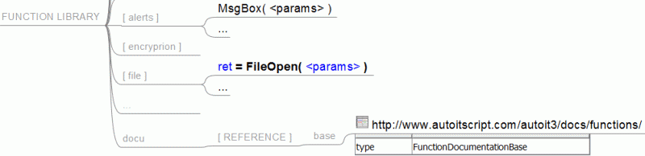
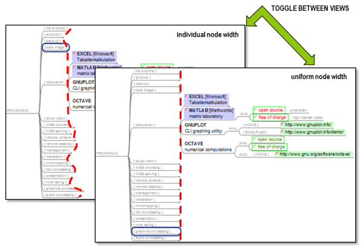

Freeplane
Freeplane is a free and open source software application that supports thinking, sharing information, getting things done at work, in school and at home. It provides you a set of tools for mind mapping (also known as concept mapping or information mapping) and navigating the mapped information. Freeplane is also a more robust and superuser alternative to Xmind, Mindmeister, and similar mind mapping software.
Freeplane is written in Java using OSGi and Java Swing. It runs on any operating system that has a current version of Java installed. It can be run locally or portably from removable storage like a USB drive.
Download and install the latest version over at Sourceforge. The change log is available here.
If you would like to report a bug, you can go report it over at Issues
Hop on to our Discussions if you have any questions, ideas, or thoughts you'd like to share. Contributors are very much welcome, of course!
Features rundown


How to get help
Freeplane is a non-commercial project. It lives by our active and vibrant community, where we try to support each other in order to develop and provide an outstanding knowledge management application. Please, feel free to discuss Freeplane and its features with other interested Freeplane users. For this purpose, we provided two forums (see structure picture on the right):
We invite you to do the following things:
in our DISCUSSIONS FORUM
- discuss the usage of existing features
- discuss the suitability of new features
- discuss the development of existing scripts and new ones
New bug reports go into the bug reports
New feature requests go into the feature requests
Freeplane's old user forums are archived here and here.
Getting started
Install
Download Freeplane now!
(this downloads the stable version 1.10.3)
change log
Download last development versions ( preview )
→ Find out which distribution better fits your requirements.
Distributions for Windows
- Freeplane-Setup-with-Java-xxx.exe - Windows installer with embedded Java.
- Freeplane-Setup-xxx.exe - Windows installer which reqiures Java 11 to 17 to be installed independently. To use this version set environment variable FREEPLANE_JAVA_HOME.
- FreeplanePortable-xxx.paf.exe runs on Windows using Portable Apps launcher. Requires Open JDK JRE64 portable java version 15 to be installed on your portable app device. It saves user configuration files on the same device.
- freeplane_bin-xxx.zip - archive without installer. It reqiures Java 11 to 17 to be installed. To use this version set environment variable FREEPLANE_JAVA_HOME.
Distributions for MacOS
- Freeplane-xxx-apple.dmg - distribution with embedded java for MacOS with m1 processor. This distribution does not include adaptive Look and Feel VAqua.
- Freeplane-xxx-intel.dmg - distribution with embedded java for MacOS with intel or m1 processor. This distribution includes adaptive Look and Feel VAqua.
Distributions for Linux
- freeplane_xxx~upstream-1_all.deb - Debian installer for different supporting Linux derivatives.
- freeplane_bin-xxx.zip - archive without installer. It reqiures Java 11 to 17 to be installed. To use this version set environment variable FREEPLANE_JAVA_HOME.
Command-line options
Call freeplane like this:
freeplane [options] [file1 [file2 ...]]
- -h|--help: list available options
- -X
: execute menu item with key . Use devtools add-on to find the menu keys - -S: stop after executing menu items
- -N: set the 'nonInteractive' system property to 'true'
- -U
: set the freeplane user config directory (only since version 1.3.3!!!)
Batch execution of menu items (e.g. scripts) is described in a special wiki article.
Debug start script under Linux
Start Freeplane in debug mode (if you have problems starting):
DEBUG=true freeplane.sh
Environment variables
Select Java installation used to run Freeplane
The following variables are tried in order:
- FREEPLANE_JAVA_HOME
- JAVA_HOME (not on Windows OS)
For windows, set one of these variables and run freeplane.exe or freeplaneConsole.exe:
FREEPLANE_JAVA_HOME=C:\Program Files\Java\jre1.8.0_131
or, under Linux/UNIX:
FREEPLANE_JAVA_HOME=/usr/lib/jvm/java-8-openjdk-amd64/ ./freeplane.sh
Java version
Freeeplane 1.10.x requires Java between Java 8 and Java 17.
Freeplane 1.9.x requires Java between Java 8 and Java 15, because Java 16 is not compatible with current Groovy Engine.
Use of Java 16 can be permitted only on Linux by setting variable FREEPLANE_USE_UNSUPPORTED_JAVA_VERSION to 1.
JAVA_OPTS
Set Java Properties, e.g. set the freeplane user config directory in Freeplane < 1.3.3:
JAVA_OPTS=-Dorg.freeplane.userfpdir=$HOME/blabla freeplane.sh
- What is an Add-on?
- Installing an add-on
- Edit
- Navigate
- Problem solving
- Plan and organize
- Images and icons
- Collaborate
- Import and export
- Others
- For developers
What is an Add-on?
Add-ons are a way to extend and customize Freeplane similar to how plug-ins and extensions can be used to extend and customize well-known applications like Firefox or LibreOffice. Freeplane add-ons can be used to provide a single function, a bundle of multiple functions, bind those functions to a menu item, and much more.
Anybody can write an add-on! (see the add-on developer documentation)
note: add-ons are not necessarily provided by the Freeplane core developers.
Installing an add-on
An add-on is a Freeplane mind map with the special additional suffix
If Freeplane is not the designated program to open '.mm' files and for Freeplane versions before v1.2.10_05, follow this procedure:
- In Freeplane, select Tools > Add-ons > Search add-ons > Visit add-on page
- Search for your add-on and choose download
- Save the add-on on your computer (for example, on your desktop)
- Select Tools > Addons > Search and install
- Select directory icon
- Find and select the file you just downloaded (for example, on your desktop)
- Select Install
- Restart Freeplane
You will now find the new command in the menu. For example, "Insert Inline Image" can be found under Edit->Node extensions with the shortcut Ctrl+Shift+i.)
Add-ons are listed below.
Edit
 wikdNode
wikdNode
by L. C. Rees, maintainer Volker Börchers
Node wrangling features for Freeplane:
- Case
- capitalize first word in node core text
- capitalize all words in node core text
- upper case node core text
- lower case node core text
- Delete
- delete first chosen characters from node core text
- delete first characters matching a regular expression from node core text
- delete last chosen character from node core text
- delete last characters matching a regular expression from node core text
- delete links on multiple nodes
- Split
- split node core tex into multiple nodes on periods
- split node core text into multiple nodes on commas
- split node core text into multiple nodes on spaces
- split node core text into multiple nodes on one or more chosen characters...
- split node core text into multiple nodes before one or more chosen characters...
- split node core text into multiple nodes on characters that match a regular expression...
- split node core text into multiple nodes before characters that match a regular expression...
- splits node core text after one or more chosen characters
- splits node core text after characters matching a regular expression
- Join
- join node core text of multiple nodes with spaces
- join node core text of multiple nodes with commas
- join node core text of multiple nodes with periods
- join node core text of multiple nodes with one or more chosen characters
- Other
- copy node core text as a new child of the node
- replace parent node core text with the core node text of one of its children
- convert parent node attributes to node children
- convert node children to parent node attributes
Download v0.8.0 from Github (with Java speedups)
Note: previous version of widkNode needed addition of 'scripts' to the script classpath in Freeplane's preferences. Please undo that before installing 0.8 and later
Source: Github
Navigate
MapInsight
by ADXSoft (Allan)
Freeplane Add-on for exploring maps and connecting idea
MapInsight addon provides a simple UI for walking around a map and optionally creating connectors
Using a lot of connectors, a map can get very confusing. This simple UI gives the view from a selected node showings its parent, children, connectors in and out. Hovering over a node in the UI reveals the notes and details.
Connection Candidates tool finds possible connections through link words, phrases or regular expressions and allows you to create the connector
Connection Manager shows all connectors in the map in a sortable table with edit/delete options
Video demonstration https://www.youtube.com/watch?v=cSyhkcsB2-M (made before the script was converted to an add-on but demonstrates the functionality of the import)
Add-on is located at https://github.com/adxsoft/MapInsight-Addon
Navigation
'''by Jodi D. Krol
Scroll leaves to visible
Performs two actions:
- Folds/unfolds the selected node
- On unfolding moves (grand)children into the screen area.
Does not (un)fold (grand)children. The action is performed recursively for al children. As a result the last child may cause the previous child to be moved outside the screen area. This behaviour may be influenced by folding the (other) children.
Demote to upper sibling
Moves each selected node to upper sibling and appends as child.
Download navigation 0.3
Installing the addon adds method Scroll leaves to visible and method Demote to upper sibling to menu Tools>scripts.
Jumper
by lilive
A fully keyboard driven search box for quick navigation in maps. It filters the nodes on-the-fly as the user types the search terms, and allows to jump to one of the results.
Jumper, the Jumping Filter, provides an easy and quick way to search for nodes in Freeplane maps. Press Jumper keyboard shortcut, type some text snippets, and you will instantly see all the nodes (or branches !) that contain them in the Jumper window. Select one of these nodes to select it in the map.
Some features:
- Search results updated as you type
- Matching text is highlighted in the results list
- Regular search or transversal search (find words or text snippets across a branch)
- Words or text snippets can be searched in any order
- Search in any part of the nodes (core text, details, notes, attributes)
- Plain text or regular expressions search, case sensitive or insensitive
Find all Jumper features, usage instructions and download here.
Bookmarks
by lilive
This add-on allows to bookmark some nodes in a Freeplane map, and to easily navigate between them.
Available in french and english. Le module Marque-pages est disponible en français et en anglais.
You can download it from its github page.
Problem solving
 FreeIBIS
FreeIBIS
by L. C. Rees, maintainer Henk van den Akker
Issue-Based Information System for Freeplane, supporting coordination and planning of political decision processes, sensemaking and collaborative problem solving in a variety of social and technical contexts.
In the README file on the FreeIBIS Github page you can find information about the usage of this add-on.
Plan and organize
Freeplane|GTD
This add-on enables using a mind map as a 'trusted system' in the Getting Things Done (GTD) methodology.
The hierarchical nature of a mind map is ideal for tracking projects, their associated tasks, and next actions.
Features:
- Extracts Next Action lists from nodes marked with a next action icon
- Displays lists sorted by Project, Context, Waiting-For, or Due Dates
- Accepts a simple, natural shorthand notation for entering Next Actions
- Next Actions in lists are hyperlinked back to the GTD mind map for easy editing
See here for more details.
Freeplane|GTD+
A generic task management add-on, with a special focus in supporting the Getting Things Done (GTD) methodology.
The hierarchical nature of a mind map is ideal for tracking projects, their associated tasks, and next actions.
Based on the original Freplane|GTD add-on, this add-on takes working with your tasks to the next level.
Features:
- Extracts Next Action lists from nodes marked with a next action icon
- Displays lists sorted by Project, Context, Waiting-For, or Due Dates
- Accepts a simple, natural shorthand notation for entering Next Actions
- Next Actions in lists are hyperlinked back to the GTD mind map for easy editing
New features:
- Allow marking tasks as done, and optionally hiding them from the task list
- Automatic Icon to Context transformation, based on your preferences
- Allow setting task priorities from shorthand, or the number icons
- Advanced copy to clipboard function to copy all or or grouped (Project/Context/Responsible/Duedate) actions as simple text, formatted text/HTML and as freeplane nodes
- Select function to select all or grouped (Project/Context/Responsible/Duedate) tasks in the mindmap
See here for more details.
 GTD Sync
GTD Sync
Groovy script to synchronise a Freeplane|GTD mind map with todo.txt. The catch is that you can make your Next Action list available to other applications and systems. For example, you can use Dropbox to distribute todo.txt and use SimpleTask for Android to consult and maintain todo.txt. What does GTD sync do?
- It imports new next actions from todo.txt to your GTD mind map under node 'New'.
- It updates existing next actions in your GTD mind map with the changes made in todo.txt since last synchronisation. This includes changing the status to completed.
- In case a next action is changed in both todo.txt and the GTD mind map, the attributes changed in todo.txt are logged, so after the synchronisation you are able to check whether any manual update is necessary.
- After the GTD mind map is updated with all new and changed next actions in todo.txt, all its next actions will be exported to todo.txt. The export does not include completed next actions.
For further information consult the wiki or the Quick Start mind map (Shift+F1) provided with the add-on.
For Freeplane 1.8.9 and higher: download the latest version of GTD Sync.
For upgrade information and Freeplane version compatibility read the README file
Freeplane|WBS
It aggregates the costs and durations for a task tree. It also assigns codes to each task in a doted form for later reference.
You should consider the root of the map as the project root, and each node as a task.
 Study Planner
Study Planner
Study Planner will help in better organization of learning.
It is designed for pupils and students in planning everyday school extracurricular activities and obligations.
Important functions of Study Planner are:
- organization of subjects and activities by day
- organization of activities by time of learning
- the ability to determine the type of activities
- countdown learning
- creating lists of activity by Day, by Subject, by Type of activity, by Period of learning
- copying list
- print list
- more icons
For more information see this page
Images and icons
 Insert Inline Image
Insert Inline Image
by Volker Börchers, Rickenbroc
This add-on is a convenient way to add images on the fly in your maps. The images can come from :
- a file from your computer,
- the clipboard : file path or a copy (like a screenshot),
- an url from the internet
You can resize the display (with a preview pane) and put it in :
- node core
- node details
- note
- node extension
You can even decorate the image inserted with a link which point wherever you would want.
Download v1.1 for Freeplane v1.8.0 and higher
Download v1.0 for Freeplane v1.2.10 to v1.7.x
Old Icons Theme
This little theme add-on installs the old (pre 1.2.9) link icons (Link.png and LinkLocal.png).
 Palm Icons
Palm Icons
by Steve Kunkel
Free Palm Os Icons categorized by groups Office, Home.... for Freeplane.
Compiled by Steve Kunkel and converted to an Add-on by Predrag. For artist information, see this forum post.
User Icons
This add-on adds standard Freeplane icons under User icons in bigger size (24 px) and adds other icons (computer, more office icons...).
Collaborate
Roan-Presentation
by Jodi D. Krol
RoAn-Presentation provides a combination of mind mapping with Powerpoint- and Prezi like presentation, using automatic filtering and zooming.
Stepping the presentation not only unfolds nodes, but also displays hidden details, centers the current node, executes the named filters which may be connected to each node and more. In short it supports traversing a mind map, taking over abundant clicking from the user.
Besides traversing the mindmap depth first, it is possible to define scenes and scenario's for traversing in any order.
The included Help file which itself is an example which can be played or stepped as well. The Help file also contains links to example maps and videos which can be downloaded.
Besides functionality for presenting, RoAn may automatically add nodes with links to all folders and files in the directory of the mind map (indexing). As a choice image files may be displayed as inline images. This functionality is more basic than in addon diView(indexfile), but more easy to use.
Installing the add-on results in a new menu Tools> RoAn-Presentation. This menu contains a submenu "Menu" which opens a window with presentation and edit buttons. One of the buttons will open the Help file. Once menu RoAn is used on a mind map, a little button is added to the root to open RoAn's menu with a click next time.
Download roan-presentation 0.2.1 for Freeplane 1.5.
Download roan-presentation 0.1.3 for Freeplane 1.3.
Translation
Utilities for automatic translation of maps and language resources that use the mymemory translation service. Of most interest for Freeplane translators.
The scripts still have some limitations:
- Text size per node/text is limited to 1000 characters.
- Translation time growths mainly with the number of texts/nodes. No optimization for the case of many small texts.
Collaborative tools
This add-on is no longer maintened (not tested under freeplane 1.5).
Collaborative tools provides some scripts to ease team working on a single map.
It requires a working versionning system, CVS, SVN and GIT are supported.
Once installed, you can execute the following commands inside freeplane
- diff your mindmap (F10)
- update your mindmap (F11)
- publish your mindmap (F12)
Feedback and contributions are welcome.
Import and export
Pack & Go
Pack and Go provides a function to pack a map with all its dependencies into one zip file.
All files have to be loaded into the RAM so be prepared to increase Java heap space if you get a "Out Of Memory" Error.
Import OPML to selected node
by ADXSoft (Allan)
Freeplane Add-on for importing OPML files
OPML is a popular export format for mind maps and OPML has nodes recorded in outline tags.
Within each outline tag is
- a text attribute which is the node title
- a _note attribute which is the note related to the node. This may or may not be present
- optionally, a richcontent tag with html content
This script will import the nodes and their related notes and richcontent into Freeplane as follows
- an outline tag's text attribute will import into a node core's text
- a _note attribute (not always present) will import into the nodes note text
- a richcontent tag's contents, if present, will import as html into the node details text
Video demonstration https://youtu.be/hUagckdoeNATo (made before the script was converted to an add-on but demonstrates the functionality of the import)
Add-on is located at https://github.com/adxsoft/ImportOPMLtoselectednode.addon
Others
SmartLocker
by Jodi D. Krol
SmartLocker provides a secure repository integrated within a freeplane mind map.
Besides it can generate a secure password, automatically login to a website and open multiple sites in one click.
Its typical use is illustrated in the video's below.
After downloading and installing SmatLocker's menu appears in menu Tools > SmartLocker. This menu contains extensive help, both local and online, and in addition to the local help provided in tooltips. It contains documentation describing all system nodes and preferences which can be set for these nodes through menu Tools > Preferences > SmartLocker. It describes how you can translate SmatLocker's menu and help files, and share them through the freeplane wiki with other users. The Help file also contains a link to a map with predefined nodes for logging in to email providers, facefook etc. And it contains a node Illustration which contains documented nodes explaining the global architecture of SmartLocker (don't forget to to look inside the locker nodes). Finally, if you want to write your own scripts, the documentation contains a number of scripts you can simply import and use.
Download preview Smart Locker v0.2
IMPORTANT
After downloading, in Tools > Preferences > Plugins set:
- classpath: lib
- permit file/ read operation: true
dView(indexfile)
by Jodi D. Krol
The add-on dView(indexfile) supports adding annotations, hyperlinks and reminders to file names in a folder structure. For this a specialized dashboard mindmap must be put into the folder to index. When this dashboard is opened and button Index is pressed, a hierarchy of nodes with hyperlinks to the subfolders and files of the indexed folder is generated. Next one can add annotations, add hyperlinks to other files or websites, and add reminders (clock) for file related actions. If email adresses are registered, with one click all users of a particular dashboard can be sent a group-email. In case of image files, a preview can be displayed. The resulting mindmap can be shared with other users, which can navigate it without having to install the add-on. Hyperlinks to indexed files can be copied and pasted into an email. With special options set the add-on can be used with MS Sharepoint or on the internet, and/or be used to generate NATO-compliant file names.
Installing add-on dView(indexfile) results in a new menu Tools> dView(indexfile) with different dashboard types to choose from: basic, dossier, meeting, theme, organisation, person and folders, see the descriptions below. Besides it has an extensive Help.
The following functions can be used on any map:
- Copy selected hyperlinks to clipboard (F12), to paste with Ctrl-V in email, Word document, other html-based document
- Copy adresses of links in selected nodes to clipboard (F11), to paste with Ctrl-V
- Copy location of node in map (F10), to paste as link in node of different map (F9) See Help for details.
For a video and examples seeInformation management with add-on dView(indexfile).
'''Download dView(indexfile) 0.3.1
When opening and instaling the add-on:
- jar files scriptlib and indexfile are added to
/lib - template files are added to
/templates/indexfile - help files are added to
/doc - submenu IndexFile is added to menu Tools
See video with instructions for installation.
Map Saving Options
by EdoFro
'Map Saving Options' is a Freeplane AddOn that gives you the possibility to add saving preferences to each of your maps.
This Add-on can be useful when working with Github or when comparing different versions of a mindmap file.
Find MapSavingOptions features, example images and usage instructions here
With this AddOn you can define if a map have to save the information of any of these:
- folded and unfolded nodes
- selected node when saving
- Creation and Modification times of each node
This way, you can define for each map if it will use the central Freeplane preferences, its own or a mix of both.
Download the latest release here
For developers
Developer Tools
This add-on collects some utilities that script and/or add-on developers will find useful.
- Build add-on: adds all standard nodes, attributes and notes to the current map. Can be used with an empty Map to create a basic add-on.
- Package add-on for release: It copies the
.mm to - .mm and updates the script node's context from the files lying around. - Generate add-on documentation: Creates a snippet for the Freeplane add-ons wiki page.
- Insert binary: Asks for a file to insert as text of the current node (BASE64 encoded).
- Extract binary: Asks for a file to extract the BASE64 encoded binary in the current node to.
- Encode translation: Encode non-ASCII characters so that they don't get scrambled while packaging or installation. This function is included in Package add-on for release so you don't need this function.
- Menu item info: Shows technical details about a selected menu item.
- freeplane.dsld: Adds Eclipse editor support for predefined script bindings such as node, c, ui, textUtils, ...
The functions are available under Tools -> Development Tools
For Freeplane 1.7.4 and higher: Download v0.9.26
For Freeplane 1.6.15 and higher: Download v0.9.23
For Freeplane 1.3.x and 1.5.x: Download v0.9.22
For Freeplane 1.2.x: Download v0.9.14
 wikdShell
wikdShell
by L. C. Rees, maintainer Volker Börchers
Groovy console for interacting with a running Freeplane instance.
Scripts inside the console have the same variables that every script has assigned to, like node (the selected node when launching the shell) and c (the Controller). See the groovyconsole description for usage instructions.
Source: Github
For Freeplane 1.5.x: Download 0.3.0
For Freeplane 1.3.x and 1.2.x: Download 0.2.3
 scriptlib
scriptlib
by Jodi D. Krol
This add-on is aimed at starting developers. It:
- Provides a number of generic ready to use scripts (play audio, set bubble, set cloud etc.);
- Shows how to define local and online Help for add-ons (including translations);
- Shows how to share both binary and groovy code by means of an add-on;
- Shows how add-on scriptlib is defined, including defining menu items, preferences, default properties and translation; scripts and zips; and how the source of the add-on can itself be included in an add-on.
IMPORTANT: In Tools >Preferences > Plugins classpath must be set to: lib.
After installing the a menu Tools > Defining scripts is added. It opens two submenu's: Help and Help online. The former contains the help as provided when downloading scriptlib. The latter may contain a newer version of the help file, which is available without having to download a new version of scriptlib.
First steps
- to create a new node, press
enter - to add text to the new node, start typing and press
enterwhen you are done - to navigate between nodes, use the arrow keys
- to fold/unfold a selected node, press
space - to move nodes, drag and drop them with the mouse
- For more details, see the rest of this documentation and ask questions in the Freeplane forum.
First steps
- to create a new node, press
enter - to add text to the new node, start typing and press
enterwhen you are done - to navigate between nodes, use the arrow keys
- to fold/unfold a selected node, press
space - to move nodes, drag and drop them with the mouse
- For more details, see the rest of this documentation and ask questions in the Freeplane forum.
Working with mind-map files
Create a new map
Create a new map with File->New map (Ctrl+N).
This creates a new map using the default template.
Create a new map from a different template with File->New map from template….
This opens a file picker that lets you choose a template to use to create a new map.
Create a new password-protected map with File->New protected (encrypted) map….
This opens a password dialog used to encrypt a new map created using the default template.
Encrypted maps cannot be opened or read without the password.
Open maps
Open an existing map with File->Open mind map… (Ctrl+O).
This opens a file picker to let you chose a Freeplane .mm map file to open.
In this dialogue you can also choose standard or user-defined template mind maps from the drop-down menu at the bottom (see Templates).
Open an existing map from a list of recently opened maps with File->Open recent map....
Hovering over this Menu action shows a list of recently opened maps.
Click on any map on this list to open it.
If you have Autosave enabled, you can open an autosaved version of an existing map with File->Open older version.
See Autosave for more information.
Close maps
Close the active map with File->Close current map (Ctrl+W).
Close all inactive maps (open maps that are not the active map) with File->Close all other maps.
Close all open maps, both active and inactive, with File->Close all maps.
If you have made any changes to a map after opening it, including changes to a node's folded/unfolded state, and you attempt to close the map, Freeplane will ask you if you want to save the map first.
Save maps
Save an active map with File->Save map (Ctrl+S).
Save all open maps with File->Save all maps.
Save an active map under a new filename with File->Save map as… (Ctrl+Shift+S).
In the saving-dialogue you can choose standard or user-defined template mind maps from the drop-down menu at the bottom (see Templates).
Autosave
Enable and customize Autosave with settings in Tools -> Preferences in section Environment->Automatic save.
There you can set the following preferences:
| Setting | Notes |
|---|---|
Time for automatic save | Sets the time in milliseconds between autosaves. To disable autosave set this number to 2000000000. |
Use single directory for backup files | If filled, Freeplane will autosave backup files to a single directory. If cleared, Freeplane will autosave backup files for each map to that map's directory |
Backup directory | If Use single directory for backup files is filled, this sets the directory where autosave files are saved. By default, it is set to .backup in the Freeplane user directory. |
Delete automatic saves at exit | If filled, autosave files are deleted automatically when Freeplane is shutdown normally. |
Number of different files for automatic save | Sets the number of different autosave files to keep when Freeplane is open before the autosave files begin to be overwritten. |
Number of kept backup files | Sets the number of different autosave files that are kept after Freeplane is shut down normally. |
Import
The File->Import menu has two types of functions.
One is importing map branches from other Freeplane maps into an active map.
The other is importing content from non-Freeplane maps into an active map.
Importing Freeplane map branches into an active map
(to be added)
Importing non-Freeplane map content into an active map
(to be added)
Export
(to be added)
File->Export map…
File->Export branches…
Other resources
Formatting maps and nodes
Map background
There are several options to change the map background: Format->Map background
- Background color
- Background image (with the option "fit to window")
Formatting nodes
The most straightforward way to format a node is to use the formatting toolbar or hot keys, like Ctrl+B for bold.

There's also Tool panel (right-hand-side panel), which lists all formatting properties that can be set on a node.
It can be opened by right-clicking on the mind map background and selecting Tool panel.

In addition to formatting an entire node, it is possible to format each character/word in the node.
It can be done by using the editor dialog Edit->Node code->Edit node core in dialog (Alt+Enter).

?> Note: It's also possible to use the hot keys in the in-line editor (e.g. Ctrl+L for blue).
Using Format
Format allows to apply a special data format, e.g. a special or number date format.
If for instance a date has the standard format 28/12/2012 it can be reformatted as 12/28/2012 by applying the format mm/dd/yyyy to the node.
See Data recognition and data formats for details.
Another application of the format is to define text templates, such as a prefix like "Beware: ". In text templates "%s" represent the original node text like in "Beware: %s".
By setting Format to Text you switch all formatting off.
Text also disables formula evaluation.
Format can be set to LaTeX or Unparsed LaTeX → LaTeX in Freeplane
Styles
Finally, a node can be formatted by applying a style to the node → styles
Styles
A style is a bundle of formatting properties and icons, saved under a style name. Styles are saved in the map itself.
?> Styles' properties can be viewed and changed in Format->Manage Styles->Edit stles (Ctrl+F11) → style editing
Freeplane has several predefined styles, like Default, Floating node or Important, as well as Automatic level styles like Level 1, Level 2.
A template might have additional styles, and any mind map created from such a template will inherit the template styles.
Moreover, any mind map can have its own additional styles and/or delete some of the inherited ones.
A style can be applied to a selected node by choosing the style in Toolbar on in Tool panel.

By default, a node has no style assigned and Freeplane uses Default to format the node.
It's worth to note that there can be several styles active for a node.
The most common scenario is that Automatic level styles are enabled in a map, usually painting each level a different color.
Still, each node can be explicitly assigned a style, e.g. Important.
Then formatting properties from both Level and Important will blend.

To better understand how formatting using styles works, one needs to know that Freeplane uses a concept of layered Styles.
Here's the order of precedence in applying the different layers.
- Character/word-level formatting
- Selected style
- Node individual formatting, including "automatic edge color: on branch creation"
- Explicitly applied style
- Node conditional styles
- Map conditional styles
- Automatic edge color: for branches / levels / columns
- Automatic level style
- Default style
?> Note: Selected style is only in effect if Preferences->Defaits->Selection colors->Display selected nodes in bubbles is off.
Default is the base layer.
Whatever property is set on that layer will either shine through or be overwritten by the next layer put on top of Default.
If Apply level styles is enabled, any formatting property (e.g. background color) set on an Automatic leve style (e.g. Level 1), will override properties set on Default.
An explicitly applied style will overwrite the former two, and will be overwritten by node individual formatting, if set.
Style editing
To manage styles you need first to open the styles editor: Styles->Edit styles.
Result: a map containing all styles is displayed.

There you can modify all defined styles: either styles provided by default with Freeplane, or add/change your own styles. Note that's its allowed to remove default freeplane's styles.
To add your own style:
- in the styles editor, choose the style with the nearest format of the style you want to create, right click on this style, select in the contextual menu
Save as new style..., enter new style name.
Result: a new style is added and appears in the user's styles branch.
You can now fully define the style with the formatting panel.
Close the style editor.
Your new style is available for immediate use in toolbar's style list.
Tip: you can also create a new style from a main map's node with the command Styles->New style from selection.
To rename a user style:
- in the styles editor, select you style, right click, select in the contextual menu
Save as new style..., enter the new name you want, remove the old style entry.
To change the display order of styles in the main toolbar styles list:
- in the styles editor, move up / down branchs or styles.
Pre-defined styles
Some predefined styles are available in Freeplane. You can either use them "as they are" or change them as it's convient for you. Two pre-defined styles named "Details" and "Notes" have a particular behaviour because they are used to format Node Details and Node Notes:
- Font and colors of node details is controlled by style "Details"
- Font of notes (not the color) is controlled by style "Notes".
Other style features
- menu
Styles->Copy styles...imports, in the current map, styles from an other mindmap. - menu
Styles->Redefine styleredefine node style based on current node formats. It changes formats of all nodes using this style.
Making styles available to other mind maps
For a style to be available in other mind maps, it needs to be saved in a template → templates
Templates
For a style to be available in other mind maps, it needs to be saved in a template. Once this is done, the style will be available in each new mind map created from that template.
There are 2 ways to do it
- Open the template mind map and add your new style there
- Add a new style to your regular mind map
- In
Tool panel→Make current formatting default, after setting the properties of your new style, choosefor all maps based on template:and clickApply - Use
Choose templateto change the association beforehand, if needed
- In
File Paths for Templates
Depending on your OS, you can find template folders in different directories. However, on every OS, there is a subfolder in the Freeplane installation-folder, where you can store user-defined template files.
?> You can also change the default directory containing the user configuration. This means, the file path for templates might be different in your Freeplane (see The user directory).
Windows
TODO
Linux
System-wide templates (when Freeplane is installed via the package manager of your distribution) are located in:
/usr/share/freeplane/resources/templates
User-defined templates can be found in:
~/.config/freeplane/VERSION/templates
MacOS
TODO
Set a default template file
The default template file will be used for every newly generated mind map. You can set the default template file in the preferences:
Tools > Preferences > Environment, Files > 'Standard template file'
The template files shown here as an option are those located in the system-wide path for template files.
Create a new map from a template
You can create a new mind map from a template file at File > New map from template….
In the dialogue you have different options, depending on which Files of Type you choose from the drop-down menu at the bottom of the dialogue:

| Option | Description |
|---|---|
All files | all filetypes (also non-mind-map files, which might give you an error) |
Maps (*.mm) | your mind maps, whose styling you want to use (see Styles) |
Standard Templates (*.mm) | the templates Freeplane comes with → system-wide path for template files |
User templates (*.mm) | your template mind maps → user-defined path for template files |
?> Depending on your current choice in the drop-down menu at the bottom of this dialogue, the path in the upper part changes accordingly:
If you click on Standard template (*.mm) it will show you the system-wide path for templates, if you click on User templates (*.mm) it will change to the user-defined path.
CSS For HTML/Markdown
Since 1.9.12 (Dec 2021)
HTML or Markdown content can be formatted using CSS.
Quick Start by Example
To get you started quickly, here's a simple CSS example for Markdown content.
- Insert a new node, adding the following text
# My Heading 1
Some text in my paragraph
> A sample quote
- Set the node's format to Markdown –
View->Controls->Tool panel->Format->Core Text->Format = Markdown - Add the following CSS –
View->Controls->Tool panel->Format->Node Font->CSS->Edit CSS...
h1 {
color: blue;
font-weight: normal;
}
blockquote {
color: green;
font-style: italic;
}
- As a result, in your node you should see a blue heading, a regular paragraph and a green italic quote.
Sample Mind Map
Requires Freeplane 1.9.12 or higher
CSS For Core Text
A node is formatted by CSS instructions in 2 cases:
- When CSS is added to the node –
View->Controls->Tool panel->Format->Node Font->CSS->Edit CSS... - When CSS is added to the Style applied to the node –
Format->Manage styles->Edit styles| a Style |Node Font->CSS->Edit CSS...
When CSS is added to a node, CSS added to a Style (applied to the node) is ignored.
The following formatting properties can coexist with CSS-defined formatting:
- Node Color -> Text
- Node Color -> Background
- Node Font -> Font family
- Node Font -> Font size
- Node Font -> Bold
- Node Font -> Strike through
- Node Font -> Italic
- Node Font -> Text Alignment
Under the hood, these formatting properties are converted to CSS for body and applied alongside the CSS added to a Style or to a node.
More about CSS
- https://www.w3schools.com/css/
- https://peterxjang.com/blog/modern-css-explained-for-dinosaurs.html
Order Of CSS Application
Just like any web browser (Chrome, Firefox, Safari, etc), the Java library used by Freeplane has its own default CSS: https://github.com/openjdk/jdk/blob/master/src/java.desktop/share/classes/javax/swing/text/html/default.css
In addition to that, Freeplane adds its own CSS, overriding the formatting instructions from the Java default CSS:
p { margin-top:0; }
table { border: 0; border-spacing: 0; }
th, td { border: 1px solid; }
Next, the CSS created based on formatting properties is used, overriding any previous instructions for body, and finally the CSS added to the Style or to the node is applied, overriding any other CSS instructions.
When CSS is added to Default, it affects node-core HTML/Markdown of all nodes where Default is applied.
When CSS is added to a Style, CSS added to Default is ignored for that Style.
When CSS is added to a node, CSS added to a Style (applied to the node) is ignored.
CSS For Details And Note
CSS can be added to Details and to Note, making it possible to specify detailed formatting for their HTML/Markdown content.
Format->Manage Styles->Edit styles| Details |Node Font->CSS->Edit CSS...Format->Manage Styles->Edit styles| Note |Node Font->CSS->Edit CSS...
CSS added to Details will affect node-details HTML/Markdown of all nodes in the map.
Similarly, CSS added to Note will affect note HTML/Markdown of all nodes in the map.
Note that when CSS is added to Default, it is also applied to Details and Note. To make Details or Note ignore CSS added to Default and use only its formatting properties, add "empty" CSS (e.g. a space) to Details or Note respectively. This is because when CSS is added to a Style (here to Details or to Note), CSS added to Default is ignored for that Style.
Example Of Markdown With CSS
Given the following Markdown document:
# Heading 1
Regular text.
**Bold text.** *Italic text.* ***Both: bold and italic.***
A line (horizontal ruler) using underscores:
___
<s>Strike through</s> NB. using `~~deleted text~~` doesn't work in Freeplane (Java html/css renderer)
E.g. ~~deleted text~~
<u>Underlined text</u>
## Heading 2
> A quote, line 1.
> Line 2 of the quote (will be joined with line 1).
>> A quote within a quote
### Heading 3
Sample text with `an in-line piece of code`.
```groovy
// a Groovy code example - as a block of code
def name = 'Freeplane User'
"Hello, ${name}!"
```
Another example of a block of code
introduced as indented Markdown (with a tab or 4 spaces)
> An example of a quote
> containing a block of code
> At least 5 spaces need to be used
> And it continues as a regular quote
#### Heading 4
A table
| # | Language | [Pangram](https://en.wikipedia.org/wiki/Pangram) |
|--|--|--|
| 1 | English | The quick brown fox jumps over the lazy dog |
| 2 | French | Portez ce vieux whisky au juge blond qui fume |
| 3 | German | Victor jagt zwölf Boxkämpfer quer über den großen Sylter Deich |
| 4 | Italian | Pranzo d'acqua fa volti sghembi |
| 5 | Spanish | Benjamín pidió una bebida de kiwi y fresa. Noé, sin vergüenza, la más exquisita champaña del menú |
##### Heading 5
A list of items
* Item 1
* Item 2
* Item 3
###### Heading 6
A numbered list
1. Item A
2. Item B
3. Item C
and keeping in mind that it will be converted to the following HTML:
<html>
<head></head>
<body>
<h1 id="heading-1">Heading 1</h1>
<p>Regular text. <strong>Bold text.</strong> <em>Italic text.</em> <strong><em>Both: bold and italic.</em></strong>
</p>
<p>A line (horizontal ruler) using underscores:</p>
<hr>
<p><s>Strike through</s> NB. using <code>~~deleted text~~</code> doesn't work in Freeplane (Java html/css
renderer)</p>
<p>E.g. <del>deleted text</del></p>
<p><u>Underlined text</u></p>
<h2 id="heading-2">Heading 2</h2>
<blockquote>
<p>A quote, line 1.
Line 2 of the quote (will be joined with line 1).</p>
<blockquote>
<p>A quote within a quote</p>
</blockquote>
</blockquote>
<h3 id="heading-3">Heading 3</h3>
<p>Sample text with <code>an in-line piece of code</code>.</p>
<pre><code class="lang-groovy">// a Groovy code example - as a block of code
def name = 'Freeplane User'
"Hello, ${name}!"
</code></pre>
<pre><code>Another example of a block of code
introduced as indented Markdown (with a tab or 4 spaces)
</code></pre>
<blockquote>
<pre><code>An example of a quote
containing a block of code
At least 5 spaces need to be used
</code></pre>
<p>And it continues as a regular quote</p>
</blockquote>
<h4 id="heading-4">Heading 4</h4>
<p>A table</p>
<table>
<thead>
<tr>
<th>#</th>
<th>Language</th>
<th><a href="https://en.wikipedia.org/wiki/Pangram">Pangram</a></th>
</tr>
</thead>
<tbody>
<tr>
<td>1</td>
<td>English</td>
<td>The quick brown fox jumps over the lazy dog</td>
</tr>
<tr>
<td>2</td>
<td>French</td>
<td>Portez ce vieux whisky au juge blond qui fume</td>
</tr>
<tr>
<td>3</td>
<td>German</td>
<td>Victor jagt zwölf Boxkämpfer quer über den großen Sylter Deich</td>
</tr>
<tr>
<td>4</td>
<td>Italian</td>
<td>Pranzo d'acqua fa volti sghembi</td>
</tr>
<tr>
<td>5</td>
<td>Spanish</td>
<td>Benjamín pidió una bebida de kiwi y fresa. Noé, sin vergüenza, la más exquisita champaña del menú
</td>
</tr>
</tbody>
</table>
<h5 id="heading-5">Heading 5</h5>
<p>A list of items</p>
<ul>
<li>Item 1</li>
<li>Item 2</li>
<li>Item 3</li>
</ul>
<h6 id="heading-6">Heading 6</h6>
<p>A numbered list</p>
<ol>
<li>Item A</li>
<li>Item B</li>
<li>Item C</li>
</ol>
</body>
</html>
the following CSS can be applied to the node to format the Markdown content:
h1, h2, h3, h4, h5, h6 {
background: #D4D4D4;
border-top: 1px solid gray;
border-bottom: 1px solid gray;
font-weight: normal;
padding-left: 2px;
padding-right: 2px;
}
blockquote {
background: #E6F2E6;
border-left: 3px solid #408040;
font-style: italic;
padding-left: 5px;
margin-left: 2px;
}
pre {
background: #E0F0FF;
border-left: 5px solid #55AAFF;
padding: 5px;
margin-left: 2px;
}
code {
background: #E0F0FF;
font-family: JetBrains Mono NL, Courier New, Monospaced;
font-size: 0.9em;
}
table {
border-spacing: 0px;
border-right: 1px solid gray;
border-bottom: 1px solid gray;
}
th, td {
border-left: 1px solid gray;
border-top: 1px solid gray;
}
th {
background: #D4D4D4;
font-weight: 600;
}
ul {
margin-left-ltr: 20px;
margin-right-rtl: 20px;
}
ol {
margin-left-ltr: 25px;
margin-right-rtl: 25px;
}
Nodes have several characteristics (colors, shapes, text content, icons, etc). The users of FreePlane can create rules to automatically associate a certain characteristic with a certain style. So this kind of rule works like this: if the node has this characteristic, then apply that style on it.
The rules for automatic node formatting consist of a condition like the conditions used for filters and a style name. Thus, node formatting can depend on its content, attributes, icons or level. They can be set using "Styles->Manage conditional styles".
Multiple styles simultaneously applied to one node
Because each style may set only some of the formatting attributes, the resulting node formatting is a sum of formats defined by explicitly set format, explicitly assigned style and all matching conditional styles.
So if there is more than one conditional style, all those styles are applied to the nodes that satisfy all those given conditions, and so each node will be formatted by a composition of multiple styles. Here, if different styles set different properties, all of them are applied to a node; otherwise the upper style has higher priority.
Read more about the layering of styles in the page Styles of the documentation.
The Stop button

The list in the Conditional Styles list can be seemed as a list of tasks that the user gives to FreePlane. FreePlane goes through each node of the map and executes all the tasks of the list on the node.
Each task is like this: if the node has this characteristic, then apply that style on it.
When Freeplane does the task on a node, this is what happens:
- if the node doesn't have the characteristic, Freeplane concludes: "false". And then continue for the next task;
- if the node has the characteristic, it concludes "true". And then applies the style, and goes to the next task
So, in both cases, Freeplane continues for the next task.
What the Stop button does is create this rule: if, in this task, you conclude "true", then don't continue to the next task. So, if that happens, FreePlane stops in the middle of the list of tasks, instead of going through all of it, as usual. Notice that it only happens if there is a "true" conclusion in the task where the Stop option is activated.
Video and Diagram explanation
Demo video of Conditional Styles (with and without the STOP option), and a resume diagram
https://youtu.be/ayfifHlbyjc
Freeplane 1.2.x supports LaTeX formulae in boxes underneath nodes while Freeplane 1.3.x deprecates those boxes and adds LaTeX directly to node contents. Please see the relevant subsections below.
Thanks to the excellent JLaTeXMath!
LaTeX Text+Formulae in Freeplane >1.3.x =
- LaTeX text is displayed inline in node content (as opposed to underneath nodes in 1.2.x)
- You can tell Freeplane to treat a node as LaTeX text by either:
- using a "\latex " ("\latex" +
) prefix - View->Controls->Tool panel (previously View->Properties panel), then Core text->Format->LaTeX
- using a "\latex " ("\latex" +
- By default the LaTeX interpreter is in text mode, so you need to use $...$ for (inline) formulae
- Automatic linebreaks are supported
- The editor supports LaTeX syntax highlighting
Example:
\latex my formula: $x_2=\frac{1}{2}$
Common/global LaTeX Macros
Freeplane has a textbox in preferences->Plugins->LaTeX that allows you to enter code (usually macros) that will be inserted into every LaTeX node before the actual node content. Be aware though, that using this means that your map will only be readable by someone else if he/she also includes the macros in his/her config!
"Unparsed LaTex" (LaTeX for Export)
JLaTeXMath, the component used by Freeplane for rendering LaTeX, is focused on math and thus does not support i.e. itemize or enumerate and more. However, some people want to export complete LaTeX documents, including code not supported by JLaTeXMath, and if you try to use unsupported LaTeX in LaTeX nodes (Format=LaTeX or node prefix "\latex"), then this will be correctly exported but you will get ugly error boxes in Freeplane.
In order to solve this, we have added Format="Unparsed LaTeX" (translation may be different) and the node prefix "\unparsedlatex" (for symmetry, will not be translated). Nodes designated like this will use LaTeX syntax highlighting and will be exported correctly, but will not be rendered with JLaTeXMath.
Including LaTeX content from file system
If your node matches the pattern
\latexinput{<file>}
then Freeplane will include the given file at the given position in the LaTeX export. Note that the export will fail if the document cannot be read.
Caveat: The file must be a well-formed XML document, so you must have a root tag and escape <, > and & (<, >, &), like this:
<doc>
\begin{tabular}{cc}
1 &amp; 2 \\
3 &amp; 4 \\
\end{tabular}
</doc>
Combination of LaTeX and Groovy formulas
Here's how to format formula results as LaTeX:
- Set node format to LaTeX.
- Let your formula generate LaTeX code.
Example (copy 'n paste it into a map)
="\\LaTeX: \$\\sum_{children} = ${children.sum(0)}\$"
2
3
4
Note that LaTeX symbol \ has to be doubled in a double quoted string and that a $ have to be escaped with a single \ to prevent Groovy from interpreting it as the prefix of a variable.
Known Problems
- Array environments are maximized on the maximum node width
- align=right and align=center does not work well
- The syntax highlighting editor has problems with some unicode/chinese characters. If you experience this, turn off the editor in prefs->Plugins->LaTeX (Freeplane will then use the normal editor for LaTeX).
Customizing LaTeX Export
- Copy <installation_dir>/resources/xslt/mm2latex*.xsl to
/xslt (you can find with Tools->Open user directory) - You need all three because mm2latexartcl.xsl and mm2latexbook.xsl include mm2latexinput.xsl
- Adapt your export script (usually document: mm2latexartcl.xsl, book: mm2latexbook.xsl, or input: mm2latexinput.xsl)
- Restart freeplane --> the new export scripts will be used
Other Export solutions
There are many XSLT scripts out there; here is one from Igor Gartzia Olaizola that integrates well with Freeplane and also allows to export to LaTeX Beamer presentations: https://sites.google.com/site/freemind2beamer/. The source code is on github.
LaTeX Formulae in Freeplane 1.2.x
This type of LaTeX formulae in Freeplane is deprecated in Freeplane 1.3.x (the formula boxes will still be displayed and can be edited but you can't add new boxes)! Please see the 1.3.x section above if you're using Freeplane 1.3.x.
- you can add a LaTeX formula to a node by running Edit->Node Extensions->Add LaTeX formula...
- you can edit a LaTeX formula related to a node by running Edit->Node Extensions->Edit LaTeX formula...
- you can remove a LaTeX formula by selecting Edit->Node Extensions->Remove LaTeX formula OR by using Edit->Node Extensions->Edit LaTeX formula... and specifying an empty text.
- by default the LaTeX interpreter is in math mode
- does not support automatic linebreaks
Example:
x_2=\frac{1}{2}
Spell checker how-to
To enable spell checking, select one of the supported languages using pop-up menu→languages→[your language]. from any editor.
Some spell checker options can be configured from Preferences->Behavior->Spell checker options.
User can add his personal words for a particular language from the context menu on word selection. The first time user adds a custom word, a user dictionary file is automatically generated in
You can install another dictionaries copying them into <freeplane-install>/resources/ortho. The dictionary files dictionary_XX.ortho converted from aspell are available on http://sourceforge.net/projects/freeplane/files/spell_check_dictionaries/ .
Introduction
In the following the origin of Freeplane is described. Since then Freeplane has got and is still is getting new functionality at a rapid speed, while keeping the easy way of working which is known from Freemind, see Freeplane's home page. The power of this new functionality is shown by the Quick reference and Documentation, which are themselves mind maps. In addition there is a growing base of didactic maps in the wiki Tutorial Freeplane.
Why fork?
There was much discussion and reflection before the decision was made to fork a project as popular as FreeMind. There were two main areas where no internal agreement could be reached after years of discussion:
Software Architecture
Freeplane's code has been refactored considerably to create a highly modular, clear and logical design, to ease entrance into development and to provide a solid foundation for long term development. As there was disagreement on this, it was decided that Dimitry would start work on a fork, while Chris develops the existing codebase, to see where this would lead. It is possible the two projects will merge in the future, no one knows. At the moment we feel that Freeplane offers an exciting opportunity for developers to help create a lean and extensible open source framework for mind mapping.
Development Process
(i) release cycle
It was felt that the FreeMind release cycle was too slow, and that this was holding the project back. Freeplane aims for regular releases, this will probably mean a stable release every six months.
(ii) community driven development
It was felt that the current FreeMind set up was not doing enough both to promote and integrate community contributions. Freeplane aims to create a contribution friendly climate. We hope to ensure that contributions do not go to waste. If you can contribute, and your ideas are not wildly out of sync with the vision of the developers, then your contribution will be rapidly integrated and included in the new release.
Relationship to FreeMind
We are not aiming to divide sentiment or users. Freeplane is not positioning itself against FreeMind. We understand that FreeMind has many loyal users, and that this is because it is such as good product. Many of the team members contribute in some capacity to both projects, though the lead developers obviously concentrate their energies more on one project. If Freeplane's approach turns out to have advantages, then this will be of benefit to users, and create a more satisfying project for developers.
References to other known documentation/tutorial sites
Documentation mind maps distributed with Freeplane
- Tutorial mind map
- Documentation mind map
- What's new in Freplane 1.5 mind map
Videos
- MindMapping for Business and Study with FreePlane by Peter Carruthers https://www.youtube.com/watch?v=nCfGAuHJk0s
- Freeplane Video Tutorials https://www.youtube.com/channel/UCh5L_Fyyymhf6X6TnzAMbsg
- Freeplane Videos by Bill McDonald https://www.youtube.com/playlist?list=PLhOm7F0YJUlzSA1nUts_3DvFbkEddMoyW
- Zipizap Freeplane channel - https://www.youtube.com/channel/UCE39SdNgftWlSDJQQnwxz1g
Forums
- Current discussion forum: https://github.com/freeplane/freeplane/discussions
- Old discussion forum: https://sourceforge.net/p/freeplane/discussion/758437
- Older discussion forum: http://www.freeplane.org/forum2012/viewforum.php?f=1
- Freeplane usage questionnaire https://sourceforge.net/p/freeplane/discussion/758437/thread/5af6fd05/
How to Start Contributing
Join the Freeplane team not only as user but maybe as a
- developer (coder and designer)
- tester (writer of tutorials, screencasts and help texts)
- translator (various languages)
- forum moderator (care for a specific subject)
We're currently looking for contributors for developing the documentation. If you can write simple step-by-step guides, translate existing text into English, transfer text from our old documentation into the new one, then we could use your help. You can start a discussion post (in the docs project) saying you want to contribute to the documentation and the Freeplane team will respond and assist you.
If you have other ways of contributing: developing an addon, sharing your pre-configured mindmap, or suggestions about future development, please feel free to join us in the Discussions
Every contributor or team member freely decides what task they are going to work on. However, for making the best decision regarding development, it's advised that we first propose and suggest the idea to the community through a discussion post as to enable early discussion and community feedback.
- Freeplane GUI translation and improvement
- Translation of Freeplane add-ons
- Translation of third party tool used in Freeplane
- Translation of Tutorial or Documentation maps
- Keys Mapping translation
- Java Help translation
This page will give you all the information you need to translate Freeplane into your own language.
Freeplane GUI translation and improvement
This How-To section describes the tools and (alternative) processes for Freeplane GUI translation. This concerns the translation of all the English source strings displayed in the Freeplane interface, especially in menus and dialogs.
English is the source language for all translations, so you need to know English to be a translator.
UI designers need to be able to improve the UI by improving the existing English source strings and by adding new tool tips. Since they use the same tools and almost the same processes, these processes are also described here.
This How-To uses the following conventions and terms:
-
Language code: 'xx' in any file name or URL means the two letter language code of the language you are translating to. So you have to replace it by that language code to make it work.
-
Your language page:
https://hosted.weblate.org/projects/freeplane/translation/xx/, Weblate page that gives an overview of the translation of Freeplane to your language. For details see Weblate -
Your translation item: An untranslated English source string that you would like to translate or an existing translation that you would like to improve.
-
Translate page: Weblate page where you can edit your translation item, see How to translate
-
Translation key: This is a unique text string that links a certain English source string to all its translations and defines the location where the source string or its translation is displayed in the user interface.
-
File separator: '/' (forward slash) is used as file separator in the display of paths in order to be compatible with all relevant operating systems. '' (backward slash) is the default in Windows, but '/' will work as well.
-
Freeplane user directory:
preceding any file name is the path to the Freeplane user directory. This path ends in /Freeplane/1.5.x/ where the last subdirectory varies between major releases. You can open this directory in your file manager via the Freeplane menu Tools > Open user directory.
If you have any questions or suggestions with regard to this part of the How-To, post them at the thread Questions about translating Freeplane via the Weblate tool
Tools: Weblate and Freeplane translation editor
Weblate
Since version 1.3.x Freeplane uses a collaborative web based translation tool developed by Michal Čihař. For all described processes the translations are entered or imported in Weblate (except for new tool tips which are merged directly into git). From Weblate all new and changed are committed to the Freeplane git release branch. Weblate stays in sync with the Freeplane git release branche, so any committed new tool tip or other new translation key and its English source string are immediately available for translation in Weblate. With every new Freeplane release the current state of the Freeplane translation in Weblate is also released.
In order to get started as a Freeplane translator or UI designer in Weblate you need to know and do a few things:
-
You can find the Freeplane Weblate project page here: http://hosted.weblate.org/projects/freeplane.
-
If you have not registered for Weblate yet, you need to do so by clicking 'Register' in the top-right corner and following the instructions.
-
It is important that you know how to find your language page, i.e. the Freeplane Weblate page that gives an overview of the translation to your language, has some handy filters for strings to check and has the menu items Search and Files that we are going to use in this How-To:
- On the Freeplane Weblate project page, click component Translation and then on your language
- If in your Weblate profile you specify your translated language and subscribe to the Freeplane project, a link to this page appears in your Weblate Dashboard
- The web address of this page is
https://hosted.weblate.org/projects/freeplane/translation/xx/where 'xx' is the 2-letter code for your language.
-
You need to get yourself familiar with Weblate functionality, so take a look at the Weblate translator guide and keep it as a reference next to this How-To.
If you find bugs on the Weblate tool, you can report them here.
Freeplane translation editor
The Freeplane translation editor is a tool for translators and UI designers that is available in the Freeplane GUI. It is included in Freeplane v1.5.16 or higher and is enabled by installing the User Translation Support add-on.
The translation editor appears when you press Crtr+Shift+F10 while your mouse is hovering above the text of your translation item. It shows a translation window for the text string and, if applicable, for the tool tip associated with the text string. You can choose to do one of 2 things:
- You can choose to translate in the translation window itself (i.e. offline translation). When you close Freeplane, all translated items are stored in a local file:
UserResources_xx.properties, that can be uploaded to Weblate. - Or you can choose to press the Weblate button. This takes you straight to the correct translate page, the Weblate page where you can edit your translation item.
The translation editor does not work for all GUI text strings. In that case the message "No translatable string found" appears in the bottom-left corner of the Freeplane Window.
For some tool tip items you might notice that offline editing is disabled and that the translate page cannot be found. In that case it is a new tool tips.
If you would like to change the standard hot key for the translation editor, you can do so by selecting Tools > Set text change hot key from the menu.
Online or offline translation?
In the following 2 paragraphs it is explained in detail how these 2 tools work together in online or offline translation. Both ways have advantages over the other.
| Online translation | Offline translation |
|---|---|
| Easy to collaborate | Fast |
| Automatically work on the most current translation | You immediately can check the result of your translation in the Freeplane UI |
| More information and tools to support translation: glossary, machine translation, review flags, comments, history | You do not need Internet during translation |
When to use online or offline translation depends on what you have to do, your circumstances, your translation skills and the preferences of you and your co-translators. Here are a few examples
| Online translation | Offline translation |
|---|---|
| When you have to improve existing translations | When you have to translate untranslated items |
| When you translate a few items from time to time | When you want to and are able to translate a lot of items in a short time |
| When you need to collaborate with other translators for your language | When you are the only translator for a language |
| When machine translation and a secondary language can help you translate | When you are able to translate without any aids |
| When the quality of translation is more important | When the speed of translation is more important |
| When you always have access to Internet | When you need to be able to do part of the work offline |
Online translation
Online translation has basically 3 steps:
- You need to find, filter and/or review translation items
- Translate an item
- Test your Weblate translation
How to find, filter and/or review translation items
The following 4 scenarios can help you to get from no translation to a complete and improved translation. You could use a combination of scenario 1 and 2 to go through all menu's and screens systematically followed by scenario 3. Scenario 1 is the only scenario that can be replaced with offline translation. Scenario 4 can take place at any time. In case of a largely completed translation that needs maintenance, the scenarios can be used in any order. New tool tips and other new English source strings and translation keys that are added during development are probably easiest found through scenario 3, though it might be difficult to find the location of these strings in the user interface.
Scenario 1: In the Freeplane user interface you see a string you would like to translate or improve and you can use the Freeplane translation editor. You can recognise untranslated strings as the English source string with the token [Translate me] attached to it. Otherwise you could see a string that needs better formulation or correction of a language error. Hold your mouse above the intended string and press Ctrl+Shift+F10 to invoke the Freeplane translation editor. It will show the string and, if applicable, its tool tip. Press the Weblate button of the string you would like to translate or improve. That will directly open your web browser with the Weblate page for your translation item. In a few cases this scenario does not work or stops here:
- When you press Ctrl+Shift+F10 the translation editor does not appear and the message "No translatable string found" appears in the bottom-left corner of the Freeplane Window. The translation editor cannot handle this type of string and you should use scenario 2 to find and translate this string.
- After you press the Weblate button, the translation item cannot be found in Weblate. This concerns a new tool tip, see new tool tips
- You may find that the string is already translated or improved. This is because Weblate can be ahead of the translation that came with the Freeplane release you are using.
Scenario 2: As scenario 1 but without the Freeplane translation editor. Once you have identified your translation item you go to your language page (https://hosted.weblate.org/projects/freeplane/translation/xx/) and press Search. In case of translation you enter the English source string in Query and enable option "Search in source strings" In case of an improvement you enter the current translation in Query and enable option "Search in target strings". After pressing the Search button you might directly find the page for your translation item. If you find more than one item, you can browse through them to find your translation item. If you find nothing or the wrong item the English source text or the translated text has been changed in Weblate since the moment of the Freeplane release you are using. You can try to find them by reducing the number of keywords in the search.
Scenario 3: Finding remaining or new untranslated items in Weblate. In Weblate you can easily find all untranslated items by clicking 'Not translated strings' on your language page. Disadvantage over scenario 1 and 2 is that you might have difficulties to find the location of these translation items in the Freeplane interface, so you miss the context that helps you to translate or improve it. After having gone systematically through all menu's and screens with scenario 1 and 2, this is the only way to find the remaining untranslated items.
Scenario 4: Reviewing translations. In scenario 1 and 2 you review the translations directly in the Freeplane interface. In Weblate there are many additional ways to select translations for review:
- Review all translation items marked for review: Click the link 'Strings marked for review' from your language page. You can now browse through all translations that are marked for review by other translators or automatically by Weblate if the English source string has changed. If necessary you can improve the translation. If your are satisfied with the translation, remove the tick "Needs review" and save.
- Review all translations done by other translators since a certain date: From your language page click Search, in the Review pane specify the date and click "Start review".
- Review consistent translation of a certain keyword: From your language page click search, enter the keyword, only enable "Search in source strings" and hit the Search button.
- Review translations with failed checks: From your language page click the link "Strings with failed checks". On the search page you can use "Search filter" to filter on specific failed checks.
How to translate
The basis of the translate page is the English source string and the translation field. For an untranslated item you can enter the translation. An existing translation you can review and change. You can also enable or disable 'Needs review' if necessary. Then you can save your changes.
If the English source string has changed, the change is shown as well. If you have another secondary language that you know better than English, you can specify that in your Weblate profile and the translation to this secondary language is also shown on the translate page.
If you do not know the location of your translation item in the Freeplane user interface (scenario 3 and 4), the context string (which is in fact the translation key) and the Nearby messages might give a clue.
You can check what Machine translation suggests and how translators have changed the translation in History. Comments and Glossary are discussed in How to collaborate to translate Freeplane to your language
How to test your Weblate translations:
- Open your language page:
https://hosted.weblate.org/projects/freeplane/translation/xx/ - Choose Files
- Click "Download", save freeplane-translation-xx.properties
- Copy freeplane-translation-xx.properties to
resources/translations/Resources_xx.properties - Restart Freeplane
- Test your translations
- Close Freeplane
- Remove
resources/translations/Resources_xx.properties, otherwise it will overrule newer translations that will come with new Freeplane releases.
Offline translation
The basic steps of offline translation are simple: you translate your translation items with the translation editor and then you upload your translation to Weblate. The use of the translation editor has already been explained. The first paragraph explains how to upload your translation.
When you plan to translate offline you need to realise that there are 3 risks that could upset you and your peer translators compared to the situation where you and the other translators use online translation exclusively:
- Your local Freeplane translation files are not automatically up to date with the most current translation to your language. There is a risk that you translate items that already have been translated.
- You and other translators for your language are not automatically aware of reach others work. There is a risk that you and your co-translators work on the same translation items.
- You do not automatically compare your translation with an existing translation that is added after the local outdated translation (risk 1) or while you were working on your offline translation (risk 2). There is a risk that you accidentally overwrite a preferable translation. In the best case scenario there is no translation to your language yet and you are able to ensure that you are the only translator. In other scenarios these unwanted results could occur and might upset you and/or your co-translators. So it is better to prevent these risks from happening by the measures explained in the third paragraph. Part of these measures concern updating the local language files and it helps to understand their hierarchy as explained in the second paragraph.
How to upload your translation
When you have finished your offline translation and would like to upload your translation to Weblate, you can take steps 5 to 10 in the procedure described in How to prevent offline translation risks. In step 9 you can choose from the following settings:
The standard recommended settings are: : Merge method: Add as a translation : Processing of strings needing review: Do not import : Merge file header: Disabled : Merge translation comments: Disabled : Overwrite existing translations: Enabled You apply these settings if you are sure there are no existing translations, if you have an alternative for reviewing translations that are going to be overwritten or if you are intentionally overwriting existing translations with improved translations.
If there is a chance that you are going to overwrite other translations unintentionally, the following alternative settings allows you or you co-translator to review whether you have accidentally overwritten a preferable translation. : Merge method: Add as a translation needing review : Processing of strings needing review: Import as string needing review See also the procedure in How to prevent offline translation risks for a smarter way to review for preferable translations that are accidentally overwritten.
If you want to prevent that your import overwrites existing translations, you can change the last setting as follows : Overwrite existing translations: Disabled
Other variations are not relevant, since the type of translation file we use does not have a file header and does not support marking individual strings needing review or adding translations comments.
How to keep your local translation files up to date
If you understand Freeplane's translation file hierarchy, you can figure out how to keep the local Freeplane translation up to date. Freeplane looks for a translation of a certain translation key in the following order:
- in
UserResources_xx.properties (where translation editor stores translations) - in
resources/translations/Resources_xx.properties (that you can use to save the most recent translation from Weblate) - in the file Resources_xx.properties that came with the release (in the installation directory)
- in the file with the English resource strings, displaying it as
<English text> [translate me]
With this file hierarchy in mind you can easily grasp the following situations:
- Suppose you download the translation file in your language from Weblate and save it as
resources/translations/Resources_xx.properties. Then the updated translations from Weblate will overrule the outdated translations that came with your current Freeplane version. - The previous bullet is not true if you kept an
UserResources_xx.properties with some outdated translation strings that overrule the strings with the same translation keys in resources/translations/Resources_xx.properties. So it is good practise to remove UserResources_xx.properties after you have uploaded your translationThat will also prevent you from uploading the same translation strings twice. - Suppose you have finished your translation work, you keep
resources/translations/Resources_xx.properties without updating it and you update Freeplane to a new version. At that moment outdated translations in resources/translations/Resources_xx.properties overrule updated translations that come with the Freeplane releases. So if you want to benefit from automatic translation updates that come worth Freeplane releases you should remove resources/translations/Resources_xx.properties.
How to prevent offline translation risks
When you start offline translation you need to assess to what extent the risks of outdated translation files and hidden translation work do apply. Here are some suggested measures and a procedure, just check what applies to your situation. If you work with a group of translators, you can agree on your measures and procedures.
Measures
- Announce on the Freeplane forum that you are going to do an offline translation. You can do this in an existing or new thread as explained in Discussion in a topic on the Freeplane forum
- Keep the moment between starting the offline translation and uploading it to Weblate as short as possible. For example, if you can work on the translation fulltime for 2 days, upload it immediately after you have finished. If you can work on it one hour now and then, upload it after each hour.
Procedure
This is an example procedure that updates your local translation before you start offline translation and allows you to review whether your upload overwrites any new or changed translations that other translators have added to Weblate while you were working offline. Some steps might not apply to all situations, e.g. if Weblate does not contain any translations in your language yet, there is no need to download a translation file to update the translation in Freeplane (step 2).
-
Remove the file
UserResources_xx.properties if you have uploaded offline translations previously and forgot to remove it. -
In Weblate go to your language page and click Files > Download original translation file (Java Properties (ISO-8859-1)). Save the file as
resources/translations/Resources_xx.properties. Restart Freeplane. The Freeplane translation for your language is now up to date with Weblate. -
If you have not done so, change the language of the Freeplane user interface to your language in Tools > Preferences > Environment > Language and restart Freeplane.
-
Carry out your offline translation.
-
Close Freeplane to make sure that all your translations are stored in
UserResources_xx.properties -
Open your language page (
https://hosted.weblate.org/projects/freeplane/translation/xx/) -
Click Files > Upload translation
-
Choose the file
UserResources_xx.properties -
Choose the options as recommended in these instructions. You can use the standard settings or, if you do not want to spent time on reviewing in the next step, you can choose not to overwrite existing translations.
-
Click the upload button
-
From your language page, click history and check that your translations have been imported. Click on every item with action'Translation changed' and check in the history tab of the displayed translate page whether you unintentionally have overwritten something. If you find the previous translation better than yours, you can restore the previous one.
-
Remove
UserResources_xx.properties to prevent that you upload the same translations again and to enable you to see updates through the other language files, see the previous paragraph.
New tool tips
The translator editor has also functionality for UI Designers to add new tool tips in order to improve the user interface. Translators can recognise these new tool tips by the fact that the entry field in translator editor is disabled or by the fact the Weblate button does not find the translation item. A translator can enable the translation of a tool tip by taking over the role of the UI designer. It requires the translator to submit an English source string before the actual translation can start. It also requires an developer to add the new translation key and source string to Weblate, so enabling is not an instant action. The next paragraphs describe in detail the different processes with regard to new tool tips.
UI designer process
This process is for new tool tips only. If you want to improve the source string of existing tool tips follow the regular process to change source strings.
- Check if there is any open "New tool tips" bug report. If so, wait till they are all closed and Weblate is up to date. If not, you might repeat your own work or overwrite your co-designers work.
- If the Freeplane language is other than English, change it to English in Preferences
- Close Freeplane
- Remove
UserResources_en.properties to prevent submitting the same new tool tips - Download the English source through menu "Files > Download original translation file (Java Properties(ISO-8859-1))" from https://hosted.weblate.org/projects/freeplane/translation/en/. Save it as
viewer-resources/translations/Resources_en.properties. In this way your local source strings are up to date. - Start Freeplane
- Hover over the item that you would like to add a tool tip to. If there is already a tool tip, skip the item. If not, press Ctrl+Shift+F10
- Enter the text for the tool tip (the bottom field) and press OK.
- Repeat the last 2 steps till you have finished what you had planned
- Close Freeplane
- Create a new bug report titled "New tool tips" and attach
<fpuserdir>UserResources_en.properties - If necessary, change Freeplane back to the original language.
Translator process
If you want to enable translation for a certain tool tip, you should follow the following steps.
- Hover over the item with the disabled tool tip and press Ctrl+Shift+F10.
- Press the Weblate button. If the translation key is present in Weblate, you can continue with normal online translation. For the offline translation process continue with that section below. If no translation key is present, continue with the next step
- Follow the steps of the UI designer process
- When the "New tool tips" bug report is closed, continue with online translation. For offline translation process continue with that section below.
Offline translation process for new tool tips
This is the same as the normal offline translation process, except that you need to update the English source strings to enable the new tool tip fields:
- Download the English source through menu "Files > Download original translation file (Java Properties(ISO-8859-1))" from https://hosted.weblate.org/projects/freeplane/translation/en/. Save it as
viewer-resources/translations/Resources_en.properties. In this way your local source strings are up to date.
Change English source strings
It is possible to change the English source strings with the same tools as used for translation. You should do this with the utmost care. If you see a spelling error in the source text you can correct it just like that. Other improvements you should discuss in the Improvement of Freeplane usability thread. In addition can go to the English translate page of the item you would like to improve, check 'Needs review' and leave your suggestions as a comment at the translation level.
I recommend you to change English source strings only online because you will make a few changes at a time and you will prevent a mix up with new tool tips.
You can follow the instructions for online and offline translation with a few adjustments:
- In order to use the Freeplane translation editor for English source text, you need to change the interface language to English in Freeplane's preferences.
- Where it says 'your language page' you can start off from the Freeplane English source page: https://hosted.weblate.org/projects/freeplane/translation/en/
- Obviously on the translate page for English there is no source string, in the translation field you can change the source string
- While you are on a translate page for a language other than English, there is a icon of a pencil next to the label 'Source'. This icon links to the translate page for the English source string.
- If you want to test or update the English source strings in your local Freeplane, you can download them from Weblate in the same way as for translations, but you should save it as:
viewer-resources/translations/Resources_en.properties.
How to collaborate to translate Freeplane to your language
Weblate makes it very easy to collaborate on translating Freeplane to your language. If you or another translator add a new translation, the other translators immediately see this new translation in Weblate. If something unexpected has happened to a translation item you can check in the history tab of the translate page who has done what. The following paragraphs highlight some other Weblate collaboration features and the fact that you also can communicate through the Freeplane forum.
Communication by comments and review flags in Weblate
If you are not sure about your or somebody else's translation you can check 'Needs review' and add a translation comment with your question or concern. Be sure to choose 'Translation comment' as a scope so that it is only visible to other translators in your language. This means you can write the comment in your language.
If you have a remark that can help translators of all languages, e.g. "Clone and copy should be translated to different words, because they are functionally different.", you can choose 'Source string comment' as a scope. Of course you should write this comment in English.
If you have a suggestion to improve an English source string, ignore the Weblate advice and see Change English source strings about how to communicate this.
Consistent translation by using a glossary
A Weblate glossary is a great way to agree on a consistent translation of certain keywords. If we repeat the example of the terms clone and copy, that are functionally different in Freeplane: in the glossary you can actually suggest how both words should be translated in your language. Once a keyword in the glossary appears in the source string on the translate page, suggested translations appear in the Glossary window in the right top corner of the translate page. You can also add a new keyword with translation to the glossary through this window.
If you want to review and edit your glossary, you can click the 'Manage glossary' icon in the top right corner of the glossary window. Alternatively, you can go to the page https://hosted.weblate.org/dictionaries/freeplane/ and select the glossary for your language from the overview.
Discussion in a topic on the Freeplane forum
If you feel the need to have a discussion with your fellow translators you can check if there is an existing thread for your language on Discussions. If not, you can start a new topic for translation to your language. Since such topic is for people having the same primary language, you are allowed to write in your mother tongue. If you subscribe to this thread, e-mail messages will notify you of new posts.
Here is an incomplete list of forum threads and pages related to the translation to different languages. If any existing translation thread is missing from this list or if you started a new translation topic for your language, report it in the thread: Questions about translating Freeplane via the Weblate tool
French / Français
You can have a look at:
Flemish/Dutch / Nederlands/Vlaams
-
You can consult Translation nl for general guidelines
-
Your can post your questions, remarks and requests in this thread
-
This is an old thread on Dutch documentation
Frequently Asked Questions / Tips for translators
- While running Freeplane, why are some strings ending with `[translate me]`?
- As long as a key is missing in a translation, Freeplane automatically uses `
[translate me]` as translation. Translators should translate these strings in priority and then remove `[translate me]`. - Why are strings ending with `[auto]`?
- Translation files can be submitted to an automatic translation tool, then strings of type `
[translate me]` becomes strings of type `<local language text> [auto]`. Translators should search and review these strings and then remove `[auto]`. - Why is there sometimes space before values?
- spaces before values are ignored, don't care.
- Why is there & character before some values (sometimes "in" the words)?
- The ampersand (&) is used to mark keys in the menu (i.e. open the menu, press the key/letter to activate the menu entry) - It is not necessary to add the & character to your translation, because Freeplane will automatically mark keys in the menu. I you do want to have full control over which keys are marked, you can add the & character to your translation strings and you need to make sure that each letter is only used once per menu. The easiest way to do this is to finalize your translation and than quickly add the & characters in offline translation because then you can immediately check the result in the Freeplane interface.
- Some values begins by <html> with no </html> at the end?
- Java accepts unclosed tags - don't care.
- Some keys are not used / displayed in the software
- you should stay aligned with the English version to be on the safe side, but if keys are not used, it's a bug you can report it here.
- When testing Freeplane with my translation file, some menus are missing or some buttons have no label, why?
- If you leave any empty keys in the file, Freeplane assumes they are valid translations and displays nothing. There are differences between "empty key in the translation file" which displays nothing and "missing key in the translation file" which displays `
[translate me]` (see above). - Your translation is truncated
- If your translation is truncated when displayed, it may contains a ' (apostrophe) character (e.g. Freeplane displays "Copier l" instead of "Copier l'identifiant"), you may simply enter the ' character twice (ie "Copier l"identifiant") as translation, where " is twice the character '. Most of the time, ' apostrophe characters should be handled as in the English version (for some strings which are used in format statements put them twice, for other strings put them once).
Translation of Freeplane add-ons
Add-ons manage their translations on their own, i.e. the translations are integrated into the add-on sources. Nevertheless, it's simple to translate an add-on by editing the add-on installation package in Freeplane and modifying the translations therein. If the translations contain non-ASCII characters you have to encode the text using a script, either from the Developer Tools (since version 0.9.16) or from here.
Translation of third party tool used in Freeplane
JOrtho spell checker
For spell check Freeplane relies on JOrtho project. JOrtho translation file contains very few strings and only 5 are used in Freeplane but if you want to translate this file too, you can get it at its current location.
Translation of Tutorial or Documentation maps
These are the mind maps you get when you press Help → Tutorial (freeplaneTutorial.mm) and Help → Documentation (freeplane.mm).
Basic steps
- Create a working directory myTranslations.
- Copy the most recent English documentation from https://www.freeplane.org/mapsOnline. For this choose Help > Documentation Maps Online and select the map of your choice; or copy your last translation.
- make a subdirecory structure for images: myTranslations/doc; (if you use these, also myTranslations/mouse and myTranslations/key).
- Copy images you reuse or put new images you use in myTranslations.doc (possibly also myTranslations/mouse and myTranslations/key).
- Edit your translation. Drag your images from the defined subdirectories into your translation (assuming URI's are relative).
- Test the translation, in particular the images.
- Zip directory myTranslations.
- Select Help > report a bug, select new report of type translation and upload the zip file.
Note Check Help > Documentation Maps Online > indexMap > Images/doc for the images used in the present doc mind maps.
Old
- Download the latest version of freeplane.mm and FP_MenuReference.mm (or an already existing versions in your language) from the repository.
- The current link is https://github.com/freeplane/freeplane/tree/master/freeplane/resources/translations/ (but check if it's not an outdated link)
- Visit pages https://www.freeplane.org/doc/freeplane_all_languages.html and https://www.freeplane.org/doc/FP_MenuReference_all_languages.html to see how the documentation is automaticly translated by Google Translate.
- Using the latest development version of Freeplane, just create a map in your language (or complete the one already existing).
- As it's almost impossible to track differences between maps and ensure an exact one to one relationship between the languages, we don't expect this from translators.
- To track changes of freeplane.mm filters can be useful: Open the file in normal mindmap mode (not via F1) and apply a "Date filter" with the modification time set to the last time you have edited the translated map.
- Just make sure that the map is consistent with the current version of Freeplane, as complete as possible and helpful to users.
- Go to the tracker (requires Sourceforge log-in) and upload your map (the Project should be set to Translations).
Keys Mapping translation
TBD
Java Help translation
TBD (the current version doesn't allow for localization). Hint for later: http://jhelpdev.sourceforge.net/
- Preparation
- Select an editor
- The first script: HelloWorld.groovy
- Hello Controller
- Setting links
- Execution modes
- Menu locations
- Per node execution: addIcon.groovy
- The status bar again: getIconName.groovy
- Formulas
- Data parsing and formatting
- Navigation and iteration
- Clones (since 1.5.5)
- Appendix
- Wanted: Your participation!
- What users say
- Further reading
Freeplane's builtin functionality can be extended by Groovy and JavaScript scripts. Starting with Freeplane 1.3.5_05 you can use many other languages, e.g Python. This page gives a first impression what you can do with Groovy scripting and helps to get started.
With Freeplane scripting you can
- write your own functions and use them from the menu or via keyboard shortcuts,
- use formulas in your map to compute stuff like in Excel, and
- create add-ons to share it with other users,
- have init scripts executed on startup that changes Freeplane's behavior (since Freeplane 1.5).
Most people use scripting to automate otherwise tedious procedures like creating a node with a special style and some standard attributes. But much more is possible with scripting.
TOC
External Groovy scripts can be integrated simply by placing them in the scripts subdirectory of the Freeplane homedir. Such scripts can be used like any other built-in function of Freeplane.
After some preparation we'll create the first script.
Preparation
A newly installed Freeplane installation is almost ready for scripting:
-
The scripts directory is created in the User Configuration Folder which you can open via Tools > Open user directory.
-
The scripts directory is empty, initially. On startup, the directory is automatically searched for ".groovy" files.
-
Scripting is disabled by default, but before enabling it, let's take security into consideration.
-
After having reflected on security, navigate the menu to Tools > Preferences > Plugins> Scripting and:
- set ''Script execution enabled'' to ''Yes''
- enable ''Permit File/Read Operations (NOT recommended)'' - despite the warning.
- These changes take effect without restarting Freeplane and only need to be done once.
Select an editor
You will need a text editor. For the first steps presented on this page any editor will do, such as Notepad on Windows (though the free Notepad++is much better), Sublime Text or TextEdit on Mac OS X. You can find an overview of editors with Groovy support on Stackoverflow and on the Groovy website.
Freeplane also has a small script editor built into it. It is reached through Tools->Edit Script. You can run the scripts directly in the editor and store them as attributes of the node you are working in. But such map local scripts are most useful for quick tests since you can not write the scripts directly to ".groovy" files.
For ambitious scripting projects or if you have Java/Eclipse know-how you should have a look at the page on Scripting environment setup.
The first script: HelloWorld.groovy
"Hello World" is the traditional first program when taking up a programming language. Let's create a Groovy Freeplane version of it:
- Create an empty Groovy script file named HelloWorld.groovy in your scripts directory (remember that you can get there via Tools > Open user directory). The suffix .groovy is mandatory.
- Open HelloWorld.groovy in an appropriate editor as detailed above.
- Copy the following script into the file and save it.
node.text = "Hello World!"
- Execute the script by selecting Tools->Scripts->Hello World->Execute on one selected node. (Never mind the difference between the Execute ... variants; we'll come to that later.)
- The text of the selected node will be changed to "Hello World!".
- To restore the original, press Ctrl-Z.
- If you like try the other "Execute..." menu items. Test the influence of selecting multiple nodes. Always press Ctrl-Z to revert the changes.
Hello Controller
Every script is given the variables
| **node** | set to the currently selected node |
| **c** | tool box for various tasks relating to the map or Freeplane altogether |
These give access to the two most important bits of a map. In HelloWorld we used node, which gave access to the selected node.
Now we'll change HelloWorld.groovy to use the second, the Controller variable c:
- Copy the following script into the file and save it:
c.statusInfo = "Hello World!"
- Execute the script by selecting Tools->Scripts->Hello World->Execute on one selected node.
The "Controller" manages the status bar. By assigning "Hello World!" to the Controller attribute "statusInfo" we are able to print text to the status bar.
The scripting API
The variables node and c are "objects" with a list of attributes (like "text", "details" or "style") and methods that operate on the object, like "addConnector()", "createChild()" or "moveTo()". The "type" of the object decides on the list of attribute of attributes and methods an object has. "node" is of type Proxy.Node while "c" has the type Proxy.Controller.
To get started with Freeplane scripting you have to get slowly accustomed to the Groovy syntax and the Freeplane specialities too. The types and objects that Freeplane supports are defined by Freeplane's scripting API. You can learn it step by step: Very little is required to write useful scripts.
An important resource is the built-in scripting documentation that is available via Help->Scripting API. Open it now and search for the statusInfo attribute at Scripting API->Proxy->Controller->statusInfo: String (w). The text means: The Controller has an attribute statusInfo that only can be written to (w), that is you can't find out what is currently displayed on the status bar. The attribute has type String (either use "double quotes" or 'single quotes'). If you unfold the node you see void setStatusInfo(String). That means that
c.statusInfo = 'Hello World!'
and
c.setStatusInfo('Hello World!')
are equivalent. But the first "attribute" style is preferable since it is clearer. The clickable links in the "Scripting API" map carry to the respective location in the detailed API description which might be a bit overwhelming at this point.
Setting links
In the "Scripting API" map, near to statusInfo you find the userDirectory attribute. You can use it to add a link to this directory to your map. Create a new script file addLink.groovy in the script directory with the following content:
node.link.file = c.userDirectory
Here an slightly extended version that adds an external link to the selected node(s) and creates a node with a local link back to its parent node:
node.link.text = 'http://freeplane.org/wiki/index.php?title=Scripting'
This script creates a local link back to its parent node:
node.link.node = node.parent
In the next section we'll see what the "@ExecutionModes" line is about.
Execution modes
For each script we had three submenu entries of "Hello World". These entries are different with respect to multiple selected nodes:
*In the case of Execute on one selected node a script is executed only once no matter how many nodes are selected. It's best to be used when only a single node is selected since in this case the node variable of the script is set to the selected node. If multiple nodes are selected then node is set to one of the nodes arbitrarily. That is, you shouldn't count on the selection if multiple nodes are selected. *With Execute on all selected nodes it is called once for each selected node (with node set to the respective node) and with *Execute on all selected nodes, recursively the selection will be implicitly extended by all child trees of the selected nodes.
If we chose Execute on all selected nodes for the first version of "Hello World" then the text of all selected nodes changed. - Probably what you expect. By adding the line
// @ExecutionModes({ON_SELECTED_NODE})
all other choices would be suppressed.
The second "Hello World" version printed to the status bar. This only has to happen once so here Execute on one selected node is the right choice and we have to add the line
// @ExecutionModes({ON_SINGLE_NODE})
It's a good idea to put the "annotations" at the beginning of the script. (In section Simple text replacement we will see an exception.) ON_SELECTED_NODE_RECURSIVELY applies a script on any node in the branch that has a selected node as root. You can also enable more than one mode by concatening them with commas:
// @ExecutionModes({ON_SELECTED_NODE, ON_SELECTED_NODE_RECURSIVELY})
Note that for Groovy this is a comment. - This line is only interpreted by Freeplane. Omitting the // will result in a Groovy compilation error.
Menu locations
Scripts can determine to which menu or submenu a script will be added. Even the menu title can be set (although the standard file name to menu title translation should be enough in most cases):
// @ExecutionModes({on_single_node="/menu_bar/help[scripting_api_generator_title]"})
You can find out about the internal menu keys using the Developer Tools > Menu item info.
Per node execution: addIcon.groovy
Now let's use the node variable again in our next script, addIcon.groovy (restart Freeplane to see it in the menu). This script will add the "button_ok" icon to any selected node:
node.icons.add("button_ok")
// @ExecutionModes({ON_SELECTED_NODE})
This will add the "check" icon to each selected node. Hopefully it's clear that the execution mode Execute on one selected node makes no sense in this case. So let's remove this from the "Extra" menu:
// @ExecutionModes({ON_SELECTED_NODE, ON_SELECTED_NODE_RECURSIVELY})
node.icons.add("button_ok")
(To see the change in the menu you have to restart Freeplane.)
We will extend this script now a little further to only set the icon if the node text contains the words "yes" or "OK" (case insensitively):
// @ExecutionModes({ON_SELECTED_NODE, ON_SELECTED_NODE_RECURSIVELY})
if (node.text.toLowerCase().matches(".*\\b(yes|ok)\\b.*"))
node.icons.add("button_ok")
Note that node.text makes use of the special (compared to Java) attribute handling - see section On Groovy properties and the Scripting API.
The status bar again: getIconName.groovy
Finding the proper name of an icon may be a bit difficult. One way is to use the wanted icon in some map and to look it up in the sources. The XML for a node with an icon might look like that:
<node TEXT="done" ID="ID_789648746" CREATED="1239285242562" MODIFIED="1242658193277">
<icon BUILTIN="button_ok"/>
</node>
This script writes the icon names of the selected node to the status bar:
c.statusInfo = "Icons: " + node.icons.icons
Note: For built-in icons, the icon name is the same as the corresponding graphic file name, that may be found here.
Formulas
Starting with Freeplane 1.2 one use scripts as Formulas directly in the node core like in Excel. Type this formula in the node core:
= "Icons: " + node.icons.icons
This will display the result of the formula instead of the formula itself.
Notes:
- The equal sign has to be the very first character in the script.
- On typing the equal sign as the first character a special script editor pops up which supports syntax highlighting.
Data parsing and formatting
TODO: add text
node.object = 40
def answer = node.to.num0 + 2
node.text = '2013-02-15'
c.statusInfo = node.to.date + 1
node.object = 42
node.format = '#.00'
c.statusInfo = format(42, '#.00').toString()
Navigation and iteration
Many useful scripts operate only on the current/selected node. But most scripts need to access multiple nodes. The scripting API provides methods for accessing special nodes:
- node.parent - parent node
- node.map.root - root of the map
For example this script prints the text of the parent node to the status bar:
c.statusInfo = node.parent.text
Other methods return node lists:
- children - list of all children of a node, maybe empty
- c.findAll() - all nodes of the map in breath first order
- c.findDepthFirst() - all nodes of the map in depth first order
- c.find(
) - all nodes for which returns true.
The use of this methods requires some knowledge of Groovy collections.
Filtering
The most important concept is that of "closures", small code blocks that are used for filtering and modification of the element currently being iterated over. Let's start with filtering:
def matches = c.find{ it.text.contains('ok') }
c.statusInfo = matches.size() + " nodes contain 'ok'"
The method find has a closure argument which is applied to all nodes in the map. All nodes for which the closure returns true are returned as a new list which is assigned to the matches variable. In the closure the "current item" has a default name it. As c.find iterates over nodes it is a Node that has the attribute text which is a String that has a method contains() returning true if OK is contained somewhere in the text, like in "grok" or "it's ok".
Transformation
Many Groovy methods transform lists/collections into others:
def squares = children.collect{ it.to.num0 * it.to.num0 }
and others transform lists into single values:
def sumOfSquares = children.sum(0){ it.to.num0 * it.to.num0 }
When using sum() it's always a good idea to give it a start value since if the node had no children sumOfSquares would be null instead of 0.
Clones (since 1.5.5)
There are several methods to create clones of nodes and to act on the clones of a node. Note that cloning works symmetrically so we could better speak of shared nodes instead of clone and cloned since none of both is privileged. However each clone or shared node has a unique nodeId and may or not (depending on the share mode) have its own child nodes.
Add two clones of this node to the root node, one as single node, one including the branch starting at this node. Warning: before beta-1.5.5-pre03 appendAsCloneWithSubtree and appendAsCloneWithoutSubtree have reversed meaning!
def root = node.map.root
def lonelyClone = root.appendAsCloneWithoutSubtree(node)
def childWithSubtree = root.appendAsCloneWithSubtree(node)
// add nodes to the clones
lonelyClone.createChild('a child not shared')
childWithSubtree.createChild('a shared child')
Mark a node with yellow background color if it has any clone:
if (node.getCountNodesSharingContent() > 0)
node.backgroundColorCode = '#ffff00'
Mark all nodes of a map having any clone:
c.find{ it.getCountNodesSharingContent() > 0 }.each {
it.backgroundColorCode = '#ffff00'
}
If you should be interested in clones that share also the subtree (and not only the core properties) filter for countNodesSharingContentAndSubtree instead of countNodesSharingContent.
Add a connector from node to all of its clones using property-access instead of method (nodesSharingContent instead of getNodesSharingContent()):
node.nodesSharingContent.each { node.addConnectorTo(it) }
TODO: Tutorial ends here...
Appendix
Using external libraries
Some libraries are already included, but almost all other available Java libraries can be used. Place them in the lib directory in the <freeplane_userdir> which is already included in the "Script classpath" (see also Tools->Preferences->Plugins). All .class files and the content of all .jar files are automatically available in scripts and formulas.
Starting with Freeplane 1.3 utility scripts on the script classpath are compiled automatically.
You can also create your own utility script library.
The add-on scriptlib contains some libraries you can load and install. They include some node operations missing in the scripting API, file operations and a method to play audio with a hidden player.
On Groovy
Although Groovy is more or less a superset of Java it would be a shame not to use the new opportunities Groovy provides. On the other hand there are notable differences between Groovy and Ruby. In this section some of the differences between Java, Groovy and Ruby will be listed.
Using external libraries from groovy scripts and formulas
Freeplane 1.7.4 and later also support groovy annotation @grab to add required libraries to your scripts. It means you do not need to place your libraries in lib folder and they are downloaded and managed by groovy itself. The whole dependency management in Groovy scripts is documented at http://docs.groovy-lang.org/latest/html/documentation/grape.html .
The following example shows using a cvs parsing library from https://github.com/xlson/groovycsv available at maven central repository
@Grab('com.xlson.groovycsv:groovycsv:1.3')
import static com.xlson.groovycsv.CsvParser.parseCsv
def csv = '''Name,Lastname
Mark,Andersson
Pete,Hansen'''
def data = parseCsv(csv)
for(line in data) {
node.createChild("$line.Name $line.Lastname")
}
On iteration
Groovy provides much improved ways to work on collections of data. This helps a lot in Freeplane scripting since most of the time you are working with collection of Node instances. From Java you might be used to this pattern:
// NEVER do that in Freeplane scripting!!!
for (i = 0; i < c.selecteds.size()-1; i++) {
aNode = c.selecteds[i]
aNode.text = "Do it groovy instead!"
}
But this code is not even ineffective in Freeplane scripting (since every "c.selecteds" call creates a new list with new wrapped Node instances!) but it might even lead to errors since the list might change on the way. The following is better...
// better, but still NOT GOOD
def selected = c.selecteds
for (i = 0; i < selected.size()-1; i++) {
def aNode = selected[i]
aNode.text = "Do it groovy instead!"
}
Do yourself a favor and read this short article on Groovy Collections. Then you will see that the best way to do the same is
// Good!
c.selecteds.each {
it.text = "That's groovy!"
}
c.selecteds is only evaluated once and there are no redundant variables and method calls.
On Groovy properties and the Scripting API
If an object, e.g. Node node, has a method getXyz() then groovy allows to use node.xyz. If it also has a proper setXyz() method (proper in the sense of the JavaBeans specification) then the property is writable.
Example of a read-only property:
This will print "ok" into the logfile since the assertion is valid.
Example of a read-write property:
The second println will print the changed node text.
It's considered better style in Groovy if you use the properties instead of getters and setters. So better use
c.statusInfo = "Icons: " + node.icons.icons
instead of
c.setStatusInfo("Icons: " + node.getIcons().getIcons())
The menu item Help -> Scripting API shows the attributes instead of get/set methods where possible and indicates if the attributes are read-only, read-write or write-only.
The operator == means equals()
In Groovy the operator == is overridden to mean equals(). To check for identity use the method is()
Integer i = new Integer(3)
Integer j = new Integer(3)
assert i == j
assert ! i.is(j)
Caveat
Note that - unlike in Ruby - it's not allowed to omit the parens of a function without parameters in Groovy. So to get the number of children a node has, use node.children.size(), not node.children.size. The latter would be OK if java.util.List had a method getSize().
Wanted: Your participation!
It's very likely that scripting support lacking some functionality that would be useful for a large number of users. For this reason you are strongly encouraged to give feedback on issues you are having with scripting and on things you are missing.
- For discussions use https://github.com/freeplane/freeplane/discussions
- Submit bugs and feature requests at https://github.com/freeplane/freeplane/issues
- Please share useful scripts at https://github.com/freeplane/freeplane/discussions
What users say
Further reading
This guide should have given you a quick overview over what can be done with scripts in Freeplane. Of course we have only scratched the surface. Here are some suggestions to dig further into Groovy / Freeplane scripting:
- groovy-learn.org docs, books, presentation and books for Groovy beginners
- scripting API
- Scripts collection Learn by example
- Freeplane utility classes
- Libraries included in Freeplane
- Scripting! API Changes
- New: Scripting! Other languages - How to use other scripting languages like JavaScript or Python.
- Overview
- References
- When formulas get too big: Build your own utility classes
- Plus operator for nodes
- When the map is changed...
- Editor support for formulas
- Formatting
- Security
- Miscelleneous
- Open issues
- Limitations
- Further reads
- Example Maps
- Videos
Formulas are very similar to formulas in spreadsheet processors like Excel or OpenOffice Calc:
=2 + 3
Formulas, which are identified by the leading '=', are expressions that are evaluated for display. That is their result is displayed instead of the formula text. In case of =2 + 3 this would be 5. The formula itself (=2 + 3) is only visible in the editor.
Overview
Formulas can be defined in
- node texts
- attribute values
- notes
Formulas are evaluated as Groovy scripts. This fact defines the basic syntax of formulas. But although Groovy is a full-blown programming language simple things are very simple in Groovy like this:
= 3 * 2
gives 6,
= (3 * 2) + " times"
gives 6 times. Note that the space after the '=' is optional.
Now something more complex:
= children.sum(""){ it.text }
gives the concatenation of all child node texts. By using sum("") instead of sum we set the start value to "" and ensure that the formula also works if the node has no children at all.
= children.sum(0){ it.to.num }
sums over the numerical values of the child nodes.
The following statement sums over the numerical values of the attribute item of all childrens. If one child does not have that attribute or if it isn't convertible to a number num0 (or getNum0()) uses 0 instead (since 1.2.1_17).
= children.sum(0){ it['item'].num0 }
Formulas have access to a read-only variant of the Scripting API, i.e. formulas may not change anything in a map. There are some minor extensions to the Groovy language for formulas to improve the ease of use, e.g. for simpler data type conversion. Note that properties and methods of a formula node (like children or text) are directly available to the formula, i.e. the leading "node." can be left out.
References
Formulas have access to all nodes in the map by
- navigating the hierarchy for instance via =node.children, =node.parent or =node.map.root
- searching the map via find, e.g. =node.find{ it.text == 'sum'}.
- direct references to a specific node by id like ID_172581364.to.num. To enter the id of a node double-click on the node while the formula editor is opened or use the function Copy Node ID in the context menu of a node.
Note that like in Excel you can easily create circular references if a node references itself (either directly or indirectly).
= parent.children.sum{ it.to.text }
The circular reference is obviously due to navigating back and forth in the hierarchy. Now an Example that more likely may occur to you (paste the next lines into a map):
= "count nodes above 10: " + node.find { it.to.num > 10 }.size()
= 10
= 11
The result should be count nodes above 10: 1 but the find tries to evaluate itself since it.to involves a formula evaluation. This leads to this error:
Circular reference: The formula in node '= count nodes....' references itself.
To prevent that you should avoid formula evaluation in the argument to find like this:
= "count nodes matching '11': " + node.find { it.text == '11' }.size()
For analysis of complicated cases you will have to look up the logfile. Search for messages like this:
WARNING: Circular reference detected! Traceback (innermost last):
* ID_1323597872 = "count nodes above 10: " ... -> "count nodes above 10: " + node.find { it.to.num > 10 }....
-> * ID_1323597872 = "count nodes above 10: " ... -> "count nodes above 10: " + node.find { it.to.num > 10 }....
The node that is causing the circular reference is highlighted by an asterisk. We see that the cycle is a direct one, i.e. the node is directly referencing itself. But it doesn't need to be so simple and there might be more nodes involved when you happen to see this kind of error.
Note that many problems with circular references arise from using find. So here's one advice: Avoid find if you don't need it.
Also note that references between texts, notes and attributes of the same node do not result in a "circular reference" warning. On the other hand it doesn't matter which attribute, text or note is referenced by another node: cycles are detected only on the (coarse) node level.
When formulas get too big: Build your own utility classes
Starting with Freeplane 1.3.2 all .groovy files in the script classpath directories are automatically compiled when Freeplane starts. See Scripting! Your own utility library.
Plus operator for nodes
Given the following map:
= children.sum()
1
2
This will result in "3" since the plus operator for nodes is defined as Node.to.num0 + Node.to.num0. While this is simple and nice in most cases you have to keep in mind that "+" is numeric only and will never concatenate strings.
When the map is changed...
Formulas are immediately updated when necessary. (Otherwise it's a bug that you should report.)
Formula evaluation is significantly more costly than many other things that will happen during normal operation. To reduce the overhead of formula evaluation Freeplane implements a dependency tracking mechanism that takes care to only update those formulas that reference a changed node.
But this mechanism could theoretically get fooled by complex Groovy expressions. I can't give you an example currently but it's definitely possible.
So just in case the formula processor got confused somehow there's a function Tools > Formulas > Evaluate all that re-evaluate the whole map.
Caching formula evaluation results
For continuous node visualization the properties of a node are queried much more often than they are changed. To avoid recalculation in this cases all evaluation results are stored/cached internally. This cache is initially filled on opening a map and emptied on unload of it.
For debugging purposes it is possible to switch off caching completely via the preferences page of the formula plugin. But keep in mind that this might severely impair application's performance, so don't switch caching off unless you really, really need that.
Editor support for formulas
For editing of nodes containing a formula a special editor is used that provides the following features:
- Syntax highlighting: Support for standard Groovy expressions and node references.
- GUI-Support for referencing other nodes: Double click a node to insert a reference to it into the formula.
- GUI-Support for visualization of node references: If the cursor is in a node id the referenced node will be selected in the map. The tooltip of the editor will show the (transformed) text of the node in this case.
Note that the special editor will only be used if the node text already starts with an equal sign. The editor support will be further extended in the future, especially with code completion.
Formatting
Formatting of numbers and dates in node core is available as an element of styles, that means that they are not formula specific. Formatting of attribute values, details and notes must be handled by setting the value to a formatted object via format(Object, formatString). For more on data and formatting see this page.
Security
Formulas will have strict security limitations that can not be disabled via configuration. From formulas it's impossible to write to the file system or the network and you can not execute external programs. Read access is granted to Formulas only if you have enabled that for all scripts.
Miscelleneous
Richtext nodes (in node texts and notes) are supported by stripping all HTML clutter from the text before evaluation but using plaintext is definitely preferable for formulas.
Borders: Formula nodes are marked with a green border. This can be changed at View->View settings->Highlight formulas.
Attribute Access: Formulas provide simplified attribute access via the ['name'] operator:
= children.sum(0){ it['attrib_name'].num0 }
Open issues
Please help to fix some open issues. Please leave your opinion on the discussion page or in the discussion forum.
Named nodes
Node references by node id are effective and the referenced node can be easily inspected if viewed in the formula editor. But without the editor support the node ids don't make any sense for themselves.
Named nodes would allow to make references more readable. If for instance one "parameter node" with ID ID_241399282 is used in many formulas in a map, then it would be good to give it a name, e.g. scale and to use N("scale").to.num instead of using ID_241399282.to.num.
Do you have an idea how such names should be defined? Is it enough to have named nodes or do we need named collections of nodes, too?
Implementation of functions available in spreadsheet processors?
Spreadsheet processors have a large number of functions that are not directly supported by Freeplane (see ODF specification). Of course many of these functions are not easily translatable from tabulars to mindmaps but one might strive to provide as many as possible to increase portability of existing formulas to Freeplane.
What do you think, do we need implementations for functions like NOW(), SECOND(), PPMT(), RRI(), COLUMNS(), etc., even if Groovy equivalents exist? If you do you are encouraged to provide a Groovy class with appropriate static methods and we'll see how to integrate them into Freeplane.
Limitations
- References to nodes in other maps.
Further reads
- most important: Scripting API
- Scripting
- Scripting_environment_setup
Example Maps
- Scripting API improvements
- General Balance form.mm - requires at least 1.2.1_20.
- Bayes Theorem in Control of Quality.mm - requires at least 1.2.4_03
Videos
- Overview
- References
- When formulas get too big: Build your own utility classes
- Plus operator for nodes
- When the map is changed...
- Editor support for formulas
- Formatting
- Security
- Miscelleneous
- Open issues
- Limitations
- Further reads
- Example Maps
- Videos
Formulas are very similar to formulas in spreadsheet processors like Excel or OpenOffice Calc:
=2 + 3
Formulas, which are identified by the leading '=', are expressions that are evaluated for display. That is their result is displayed instead of the formula text. In case of =2 + 3 this would be 5. The formula itself (=2 + 3) is only visible in the editor.
Overview
Formulas can be defined in
- node texts
- attribute values
- notes
Formulas are evaluated as Groovy scripts. This fact defines the basic syntax of formulas. But although Groovy is a full-blown programming language simple things are very simple in Groovy like this:
= 3 * 2
gives 6,
= (3 * 2) + " times"
gives 6 times. Note that the space after the '=' is optional.
Now something more complex:
= children.sum(""){ it.text }
gives the concatenation of all child node texts. By using sum("") instead of sum we set the start value to "" and ensure that the formula also works if the node has no children at all.
= children.sum(0){ it.to.num }
sums over the numerical values of the child nodes.
The following statement sums over the numerical values of the attribute item of all childrens. If one child does not have that attribute or if it isn't convertible to a number num0 (or getNum0()) uses 0 instead (since 1.2.1_17).
= children.sum(0){ it['item'].num0 }
Formulas have access to a read-only variant of the Scripting API, i.e. formulas may not change anything in a map. There are some minor extensions to the Groovy language for formulas to improve the ease of use, e.g. for simpler data type conversion. Note that properties and methods of a formula node (like children or text) are directly available to the formula, i.e. the leading "node." can be left out.
References
Formulas have access to all nodes in the map by
- navigating the hierarchy for instance via =node.children, =node.parent or =node.map.root
- searching the map via find, e.g. =node.find{ it.text == 'sum'}.
- direct references to a specific node by id like ID_172581364.to.num. To enter the id of a node double-click on the node while the formula editor is opened or use the function Copy Node ID in the context menu of a node.
Note that like in Excel you can easily create circular references if a node references itself (either directly or indirectly).
= parent.children.sum{ it.to.text }
The circular reference is obviously due to navigating back and forth in the hierarchy. Now an Example that more likely may occur to you (paste the next lines into a map):
= "count nodes above 10: " + node.find { it.to.num > 10 }.size()
= 10
= 11
The result should be count nodes above 10: 1 but the find tries to evaluate itself since it.to involves a formula evaluation. This leads to this error:
Circular reference: The formula in node '= count nodes....' references itself.
To prevent that you should avoid formula evaluation in the argument to find like this:
= "count nodes matching '11': " + node.find { it.text == '11' }.size()
For analysis of complicated cases you will have to look up the logfile. Search for messages like this:
WARNING: Circular reference detected! Traceback (innermost last):
* ID_1323597872 = "count nodes above 10: " ... -> "count nodes above 10: " + node.find { it.to.num > 10 }....
-> * ID_1323597872 = "count nodes above 10: " ... -> "count nodes above 10: " + node.find { it.to.num > 10 }....
The node that is causing the circular reference is highlighted by an asterisk. We see that the cycle is a direct one, i.e. the node is directly referencing itself. But it doesn't need to be so simple and there might be more nodes involved when you happen to see this kind of error.
Note that many problems with circular references arise from using find. So here's one advice: Avoid find if you don't need it.
Also note that references between texts, notes and attributes of the same node do not result in a "circular reference" warning. On the other hand it doesn't matter which attribute, text or note is referenced by another node: cycles are detected only on the (coarse) node level.
When formulas get too big: Build your own utility classes
Starting with Freeplane 1.3.2 all .groovy files in the script classpath directories are automatically compiled when Freeplane starts. See Scripting! Your own utility library.
Plus operator for nodes
Given the following map:
= children.sum()
1
2
This will result in "3" since the plus operator for nodes is defined as Node.to.num0 + Node.to.num0. While this is simple and nice in most cases you have to keep in mind that "+" is numeric only and will never concatenate strings.
When the map is changed...
Formulas are immediately updated when necessary. (Otherwise it's a bug that you should report.)
Formula evaluation is significantly more costly than many other things that will happen during normal operation. To reduce the overhead of formula evaluation Freeplane implements a dependency tracking mechanism that takes care to only update those formulas that reference a changed node.
But this mechanism could theoretically get fooled by complex Groovy expressions. I can't give you an example currently but it's definitely possible.
So just in case the formula processor got confused somehow there's a function Tools > Formulas > Evaluate all that re-evaluate the whole map.
Caching formula evaluation results
For continuous node visualization the properties of a node are queried much more often than they are changed. To avoid recalculation in this cases all evaluation results are stored/cached internally. This cache is initially filled on opening a map and emptied on unload of it.
For debugging purposes it is possible to switch off caching completely via the preferences page of the formula plugin. But keep in mind that this might severely impair application's performance, so don't switch caching off unless you really, really need that.
Editor support for formulas
For editing of nodes containing a formula a special editor is used that provides the following features:
- Syntax highlighting: Support for standard Groovy expressions and node references.
- GUI-Support for referencing other nodes: Double click a node to insert a reference to it into the formula.
- GUI-Support for visualization of node references: If the cursor is in a node id the referenced node will be selected in the map. The tooltip of the editor will show the (transformed) text of the node in this case.
Note that the special editor will only be used if the node text already starts with an equal sign. The editor support will be further extended in the future, especially with code completion.
Formatting
Formatting of numbers and dates in node core is available as an element of styles, that means that they are not formula specific. Formatting of attribute values, details and notes must be handled by setting the value to a formatted object via format(Object, formatString). For more on data and formatting see this page.
Security
Formulas will have strict security limitations that can not be disabled via configuration. From formulas it's impossible to write to the file system or the network and you can not execute external programs. Read access is granted to Formulas only if you have enabled that for all scripts.
Miscelleneous
Richtext nodes (in node texts and notes) are supported by stripping all HTML clutter from the text before evaluation but using plaintext is definitely preferable for formulas.
Borders: Formula nodes are marked with a green border. This can be changed at View->View settings->Highlight formulas.
Attribute Access: Formulas provide simplified attribute access via the ['name'] operator:
= children.sum(0){ it['attrib_name'].num0 }
Open issues
Please help to fix some open issues. Please leave your opinion on the discussion page or in the discussion forum.
Named nodes
Node references by node id are effective and the referenced node can be easily inspected if viewed in the formula editor. But without the editor support the node ids don't make any sense for themselves.
Named nodes would allow to make references more readable. If for instance one "parameter node" with ID ID_241399282 is used in many formulas in a map, then it would be good to give it a name, e.g. scale and to use N("scale").to.num instead of using ID_241399282.to.num.
Do you have an idea how such names should be defined? Is it enough to have named nodes or do we need named collections of nodes, too?
Implementation of functions available in spreadsheet processors?
Spreadsheet processors have a large number of functions that are not directly supported by Freeplane (see ODF specification). Of course many of these functions are not easily translatable from tabulars to mindmaps but one might strive to provide as many as possible to increase portability of existing formulas to Freeplane.
What do you think, do we need implementations for functions like NOW(), SECOND(), PPMT(), RRI(), COLUMNS(), etc., even if Groovy equivalents exist? If you do you are encouraged to provide a Groovy class with appropriate static methods and we'll see how to integrate them into Freeplane.
Limitations
- References to nodes in other maps.
Further reads
- most important: Scripting API
- Scripting
- Scripting_environment_setup
Example Maps
- Scripting API improvements
- General Balance form.mm - requires at least 1.2.1_20.
- Bayes Theorem in Control of Quality.mm - requires at least 1.2.4_03
Videos
For special search and filtering tasks scripting can be employed. The rich scripting API gives access to all relevant properties of nodes and the Groovy language provides all measures to express every filtering condition you may think of.
Script filters are selected either via Filter->Compose filter or via the filtering toolbar in the following way:
- Select "Script filter" in the field that shows "Core, details or note" by default.
- Click on "Edit script"
- In the dialog enter some Groovy expression that returns a boolean value like true, 1 > 0, node.text.contains('bla')
- Click on OK to close the editor.
- In the filter composer you have to "Add" the new filter and so on (not very intuitive but you'll find your way).
Here after some samples will show you what you can do.
Node modification date
Some of us are using Freeplane to follow project's tasks. To easily follow evolution of them, we can filter nodes having a ModifyDate < last week. Meaning all nodes for which I've not made any updates since 1 week. The script filter for that is
node.lastModifiedAt <= new Date() - 7
Now, to filter for all nodes that have changed within the last 2 hours (see Groovy dates and times )
use (groovy.time.TimeCategory) {
node.lastModifiedAt <= 2.hours.ago
}
How to reference a node
In all the examples, the text of the referenced node is changed to this.
| Node | Example |
|---|---|
| Root | node.mindMap.root.text = "this" |
| Parent | node.parent.text = "this" |
| Selected Node | node.text = "this" |
| All selected Nodes | node.text = "this" |
| First child | node.children[0] = "this" |
| All children | node.children.each {it.text = "this"} |
| The whole branch | node.findAll().each {it.text = "this"} |
Inspector
textUtils.copyToClipboard(node.icons.getAt(0)) //copy the name of the first icon to the clipboard
c.statusInfo = node.icons.getAt(0)
Condition tester
Another option is to use the Filter Toolbar, with the option Filter->Highlight all matching nodes, and compose a Script Filter directly in the toolbar
if (node.text == "this") {
c.statusInfo = "yes"
}
else {
c.statusInfo = "no"
}
- A node with the last modification date of the map
- Add up attribute values of subnodes.
- Copy link of a node to the clipboard
- Sort child nodes alphabetically, by length or by other properties
- Sort attributes by name
- Sort attributes by value
- Set up a logger
- Import the structure of a LaTeX document as a mind map
- Export to BibTeX
- Export Node children as table for latex import
- Output A Map to CSV
- Output A Map to CSV Part 2
- Daves massivly cheezy Api Generator
- Simple bookmark implementation using scripts
- Create a map with Firefox bookmarks
- Find all connected nodes
- Find changed nodes
- Pomodoro Timer
- Kill Empty Nodes
- Create a Today GTD simple framework
- The Freeplane Task Time Tracker
- Using map specific storage
- Resize all external images
- Register a Markdown IContentTransformer
- Base64-encoded image
- Check for broken links
- Monitor Clipboard
- Copying files to sync directory
- Save Nodes of Style X to Text Files
- Remove Node and Log its Text in Parent Note
- Set the color for all children
- Insert Link to a node in another map
- Inline linked maps into one single map
- Play sound
- class FreeplaneWindow
- extract text contents from a node as part of a HTTP request
- construct a valid URI to be understood from a browser
- display the corresponding web page in an external browser
The first version of this Scripting article mainly consists/consisted of a port of the FreeMind script collection. Some of those scripts got a general rewrite; - especially those that were marked buggy or even broken. But I took the freedom to improve every script where it made sense. With one exception ("Sum up all subnodes...", a very long script) I have ported all scripts from the FreeMind page, regardless of how useful I found them since I believe that you will be able to learn from all of them.
Unfortunately scripts might get old over time, i.e. when scripting idioms evolve over time old scripts should be upgraded. If you find such scripts do a post in the forum.
- Scripts for text editing have been hived off to a separate page
- Scripts that use external libraries have their separate page, too.
- Scripts that might need a review before they are added here can be found in the Script incubator.
For larger scripts there is a special git repository [https://github.com/freeplane/addons].
A node with the last modification date of the map
This script sets the text of the status bar to the last modification timestamp of the whole map. format() is a free method of the Groovy script base class FreeplaneScriptBaseClass.
// @ExecutionModes({ON_SELECTED_NODE})
// find all nodes, collect their lastModifiedAt date and get the latest
def lastModifiedAt = c.findAll().collect{ it.lastModifiedAt }.max()
c.statusInfo = "The map was last modified at: " + format(lastModifiedAt, "yyyy-MM-dd hh:mm:ss")
Author: Boercher
Add up attribute values of subnodes.
This script adds up the "AMOUNT" attributes of all child nodes of a node and sets the "SUM" attribute of the selected node to the sum. The start value ensures that the argument is created always, even if the node has no children. Note that node[] returns a Convertible.
def startValue = node['AMOUNT'].to.num0
node['SUM'] = node.children.sum(startValue){ it['AMOUNT'].to.num0 }
// @ExecutionModes({ON_SELECTED_NODE})
To set a special formatting use the format() method again:
def sum = node.children.sum(0){ it['AMOUNT'].to.num0 }
node['SUM'] = format(sum, '0.0')
// @ExecutionModes({ON_SELECTED_NODE})
The following script does the same for the whole map.
c.findAllDepthFirst() iterates the map in the right order, starting from the leaf nodes. Uncomment the lines containing "index".
You should study how to use Groovy Collections methods like collect(), each(), sum() since this is one of most important topics for scripting beginners.
//int index = 1
c.findAllDepthFirst().each { n ->
def sum
if (n.isLeaf()) {
sum = n['AMOUNT'].to.num0
} else {
def startValue = n['AMOUNT'].to.num0
sum = n.children.sum(startValue){ it['SUM'].to.num0 }
}
n['SUM'] = format(sum, '0.0')
//n['index'] = index++
}
// @ExecutionModes({ON_SELECTED_NODE})
Original author: yubrshen, general rewrite by Boercher for Freeplane
Copy link of a node to the clipboard
Copies the hyperlink of a node to the clipboard. Print message to the status bar if the node contains no link.
// @ExecutionModes({ON_SINGLE_NODE})
def link = node.link.text
if (link)
textUtils.copyToClipboard(node.link.text)
else
c.statusInfo = "no link in ${node.text}"
Author: Boercher
Sort child nodes alphabetically, by length or by other properties
def sorted = new ArrayList(node.children).sort{ it.text }
sorted.eachWithIndex { it, i ->
it.moveTo(node, i)
}
// @ExecutionModes({ON_SELECTED_NODE, ON_SELECTED_NODE_RECURSIVELY})
To sort
- by length: Change "it.text" to "it.text.length()".
- by last modification date: Change "it.text" to "it.lastModifiedAt".
- by creation date: Change "it.text" to "it.createdAt".
- by the numeric value of an attribute "some_attrib": Change "it.text" to "it['some_attrib'].num0"
You can use every node attribute that is sortable - numbers, strings, ...
To reverse either of these sorts: Replace "sorted.eachWithIndex" by "sorted.reverse().eachWithIndex"
Author: Boercher
Sort attributes by name
The following script may be adjusted by changing the variable caseInsensitive or the body of the comparator.
Note that everything would be easier if attribute names were unique. Then we could use node.attributes.map. But if an attribute name appears more than once the map has less entries than the node has attributes.
Note how we define comparator as a block of code (a "Closure").
// @ExecutionModes({ON_SELECTED_NODE})
def caseInsensitive = true
def comparator = {
def string = it[0]
if (caseInsensitive)
string.toLowerCase()
else
string
}
def nodeAttributes = node.attributes
// save original attributes
def attribs = []
nodeAttributes.names.eachWithIndex { name, i ->
attribs.add([name, nodeAttributes.get(i)])
}
// replace attributes
nodeAttributes.clear()
attribs.sort(comparator).each { k, v ->
nodeAttributes.add(k, v)
}
Sort attributes by value
The following script is similar and may also be adjusted by changing the variable caseInsensitive or the body of the comparator.
// @ExecutionModes({ON_SELECTED_NODE})
def caseInsensitive = true
def comparator = {
def string = it[1] == null ? '' : it[1].toString()
if (caseInsensitive)
string.toLowerCase()
else
string
}
def nodeAttributes = node.attributes
// save original attributes
def attribs = []
nodeAttributes.names.eachWithIndex { name, i ->
attribs.add([name, nodeAttributes.get(i)])
}
// replace attributes
nodeAttributes.clear()
attribs.sort(comparator).each { k, v ->
nodeAttributes.add(k, v)
}
Author: Boercher
Set up a logger
The following code makes use of the application logger which logs to the standard Freeplane logfile. (Note: no import, no static access):
logger.info("Hello world!");
Import the structure of a LaTeX document as a mind map
Resulted from discussion in this forum discussion.
Note: This script is not tested - please review it and remove this note if it works.
Author: Cyril Crassin, adapted for Freeplane by Boercher
import javax.swing.JFileChooser
import org.freeplane.plugin.script.proxy.Proxy
/**
* @author Cyril Crassin
* adapted from http://www.icare3d.org/Blogger/Files/FreeMindLatexImportScript.groovy
* by Volker Boerchers
*/
JFileChooser chooser = new JFileChooser('.')
chooser.showOpenDialog()
File file = chooser.getSelectedFile()
if ( ! file)
return
def sectionhierarchy = [
"\\part",
"\\chapter",
"\\section",
"\\subsection",
"\\subsubsection",
"\\paragraph",
"\\subparagraph"
]
Proxy.Node prevNode = node.mindMap.root
prevLevel = 0
String curNoteText = ""
String lastNoteTextAdd = ""
prevNode.text = "PhDThesis"
file.eachLine{
secFound = false
for (i = 0; i<sectionhierarchy.size(); i++) {
if (it.contains(sectionhierarchy[i])) {
//Flush text
if (curNoteText.length() > 0) {
//curNoteText = curNoteText+lastNoteTextAdd
curNoteText = curNoteText+"</body>\n</html>"
prevNode.text = curNoteText
//c.setXmlNoteText(prevNode, curNoteText)
}
lastNoteTextAdd = ""
curNoteText = ""
//Deal with new node
openAcc = it.indexOf('{')
closeAcc = it.indexOf('}')
curLevel = i
sectionName = it.substring(openAcc+1, closeAcc)
while (prevLevel>=curLevel && prevNode != node.mindMap.root) {
prevNode = prevNode.parent
prevLevel--
}
def newNode = prevNode.createChild(sectionName)
prevNode = newNode
prevLevel = curLevel
secFound = true
break
}
}
if (!secFound){
if (it.length() > 0 || curNoteText.length() > 0 || lastNoteTextAdd.length() > 0){
if (curNoteText.length() == 0){
curNoteText += "<html>\n<head>\n<style type=\"text/css\">\n <!--\np { margin-top: 0 }\nbody { font-family: SansSerif; font-size: 12pt }\n-->\n</style>\n</head>\n<body>"
}
curNoteText += lastNoteTextAdd
lastNoteTextAdd = "<p>" + it + "</p>\n"
}
}
}
Export to BibTeX
A working script for creating BibTeX files from a special formatted mindmap. A BibTeX node has an attribute "bibtex" with the kind of article as value (e.g. "article", "note"). Bibtex entry properties are given as attributes as well. Unfortunately it's currently not possible to write the attribute names other than in lower case.
The resulting BibTeX file is shown in a popup window that supports scrolling and cut 'n paste.
Tested with Freeplane 1.1 and 1.2.
import javax.swing.*;
// for cut 'n paste:
def showDialog(String text) {
def dialog = new JDialog(ui.frame)
dialog.setSize(350, 450)
dialog.setLocationRelativeTo(ui.frame)
dialog.setDefaultCloseOperation(WindowConstants.DISPOSE_ON_CLOSE)
dialog.add(new JScrollPane(new JTextArea(text)))
ui.addEscapeActionToDialog(dialog)
dialog.visible = true
}
def processAttribute(attr, attr_name) {
return (attr.findAttribute(attr_name) != -1) ?
attr_name + " = \"" + attr.get(attr_name) + "\"" :
null
}
def process(type, attr, index) {
def all_tags = ['address', 'author', 'booktitle', 'chapter', 'edition', 'editor',
'howpublished', 'institution', 'isbn', 'journal', 'month', 'note', 'number',
'organization', 'pages', 'publisher', 'school', 'series', 'title', 'type',
'volume', 'year']
// note for Freeplane version < 1.2: there's no getAttributeNames() yet so
// - we can not iterate over *existing* attributes
// - we can not match case insensitive
// -> should be fixed ASAP
def tags = all_tags.collect{ processAttribute(attr, it) }
// compact: erase nulls
return "@" + type + "{${index.toString()}, \n " +
tags.grep{ it }.join(",\n ") +
'\n}\n\n'
}
index = 1;
// merge everything into one string
def result = node.find{ true }.sum {
def attr = it.attributes;
// valid values would be: article, book, booklet, conference, inbook,
// incollection, inproceedings, manual, mastersthesis, misc, phdthesis,
// proceedings, techreport, unpublished
if (attr.get('bibtex'))
return process(attr.get('bibtex'), attr, index++);
else
return '';
};
showDialog(result)
Author: Leonardo, general rewrite for Freeplane by Boercher
Use the following script to create a map for testing purposes. It adds some "BibTeX nodes" to selected nodes:
i = 1
def makeBibEntry(node, type, tags) {
def child = node.createChild()
child.attributes.set('bibtex', type);
tags.each {
child.attributes.set(it, it + "_" + i++)
}
}
makeBibEntry(node, 'article', ['author', 'title', 'journal', 'year', 'url'])
makeBibEntry(node, 'techreport', ['author', 'title', 'institution', 'year'])
makeBibEntry(node, 'misc', ['author', 'url'])
makeBibEntry(node, 'proceedings', ['author', 'title', 'year', 'url'])
Export Node children as table for latex import
Simple script to export node children organised as two column tabular environment in latex. First Column is filled by child text, second column by latex equation attached to each. I assume you use \import command like:
\begin{table}[H] \input{filename.tex} \end{table}
// @ExecutionModes({ON_SINGLE_NODE})
// we can't use LatexExtension.class directly since the class is not public
def buildLatexRow(node,latexExtension){
def result = node.text
result = result + " & " + "\$" + latexExtension.equation + "\$" + "\\\\"
return result
}
def findLatexExtension(node) {
def result = null
node.delegate.extensions.values().each{
if (it.getClass().simpleName == 'LatexExtension')
result = it
}
return result
}
def fos= new FileWriter(node.text+'.tex')
fos.write("\\begin{tabular}{ll}\n")
fos.write("\\hline\n")
node.children.each {fos.write(buildLatexRow(it,findLatexExtension(it))+"\n")}
fos.write("\\hline\n")
fos.write("\\end{tabular}")
fos.close()
Author: catamik,
Output A Map to CSV
For export to a spreadsheet for inclusion in a larger project plan. The following script creates CSV output from a mindmap and shows it in a dialog window for cut 'n paste.
import javax.swing.*;
// for cut 'n paste:
def showDialog(String text) {
def dialog = new JDialog(ui.frame)
dialog.setSize(350, 450)
dialog.setLocationRelativeTo(ui.frame)
dialog.setDefaultCloseOperation(WindowConstants.DISPOSE_ON_CLOSE)
dialog.add(new JScrollPane(new JTextArea(text)))
ui.addEscapeActionToDialog(dialog)
dialog.setVisible(true)
}
def process(thisNode, childPosition) {
def result = [[childPosition, thisNode.text]]
thisNode.children.each {
result += process(it, childPosition + 1)
}
return result
}
def result = process(node, 0);
showDialog(result.collect{ "," * it[0] + it[1] }.join("\n"))
Author: Boercher
Output A Map to CSV Part 2
The second iteration of the export to CSV script allows different item types to be denoted by icons (here the number icons ("1", "2", ...) which then get mapped to attribute values. That way I can do things like estimate the complexity of a task by adding a number icon and then have that mapped to text like "Very Complex" in my CSV file. Here is the code:
class TreeWalker {
def rootNode;
def minFontSize;
private iconMappings = [:]
private attributeMappings = [:]
private attributeNames = []
def visit(thisNode, childPosition) {
def attributes = [:]
def nodeName = thisNode.plainText
def nodeLevel = thisNode.getNodeLevel(true)
thisNode.icons.icons.each { iconName ->
if (iconMappings[iconName]) {
def attributeName = iconMappings[iconName]
def attributeValue = attributeMappings[attributeName][iconName]
attributes[attributeName] = attributeValue
}
}
def attributeString = ""
attributeNames.each {
attributeString += ",${attributes[it]?attributes[it]:''}"
}
def nodeType = ""
if (new Integer(thisNode.style.font.size) < minFontSize) {
nodeType = "Note"
} else {
if (attributes.Complexity) {
nodeType = "Widget"
} else {
nodeType = "Heading"
}
}
println "$nodeType,$nodeLevel,$childPosition$attributeString,\"$nodeName\""
def i = 0
if (thisNode.children) {
thisNode.children.each {
i++
visit(it, i)
}
}
}
def walk() {
visit(rootNode, 0)
}
/**
* Add a set of mappings from icon names to values for a given attribute
*/
def addAttributeMapping(attributeName, mappings) {
attributeMappings[attributeName] = mappings;
mappings.each {
iconMappings[it.key] = attributeName;
}
attributeNames << attributeName;
}
}
def walker = new TreeWalker(rootNode:node, minFontSize:12);
walker.addAttributeMapping("Complexity",
[ "full-1":"Very Simple",
"full-2":"Simple",
"full-3":"Medium",
"full-4":"Complex",
"full-5":"Very Complex",
"full-6":"Extremely Complex"]);
walker.addAttributeMapping("Type",
[ "connect":"Interface",
"page_white_cup":"Java Code",
"html":"Screen",
"report":"Report",
"page_white_text":"Document",
"cog":"Configuration/Infrastructure Setup"]);
walker.walk();
Author: Yellek, prepared for Freeplane by Boercher
Daves massivly cheezy Api Generator
An extended version of the original apiGenerator.groovy is part of the Freeplane standard installation and can be invoked via Help->Scripting API. For its source code see apiGenerator.groovy at github.
Author: Dke211 (Dave), prepared and extended for Freeplane by Boercher
Simple bookmark implementation using scripts
This is a rudimentary implementation of bookmarks. If set up as described below you can use a self chosen key combination to memorize the currently selected node and return to it at any later time using another key combination. A third key combination takes you to the subtree containing the recently stored bookmark and allows you to rename it. This is the basis of managing and accessing multiple named bookmarks.
Step 1: put these three scripts in your ~/.freeplane/scripts directory (or whereever you tell freeplane to look for groovy scripts)
def findOrCreate(nodeTitle, parentNode) {
def matches = c.find{ it.text.equals(nodeTitle)}
return matches ? matches.getAt(0) : parentNode.createChild(nodeTitle)
}
def bookmarksNode = findOrCreate('Bookmarks', node.mindMap.root)
def recentBookmarkNode = findOrCreate('recent', bookmarksNode)
recentBookmarkNode.link.node = c.getSelected()
def recentBookmarkNodes = c.find { it.text == 'recent' && it.parent?.text == 'Bookmarks' }
if (recentBookmarkNodes) {
def recentNode = recentBookmarkNodes.get(0).link.node
if (recentNode) {
c.select(recentNode)
}
}
def bookmarkNodes = c.find { it.text == 'Bookmarks' }
if (bookmarkNodes) {
def children = bookmarkNodes.get(0).children
if (children) {
c.select(children.get(0))
}
}
Step 2: (Re)start Freeplane. Choose menu Tools/Scripts/SetBookmark and Ctrl-click on "Execute SetBookmark on one selected node". You are asked to choose a new shortcut key (combination). Do similar for the gotoRecentBookmark.groovy and gotoBookmarks.groovy scripts. Voilà.
Once setBookmark.groovy is executed, a child node named "Bookmark" will be added to the map root node. In the beginning it has one child named "recent". The latter has a local hyperlink pointing to the currently selected node. Executing gotoRecentBookmark.groovy simply follows this link. Everytime you execute setBookmark.groovy this link will be overwritten. You can rename the "recent" node to conserve the link. This is the basis of managing multiple bookmarks. For convenience, executing gotoBookmarks.groovy will take you to the first child of the "Bookmarks" node to quickly access your "Bookmark manager" subtree. From here you can manually follow the links as usual, pressing 'Ctrl-Enter' or klicking the arrow icon. Please feel free to improve the scripts and post improvements here!
TODO: make an add-on out of this!
Author: philshvarcz
Create a map with Firefox bookmarks
This script asks for a Firefox bookmarks-
Update (2015-02-05): Firefox has changed the file format for bookmark backups. Manual backups are still JSON but you could also use HTML, see this Mozilla forum post.
// @ExecutionModes({ON_SINGLE_NODE})
import groovy.io.FileType
import groovy.json.JsonSlurper
import javax.swing.JFileChooser
def filename = ui.showInputDialog(node.delegate
, "Provide a bookmark-<date>.json file" +
"\n(see folder bookmarkbackups in Firefox profile directory)",
, findBookmarkFile())
if (! filename)
return
def file = new File(filename)
if (!file.exists()) {
ui.errorMessage(filename + " does not exist." +
"\nIn Firefox 'about:support' shows your profile directory")
return
}
def json = new JsonSlurper().parse(file.newReader('UTF-8'))
def map = c.newMap()
map.root.text = file.name
def handleEntry(parentNode, Map m) {
def title = m["title"]
def children = m["children"]
if (! title && ! children)
return
def child = parentNode.createChild(title ? title : "")
m.each{ key, value ->
if (key != "children") {
child[key] = value
}
}
def uri = m["uri"]
try {
// special URIs parts are not properly encoded in Firefox bookmarks
if (uri != null)
child.link.text = uri.replace("%s", "%25s").replace("|", "%7C")
} catch (Exception e) {
logger.warn("cannot convert " + uri, e)
}
if (children)
children.each{ handleEntry(child, it) }
}
def children = json["children"]
if (children != null)
children.each{ handleEntry(map.root, it) }
def findBookmarkFile() {
def bookmarkFiles = new TreeSet<File>()
def locations = [
System.getenv("APPDATA") + "\\Mozilla\\Firefox\\Profiles"
, System.getProperty('user.home') + "/.mozilla/firefox"
]
locations.each{ dir ->
def location = new File(dir)
if (location.exists()) {
location.eachFileRecurse{ f ->
if (f.name.matches("bookmarks[\\d-]*.json"))
bookmarkFiles.add(f)
}
}
}
if (bookmarkFiles)
return String.valueOf(bookmarkFiles.last()) // youngest
return ""
}
Author: boercher
Find all connected nodes
This script will find all nodes below the current node that have connections and list them under a new node created to hold the results called "connected nodes". I found this extremely useful when I have multiple connections reaching across subtrees in a large map.
// @ExecutionModes({ON_SELECTED_NODE})
def resultNode = node.createChild("Connected Nodes")
resultNode.style.backgroundColorCode = '#FFFF00'
resultNode.link.node = node
node.findAll().each {
it.connectorsOut.each {
def target = it.target
def child = resultNode.createChild("${it.source.text} --> ${target.text}")
child.link.setNode(target)
}
}
Author: ccrick, adapted to Freeplane 1.2 by boercher
Find changed nodes
This script was suggested by Tobias Brown. It creates a new child node of the root node with shallow copies of the first maxCount changed nodes, ordered by modification time, starting with the most recently changed node. Note that the values in the first lines are meant for adjustment to your own preferences.
// @ExecutionModes({ON_SINGLE_NODE})
// == Config BEGIN
// find all nodes changed since 1970-01-01. Limit the search to the last 48 hours by: new Date() - 2
def changedSince = new Date(0L)
// maximum number of displayed nodes
def maxCount = 50
// maximum length of cited text
def maxLength = 50
// add modification time to the node reference?
def addTimestamp = true
// add connector to the changed node?
def addConnector = false
// == Config END
def df = new java.text.SimpleDateFormat("yyyy-MM-dd hh:mm")
// find() returns a unmodifiable list so we have to copy it in order to copy it.
// The minus sign reverts the order.
def matches = new ArrayList(c.find{ it.lastModifiedAt.after(changedSince) }).sort{ -it.lastModifiedAt.time }
def historyNode = node.mindMap.root.createChild()
historyNode.text = matches.size() + " nodes were changed since " + changedSince
c.statusInfo = historyNode.text
if (matches.size() > maxCount)
matches = matches[0..maxCount-1]
matches.each{ node ->
def child = historyNode.createChild()
def text = (addTimestamp ? df.format(node.lastModifiedAt) + " " : "") + node.plainTextContent
child.text = text.length() > maxLength ? text.substring(0, maxLength-1) : text
if(addConnector)
child.addConnectorTo(node)
child.link.set('#' + node.nodeID)
}
c.select(historyNode)
Author: boercher
Pomodoro Timer
To encourage focusing on doing concrete tasks, and accumulate Pomodoro credits, this script provides a Pomodoro timer against a node in mind-map. When the time reaches the break time, plays sound of applause for encouragement, and when the time is up, add the time Pomodoro time credit to the current node's attribute with the name of 'Pomodoro', and add to the root node's attribute with name of today's date.
Need to customize the path to the audio file "APPLAUSE.WAV" in function playSound.
import groovy.swing.SwingBuilder
import java.awt.FlowLayout as FL
import javax.swing.BoxLayout as BXL
import javax.swing.JFrame
import groovy.beans.Bindable
import java.util.timer.*
import java.applet.Applet;
import java.applet.AudioClip;
//import org.freeplane.plugin.script.proxy.Node
/*
To encourage focusing on doing concrete tasks, and accumulate Pomodoro credits, this script provides a Pomodoro timer against a node in mind-map.
When the time reaches the break time, plays sound of applause for encouragement,
and when the time is up, add the time Pomodoro time credit to the current node's attribute with the name of 'Pomodoro',
and add to the root node's attribute with name of today's date.
Need to customize the path to the audio file "APPLAUSE.WAV" in function playSound
Developed by Yu Shen based on examples of SwingBuilder in Freeplane Forum, and other examples of timer tasks, and @Bindable found in Internet
2012-01-01
*/
class CountDown { // resolution: second
int delay = 1 // seconds
int period = 1 // seconds
int countDownValue = 25*60 // seconds, the total value of the countDown, per Pomodoro Techniques: http://www.pomodorotechnique.com/
int remainingTime = countDownValue // seconds, multiple of 60 (for minute)
int breakTime = (int) (countDownValue/5) // seconds, time for break
int countDownTime = remainingTime
boolean running = true
//Node node
def node
TimerTaskCountDown task
Timer timer
CountDown (// Node
nodeIn) {
node = nodeIn
task = new TimerTaskCountDown(this)
timer = new Timer()
timer.scheduleAtFixedRate(task, delay*1000, period*1000)
}
// adaptive display for count down time, and available operation
@Bindable String timeStr = "25:00"
@Bindable String buttonName = 'Pause'
public int getElapsedTime () {
(int) ((countDownTime - remainingTime)/60) // convert to minutes
}
def getValue(node, attrib) {// get valid attribute value
def value = node.getAttributes().get(attrib)
(value != null) ? value : 0
}
void accumulateTime () { // add Pomodoro credit against current node and the root node for today's attribute
int elapseTime = getElapsedTime()
if (elapseTime > 0) {
node['Pomodoro'] = getValue(node, 'Pomodoro') + elapseTime ;
def rootNode = node.getMap().getRootNode()
def today = new Date()
def formattedDate = today.format('yyyy-MM-dd')
rootNode[formattedDate] = getValue(rootNode, formattedDate) + elapseTime
}
}
public String secondToString(x) {
int seconds = x % 60 ;
int minutes =(int) (x / 60);
return String.format("%02d:%02d", minutes, seconds)
}
public start() {
// println "Start"
remainingTime = countDownValue
countDownTime = remainingTime
running = true
// no cancel, thus no restart
// timer = new Timer()
// task = new TimerTaskCountDown(this)
// timer.scheduleAtFixedRate(task, delay*1000, period*1000)
setButtonName('Pause')
}
void end () {
accumulateTime ()
// it would be more saving of CPU, slightly, to cancel the timer, and tasks.
// But my experiment didn't work. It caused the Swing Widget disappear. I'm not sure why.
//task.cancel()
//timer.cancel()
setButtonName('Start');
running = false
}
private static void playSound () {
// the clip is a bit too long, annoying.
// TODO: wish to find a way to set the current directory to the script directory, so that the script can be applicable without modification
System.setProperty("user.dir", "d:\\yushen\\scripts");
java.io.File file = new java.io.File("APPLAUSE.wav");
AudioClip sound = Applet.newAudioClip(file.toURL());
sound.play();
println "Played sound."
}
public void update() {// for timer task
if (running) {
if (remainingTime >= period) {
remainingTime -= period
} else {
end()
}
setTimeStr(secondToString(remainingTime))
// println "remainingTime: $remainingTime and breakTime: $breakTime"
if (remainingTime == breakTime) {// play sound to congratulate
playSound ()
}
}
}
public void react () {
if (running) {// pause
end ();
} else {// start
start()}}
}
class TimerTaskCountDown extends TimerTask {
CountDown model
public TimerTaskCountDown (CountDown model) {
// super() // not neccessary
this.model = model
}
public void run() {
model.update()
}
}
CountDown model = new CountDown(node)
def s = new SwingBuilder()
// s.setVariable('myDialog-properties',[:]) // seems not neccessary
def dial = s.dialog(title:'Pomodoro', id:'pormodoro', modal:false, defaultCloseOperation:JFrame.DISPOSE_ON_CLOSE, pack:true, show:true) {
panel() {
boxLayout(axis:BXL.Y_AXIS)
panel(alignmentX:0f) {
flowLayout(alignment:FL.LEFT)
label text: node.text + ': '
label text: bind {model.timeStr }
}
panel(alignmentX:0f) {
flowLayout(alignment:FL.RIGHT)
button (text: bind {model.buttonName}, actionPerformed: {model.react(); })
}
}
}
Author: yubrshen
Kill Empty Nodes
When pasting text from clipboard, Freeplane would split the content by newline, thus it may produce some empty node without text at all for those multiple newlines. This script removes all those empty nodes.
You can execute the script at an empty node, or at a node and recursively for its sub-nodes.
// Test the current node if it's empty, and it does not have any sub-nodes,
// then delete it.
// The node is empty, if it has no non-blank text.
def killEmptyNode (aNode){
nonEmpty = /\w+/
nodeText = aNode.getPlainText()
// println nodeText
if (aNode.children & !(nodeText =~ nonEmpty)) {
// println "Found an empty node!"
aNode.delete()
}
}
killEmptyNode(node)
Author: yubrshen
Create a Today GTD simple framework
Discussion here : The Freeplane Task Time Tracker
// @ExecutionModes({ON_SINGLE_NODE})
//ui.informationMessage(ui.frame, temp)
//import java.awt.Color;
import org.freeplane.plugin.script.proxy.Proxy.Node
// ========================= Config BEGIN =========================
// create as child of selected node or child of root node ? "true" = selected node / "false" = root node
def fromSelectedNode = "false"
// Name of containing node
def newNodeName = "Agenda"
// Number of days to create
def daysToCreate = 1
// Maximum number of nodes to remain unfolded
def unfoldedNodes = 1
// choose your prefered date format : (ex : "yyyy-MM-dd hh:mm")
def dateFormat = "dd/MM/yy"
// define edge color
def String edgeColor = "#006699"
// define edge width
def edgeWidth = 2
// assign edge color like parent node ? "true" / "false"
parentEdgeColor = "false"
// assign edge width like parent node ? "true" / "false"
parentEdgeWidth = "true"
// define recurrent items within each day
def daysCategories = ["Todo" , "Delegated To", "Phone Calls", "Appointments", "Meetings", "Events", "New Inbox"]
// ========================= Config END =========================
// color information : http://chir.ag/projects/name-that-color/#6183ED
// Colors codes used:
clr = [ "BahamaBlue":"#006699"
, "WildSand":"#f5f5f5"
, "Gray":"#999999"
, "VerdunGreen":"#336600"
, "Orange":"#ff9933"
, "Black":"#000000"
, "Yellow":"#ffff00"
, "White":"#ffffff"
, "Red":"#ff0000"
, "Pink":"#ff9999"]
// Functions
def void formatNode(Node node, String nodeTextColor, String nodeBgColor, nodeFontSize, String edgeColor, edgeWidth) {
node.style.font.bold = 0
node.style.setTextColorCode(nodeTextColor)
node.style.setBackgroundColorCode(nodeBgColor)
node.style.font.size = nodeFontSize
node.style.edge.setColorCode(edgeColor)
node.style.edge.setWidth(edgeWidth)
}
def today = new Date()
def f = new java.text.SimpleDateFormat(dateFormat)
todaySimple = f.format(today)
def nextday = today
if ( parentEdgeColor == "true")
edgeColor = c.selected.style.edge.getColorCode()
if ( parentEdgeWidth == "true")
edgeWidth = c.selected.style.edge.getWidth()
def newNode
if ( fromSelectedNode == "true"){
newNode = c.selected.createChild()
} else {
newNode = node.mindMap.root.createChild()
}
newNode.text = newNodeName
//newNode.style.name = "Step"
formatNode(newNode, clr.White, clr.Red, 14, edgeColor , edgeWidth)
i = 0
while ( i++ < daysToCreate ) {
def child = newNode.createChild()
child.text = f.format(nextday)
child.attributes = [
"totalJournee" : ""]
daysCategories.each() {
def cat = child.createChild()
cat.text = it
}
if (i > unfoldedNodes)
child.setFolded(true)
nextday++
}
def todayCats
c.find{
it.text == todaySimple
}.each {
formatNode(it, clr.Black, clr.Yellow, 13, edgeColor , edgeWidth)
c.select (it)
it.setFolded(false)
todayCats = it.getChildren()
}
todayCats.each{
if (it.text == "Todo")
it.text = "ToDoNow"
}
Author: Megatop
The Freeplane Task Time Tracker
This script opens a form with
discussion here : The Freeplane Task Time Tracker
condition: you have to run the CreateTodayGTD.groovy script first (see above)
// @ExecutionModes({ON_SINGLE_NODE})
import groovy.time.*
import java.util.Timer;
import javax.swing.BorderFactory
import java.awt.Color
import groovy.swing.SwingBuilder
import java.awt.FlowLayout as FL
import javax.swing.BoxLayout as BXL
import javax.swing.JFrame
import javax.swing.JScrollPane
import javax.swing.JTabbedPane
import javax.swing.JOptionPane
import java.awt.Font
import javax.swing.ImageIcon
def colorWhite = new Color(255, 255, 255) // white
def colorBlack = new Color(0, 0, 0) // black
def colorRed = new Color(255, 0, 0) // red
def colorBlue = new Color(225, 235, 254) // light blue
def colorYellow = new Color(240, 250, 208) // light yellow
def colorRose = new Color(245, 230, 229) // light rose
def colorGreen = new Color(206, 253, 218) // light green
def colorOrange = new Color(253, 233, 206) // light orange
def colorPurple = new Color(246, 192, 251) // light purple
def colorGray = new Color(255,255,255) // gray
def tabCenter = 28
def f = new java.text.SimpleDateFormat( "dd/MM/yy HH:mm:ss" )
def fDay = new java.text.SimpleDateFormat( "dd/MM/yy" )
def fTime = new java.text.SimpleDateFormat( "HH:mm:ss" )
def fDuree = new java.text.SimpleDateFormat( "HH:mm" )
def fMoisAnnee = new java.text.SimpleDateFormat( "MMMM yyyy", new Locale('FR'))
dateJour = fDay.format(new Date())
c.find{ it.text == dateJour }.each { today = it}
today.setFolded(false)
todayChillen = today.getChildren()
todayChillen.find{it.text == "ToDoNow"}.each {
ToDoNow = it
c.select(it)
it.setFolded(false)
}
listeNextActions = ToDoNow.getChildren()
listeNextActions.each {
it['debut'] = ""
it['arret'] = ""
it['fin'] = ""
it['total'] = ""
it['totalJour'] = ""
}
def totalJournee = today['totalJournee']
def tempsTotalJournee = elapsedToMillis(totalJournee)
c.find{ it.text == "ToDos"}.each{inbox = it}
def elapsedTime(diff, precision, format){
def time
long secondInMillis = 1000;
long minuteInMillis = secondInMillis * 60;
long hourInMillis = minuteInMillis * 60;
long dayInMillis = hourInMillis * 24;
long yearInMillis = dayInMillis * 365;
long elapsedYears = diff / yearInMillis;
diff = diff % yearInMillis;
long elapsedDays = diff / dayInMillis;
diff = diff % dayInMillis;
long elapsedHours = diff / hourInMillis;
diff = diff % hourInMillis;
long elapsedMinutes = diff / minuteInMillis;
diff = diff % minuteInMillis;
long elapsedSeconds = diff / secondInMillis;
diff = diff % secondInMillis;
elapsedSecondsString = String.format("%02d", elapsedSeconds)
elapsedMinutesString = String.format("%02d", elapsedMinutes)
elapsedHoursString = String.format("%02d", elapsedHours)
if (precision == "sec" && format == "long")
time = elapsedHoursString + " heures, " + elapsedMinutesString + " minutes, " + elapsedSecondsString + " secondes"
if (precision == "sec" && format == "court")
time = elapsedHoursString + " h " + elapsedMinutesString + " m " + elapsedSecondsString + " s"
if (precision== "min" && format == "long")
time = elapsedHours + " heures, " + elapsedMinutes + " minutes"
if (precision== "min" && format == "court")
time = elapsedHours + " h " + elapsedMinutes + " m"
if (precision== "pomodoro" && format == "court")
time = elapsedMinutesString + " m " + elapsedSecondsString + " s"
return time
}
def elapsedToMillis(elapsed){
def elapsedInMillis
if (elapsed == ""){
elapsedInMillis = 0
}else{
def elapsedHours = Integer.parseInt(elapsed[0..1])
def elapsedMinutes = Integer.parseInt(elapsed[5..6])
def elapsedSeconds = Integer.parseInt(elapsed[10..11])
elapsedInMillis = (elapsedSeconds * 1000) + (elapsedMinutes * 60 * 1000) + (elapsedHours * 60 * 60 * 1000)
}
return elapsedInMillis
}
Font font = new Font("Serif", Font.BOLD, 13)
Font pom = new Font("Serif", Font.BOLD, 28)
def s = new SwingBuilder()
s.setVariable('myDialog-properties', [:])
def vars = s.variables
def dial = s.dialog(title: 'Freeplane Task Time Tracker', id: 'myDialog', size: [930, 542], locationRelativeTo: ui.frame, owner: ui.frame,
defaultCloseOperation: JFrame.DISPOSE_ON_CLOSE, visible:true, show: true ) {
tabbedPane(id: 'tabs', opaque : false, tabLayoutPolicy:JTabbedPane.SCROLL_TAB_LAYOUT) {
tabs.setFont(font)
def actionsTabName = "Actions : " + listeNextActions.size().toString()
panel(name: actionsTabName.center(tabCenter) , background: colorWhite, foreground: colorBlue) {
boxLayout(axis: BXL.Y_AXIS)
def totalTachesVal = "Total : " + listeNextActions.size().toString() + " actions"
def totalJour
def total
def initNextActionID
def initPanelID
def lastAction = "Stop"
j = -1
while ( j++ < listeNextActions.size() -1 ) {
initNextActionID = listeNextActions[j].getId()
initPanelID = "panel$initNextActionID"
c.find{
it.getId() == initNextActionID
}.each {
totalJour = elapsedToMillis(it['totalJour'])
tempsTotalJournee += totalJour
}
}
tempsTotalJourneeVal = (elapsedTime(tempsTotalJournee, "sec", "long")).toString()
panel(id : 'summary', alignmentX: 0f, preferredSize: [900, 40]){
boxLayout(axis: BXL.X_AXIS)
panel(alignmentX: 0f, background: colorWhite) {
flowLayout(alignment: FL.LEFT)
label ( dateJour, preferredSize: [104, 24]).setFont(font)
totalTaches = label (totalTachesVal, preferredSize: [150, 24]).setFont(font)
}
panel(alignmentX: 0f, background: colorWhite) {
flowLayout(alignment: FL.RIGHT)
label (id :'totalTemps',text: "Temps total : $tempsTotalJourneeVal", preferredSize: [270, 24]).setFont(font)
}
}
scrollPane( verticalScrollBarPolicy:JScrollPane.VERTICAL_SCROLLBAR_AS_NEEDED ,background: colorWhite) {
vbox {
i = -1
while ( i++ < listeNextActions.size() -1 ) {
def nextAction = listeNextActions[i].text
def nextActionID = listeNextActions[i].getId()
def thisNode = listeNextActions[i]
def panelID = "panel$nextActionID"
def doneID = "donedone$nextActionID"
def debutID
def finID
def diffID
c.find{
it.getId() == nextActionID
}.each {
if( it['totalJour'] != "")
diffID = it['totalJour'].toString()
if( it['fin'] != "" ){
s."$doneID" = "checked"
}else{
s."$doneID" = "unchecked"
}
}
thisActionOriginId = thisNode['ID']
c.find{
it.getId() == thisActionOriginId.toString()
}.each {
def note = it.note
def details = it.details.getPlain()
}
def debutID_Val = "debut" + "$i" + "Val"
def debutID_ValTime = "debut" + "$i" + "Time"
def finID_Val = "fin" + "$i" + "Val"
def finID_ValTime = "fin" + "$i" + "Time"
panel( id: '$panelID' , alignmentX: 0f ) {
boxLayout(axis: BXL.X_AXIS)
def pane = panel(id: panelID , alignmentX: 0f , preferredSize: [100, 35], background: colorBlue , border: BorderFactory.createMatteBorder(0, 0, 1, 0, colorGray)) {
flowLayout(alignment: FL.LEFT)
checkBox(id:'check$i', preferredSize: [20, 24], opaque: false, selected: (s."$doneID" == "checked" ? true : false), actionPerformed: {
c.find{
it.getId() == nextActionID
}.each {
c.select(it)
if (it['fin'] == ""){
s."$doneID" = "checked"
it['fin'] = it['arret']
s."$panelID".background = colorGreen
}else{
it['fin'] = ""
s."$doneID" = "unchecked"
s."$panelID".background = colorBlue
}
}
})
if (s."$doneID" == "checked"){
s."$panelID".background = colorGreen
}else{
s."$panelID".background = colorBlue
}
label(id :'todo$i', text: nextAction, preferredSize: [530, 24])
button( id:'startButton$i', text:'Start', preferredSize: [60, 24], actionPerformed: {
if (lastAction == "Stop" && s."$doneID" == "unchecked"){
lastAction = "Start"
activeID = nextActionID
s."$panelID".background = colorYellow
debutID_Val = new Date()
debutID.text = fTime.format(debutID_Val)
debutID_ValTime = debutID_Val.getTime()
c.find{
it.getId() == nextActionID
}.each {
c.select(it)
if( it['debut'] == "")
it['debut'] = f.format(debutID_Val)
finID.text = ""
}
}
})
button( id:'stopButton$i', text:'Stop', visible: true, preferredSize: [60, 24], actionPerformed: {
if (lastAction == "Start" && activeID == nextActionID && s."$doneID" == "unchecked"){
lastAction = "Stop"
currentActionID = nextActionID
j = -1
while ( j++ < listeNextActions.size() -1 ) {
initNextActionID = listeNextActions[j].getId()
initPanelID = "panel$initNextActionID"
if (s."$doneID" == "checked"){
s."$panelID".background = colorGreen
}else{
s."$panelID".background = colorBlue
}
}
s."$panelID".background = colorRose
finID_Val = new Date()
finID.text = fTime.format(finID_Val)
finID_ValTime = finID_Val.getTime()
c.find{
it.getId() == nextActionID
}.each {
c.select(it)
difference = finID_ValTime - debutID_ValTime
it['arret'] = f.format(finID_Val)
totalJour = elapsedToMillis(it['totalJour'])
totalJour += difference
it['totalJour'] = (elapsedTime(totalJour, "sec", "court")).toString()
diffID.text = elapsedTime(totalJour, "sec", "court")
total = elapsedToMillis(it['total'])
total += difference
it['total'] = (elapsedTime(total, "sec", "court")).toString()
tempsTotalJournee += difference
tempsTotalJourneeVal = (elapsedTime(tempsTotalJournee, "sec", "long")).toString()
totalTemps.text = "Temps total : $tempsTotalJourneeVal"
}
}
})
debutID = label(debutID , preferredSize: [50, 24])
finID = label(finID , preferredSize: [50, 24])
diffID = label(diffID , preferredSize: [70, 24])
}
}
}
}
}
}
panel(name: 'Delegated To'.center(tabCenter)) {
borderLayout()
splitPane() {
panel(constraints: 'left') {
label(text: 'Left')
}
panel(constraints: 'right') {
label(text: 'Right')
}
}
}
panel(name: 'Phone Calls'.center(tabCenter)) {
textField(text: 'Some text', columns: 15)
scrollPane() {
textArea(text: 'Some text', columns: 15, rows: 4)
}
}
panel(name: 'Appointments'.center(tabCenter)) {
borderLayout()
splitPane() {
panel(constraints: 'left') {
label(text: 'Left')
}
panel(constraints: 'right') {
label(text: 'Right')
}
}
}
panel(name: 'Meetings'.center(tabCenter)) {
borderLayout()
splitPane() {
panel(constraints: 'left') {
label(text: 'Left')
}
panel(constraints: 'right') {
label(text: 'Right')
}
}
}
panel(name: 'Events'.center(tabCenter)) {
borderLayout()
splitPane() {
panel(constraints: 'left') {
label(text: 'Left')
}
panel(constraints: 'right') {
label(text: 'Right')
}
}
}
panel(name: 'Inbox'.center(tabCenter)) {
boxLayout(axis: BXL.Y_AXIS)
panel( ){
label('new entry').setFont(font)
button('ajout TodoNow', actionPerformed:{
// deactivated
})
input = textField(columns:87,
background: colorYellow,
actionPerformed: {
output.text += input.text + "\n"
input.text =""
})
}
panel(alignmentY: 0f,){
scrollPane(verticalScrollBarPolicy:JScrollPane.VERTICAL_SCROLLBAR_ALWAYS) {
output = textArea(id="liste", text: '', columns: 110, rows: 18)
}
}
}
}
def togglePomPanel
def task
boxLayout(axis: BXL.Y_AXIS)
panel(id:'Pomodoro', background: colorWhite){
togglePomPanel = "OFF"
//button('Pomodoro',icon:new ImageIcon("pomodoro30x30-tr.png"), actionPerformed:{
button('Pomodoro', actionPerformed:{
if (togglePomPanel == "OFF"){
Pomodoro.background = colorRed
pomodoroLabel.setForeground(colorWhite)
togglePomPanel = "ON"
def pomodoroVal = pomodor.selectedItem
def pomodoro = pomodoroVal*60000
use (TimerMethods) {
def timer = new Timer()
def fPomo = new java.text.SimpleDateFormat( "mm:ss" )
pomodoroLabel.text = ' ' +(elapsedTime(pomodoro, "pomodoro", "court")).toString()
pomodoro -= 1000
task = timer.runEvery(1000, 1000) {
while ( pomodoro > -1000 ){
pomodoroLabel.text = ' ' + (elapsedTime(pomodoro, "pomodoro", "court")).toString()
break
}
pomodoro -= 1000
if (pomodoro < 0 && togglePomPanel == "ON"){
Pomodoro.background = colorWhite
togglePomPanel = "OFF"
pomodoroLabel.setForeground(colorBlack)
task.cancel()
}
}
}
}
})
comboBox(
id: 'pomodor',
items: [60,45,25,15,10,5,2,1],
selectedIndex: 2,
preferredSize: [50, 24]
)
label(id : 'pomodoroLabel' , ' 00 m 00 s').setFont(pom)
label(icon:new ImageIcon("Progress_quarter_03.svg"))
}
panel(id:'secondPanel', background: colorWhite){
button('End of session : update and quit', actionPerformed:{
ui.informationMessage(ui.frame, "this should update each tasks duration attributes and manage archiving of past tasks" )
// dispose()
})
}
}
// Mr Haki File: newtimer.groovy
// http://mrhaki.blogspot.com/2009/11/groovy-goodness-run-code-at-specified.html
class GroovyTimerTask extends TimerTask {
Closure closure
void run() {
closure()
}
}
class TimerMethods {
static TimerTask runEvery(Timer timer, long delay, long period, Closure codeToRun) {
TimerTask task = new GroovyTimerTask(closure: codeToRun)
timer.schedule task, delay, period
task
}
}
Author: Megatop
Using map specific storage
This script shows how to use map specific storage, that is a key/value map attached to a Freeplane mindmap. The values are String based but the API gives you Convertibles to work with instead for easier conversion to other types like dates and numbers.
The script requires at least 1.3.6
def m = node.mindMap
// the basic storage is string valued but here a Convertible is returned (like for node.to)
def nodeIdAsConvertible = m.storage['last_visited_node_id']
if (nodeIdAsConvertible != null) {
def lastVisitedNode = m.node(nodeIdAsConvertible.string)
// select() does nothing if the node does not exist anymore
c.select(lastVisitedNode)
}
// store the last location
m.storage['last_visited_node_id'] = node.id
// to remove key and value from map specific storage, uncomment the following line
// m.storage['last_visited_node_id'] = null
// toggle show_icon_for_attributes. The show_icon_for_attributes is one
// of the few map specific variables that Freeplane itself uses
// The "bool" conversion is the new explicit conversion to boolean
m.storage['show_icon_for_attributes'] = !m.storage['show_icon_for_attributes'].bool
Author: Boercher
Resize all external images
This script resizes all "external images" to their node's maximum width as requested in the forum.
This script may require 1.3
// @ExecutionModes({ON_SINGLE_NODE})
import java.awt.Dimension
import javax.swing.JComponent
import org.freeplane.view.swing.features.filepreview.IViewerFactory
import org.freeplane.view.swing.features.filepreview.ViewerController
import org.freeplane.view.swing.map.NodeView
def preferredWidth(NodeView nodeView) {
JComponent content = nodeView.getContent(ViewerController.VIEWER_POSITION)
IViewerFactory factory = content.getClientProperty(IViewerFactory.class)
Dimension preferredSize = factory.getOriginalSize(content)
return preferredSize.width
}
c.statusInfo = "setting image widths to maximumNodeWidth"
int sucesses = 0
int failures = 0
c.find { it.externalObject.asBoolean() }.each {
try {
it.delegate.viewers.each { v ->
def width = preferredWidth(v)
def newZoom = it.style.maxNodeWidth / width
println "node $it.text, maxwidth: ${it.style.maxNodeWidth}, imagewidth: $width, current zoom: ${it.externalObject.zoom}, new zoom: ${newZoom}"
if (newZoom > 0)
it.externalObject.zoom = newZoom
++sucesses
}
} catch (Exception e) {
logger.warn("can't resize $it.plainText", e)
++failures
}
}
c.statusInfo = "set image widths to maximumNodeWidth: ${sucesses} success(es), ${failures} failure(s)"
Register a Markdown IContentTransformer
IContentTransformers are used for several tasks in Freeplane, e. g. for
Here we use a content transformer to render Markdown formatted links as HTML inline links like in this text:
This renderer implements full Markdown syntax. This script has to be executed once on startup so it's best to install it as a init script.
import org.freeplane.features.map.NodeModel
import org.freeplane.features.text.AbstractContentTransformer
import org.freeplane.features.text.TextController
import org.freeplane.features.text.TransformationException
import org.apache.commons.lang.StringUtils
@Grab(group='com.github.rjeschke', module='txtmark', version='0.13')
import com.github.rjeschke.txtmark.Processor
class MarkdownTransformer extends AbstractContentTransformer {
MarkdownTransformer() {
super(10)
}
@Override
public Object transformContent(TextController textController, Object obj, NodeModel node, Object transformedExtension) {
if (obj instanceof String) {
String nodeText = (String) obj;
while (nodeText.indexOf("<markdown>") >= 0) {
String text = StringUtils.substringBetween(nodeText, "<markdown>", "</markdown>");
text = Processor.process(text)
nodeText = StringUtils.substringBefore(nodeText, "<markdown>") + "<html><body>" + text + "</html></body>" + StringUtils.substringAfter(nodeText, "</markdown>")
}
return nodeText;
}
return obj;
}
}
// for development purposes: remove older instances of MarkdownTransformer first
TextController.controller.textTransformers
.findAll{ it.getClass().simpleName.equals("MarkdownTransformer") }
.each { TextController.controller.removeTextTransformer(it) }
// register our MarkdownTransformer
TextController.controller.addTextTransformer(new MarkdownTransformer())
How to use script? In node content write "
Author: Bvfalcon
Base64-encoded image
With this script nodes can contains tag  (Base64-encoded bynary image data).
(Base64-encoded bynary image data).
Script's file base64image.groovy must be moved into folder init script.
Content of base64image.groovy:
import org.freeplane.features.map.NodeModel
import org.freeplane.features.text.AbstractContentTransformer
import org.freeplane.features.text.TextController
import org.freeplane.features.text.TransformationException
import java.awt.image.BufferedImage;
import java.io.ByteArrayInputStream;
import javax.imageio.ImageIO;
import javax.swing.Icon;
import javax.swing.ImageIcon;
import org.apache.commons.lang.StringUtils;
@Grab(group='commons-codec', module='commons-codec', version='1.8')
import org.apache.commons.codec.binary.Base64;
class Base64ImageTransformer extends AbstractContentTransformer {
Base64ImageTransformer() {
super(10)
}
@Override
public Icon getIcon(TextController textController, Object nodeText, NodeModel node, Object transformedExtension) {
if (nodeText.indexOf("<img") >= 0 && nodeText.indexOf("src=\"data:") >= 0) {
String base64String = StringUtils.substringBetween(nodeText, "base64,", "\"");
byte[] imageByte = Base64.decodeBase64(base64String);
ByteArrayInputStream inputStream = new ByteArrayInputStream(imageByte);
BufferedImage bufImage = ImageIO.read(inputStream);
ImageIcon icon = new ImageIcon(bufImage);
return icon;
}
return null;
}
public Object transformContent(TextController textController, Object content, NodeModel node, Object transformedExtension) {
return content;
}
}
// for development purposes: remove older instances of Base64ImageTransformer first
TextController.controller.textTransformers
.findAll{ it.getClass().simpleName.equals("Base64ImageTransformer") }
.each { TextController.controller.removeTextTransformer(it) }
// register our Base64ImageTransformer
TextController.controller.addTextTransformer(new Base64ImageTransformer())
Author: Bvfalcon
Check for broken links
This script that checks that every link and every external image exists. All nodes with a broken link are linked to a newly created root child node named "broken".
Notes:
- Links in attributes are not checked
- Inline Hyperlinks in HTML core, details and notes are not checked
// @ExecutionModes({ON_SINGLE_NODE})
import org.freeplane.core.resources.ResourceController
import org.freeplane.features.mode.Controller
import org.freeplane.features.url.UrlManager
import org.freeplane.plugin.script.ScriptingPermissions
import org.freeplane.plugin.script.proxy.Proxy
private URL getAbsoluteUrl(uri) {
UrlManager urlManager = Controller.currentModeController.getExtension(UrlManager.class)
return urlManager.getAbsoluteUrl(node.mindMap.delegate, uri)
}
private boolean checkUri(uri) {
try {
def url = getAbsoluteUrl(uri instanceof URI ? uri : new URI(uri))
println "checking ${uri}..."
if (url.getProtocol() == 'https') {
println "will not check ${uri}"
} else {
def urlConnection = url.openConnection()
urlConnection.connect()
}
return true
} catch (Exception e) {
e.printStackTrace();
println "broken link: ${uri}: ${e.message}"
return false
}
}
private boolean isExternalLink(Proxy.Link link) {
link.uri != null && !link.toString().startsWith('#')
}
private void addBrokenLink(LinkedHashMap<Proxy.Node, List<URI>> brokenLinkMap, Proxy.Node node, URI uri) {
def list = brokenLinkMap.get(node)
if (list == null) {
list = new ArrayList()
brokenLinkMap.put(node, list)
}
list.add(uri)
}
def scriptingPermissions = new ScriptingPermissions(ResourceController.resourceController.properties)
if (!scriptingPermissions.get(scriptingPermissions.RESOURCES_EXECUTE_SCRIPTS_WITHOUT_READ_RESTRICTION)
|| !scriptingPermissions.get(scriptingPermissions.RESOURCES_EXECUTE_SCRIPTS_WITHOUT_NETWORK_RESTRICTION)) {
throw new RuntimeException("this scripts needs file read and network access permissions")
}
def broken = new LinkedHashMap<Proxy.Node, List<URI>>()
def countGood = 0
c.find{ isExternalLink(it.link) || it.externalObject.uri != null }.each {
if (isExternalLink(it.link) && !checkUri(it.link.uri))
addBrokenLink(broken, it, it.link.uri)
else if (it.externalObject.uri != null && !checkUri(it.externalObject.uri))
addBrokenLink(broken, it, new URI(it.externalObject.uri))
else
++countGood
}
if (broken) {
def brokenLinksNode = node.mindMap.root.createChild("broken links")
broken.each { n, uris ->
def child = brokenLinksNode.createChild(n.text)
child.link.node = n
uris.each {
def linkNode = child.createChild(it)
linkNode.link.text = it
}
}
}
c.statusInfo = "found ${broken.size()} broken links and $countGood good links"
Author: seb4stien and boercher
Monitor Clipboard
This script monitors the clipboard for changes adds the copied text as a child of the current node. This can be useful for creating nodes for a mindmap while reading a main document
Notes:
- The script runs in a endless loop (which effectively locks the freeplane interface). As there appears no 'break' or 'esc' key combo, the script expects a blank space copied to the clipboard to terminate running, after which everything returns to normal.
- Possible extensions include inserting copied images to nodes. Recognising URIs and generating links. Watching for the window which has focus and automatically creating a reference/link to the original source document based on this.
//Script for freeplane to monitor the clipboard and create a new node containing text when it changes
// This script will loop endlessly until a single space (" ") is copied, at which point it will terminate
// David Mckenzie 2/2/14
import java.awt.Toolkit
import java.awt.datatransfer.Clipboard
import java.awt.datatransfer.DataFlavor
import java.awt.datatransfer.StringSelection
// define static functions to get and set clipboard text
static void setClipboardContents(final String contents){ Toolkit.getDefaultToolkit().getSystemClipboard().setContents(new StringSelection(contents), null) }
static String getClipboardContents(){ return Toolkit.getDefaultToolkit().getSystemClipboard().getContents(null).getTransferData(DataFlavor.stringFlavor) }
// @ExecutionModes({ON_SELECTED_NODE})
curNode = node
curClip = getClipboardContents()
oldClip = curClip
while (!curClip.equals(" ")) { // endless loop terminated if *only* a space is copied
if (!(curClip.equals(oldClip))) { // check for change in the clipboard
chldNode = node.createChild() // create new child
chldNode.text = curClip // set the node text to the clipboard text
Toolkit.getDefaultToolkit().beep() //beep when completed
oldClip = curClip // get text from the clipboard
}
Thread.sleep(1000)
curClip = getClipboardContents()
}
Author: dgm5555
Copying files to sync directory
This script can be used to sync PDFs from Docear to a directory, e.g. on an e-book reader. It assumes that the literature that still has to be read is contained below the "Incoming" node, ordered by relevancy, and that the PDF nodes are moved somewhere else on the mind map after reading. On the e-book reader there has to be a directory dedicated only (!) to Docear syncing. When executed, that script ensures that the directory on the e-book reader contains exactly the first 10 PDFs from the "Incoming" node by copying new ones and deleting old ones. The source and target directories are currently hardcoded into the script and have to be adjusted before use. After being installed into Docear, the script can be started from the context menu of the root or "Incoming" node.
// @ExecutionModes({ON_SINGLE_NODE})
import org.freeplane.plugin.script.proxy.*
import javax.swing.*
import java.nio.file.*
def sourceDir = "C:\\Users\\mywindowsusername\\Documents\\literature\\repository"
def targetDir = "E:\\docearSync"
def incomingNode = null;
if (node.getDisplayedText().equals("Incoming")) {
incomingNode = node;
} else {
for (Proxy.NodeRO cur in node.children) {
if (cur.displayedText.equals("Incoming")) {
incomingNode = cur;
break;
}
}
}
if (incomingNode == null) {
JOptionPane.showMessageDialog(null, "Incoming node not found!")
return;
}
List<String> wantedNames = new ArrayList<>()
for (Proxy.NodeRO fileNode in incomingNode.children) {
wantedNames.add(fileNode.displayedText)
if (wantedNames.size() >= 10) {
break;
}
}
File[] existingFiles = new File(targetDir).listFiles()
if (existingFiles == null) {
JOptionPane.showMessageDialog(null, "Target dir does not exist: " + targetDir)
return;
}
List<String> existingNames = existingFiles.collect({it.getName()})
List<String> toCopy = new ArrayList<>(wantedNames);
toCopy.removeAll(existingNames)
List<String> toDelete = new ArrayList<>(existingNames)
toDelete.removeAll(wantedNames)
for (String s in toCopy) {
Files.copy(Paths.get(sourceDir, s), Paths.get(targetDir, s))
}
for (String s in toDelete) {
Files.delete(Paths.get(targetDir, s))
}
JOptionPane.showMessageDialog(null,"Added " + toCopy.inject('', {s,f -> s.isEmpty() ? f : s + ',\n ' + f}) + "\n\nDeleted " + toDelete.inject('', {s,f -> s.isEmpty() ? f : s + ',\n ' + f}))
Author: Tobias Baum
Save Nodes of Style X to Text Files
This is a Groovy script that, when executed, saves particular nodes as text files. Only nodes with particular Styles (i.e. Student-Boy OR Student-Girl) are saved. They are saved in the form of Node Text = Name of .TXT file (rather, the first 30 characters of the node’s text). The body of the text file = the Notes of the node. The script checks the parent of the node, and puts the text file in the corresponding subfolder. The path C:\Users\<Your_Name>\CaseNotes\Complete is shown and corresponds to this http://i.imgur.com/BdgM3vQ.png screenshot, but please substitute your own file path. Please note that this is a one-way “archive,” not a “sync.”
def basedir
c.findAll().each {
if (it.hasStyle('Student-Boy') | it.hasStyle('Student-Girl')) {
if (it.parent!=null&&it.parent.text.contains('cBIP')) {
basedir = "C:\\Users\\<your_name>\\CaseNotes\\BIP"
}
else if (it.parent!=null&&it.parent.text.contains('cComplete')) {
basedir = "C:\\Users\\<your_name>\\CaseNotes\\Complete"
}
else if (it.parent!=null&&it.parent.text.contains('cEvaluations')) {
basedir = "C:\\Users\\<your_name>\\CaseNotes\\Evaluations"
}
else if (it.parent!=null&&it.parent.text.contains('cMisc')) {
basedir = "C:\\Users\\<your_name>\\CaseNotes\\Misc"
}
else if (it.parent!=null&&it.parent.text.contains('cReferrals')) {
basedir = "C:\\Users\\<your_name>\\CaseNotes\\Referrals"
}
else if (it.parent!=null&&it.parent.text.contains('cTransfers')) {
basedir = "C:\\Users\\<your_name>\\CaseNotes\\Transfers"
}
else if (it.parent!=null&&it.parent.text.contains('cUpcomming')) {
basedir = "C:\\Users\\<your_name>\\CaseNotes\\Upcomming"
}
else {
basedir = ""
}
def title = it.plainText
def note = it.note
if (note) {
def filename = title.substring(0, Math.min(30, title.length())) + '.txt'
def file = new File (basedir, filename)
file.text = note.plain
}
}
}
Idea: kunkel321, Most of the actual code: boercher. Also significant help from: jokro.
Remove Node and Log its Text in Parent Note
Version 1. This is a Groovy script that, when executed, removes the selected node and places its node text at the end of the parent node's note field, in the form of "On:
def beginHtml = '<html><body>\n'
def endHtml = '\n</body></html>'
if (!node.isRoot()) {
def parent = node.parent
def oldNote = parent.noteText ? parent.noteText.replaceFirst('(?s)</body>.*', '') : beginHtml
// print oldNote
parent.noteText = oldNote + '<p>Logged: ' + node.plainText + '<br>On: ' + format(new Date()) + '</p>' + endHtml
node.delete()
}
Version 2. This script builds on the above one, but rather than logging the node text to the immediate parent, it "looks" back up the branch of ancestors for a node that has a style of either "Student-Boy" or "Student-Girl" and logs the text in that node's notes. It also has a pop-up message, if no such ancestor is found.
def beginHtml = '<html><body>\n'
def endHtml = '\n</body></html>'
def projectNode = node.pathToRoot.reverse().drop(1).find{ it.hasStyle('Student-Boy') || it.hasStyle('Student-Girl') }
if (!projectNode) {
ui.errorMessage("No 'Student-Boy' or 'Student-Girl' ancestor node found.")
}
else {
def oldNote = projectNode.noteText ? projectNode.noteText.replaceFirst('(?s)</body>.*', '') : beginHtml
projectNode.noteText = oldNote + '<p>On: ' + format(new Date()) + '<br>Logged: ' + node.plainText + '</p>' + endHtml
node.delete()
}
Idea: kunkel321, Actual code: boercher. See also related forum thread.
Set the color for all children
This is an example of iteration over child nodes.
node.children.each{ it.style.nodeTextColor = java.awt.Color.BLUE }
// @ExecutionModes({ON_SELECTED_NODE, ON_SELECTED_NODE_RECURSIVELY})
Insert Link to a node in another map
This script allows to create a link to a node in another map. Follow this procedure to insert a link:
- Open the target map and select the target node
- Execute this script (by default Tools -> Scripts -> Insert Link To Node In Other Map -> ...on one selected node. In the status line copied link will be printed
- Return to the node that should get the link (link source)
- Execute this script again. A dialog will appear asking if you want to insert the link - answer with Yes
This functionality was suggested by various people, most recently by Andrés and Paul in this discussion.
// @ExecutionModes({ON_SINGLE_NODE})
import java.awt.Toolkit
import java.awt.datatransfer.Clipboard
import java.awt.datatransfer.DataFlavor
import java.awt.datatransfer.StringSelection
import java.awt.datatransfer.Transferable
import javax.swing.JOptionPane
import org.freeplane.core.resources.ResourceController
import org.freeplane.features.link.LinkController
URI getNodeUriFromClipboardIfAvailable() {
Transferable selection = Toolkit.getDefaultToolkit().getSystemClipboard().getContents(this)
if (selection == null || ! selection.isDataFlavorSupported(DataFlavor.stringFlavor))
return null
String selectionAsString = selection.getTransferData(DataFlavor.stringFlavor)
try {
def uri = new URI(selectionAsString)
// only URIs with something after the '#' are proper links to nodes
return uri.fragment && uri.path ? uri : null
}
catch (Exception e) {
return null
}
}
void copyLink() {
Clipboard clipboard = Toolkit.getDefaultToolkit().getSystemClipboard()
File file = node.mindMap.file
if (file == null) {
JOptionPane.showMessageDialog(ui.frame,
'The map must be saved to be usable as a link target', "Freeplane", JOptionPane.WARNING_MESSAGE);
return
}
URI mapUri = node.mindMap.file.absoluteFile.toURI();
clipboard.setContents(new StringSelection('' + mapUri + '#' + node.id), null)
c.statusInfo = 'copied link'
}
URI uri = getNodeUriFromClipboardIfAvailable()
if (uri != null && ! uri.path.contains(node.mindMap.name)) {
def title = 'Insert link to node in other map?'
def result = ui.showConfirmDialog(c.selected?.delegate, title, title, JOptionPane.YES_NO_CANCEL_OPTION)
if (result == JOptionPane.YES_OPTION) {
boolean useRelativeUri = ResourceController.getResourceController().getProperty("links").equals("relative");
if (useRelativeUri && node.mindMap.file == null) {
JOptionPane.showMessageDialog(ui.frame,
'The map must be saved to be usable as a link source', "Freeplane", JOptionPane.WARNING_MESSAGE);
}
if (useRelativeUri)
uri = new URI('' + LinkController.toRelativeURI(node.mindMap.file, new File(uri.path), LinkController.LINK_RELATIVE_TO_MINDMAP) + '#' + uri.fragment)
node.link.text = uri
c.statusInfo = 'link inserted'
}
else if (result == JOptionPane.NO_OPTION) {
copyLink()
}
}
else {
copyLink()
}
Author: boercher
Inline linked maps into one single map
This script replaces recursively all nodes with links to a map file (link text ending on '.mm') with the content of the respective map. Check logfile for files that could not be found/inlined. Thanks to Dennis for asking for this feature.
Requires Freeplane after 1.2.8_02. With two minor adjustments also usable with older 1.2 versions (see script text).
// @ExecutionModes({ON_SINGLE_NODE})
def thisMap = node.mindMap
def newMap = cloneMap(thisMap.root)
inlineIncludes(newMap.root)
def cloneMap(rootNode) {
def newMap = c.newMap()
copyProperties(newMap.root, rootNode)
rootNode.children.each{ newMap.root.appendBranch(it) }
inlineIncludes(newMap.root)
return newMap
}
// copies some of the various properties a node has from source to dest
def copyProperties(dest, source) {
dest.text = source.text
// only after 1.2.8_02
dest.attributes = source.attributes.map
dest.link.text = source.link.text
if (source.note != null)
dest.note = source.note
dest.details = source.detailsText
}
// inserts linked maps into the node containing the link
def inlineIncludes(rootNode) {
rootNode.find{ it.link.text && it.link.text.endsWith(".mm") }.each { include ->
def url = getURL(include)
if (url) {
def childMap = c.newMap(url)
copyProperties(include, childMap.root)
include.link.text = null
childMap.root.children.each{ child ->
include.appendBranch(child)
}
// leads to an -ignorable- error upto 1.2.8_02
childMap.close(true, false)
}
}
}
// handles relative paths and more
def getURL(node) {
try {
def uri = node.link.uri
if (uri.scheme == null || uri.scheme == 'file') {
def file = new File(uri.path)
if (!file.isAbsolute())
file = new File(node.mindMap.file.parent, uri.toString())
if (!file.exists()) {
logger.warn("invalid link " + file + " - cannot inline")
return null
}
return file.toURL()
}
else {
return uri.toURL()
}
} catch (Exception e) {
logger.warn("invalid link " + node.link.text + " - cannot inline", e)
return null
}
}
Author: boercher
Play sound
It is possible to add a script to a reminder. The following script can be used to sound an audio alarm. In this way, if your mind map is open but covered by other windows,you can still know that a reminder is asking your attention.
Without audio dialog
This script plays sound "mySound.wav" which resides in subdirectory "scripts" of the Freeplane user directory. The script illustrates
- how to get the path to the user directory;
- how to concatenate this path with additional subdirectory "scrpts" and file "mySound.wav" to a full pathName;
- how to play a sound without showing an additional dialog for pausing and replay;
// Play sound mySound.wav which resides in subdirectory
// "scripts" of the Freeplane user directory
// IMPORTANT Tools > Preferences > Plugins "Permit to execute other applications" must be checked.
import java.applet.Applet;
import java.applet.AudioClip;
def fName ="mySound.wav";
def userDir=c.getUserDirectory();
// If Windows and user = "Beheerder", userDir == C:\Users\Beheerder\AppData\Roaming\Freeplane\1.2.x
pathName= "$userDir\\scripts\\$fName ";
// pathName == C:\Users\Beheerder\AppData\Roaming\Freeplane\1.2.x\scripts\mySound.wav
File file = new File(pathName);
AudioClip sound = Applet.newAudioClip(file.toURL());
sound.play();
println "played sound $pathName";
// e.g. played sound C:\Users\Beheerder\AppData\Roaming\Freeplane\1.2.x\scripts\mySound.wav
Author: jokro Adapted from thePomodoro Timer script
Play sound with dialog
In the above example, if the .wav file resides in C:\Users\Beheerder\AppData\Roaming\Freeplane\1.2.x\scripts\mySound.wav, a dialog for playing the sound is opened and the sound is played in the following script;
// IMPORTANT Tools > Preferences > Plugins "Permit to execute other applications" must be checked.
loadUri(new URI('file:///C:/Users/Beheerder/Documents/My%20Dropbox/_MindMap/sound.wav'))
// or, starting from a file:
// loadUri(new File('C:\\Users\\Beheerder\\Documents\\My%20Dropbox\\_MindMap\\sound.wav').toURI())
class FreeplaneWindow
This example illustrates:
- defining a groovy class
- using an initalisation method for the class, with the same name of the class: FreeplaneWindow() {this.fp}. This method is called once and makes sure the global Freeplane object "ui" is known inside the class.
- instantiating the class and passing "ui" as a class parameter: w=new FreeplaneWindow(ui)
- setting & getting the position and size of the Freeplane main window without having to know the underlying specifics.
class FreeplaneWindow { public FreeplaneWindow(Object fp) { this.fp = fp; } //use w= new FreeplaneWindow (ui) to pass global object ui from Freeplane) private fp private frame = fp.getFrame() private location = frame.getLocationOnScreen() private dimension = frame.getSize() public Object getFreeplaneWindow() {this.fp} //delivers ui public void setFullScreen() { frame.setSize(Toolkit.getDefaultToolkit().getScreenSize()); frame.validate(); // Make sure layout is ok frame.setLocation(0,0) } public void setWindow(Integer left, top, width, height) { frame.setSize( new Dimension(width,height)); frame.validate(); // Make sure layout is ok frame.setLocation(left,top) } public void setWindowForHD(){setWindow(0,0,1280,720)} public getTop() {location.getX()} public getLeft() {location.getY()} public getWidth() {dimension.getWidth()} public getHeight() {dimension.getHeight()} }
//test it w=new FreeplaneWindow(ui) // instantiate the class w.setWindowForHD() // define a window of standard HD size println w.getTop() // get the position on the screen println w.getLeft() println w.getWidth() println w.getHeight()
Author: jokro
== open web page in external browser ==
THIS SCRIPT DOES
extract text contents from a node as part of a HTTP request
construct a valid URI to be understood from a browser
display the corresponding web page in an external browser
EXAMPLE APPLICATION
I use this script to easily jump into a help web page from within a programming language mindmap. When I describe function definitions like FileOpen() within a node, the script extracts the function name and combines it with a base URI which leads to a description WEB page. Combining the script execution with a keyboard shortcut e.g.

INSTRUCTIONS
In order for this script to operate properly, these conditions must be met:
- the base URI for the HTTP request must be specified somewhere within the mindmap ** the appropriate string must be put into a node's core text ** the text string must end with a slash "/" ** a node's attribute "type" must be present with a value of "FunctionDocumentationBase"
- the function name string within the selected node text must meet the following conditions ** the function name must end with opening braces "(" (no space inbetween) ** directly prior to the function name there may be one of the following: *** nothing, *** an equal sign "=" with further preceding characters *** an equal sign "=" with further preceding characters and following whitespaces
// @ExecutionModes({ON_SINGLE_NODE})
// INCLUDES
import java.awt.Desktop;
import java.net.URI;
//
// DEFINTIONS OF PRIVATE FUNCTIONS
//
private boolean showPageInBrowser( arg ){
// check if desktop is supported
if( !java.awt.Desktop.isDesktopSupported() ) {
println "ERROR: Desktop is not supported."
return false
}
// create desktop instance
java.awt.Desktop desktop = java.awt.Desktop.getDesktop();
// ensure that desktop is supported
if( !desktop.isSupported( java.awt.Desktop.Action.BROWSE ) ) {
println "ERROR: Desktop doesn't support browse action."
return false
}
// now, show page in external browser
try {
java.net.URI uri = new java.net.URI( arg );
desktop.browse( uri );
}
catch ( Exception e ) {
println "ERROR: while trying to show [${arg}]: '${e.message}'."
c.statusInfo = e.message;
}
// back with positive result
return true
}
//
// EXTRACT FUNCTION NAME FROM NODE TEXT
//
// static definitions
def sKey = 'type'
def sValue = 'FunctionDocumentationBase'
// extract function keyword from node text
def sFunctionName = node.plainText.split( "\\(" )[0]
// document base directory in the WEB
def sWebDokuBase = ""
// reset pointer to first character of FunctionName
def iKeywordStart = 0
// strip off leading definitions if present
if( sFunctionName.matches( "^.*\\=.*" ) )
{
// identify position of "="
iKeywordStart = sFunctionName.indexOf( "=" ) +1
}
// strip off leading (and trailing) white spaces
sFunctionName = sFunctionName.substring( iKeywordStart ).trim()
//
// CONSTRUCT NODE HYPERLINK AND SHOW PAGE IN BROWSER
//
// find node with specific attribute setting
c.find{
it.attributes.get( sKey ) == sValue
}.each{
sWebDokuBase = it.getPlainTextContent()
}
// check if base hyperlink path was found
if( sWebDokuBase.equals( "" ) )
{
// print error message
c.statusInfo = "ERROR: no node attribute matching key '" + sKey + "' and value '" + sValue + "' found. Please create node first!"
}
else
{
// print status info
c.statusInfo = "INFO: opening [ " + sWebDokuBase + sFunctionName + ".htm ] with external browser."
// jump to hyperlink using function
showPageInBrowser( sWebDokuBase + sFunctionName + ".htm" )
}
Author: nnako
Paste clipboard
NOTE: this script stopped working after 1.10.4-pre07. To simply paste, an option is menuUtils.executeMenuItems(['PasteAction',]).
These scripts just pastes the clipboard content into the current node. Use "Execute Paste on all selected nodes" to paste into all selected nodes.
- This script is equivalent to the default Edit/Paste as.../ "HTML as node hierarchy" if there is text/html type in the clipboard, otherwise equivalent to "Plain text as node hierarchy":
import org.freeplane.features.map.mindmapmode.clipboard.MMapClipboardController
def clipboardController = MMapClipboardController.controller
def target = node.delegate
clipboardController.paste(clipboardController.clipboardContents, target, false, target.isNewChildLeft())
- This script is equivalent to the default Edit/Paste as.../ "HTML as single node":
import org.freeplane.features.map.mindmapmode.clipboard.MMapClipboardController
import org.freeplane.core.util.TextUtils;
def clipboardController = MMapClipboardController.controller
def target = node.delegate
/* Paste data as HTML single node */
//Check if html data is available in the clipboard
def isHtmlSupport = clipboardController.getSupportedHtmlFlavor(clipboardController.clipboardContents)
//Paste the data if DirectHtmlFlavorHandler is available, in other words, paste HTML as single node.
if (isHtmlSupport != null) {
//Generally when isHtmlSupport is True, the below line will return two flavor handlers: DirectHtmlFlavorHandler, which is for pasting HTML as single node, and StructuredHtmlFlavorHandler, which is the default handler. If StructuredHtmlFlavorHandler is used instead of DirectHtmlFlavorHandler, then the below script will do the same thing as script 1 above.
def flavors = clipboardController.getFlavorHandlers()
for (i = 0; i < flavors.size(); i++) {
if (TextUtils.getText(flavors.get(i).getClass().getSimpleName()).toString() == "HTML as single node") {
clipboardController.paste(clipboardController.clipboardContents, flavors.get(i), target, false, target.isNewChildLeft())
break
}
}
}
Author: boercher Update:dreamofi
Access nodes from clipboard
This script isn't useful for itself but it shows how to access nodes that have been copied to the clipboard before. Once you have the node you can do everything you want with them: extract text, icons, links, ... However, in this script only the node count is echoed to the status bar and the nodes are printed to the log file.
import groovy.util.XmlParser
import java.awt.datatransfer.Transferable
import org.freeplane.features.clipboard.ClipboardController
import org.freeplane.features.clipboard.MindMapNodesSelection
private String getXml(Transferable t) {
if (t.isDataFlavorSupported(MindMapNodesSelection.mindMapNodesFlavor)) {
try {
return t.getTransferData(MindMapNodesSelection.mindMapNodesFlavor).toString()
}
catch (final Exception e) {
}
}
return null;
}
private List getNodesFromClipboard(String xml) {
try {
def parser = new XmlParser()
return xml.split(ClipboardController.NODESEPARATOR).collect() {
def xmlRootNode = parser.parseText(it)
node.mindMap.node(xmlRootNode.@ID)
}
}
catch (final Exception e) {
}
return [];
}
def copiedNodes = getNodesFromClipboard(getXml(ClipboardController.controller.clipboardContents))
c.statusInfo = "got ${copiedNodes.size()} nodes from clipboard"
copiedNodes.eachWithIndex { i, it ->
// replace this with something more useful:
println "node [${i}]: ${it}"
}
Author: boercher
toggle block view for all siblings
THIS SCRIPT DOES
a script to set (toggle) the MIN NODE WIDTH setting of all siblings of a node to a unified value. This value is based on the maximum node width of all the sibling nodes and can be adjusted using some script parameters (see options). Only those sibling nodes will be regarded which have the same style setting as the node selected when starting the script. When selecting multiple nodes the node styles are disregarded for this functionality but the identifier setting (if present still counts).

INSTRUCTIONS
In order for this script to operate according to your wishes, use the following options
- strIdentifier - set necessary start string for nodes to be handled (e.g. '[')
- width_grid - set grid for MIN NODE WIDTH operation
- width_offset - set minimum offset to be added to maximum sibling node width
// @ExecutionModes({ON_SINGLE_NODE})
import org.freeplane.view.swing.map.NodeView
//
// configuration
//
// set default node identifier
def strIdentifier = "" // e.g. "[" for regarding only nodes with cores starting with "["
// width raster for the maximum width to get snatched
def width_grid = 20
// offset to be added to maximum node width
def width_offset = 10
//
// local variables
//
// get map zoom factor
def zoomfactor = c.getZoom()
// maximum width (with default value)
def maxwidth = 0
// node with maximum width (with default value)
def maxnode = node
// save current node object
def current_node_style = node.style.name
// node view
def nodeView = 0
// setting for regarding style setting
def bRegardStyleSetting = 1
// get parent node from selected node
def nodeParent = node.getParent()
// widthcompare
def widthcompare = 0
// get current width of component
def width = 0
// get list of siblings
lstSiblings = nodeParent.getChildren()
// if there are more than one nodes selected ...
if( c.selecteds.size() > 1 ) {
// list of siblings will be all selected nodes
lstSiblings = c.selecteds
// don't regard the node's styles
bRegardStyleSetting = 0
}
// set default for marker
def bLeaveFunctionHereafter = 0
//
// check if any relevant node has minimum width setting and reset setting
//
// take every sibling and ...
lstSiblings.each{
// only regard nodes with fitting style ...
if( it.style.name == current_node_style || bRegardStyleSetting == 0 ){
// if any minimum width is set ...
if( it.style.getMinNodeWidth() > 1 ){
// if node start character specifics are fitting ...
if( it.getPlainText().startsWith( strIdentifier ) ){
// set marker
bLeaveFunctionHereafter = 1
// reset minimum node width
it.style.setMinNodeWidth( -1 )
}
}
}
}
// if marker was previously set ...
if( bLeaveFunctionHereafter == 0 ){
//
// determine maximum current node width of all siblings
//
// take every sibling and ...
lstSiblings.each{
// only regard nodes with fitting style ...
if( it.style.name == current_node_style || bRegardStyleSetting == 0 ){
// get nodeView
nodeView = it.delegate.viewers.find() {it instanceof NodeView}
// get current width of component
width = nodeView?.mainView?.width
// if its current width is the biggest so far ...
if( width > maxwidth ){
// if node start character specifics are fitting ...
if( it.getPlainText().startsWith( strIdentifier ) ){
// update maximum width variable with current node width
maxwidth = width
// set max width node
maxnode = it
}
}
}
}
// jump to node with maximum width
//c.select( maxnode )
//
// set minimum width value for all siblibngs
//
// set starting width
widthcompare = width_grid
// fit maxwidth to raster
while( maxwidth.div( zoomfactor ) + width_offset > widthcompare ){
// increment width compare value
widthcompare += width_grid
}
// take every sibling and ...
lstSiblings.each{
// only regard nodes with fitting style ...
if( it.style.name == current_node_style || bRegardStyleSetting == 0 ){
// if node start character specifics are fitting ...
if( it.getPlainText().startsWith( strIdentifier ) ){
// set its minimum width to the maximum current plus delta
it.style.minNodeWidth = widthcompare
}
}
}
}
// printout status
c.statusInfo = "zoom: $zoomfactor ; maxwidth: $maxwidth ; width: $width ; widthcompare: $widthcompare"
Author: nnako
Template Chooser - Create nodes from templates
A script to allow Freeplane users to define nodes as templates and then choose a template when creating a new node. Any node with the core text startgin with 'Template:' is considered a template. Script finds all template nodes and allows the user to choose a template and create a new node based on that template. Latest version and demo map available at https://github.com/adxsoft/TemplateChooser.
/* Template Chooser Script
A modification of the original script by Quinbus Flestrin, December 12, 2011
Modified by Allan at ADXSoft 20th Jan 2017
Purpose is to locate and copy pre-defined Templates as new branches to the selected node
The script uses a GUI swingbuilder combo box to capture user input as to which template
and then searches the map for any nodes with node text that commences with the string "Template:""
(these templates can be anywhere in the map).
Version 0.1
History
0.1 Original script
*/
import groovy.swing.SwingBuilder
import java.awt.FlowLayout as FL
import javax.swing.BoxLayout as BXL
import javax.swing.JFrame
import javax.swing.JOptionPane
template_prefix="Template:"
// scan map for Templates
templateList=[]
node.mindMap.root.find({it.text.startsWith(template_prefix)}).each{
templateList+=it.text
}
def s = new SwingBuilder()
s.setVariable('myDialog-properties',[:])
def vars = s.variables
def dial = s.dialog(title:'Template Picker', id:'myDialog', minimumSize: [300,50], modal:true, locationRelativeTo:ui.frame, owner:ui.frame, defaultCloseOperation:JFrame.DISPOSE_ON_CLOSE, pack:true, show:true) {
panel() {
boxLayout(axis:BXL.Y_AXIS)
panel(alignmentX:0f) {
flowLayout(alignment:FL.LEFT)
label('Choose Template')
comboBox(id:'type', items:templateList)
}
panel(alignmentX:0f) {
flowLayout(alignment:FL.RIGHT)
button(action: action(name: 'OK', defaultButton: true, mnemonic: 'O',
closure: {vars.ok = true; dispose()}))
button(action: action(name: 'Cancel', mnemonic: 'C', closure: {dispose()}))
}
}
}
if (vars.ok){
c.find{
it.text == vars.type.selectedItem
}.each {
def Copy = node.appendBranch(it)
// create attributes in the new node (comment these lines out if not required)
type=vars.type.selectedItem
plen=template_prefix.length()
type=type[plen+1..plen+type.length()-plen-1]
Copy.text=type
Copy.attributes.set("type", type)
def today = new Date()
def formattedDate = today.format('dd-MM-yy')
Copy.attributes.set("created", formattedDate)
// end of attributes creation
}
}
//JOptionPane.showMessageDialog(ui.frame, 'REMINDER: Dates can be quickly inserted in each node with the Insert Date feature in property panel', "Template Picker" , JOptionPane.INFORMATION_MESSAGE);
Author: Adxsoft
Export nodes, notes and details to OPML
A script to export nodes, notes and details to opml. (Freeplane currently only exports node core text to OPML) This experimental script exports core text, notes and details for nodes. Node Notes and Details are exported as plain text rather than html The script 'Export OPML from selected node.groovy' creates opml 'outline tags' with 'text' and '_note' attributes
- The 'text' attribute will contain the plain text of the node core text
- The '_note' attribute will contain the node's note (if present) and also appends the node's details if present Latest version and demo map available at https://github.com/adxsoft/freeplaneOPMLExportWithNotes
/*
Freeplane Export nodes, notes and details to opml
Notes and Details are exported as plain text rather than html
Version History
V0.1 original script
Installation
1. Open the User Directory in Freeplane (Tools/Open User directory)
2. Open the scripts folder
3. Save this script as 'Export OPML from selected node.groovy' in the scripts folder
4. Restart Freeplane
To Use Script
1. Select the node you wish to export from (generally would be the root node of your map)
2. In Freeplane 'Tools' menu select 'Scripts'
3. Choose the script 'Export OPML from selected node'
4. Enter the saved file name when requested
5. OPML nodes, notes ande details will be exported from the selected node and its children
*/
import javax.swing.JFileChooser
class OPMLWriter {
def rootNode;
def output=''
def outline_tag='<outline $$attributes$$>'
def processNode(newNode, childPosition) {
def nodeLevel = newNode.getNodeLevel(true)
def outline_attribs='text="'+newNode.plainText+'"'
def hasnote=false
if (newNode.noteText) {
outline_attribs+=' _note="'+removeHtmlTags(newNode.noteText)+'"'
hasnote=true
}
if (newNode.detailsText) {
if (hasnote) {
def s=outline_attribs[0..-2]
s+='\nDetails:\n'+
removeHtmlTags(newNode.detailsText)+'"\n'
outline_attribs=s
} else {
outline_attribs+=' _note="Details:\n'+
removeHtmlTags(newNode.detailsText)+'"\n'
}
}
output+=" "*(nodeLevel+1)+
outline_tag.replace('$$attributes$$',outline_attribs)
def i = 0
if (newNode.children) {
newNode.children.each {
i++
processNode(it, i)
}
}
output+=" "*(nodeLevel+1)+'</outline>\n'
}
def removeHtmlTags(text) {
def strippedText = text.replaceAll('\n\\s*','\n') // remove extra spaces after line breaks
strippedText = strippedText.replaceAll('<.*?>', '') // remove anythiing in between < and >
strippedText = strippedText.replaceAll('^\\s*', '') // remove whitespace
strippedText = strippedText.replaceAll('\n\n\n','\n') // replace multiple line feed with single line feed
return strippedText
}
def traverse() {
processNode(rootNode, 0)
}
}
//=================
// MAIN ENTRY POINT
//=================
// get saved file details
chooser = new JFileChooser()
chooser.setDialogTitle('Export to OPML from selected node')
returnVal = chooser.showSaveDialog();
if (returnVal == JFileChooser.APPROVE_OPTION) {
// save file chosen so commence export
c.statusInfo = 'User will save to file ' + chooser.selectedFile
opmlfilename = chooser.selectedFile.toString()
// instantiate the OPMLWriter class and set
// starting node to selected node ('node')
def opmlwriter = new OPMLWriter(rootNode:node);
// walk through the selected node and its children
opmlwriter.traverse()
// build the opml file
//
// .. header
opmldata="""
<opml version="1.0">
<head>
<title>$node.text</title>
</head>
<body>
"""
// .. main body - outline tags
opmldata+=opmlwriter.output
// .. tail
opmldata+="""
</body>
</opml>
"""
// write the output opml file
def outputfile = new File(opmlfilename)
outputfile.write(opmldata.toString())
c.statusInfo = 'Export to opml file ' + chooser.selectedFile+' completed.'
} else {
c.statusInfo="Export OPML cancelled by user"
}
Author: Adxsoft
LIBRARY for creation and usage of global variables
Sometimes, a developer wants to share variables between scripts. For example, you want to remember a certain node id, a list of nodes a calculated text content, ... which can NOT be found within the currently selected node or map. And, you want to use this content by different scripts without having to calculate it within each of these subsequent scripts. Then you need "global variables" to store and retrieve these contents.
The following code is a "library". Its functions can be used within any of your scripts if you put this code into you scriptlib folder. Please see https://www.freeplane.org/wiki/index.php/Your_own_utility_script_library for instructions about utilization of script libraries.
/**
*
* DESCRIPTION
*
* static functions for management of global variables.
* These variables have the following properties:
*
* - choice of scope for each variable
* - global for local map
* - global for Freeplane instance
* - global for a different map [TODO]
* - persistent variable content (valid after restart and relocation)
* - content can be edited using any text editor (no Freeplane necessary)
* - ...
*
*
* CAUTION
*
* - library functions create a subdirectory '_global_vars'
* according to the choice of scope. If this folder name
* is already used, the code must be altered before function
* execution.
*
* -> in case of scope='map' [DEFAULT]
* the folder will be created below the current map's location
*
* -> in case of scope='global'
* the folder will be created below the user's application folder
*
*
* AUTHOR
*
* nnako, 2017
*
*/
//
// INCLUDES
//
import org.freeplane.plugin.script.proxy.ScriptUtils
import groovy.json.JsonBuilder
import groovy.json.JsonSlurper
//
// STATIC FUNCTIONS
//
def static get( def strVarname, def strScope='map' ) {
// get Freeplane objects
def node = ScriptUtils.node()
def c = ScriptUtils.c()
def strSubfolder = '_global_vars'
def infile = ''
// check for scope
if( strScope.equals( 'map' ) ) {
// construct file name
infile = new File(
node.mindMap.file.getParent() + File.separator
+ strSubfolder + File.separator
+ strVarname + '.json' )
} else if( strScope.equals( 'global' ) ) {
// construct file name
infile = new File(
c.getUserDirectory().toString() + File.separator
+ strSubfolder + File.separator
+ strVarname + '.json' )
}
// ... to be continued for foreign-map-wide global variable access
else {
return
}
// check if file exists
if( infile.exists() && !infile.isDirectory() ) {
// return value to caller
return new JsonSlurper().parseText( infile.text )[0]
}
}
def static set( def strVarname, def objValue, def strScope='map' ) {
// get Freeplane objects
def node = ScriptUtils.node()
def c = ScriptUtils.c()
def strSubfolder = '_global_vars'
def outfile = ''
// check for scope
if( strScope.equals( 'map' ) ) {
// construct file name
outfile = new File(
node.mindMap.file.getParent() + File.separator
+ strSubfolder + File.separator
+ strVarname + '.json' )
} else if( strScope.equals( 'global' ) ) {
// construct file name
outfile = new File(
c.getUserDirectory().toString() + File.separator
+ strSubfolder + File.separator
+ strVarname + '.json' )
}
// ... to be continued for foreign-map-wide global variable access
else {
return
}
// create global's folder (if it doesn't exist)
outfile.getParentFile().mkdirs()
// write value into file
outfile.write( new JsonBuilder( [ objValue ] ).toPrettyString() )
}
In order to use this library, your code (within any of your normal scripts) could look like this:
// save and retrieve map-global string
Global.set( 'strTest', 'dies ist ein Text-String, der map-global gespeichert wurde' )
ui.informationMessage( Global.get( 'strTest' ) )
// save and retrieve map-global list
Global.set( 'lstIntTest', [1, 2, 3, 4, 5] )
ui.informationMessage( String.valueOf( Global.get( 'lstIntTest' )[2] ) )
// save and retrieve Freeplane-global global string
Global.set( 'strTest', 'dies ist ein Text-String, der Freeplane-global gespeichert wurde', 'global' )
ui.informationMessage( Global.get( 'strTest', 'global' ) )
Author: nnako
Add/Remove integer indexes on nodes
These scripts add or remove integer indexes to nodes text. Nodes are consecutively numbered in depth-first order. Example: "some node text" becomes "some node text [42]" and vice-versa.
I'm using this script as a facilitator for cross-referencing nodes in another application.
Indexes are stored straight into the node's text. This is a very simple regex / parsing, thus one must be careful to adapt regex and avoid clashes.
Author: Laurentp13
Script to add indexes:
// add.groovy - add an index number to nodes
// "some text" becomes "some text [42]"
// adds index only to nodes that don't have one yet
// ! indexes are located using very simple regex : \[\d+\]
// so ... do not use integers between square brackets in your nodes !
// (or change the pattern)
import java.util.regex.*
def allNodes = c.findAll()
int index = 0
// define pattern for extracting index from node
// for legibility, this is the pattern without the extra backslashes
// required by Java
// raw pattern : "^.*\[\d+\]$"
// with groups : "^(.*)\[(\d+)\]$"
String patternDef = "^(.*)\\[(\\d+)\\]\$"
Pattern pattern = Pattern.compile(patternDef)
// when new nodes are added, numbering must start from last index used
// do a first pass to find last indexes
int last = 0
int current = 0
Matcher matcher
allNodes.eachWithIndex{ it, i ->
matcher = pattern.matcher(it.text)
if (matcher.matches()) current = Integer.parseInt(matcher.group(2))
if (current > last) last = current
}
// any new label to start from there
index = last
// second pass to add indexes to nodes not yet having one
allNodes.eachWithIndex{ it, i ->
matcher = pattern.matcher(it.text)
if (matcher.matches()) {
// already labelled: do nothing
} else {
// move index and add label
index++
it.text = it.text + " [" + index + "]"
}
}
Script to remove indexes:
// remove.groovy - remove index numbers from nodes
// "some text [42]" becomes "some text"
// ! indexes are located using very simple regex
// ==> do not use integers between square brackets in your nodes !
import java.util.regex.*
// just iterate on nodes to find regex and delete
def allNodes = c.findAll()
allNodes.eachWithIndex{ it, i ->
it.text = it.text.replaceAll(" \\[\\d+\\]\$","")
}
- A node with the last modification date of the map
- Add up attribute values of subnodes.
- Copy link of a node to the clipboard
- Sort child nodes alphabetically, by length or by other properties
- Sort attributes by name
- Sort attributes by value
- Set up a logger
- Import the structure of a LaTeX document as a mind map
- Export to BibTeX
- Export Node children as table for latex import
- Output A Map to CSV
- Output A Map to CSV Part 2
- Daves massivly cheezy Api Generator
- Simple bookmark implementation using scripts
- Create a map with Firefox bookmarks
- Find all connected nodes
- Find changed nodes
- Pomodoro Timer
- Kill Empty Nodes
- Create a Today GTD simple framework
- The Freeplane Task Time Tracker
- Using map specific storage
- Resize all external images
- Register a Markdown IContentTransformer
- Base64-encoded image
- Check for broken links
- Monitor Clipboard
- Copying files to sync directory
- Save Nodes of Style X to Text Files
- Remove Node and Log its Text in Parent Note
- Set the color for all children
- Insert Link to a node in another map
- Inline linked maps into one single map
- Play sound
- class FreeplaneWindow
- extract text contents from a node as part of a HTTP request
- construct a valid URI to be understood from a browser
- display the corresponding web page in an external browser
The first version of this Scripting article mainly consists/consisted of a port of the FreeMind script collection. Some of those scripts got a general rewrite; - especially those that were marked buggy or even broken. But I took the freedom to improve every script where it made sense. With one exception ("Sum up all subnodes...", a very long script) I have ported all scripts from the FreeMind page, regardless of how useful I found them since I believe that you will be able to learn from all of them.
Unfortunately scripts might get old over time, i.e. when scripting idioms evolve over time old scripts should be upgraded. If you find such scripts do a post in the forum.
- Scripts for text editing have been hived off to a separate page
- Scripts that use external libraries have their separate page, too.
- Scripts that might need a review before they are added here can be found in the Script incubator.
For larger scripts there is a special git repository [https://github.com/freeplane/addons].
A node with the last modification date of the map
This script sets the text of the status bar to the last modification timestamp of the whole map. format() is a free method of the Groovy script base class FreeplaneScriptBaseClass.
// @ExecutionModes({ON_SELECTED_NODE})
// find all nodes, collect their lastModifiedAt date and get the latest
def lastModifiedAt = c.findAll().collect{ it.lastModifiedAt }.max()
c.statusInfo = "The map was last modified at: " + format(lastModifiedAt, "yyyy-MM-dd hh:mm:ss")
Author: Boercher
Add up attribute values of subnodes.
This script adds up the "AMOUNT" attributes of all child nodes of a node and sets the "SUM" attribute of the selected node to the sum. The start value ensures that the argument is created always, even if the node has no children. Note that node[] returns a Convertible.
def startValue = node['AMOUNT'].to.num0
node['SUM'] = node.children.sum(startValue){ it['AMOUNT'].to.num0 }
// @ExecutionModes({ON_SELECTED_NODE})
To set a special formatting use the format() method again:
def sum = node.children.sum(0){ it['AMOUNT'].to.num0 }
node['SUM'] = format(sum, '0.0')
// @ExecutionModes({ON_SELECTED_NODE})
The following script does the same for the whole map.
c.findAllDepthFirst() iterates the map in the right order, starting from the leaf nodes. Uncomment the lines containing "index".
You should study how to use Groovy Collections methods like collect(), each(), sum() since this is one of most important topics for scripting beginners.
//int index = 1
c.findAllDepthFirst().each { n ->
def sum
if (n.isLeaf()) {
sum = n['AMOUNT'].to.num0
} else {
def startValue = n['AMOUNT'].to.num0
sum = n.children.sum(startValue){ it['SUM'].to.num0 }
}
n['SUM'] = format(sum, '0.0')
//n['index'] = index++
}
// @ExecutionModes({ON_SELECTED_NODE})
Original author: yubrshen, general rewrite by Boercher for Freeplane
Copy link of a node to the clipboard
Copies the hyperlink of a node to the clipboard. Print message to the status bar if the node contains no link.
// @ExecutionModes({ON_SINGLE_NODE})
def link = node.link.text
if (link)
textUtils.copyToClipboard(node.link.text)
else
c.statusInfo = "no link in ${node.text}"
Author: Boercher
Sort child nodes alphabetically, by length or by other properties
def sorted = new ArrayList(node.children).sort{ it.text }
sorted.eachWithIndex { it, i ->
it.moveTo(node, i)
}
// @ExecutionModes({ON_SELECTED_NODE, ON_SELECTED_NODE_RECURSIVELY})
To sort
- by length: Change "it.text" to "it.text.length()".
- by last modification date: Change "it.text" to "it.lastModifiedAt".
- by creation date: Change "it.text" to "it.createdAt".
- by the numeric value of an attribute "some_attrib": Change "it.text" to "it['some_attrib'].num0"
You can use every node attribute that is sortable - numbers, strings, ...
To reverse either of these sorts: Replace "sorted.eachWithIndex" by "sorted.reverse().eachWithIndex"
Author: Boercher
Sort attributes by name
The following script may be adjusted by changing the variable caseInsensitive or the body of the comparator.
Note that everything would be easier if attribute names were unique. Then we could use node.attributes.map. But if an attribute name appears more than once the map has less entries than the node has attributes.
Note how we define comparator as a block of code (a "Closure").
// @ExecutionModes({ON_SELECTED_NODE})
def caseInsensitive = true
def comparator = {
def string = it[0]
if (caseInsensitive)
string.toLowerCase()
else
string
}
def nodeAttributes = node.attributes
// save original attributes
def attribs = []
nodeAttributes.names.eachWithIndex { name, i ->
attribs.add([name, nodeAttributes.get(i)])
}
// replace attributes
nodeAttributes.clear()
attribs.sort(comparator).each { k, v ->
nodeAttributes.add(k, v)
}
Sort attributes by value
The following script is similar and may also be adjusted by changing the variable caseInsensitive or the body of the comparator.
// @ExecutionModes({ON_SELECTED_NODE})
def caseInsensitive = true
def comparator = {
def string = it[1] == null ? '' : it[1].toString()
if (caseInsensitive)
string.toLowerCase()
else
string
}
def nodeAttributes = node.attributes
// save original attributes
def attribs = []
nodeAttributes.names.eachWithIndex { name, i ->
attribs.add([name, nodeAttributes.get(i)])
}
// replace attributes
nodeAttributes.clear()
attribs.sort(comparator).each { k, v ->
nodeAttributes.add(k, v)
}
Author: Boercher
Set up a logger
The following code makes use of the application logger which logs to the standard Freeplane logfile. (Note: no import, no static access):
logger.info("Hello world!");
Import the structure of a LaTeX document as a mind map
Resulted from discussion in this forum discussion.
Note: This script is not tested - please review it and remove this note if it works.
Author: Cyril Crassin, adapted for Freeplane by Boercher
import javax.swing.JFileChooser
import org.freeplane.plugin.script.proxy.Proxy
/**
* @author Cyril Crassin
* adapted from http://www.icare3d.org/Blogger/Files/FreeMindLatexImportScript.groovy
* by Volker Boerchers
*/
JFileChooser chooser = new JFileChooser('.')
chooser.showOpenDialog()
File file = chooser.getSelectedFile()
if ( ! file)
return
def sectionhierarchy = [
"\\part",
"\\chapter",
"\\section",
"\\subsection",
"\\subsubsection",
"\\paragraph",
"\\subparagraph"
]
Proxy.Node prevNode = node.mindMap.root
prevLevel = 0
String curNoteText = ""
String lastNoteTextAdd = ""
prevNode.text = "PhDThesis"
file.eachLine{
secFound = false
for (i = 0; i<sectionhierarchy.size(); i++) {
if (it.contains(sectionhierarchy[i])) {
//Flush text
if (curNoteText.length() > 0) {
//curNoteText = curNoteText+lastNoteTextAdd
curNoteText = curNoteText+"</body>\n</html>"
prevNode.text = curNoteText
//c.setXmlNoteText(prevNode, curNoteText)
}
lastNoteTextAdd = ""
curNoteText = ""
//Deal with new node
openAcc = it.indexOf('{')
closeAcc = it.indexOf('}')
curLevel = i
sectionName = it.substring(openAcc+1, closeAcc)
while (prevLevel>=curLevel && prevNode != node.mindMap.root) {
prevNode = prevNode.parent
prevLevel--
}
def newNode = prevNode.createChild(sectionName)
prevNode = newNode
prevLevel = curLevel
secFound = true
break
}
}
if (!secFound){
if (it.length() > 0 || curNoteText.length() > 0 || lastNoteTextAdd.length() > 0){
if (curNoteText.length() == 0){
curNoteText += "<html>\n<head>\n<style type=\"text/css\">\n <!--\np { margin-top: 0 }\nbody { font-family: SansSerif; font-size: 12pt }\n-->\n</style>\n</head>\n<body>"
}
curNoteText += lastNoteTextAdd
lastNoteTextAdd = "<p>" + it + "</p>\n"
}
}
}
Export to BibTeX
A working script for creating BibTeX files from a special formatted mindmap. A BibTeX node has an attribute "bibtex" with the kind of article as value (e.g. "article", "note"). Bibtex entry properties are given as attributes as well. Unfortunately it's currently not possible to write the attribute names other than in lower case.
The resulting BibTeX file is shown in a popup window that supports scrolling and cut 'n paste.
Tested with Freeplane 1.1 and 1.2.
import javax.swing.*;
// for cut 'n paste:
def showDialog(String text) {
def dialog = new JDialog(ui.frame)
dialog.setSize(350, 450)
dialog.setLocationRelativeTo(ui.frame)
dialog.setDefaultCloseOperation(WindowConstants.DISPOSE_ON_CLOSE)
dialog.add(new JScrollPane(new JTextArea(text)))
ui.addEscapeActionToDialog(dialog)
dialog.visible = true
}
def processAttribute(attr, attr_name) {
return (attr.findAttribute(attr_name) != -1) ?
attr_name + " = \"" + attr.get(attr_name) + "\"" :
null
}
def process(type, attr, index) {
def all_tags = ['address', 'author', 'booktitle', 'chapter', 'edition', 'editor',
'howpublished', 'institution', 'isbn', 'journal', 'month', 'note', 'number',
'organization', 'pages', 'publisher', 'school', 'series', 'title', 'type',
'volume', 'year']
// note for Freeplane version < 1.2: there's no getAttributeNames() yet so
// - we can not iterate over *existing* attributes
// - we can not match case insensitive
// -> should be fixed ASAP
def tags = all_tags.collect{ processAttribute(attr, it) }
// compact: erase nulls
return "@" + type + "{${index.toString()}, \n " +
tags.grep{ it }.join(",\n ") +
'\n}\n\n'
}
index = 1;
// merge everything into one string
def result = node.find{ true }.sum {
def attr = it.attributes;
// valid values would be: article, book, booklet, conference, inbook,
// incollection, inproceedings, manual, mastersthesis, misc, phdthesis,
// proceedings, techreport, unpublished
if (attr.get('bibtex'))
return process(attr.get('bibtex'), attr, index++);
else
return '';
};
showDialog(result)
Author: Leonardo, general rewrite for Freeplane by Boercher
Use the following script to create a map for testing purposes. It adds some "BibTeX nodes" to selected nodes:
i = 1
def makeBibEntry(node, type, tags) {
def child = node.createChild()
child.attributes.set('bibtex', type);
tags.each {
child.attributes.set(it, it + "_" + i++)
}
}
makeBibEntry(node, 'article', ['author', 'title', 'journal', 'year', 'url'])
makeBibEntry(node, 'techreport', ['author', 'title', 'institution', 'year'])
makeBibEntry(node, 'misc', ['author', 'url'])
makeBibEntry(node, 'proceedings', ['author', 'title', 'year', 'url'])
Export Node children as table for latex import
Simple script to export node children organised as two column tabular environment in latex. First Column is filled by child text, second column by latex equation attached to each. I assume you use \import command like:
\begin{table}[H] \input{filename.tex} \end{table}
// @ExecutionModes({ON_SINGLE_NODE})
// we can't use LatexExtension.class directly since the class is not public
def buildLatexRow(node,latexExtension){
def result = node.text
result = result + " & " + "\$" + latexExtension.equation + "\$" + "\\\\"
return result
}
def findLatexExtension(node) {
def result = null
node.delegate.extensions.values().each{
if (it.getClass().simpleName == 'LatexExtension')
result = it
}
return result
}
def fos= new FileWriter(node.text+'.tex')
fos.write("\\begin{tabular}{ll}\n")
fos.write("\\hline\n")
node.children.each {fos.write(buildLatexRow(it,findLatexExtension(it))+"\n")}
fos.write("\\hline\n")
fos.write("\\end{tabular}")
fos.close()
Author: catamik,
Output A Map to CSV
For export to a spreadsheet for inclusion in a larger project plan. The following script creates CSV output from a mindmap and shows it in a dialog window for cut 'n paste.
import javax.swing.*;
// for cut 'n paste:
def showDialog(String text) {
def dialog = new JDialog(ui.frame)
dialog.setSize(350, 450)
dialog.setLocationRelativeTo(ui.frame)
dialog.setDefaultCloseOperation(WindowConstants.DISPOSE_ON_CLOSE)
dialog.add(new JScrollPane(new JTextArea(text)))
ui.addEscapeActionToDialog(dialog)
dialog.setVisible(true)
}
def process(thisNode, childPosition) {
def result = [[childPosition, thisNode.text]]
thisNode.children.each {
result += process(it, childPosition + 1)
}
return result
}
def result = process(node, 0);
showDialog(result.collect{ "," * it[0] + it[1] }.join("\n"))
Author: Boercher
Output A Map to CSV Part 2
The second iteration of the export to CSV script allows different item types to be denoted by icons (here the number icons ("1", "2", ...) which then get mapped to attribute values. That way I can do things like estimate the complexity of a task by adding a number icon and then have that mapped to text like "Very Complex" in my CSV file. Here is the code:
class TreeWalker {
def rootNode;
def minFontSize;
private iconMappings = [:]
private attributeMappings = [:]
private attributeNames = []
def visit(thisNode, childPosition) {
def attributes = [:]
def nodeName = thisNode.plainText
def nodeLevel = thisNode.getNodeLevel(true)
thisNode.icons.icons.each { iconName ->
if (iconMappings[iconName]) {
def attributeName = iconMappings[iconName]
def attributeValue = attributeMappings[attributeName][iconName]
attributes[attributeName] = attributeValue
}
}
def attributeString = ""
attributeNames.each {
attributeString += ",${attributes[it]?attributes[it]:''}"
}
def nodeType = ""
if (new Integer(thisNode.style.font.size) < minFontSize) {
nodeType = "Note"
} else {
if (attributes.Complexity) {
nodeType = "Widget"
} else {
nodeType = "Heading"
}
}
println "$nodeType,$nodeLevel,$childPosition$attributeString,\"$nodeName\""
def i = 0
if (thisNode.children) {
thisNode.children.each {
i++
visit(it, i)
}
}
}
def walk() {
visit(rootNode, 0)
}
/**
* Add a set of mappings from icon names to values for a given attribute
*/
def addAttributeMapping(attributeName, mappings) {
attributeMappings[attributeName] = mappings;
mappings.each {
iconMappings[it.key] = attributeName;
}
attributeNames << attributeName;
}
}
def walker = new TreeWalker(rootNode:node, minFontSize:12);
walker.addAttributeMapping("Complexity",
[ "full-1":"Very Simple",
"full-2":"Simple",
"full-3":"Medium",
"full-4":"Complex",
"full-5":"Very Complex",
"full-6":"Extremely Complex"]);
walker.addAttributeMapping("Type",
[ "connect":"Interface",
"page_white_cup":"Java Code",
"html":"Screen",
"report":"Report",
"page_white_text":"Document",
"cog":"Configuration/Infrastructure Setup"]);
walker.walk();
Author: Yellek, prepared for Freeplane by Boercher
Daves massivly cheezy Api Generator
An extended version of the original apiGenerator.groovy is part of the Freeplane standard installation and can be invoked via Help->Scripting API. For its source code see apiGenerator.groovy at github.
Author: Dke211 (Dave), prepared and extended for Freeplane by Boercher
Simple bookmark implementation using scripts
This is a rudimentary implementation of bookmarks. If set up as described below you can use a self chosen key combination to memorize the currently selected node and return to it at any later time using another key combination. A third key combination takes you to the subtree containing the recently stored bookmark and allows you to rename it. This is the basis of managing and accessing multiple named bookmarks.
Step 1: put these three scripts in your ~/.freeplane/scripts directory (or whereever you tell freeplane to look for groovy scripts)
def findOrCreate(nodeTitle, parentNode) {
def matches = c.find{ it.text.equals(nodeTitle)}
return matches ? matches.getAt(0) : parentNode.createChild(nodeTitle)
}
def bookmarksNode = findOrCreate('Bookmarks', node.mindMap.root)
def recentBookmarkNode = findOrCreate('recent', bookmarksNode)
recentBookmarkNode.link.node = c.getSelected()
def recentBookmarkNodes = c.find { it.text == 'recent' && it.parent?.text == 'Bookmarks' }
if (recentBookmarkNodes) {
def recentNode = recentBookmarkNodes.get(0).link.node
if (recentNode) {
c.select(recentNode)
}
}
def bookmarkNodes = c.find { it.text == 'Bookmarks' }
if (bookmarkNodes) {
def children = bookmarkNodes.get(0).children
if (children) {
c.select(children.get(0))
}
}
Step 2: (Re)start Freeplane. Choose menu Tools/Scripts/SetBookmark and Ctrl-click on "Execute SetBookmark on one selected node". You are asked to choose a new shortcut key (combination). Do similar for the gotoRecentBookmark.groovy and gotoBookmarks.groovy scripts. Voilà.
Once setBookmark.groovy is executed, a child node named "Bookmark" will be added to the map root node. In the beginning it has one child named "recent". The latter has a local hyperlink pointing to the currently selected node. Executing gotoRecentBookmark.groovy simply follows this link. Everytime you execute setBookmark.groovy this link will be overwritten. You can rename the "recent" node to conserve the link. This is the basis of managing multiple bookmarks. For convenience, executing gotoBookmarks.groovy will take you to the first child of the "Bookmarks" node to quickly access your "Bookmark manager" subtree. From here you can manually follow the links as usual, pressing 'Ctrl-Enter' or klicking the arrow icon. Please feel free to improve the scripts and post improvements here!
TODO: make an add-on out of this!
Author: philshvarcz
Create a map with Firefox bookmarks
This script asks for a Firefox bookmarks-
Update (2015-02-05): Firefox has changed the file format for bookmark backups. Manual backups are still JSON but you could also use HTML, see this Mozilla forum post.
// @ExecutionModes({ON_SINGLE_NODE})
import groovy.io.FileType
import groovy.json.JsonSlurper
import javax.swing.JFileChooser
def filename = ui.showInputDialog(node.delegate
, "Provide a bookmark-<date>.json file" +
"\n(see folder bookmarkbackups in Firefox profile directory)",
, findBookmarkFile())
if (! filename)
return
def file = new File(filename)
if (!file.exists()) {
ui.errorMessage(filename + " does not exist." +
"\nIn Firefox 'about:support' shows your profile directory")
return
}
def json = new JsonSlurper().parse(file.newReader('UTF-8'))
def map = c.newMap()
map.root.text = file.name
def handleEntry(parentNode, Map m) {
def title = m["title"]
def children = m["children"]
if (! title && ! children)
return
def child = parentNode.createChild(title ? title : "")
m.each{ key, value ->
if (key != "children") {
child[key] = value
}
}
def uri = m["uri"]
try {
// special URIs parts are not properly encoded in Firefox bookmarks
if (uri != null)
child.link.text = uri.replace("%s", "%25s").replace("|", "%7C")
} catch (Exception e) {
logger.warn("cannot convert " + uri, e)
}
if (children)
children.each{ handleEntry(child, it) }
}
def children = json["children"]
if (children != null)
children.each{ handleEntry(map.root, it) }
def findBookmarkFile() {
def bookmarkFiles = new TreeSet<File>()
def locations = [
System.getenv("APPDATA") + "\\Mozilla\\Firefox\\Profiles"
, System.getProperty('user.home') + "/.mozilla/firefox"
]
locations.each{ dir ->
def location = new File(dir)
if (location.exists()) {
location.eachFileRecurse{ f ->
if (f.name.matches("bookmarks[\\d-]*.json"))
bookmarkFiles.add(f)
}
}
}
if (bookmarkFiles)
return String.valueOf(bookmarkFiles.last()) // youngest
return ""
}
Author: boercher
Find all connected nodes
This script will find all nodes below the current node that have connections and list them under a new node created to hold the results called "connected nodes". I found this extremely useful when I have multiple connections reaching across subtrees in a large map.
// @ExecutionModes({ON_SELECTED_NODE})
def resultNode = node.createChild("Connected Nodes")
resultNode.style.backgroundColorCode = '#FFFF00'
resultNode.link.node = node
node.findAll().each {
it.connectorsOut.each {
def target = it.target
def child = resultNode.createChild("${it.source.text} --> ${target.text}")
child.link.setNode(target)
}
}
Author: ccrick, adapted to Freeplane 1.2 by boercher
Find changed nodes
This script was suggested by Tobias Brown. It creates a new child node of the root node with shallow copies of the first maxCount changed nodes, ordered by modification time, starting with the most recently changed node. Note that the values in the first lines are meant for adjustment to your own preferences.
// @ExecutionModes({ON_SINGLE_NODE})
// == Config BEGIN
// find all nodes changed since 1970-01-01. Limit the search to the last 48 hours by: new Date() - 2
def changedSince = new Date(0L)
// maximum number of displayed nodes
def maxCount = 50
// maximum length of cited text
def maxLength = 50
// add modification time to the node reference?
def addTimestamp = true
// add connector to the changed node?
def addConnector = false
// == Config END
def df = new java.text.SimpleDateFormat("yyyy-MM-dd hh:mm")
// find() returns a unmodifiable list so we have to copy it in order to copy it.
// The minus sign reverts the order.
def matches = new ArrayList(c.find{ it.lastModifiedAt.after(changedSince) }).sort{ -it.lastModifiedAt.time }
def historyNode = node.mindMap.root.createChild()
historyNode.text = matches.size() + " nodes were changed since " + changedSince
c.statusInfo = historyNode.text
if (matches.size() > maxCount)
matches = matches[0..maxCount-1]
matches.each{ node ->
def child = historyNode.createChild()
def text = (addTimestamp ? df.format(node.lastModifiedAt) + " " : "") + node.plainTextContent
child.text = text.length() > maxLength ? text.substring(0, maxLength-1) : text
if(addConnector)
child.addConnectorTo(node)
child.link.set('#' + node.nodeID)
}
c.select(historyNode)
Author: boercher
Pomodoro Timer
To encourage focusing on doing concrete tasks, and accumulate Pomodoro credits, this script provides a Pomodoro timer against a node in mind-map. When the time reaches the break time, plays sound of applause for encouragement, and when the time is up, add the time Pomodoro time credit to the current node's attribute with the name of 'Pomodoro', and add to the root node's attribute with name of today's date.
Need to customize the path to the audio file "APPLAUSE.WAV" in function playSound.
import groovy.swing.SwingBuilder
import java.awt.FlowLayout as FL
import javax.swing.BoxLayout as BXL
import javax.swing.JFrame
import groovy.beans.Bindable
import java.util.timer.*
import java.applet.Applet;
import java.applet.AudioClip;
//import org.freeplane.plugin.script.proxy.Node
/*
To encourage focusing on doing concrete tasks, and accumulate Pomodoro credits, this script provides a Pomodoro timer against a node in mind-map.
When the time reaches the break time, plays sound of applause for encouragement,
and when the time is up, add the time Pomodoro time credit to the current node's attribute with the name of 'Pomodoro',
and add to the root node's attribute with name of today's date.
Need to customize the path to the audio file "APPLAUSE.WAV" in function playSound
Developed by Yu Shen based on examples of SwingBuilder in Freeplane Forum, and other examples of timer tasks, and @Bindable found in Internet
2012-01-01
*/
class CountDown { // resolution: second
int delay = 1 // seconds
int period = 1 // seconds
int countDownValue = 25*60 // seconds, the total value of the countDown, per Pomodoro Techniques: http://www.pomodorotechnique.com/
int remainingTime = countDownValue // seconds, multiple of 60 (for minute)
int breakTime = (int) (countDownValue/5) // seconds, time for break
int countDownTime = remainingTime
boolean running = true
//Node node
def node
TimerTaskCountDown task
Timer timer
CountDown (// Node
nodeIn) {
node = nodeIn
task = new TimerTaskCountDown(this)
timer = new Timer()
timer.scheduleAtFixedRate(task, delay*1000, period*1000)
}
// adaptive display for count down time, and available operation
@Bindable String timeStr = "25:00"
@Bindable String buttonName = 'Pause'
public int getElapsedTime () {
(int) ((countDownTime - remainingTime)/60) // convert to minutes
}
def getValue(node, attrib) {// get valid attribute value
def value = node.getAttributes().get(attrib)
(value != null) ? value : 0
}
void accumulateTime () { // add Pomodoro credit against current node and the root node for today's attribute
int elapseTime = getElapsedTime()
if (elapseTime > 0) {
node['Pomodoro'] = getValue(node, 'Pomodoro') + elapseTime ;
def rootNode = node.getMap().getRootNode()
def today = new Date()
def formattedDate = today.format('yyyy-MM-dd')
rootNode[formattedDate] = getValue(rootNode, formattedDate) + elapseTime
}
}
public String secondToString(x) {
int seconds = x % 60 ;
int minutes =(int) (x / 60);
return String.format("%02d:%02d", minutes, seconds)
}
public start() {
// println "Start"
remainingTime = countDownValue
countDownTime = remainingTime
running = true
// no cancel, thus no restart
// timer = new Timer()
// task = new TimerTaskCountDown(this)
// timer.scheduleAtFixedRate(task, delay*1000, period*1000)
setButtonName('Pause')
}
void end () {
accumulateTime ()
// it would be more saving of CPU, slightly, to cancel the timer, and tasks.
// But my experiment didn't work. It caused the Swing Widget disappear. I'm not sure why.
//task.cancel()
//timer.cancel()
setButtonName('Start');
running = false
}
private static void playSound () {
// the clip is a bit too long, annoying.
// TODO: wish to find a way to set the current directory to the script directory, so that the script can be applicable without modification
System.setProperty("user.dir", "d:\\yushen\\scripts");
java.io.File file = new java.io.File("APPLAUSE.wav");
AudioClip sound = Applet.newAudioClip(file.toURL());
sound.play();
println "Played sound."
}
public void update() {// for timer task
if (running) {
if (remainingTime >= period) {
remainingTime -= period
} else {
end()
}
setTimeStr(secondToString(remainingTime))
// println "remainingTime: $remainingTime and breakTime: $breakTime"
if (remainingTime == breakTime) {// play sound to congratulate
playSound ()
}
}
}
public void react () {
if (running) {// pause
end ();
} else {// start
start()}}
}
class TimerTaskCountDown extends TimerTask {
CountDown model
public TimerTaskCountDown (CountDown model) {
// super() // not neccessary
this.model = model
}
public void run() {
model.update()
}
}
CountDown model = new CountDown(node)
def s = new SwingBuilder()
// s.setVariable('myDialog-properties',[:]) // seems not neccessary
def dial = s.dialog(title:'Pomodoro', id:'pormodoro', modal:false, defaultCloseOperation:JFrame.DISPOSE_ON_CLOSE, pack:true, show:true) {
panel() {
boxLayout(axis:BXL.Y_AXIS)
panel(alignmentX:0f) {
flowLayout(alignment:FL.LEFT)
label text: node.text + ': '
label text: bind {model.timeStr }
}
panel(alignmentX:0f) {
flowLayout(alignment:FL.RIGHT)
button (text: bind {model.buttonName}, actionPerformed: {model.react(); })
}
}
}
Author: yubrshen
Kill Empty Nodes
When pasting text from clipboard, Freeplane would split the content by newline, thus it may produce some empty node without text at all for those multiple newlines. This script removes all those empty nodes.
You can execute the script at an empty node, or at a node and recursively for its sub-nodes.
// Test the current node if it's empty, and it does not have any sub-nodes,
// then delete it.
// The node is empty, if it has no non-blank text.
def killEmptyNode (aNode){
nonEmpty = /\w+/
nodeText = aNode.getPlainText()
// println nodeText
if (aNode.children & !(nodeText =~ nonEmpty)) {
// println "Found an empty node!"
aNode.delete()
}
}
killEmptyNode(node)
Author: yubrshen
Create a Today GTD simple framework
Discussion here : The Freeplane Task Time Tracker
// @ExecutionModes({ON_SINGLE_NODE})
//ui.informationMessage(ui.frame, temp)
//import java.awt.Color;
import org.freeplane.plugin.script.proxy.Proxy.Node
// ========================= Config BEGIN =========================
// create as child of selected node or child of root node ? "true" = selected node / "false" = root node
def fromSelectedNode = "false"
// Name of containing node
def newNodeName = "Agenda"
// Number of days to create
def daysToCreate = 1
// Maximum number of nodes to remain unfolded
def unfoldedNodes = 1
// choose your prefered date format : (ex : "yyyy-MM-dd hh:mm")
def dateFormat = "dd/MM/yy"
// define edge color
def String edgeColor = "#006699"
// define edge width
def edgeWidth = 2
// assign edge color like parent node ? "true" / "false"
parentEdgeColor = "false"
// assign edge width like parent node ? "true" / "false"
parentEdgeWidth = "true"
// define recurrent items within each day
def daysCategories = ["Todo" , "Delegated To", "Phone Calls", "Appointments", "Meetings", "Events", "New Inbox"]
// ========================= Config END =========================
// color information : http://chir.ag/projects/name-that-color/#6183ED
// Colors codes used:
clr = [ "BahamaBlue":"#006699"
, "WildSand":"#f5f5f5"
, "Gray":"#999999"
, "VerdunGreen":"#336600"
, "Orange":"#ff9933"
, "Black":"#000000"
, "Yellow":"#ffff00"
, "White":"#ffffff"
, "Red":"#ff0000"
, "Pink":"#ff9999"]
// Functions
def void formatNode(Node node, String nodeTextColor, String nodeBgColor, nodeFontSize, String edgeColor, edgeWidth) {
node.style.font.bold = 0
node.style.setTextColorCode(nodeTextColor)
node.style.setBackgroundColorCode(nodeBgColor)
node.style.font.size = nodeFontSize
node.style.edge.setColorCode(edgeColor)
node.style.edge.setWidth(edgeWidth)
}
def today = new Date()
def f = new java.text.SimpleDateFormat(dateFormat)
todaySimple = f.format(today)
def nextday = today
if ( parentEdgeColor == "true")
edgeColor = c.selected.style.edge.getColorCode()
if ( parentEdgeWidth == "true")
edgeWidth = c.selected.style.edge.getWidth()
def newNode
if ( fromSelectedNode == "true"){
newNode = c.selected.createChild()
} else {
newNode = node.mindMap.root.createChild()
}
newNode.text = newNodeName
//newNode.style.name = "Step"
formatNode(newNode, clr.White, clr.Red, 14, edgeColor , edgeWidth)
i = 0
while ( i++ < daysToCreate ) {
def child = newNode.createChild()
child.text = f.format(nextday)
child.attributes = [
"totalJournee" : ""]
daysCategories.each() {
def cat = child.createChild()
cat.text = it
}
if (i > unfoldedNodes)
child.setFolded(true)
nextday++
}
def todayCats
c.find{
it.text == todaySimple
}.each {
formatNode(it, clr.Black, clr.Yellow, 13, edgeColor , edgeWidth)
c.select (it)
it.setFolded(false)
todayCats = it.getChildren()
}
todayCats.each{
if (it.text == "Todo")
it.text = "ToDoNow"
}
Author: Megatop
The Freeplane Task Time Tracker
This script opens a form with
discussion here : The Freeplane Task Time Tracker
condition: you have to run the CreateTodayGTD.groovy script first (see above)
// @ExecutionModes({ON_SINGLE_NODE})
import groovy.time.*
import java.util.Timer;
import javax.swing.BorderFactory
import java.awt.Color
import groovy.swing.SwingBuilder
import java.awt.FlowLayout as FL
import javax.swing.BoxLayout as BXL
import javax.swing.JFrame
import javax.swing.JScrollPane
import javax.swing.JTabbedPane
import javax.swing.JOptionPane
import java.awt.Font
import javax.swing.ImageIcon
def colorWhite = new Color(255, 255, 255) // white
def colorBlack = new Color(0, 0, 0) // black
def colorRed = new Color(255, 0, 0) // red
def colorBlue = new Color(225, 235, 254) // light blue
def colorYellow = new Color(240, 250, 208) // light yellow
def colorRose = new Color(245, 230, 229) // light rose
def colorGreen = new Color(206, 253, 218) // light green
def colorOrange = new Color(253, 233, 206) // light orange
def colorPurple = new Color(246, 192, 251) // light purple
def colorGray = new Color(255,255,255) // gray
def tabCenter = 28
def f = new java.text.SimpleDateFormat( "dd/MM/yy HH:mm:ss" )
def fDay = new java.text.SimpleDateFormat( "dd/MM/yy" )
def fTime = new java.text.SimpleDateFormat( "HH:mm:ss" )
def fDuree = new java.text.SimpleDateFormat( "HH:mm" )
def fMoisAnnee = new java.text.SimpleDateFormat( "MMMM yyyy", new Locale('FR'))
dateJour = fDay.format(new Date())
c.find{ it.text == dateJour }.each { today = it}
today.setFolded(false)
todayChillen = today.getChildren()
todayChillen.find{it.text == "ToDoNow"}.each {
ToDoNow = it
c.select(it)
it.setFolded(false)
}
listeNextActions = ToDoNow.getChildren()
listeNextActions.each {
it['debut'] = ""
it['arret'] = ""
it['fin'] = ""
it['total'] = ""
it['totalJour'] = ""
}
def totalJournee = today['totalJournee']
def tempsTotalJournee = elapsedToMillis(totalJournee)
c.find{ it.text == "ToDos"}.each{inbox = it}
def elapsedTime(diff, precision, format){
def time
long secondInMillis = 1000;
long minuteInMillis = secondInMillis * 60;
long hourInMillis = minuteInMillis * 60;
long dayInMillis = hourInMillis * 24;
long yearInMillis = dayInMillis * 365;
long elapsedYears = diff / yearInMillis;
diff = diff % yearInMillis;
long elapsedDays = diff / dayInMillis;
diff = diff % dayInMillis;
long elapsedHours = diff / hourInMillis;
diff = diff % hourInMillis;
long elapsedMinutes = diff / minuteInMillis;
diff = diff % minuteInMillis;
long elapsedSeconds = diff / secondInMillis;
diff = diff % secondInMillis;
elapsedSecondsString = String.format("%02d", elapsedSeconds)
elapsedMinutesString = String.format("%02d", elapsedMinutes)
elapsedHoursString = String.format("%02d", elapsedHours)
if (precision == "sec" && format == "long")
time = elapsedHoursString + " heures, " + elapsedMinutesString + " minutes, " + elapsedSecondsString + " secondes"
if (precision == "sec" && format == "court")
time = elapsedHoursString + " h " + elapsedMinutesString + " m " + elapsedSecondsString + " s"
if (precision== "min" && format == "long")
time = elapsedHours + " heures, " + elapsedMinutes + " minutes"
if (precision== "min" && format == "court")
time = elapsedHours + " h " + elapsedMinutes + " m"
if (precision== "pomodoro" && format == "court")
time = elapsedMinutesString + " m " + elapsedSecondsString + " s"
return time
}
def elapsedToMillis(elapsed){
def elapsedInMillis
if (elapsed == ""){
elapsedInMillis = 0
}else{
def elapsedHours = Integer.parseInt(elapsed[0..1])
def elapsedMinutes = Integer.parseInt(elapsed[5..6])
def elapsedSeconds = Integer.parseInt(elapsed[10..11])
elapsedInMillis = (elapsedSeconds * 1000) + (elapsedMinutes * 60 * 1000) + (elapsedHours * 60 * 60 * 1000)
}
return elapsedInMillis
}
Font font = new Font("Serif", Font.BOLD, 13)
Font pom = new Font("Serif", Font.BOLD, 28)
def s = new SwingBuilder()
s.setVariable('myDialog-properties', [:])
def vars = s.variables
def dial = s.dialog(title: 'Freeplane Task Time Tracker', id: 'myDialog', size: [930, 542], locationRelativeTo: ui.frame, owner: ui.frame,
defaultCloseOperation: JFrame.DISPOSE_ON_CLOSE, visible:true, show: true ) {
tabbedPane(id: 'tabs', opaque : false, tabLayoutPolicy:JTabbedPane.SCROLL_TAB_LAYOUT) {
tabs.setFont(font)
def actionsTabName = "Actions : " + listeNextActions.size().toString()
panel(name: actionsTabName.center(tabCenter) , background: colorWhite, foreground: colorBlue) {
boxLayout(axis: BXL.Y_AXIS)
def totalTachesVal = "Total : " + listeNextActions.size().toString() + " actions"
def totalJour
def total
def initNextActionID
def initPanelID
def lastAction = "Stop"
j = -1
while ( j++ < listeNextActions.size() -1 ) {
initNextActionID = listeNextActions[j].getId()
initPanelID = "panel$initNextActionID"
c.find{
it.getId() == initNextActionID
}.each {
totalJour = elapsedToMillis(it['totalJour'])
tempsTotalJournee += totalJour
}
}
tempsTotalJourneeVal = (elapsedTime(tempsTotalJournee, "sec", "long")).toString()
panel(id : 'summary', alignmentX: 0f, preferredSize: [900, 40]){
boxLayout(axis: BXL.X_AXIS)
panel(alignmentX: 0f, background: colorWhite) {
flowLayout(alignment: FL.LEFT)
label ( dateJour, preferredSize: [104, 24]).setFont(font)
totalTaches = label (totalTachesVal, preferredSize: [150, 24]).setFont(font)
}
panel(alignmentX: 0f, background: colorWhite) {
flowLayout(alignment: FL.RIGHT)
label (id :'totalTemps',text: "Temps total : $tempsTotalJourneeVal", preferredSize: [270, 24]).setFont(font)
}
}
scrollPane( verticalScrollBarPolicy:JScrollPane.VERTICAL_SCROLLBAR_AS_NEEDED ,background: colorWhite) {
vbox {
i = -1
while ( i++ < listeNextActions.size() -1 ) {
def nextAction = listeNextActions[i].text
def nextActionID = listeNextActions[i].getId()
def thisNode = listeNextActions[i]
def panelID = "panel$nextActionID"
def doneID = "donedone$nextActionID"
def debutID
def finID
def diffID
c.find{
it.getId() == nextActionID
}.each {
if( it['totalJour'] != "")
diffID = it['totalJour'].toString()
if( it['fin'] != "" ){
s."$doneID" = "checked"
}else{
s."$doneID" = "unchecked"
}
}
thisActionOriginId = thisNode['ID']
c.find{
it.getId() == thisActionOriginId.toString()
}.each {
def note = it.note
def details = it.details.getPlain()
}
def debutID_Val = "debut" + "$i" + "Val"
def debutID_ValTime = "debut" + "$i" + "Time"
def finID_Val = "fin" + "$i" + "Val"
def finID_ValTime = "fin" + "$i" + "Time"
panel( id: '$panelID' , alignmentX: 0f ) {
boxLayout(axis: BXL.X_AXIS)
def pane = panel(id: panelID , alignmentX: 0f , preferredSize: [100, 35], background: colorBlue , border: BorderFactory.createMatteBorder(0, 0, 1, 0, colorGray)) {
flowLayout(alignment: FL.LEFT)
checkBox(id:'check$i', preferredSize: [20, 24], opaque: false, selected: (s."$doneID" == "checked" ? true : false), actionPerformed: {
c.find{
it.getId() == nextActionID
}.each {
c.select(it)
if (it['fin'] == ""){
s."$doneID" = "checked"
it['fin'] = it['arret']
s."$panelID".background = colorGreen
}else{
it['fin'] = ""
s."$doneID" = "unchecked"
s."$panelID".background = colorBlue
}
}
})
if (s."$doneID" == "checked"){
s."$panelID".background = colorGreen
}else{
s."$panelID".background = colorBlue
}
label(id :'todo$i', text: nextAction, preferredSize: [530, 24])
button( id:'startButton$i', text:'Start', preferredSize: [60, 24], actionPerformed: {
if (lastAction == "Stop" && s."$doneID" == "unchecked"){
lastAction = "Start"
activeID = nextActionID
s."$panelID".background = colorYellow
debutID_Val = new Date()
debutID.text = fTime.format(debutID_Val)
debutID_ValTime = debutID_Val.getTime()
c.find{
it.getId() == nextActionID
}.each {
c.select(it)
if( it['debut'] == "")
it['debut'] = f.format(debutID_Val)
finID.text = ""
}
}
})
button( id:'stopButton$i', text:'Stop', visible: true, preferredSize: [60, 24], actionPerformed: {
if (lastAction == "Start" && activeID == nextActionID && s."$doneID" == "unchecked"){
lastAction = "Stop"
currentActionID = nextActionID
j = -1
while ( j++ < listeNextActions.size() -1 ) {
initNextActionID = listeNextActions[j].getId()
initPanelID = "panel$initNextActionID"
if (s."$doneID" == "checked"){
s."$panelID".background = colorGreen
}else{
s."$panelID".background = colorBlue
}
}
s."$panelID".background = colorRose
finID_Val = new Date()
finID.text = fTime.format(finID_Val)
finID_ValTime = finID_Val.getTime()
c.find{
it.getId() == nextActionID
}.each {
c.select(it)
difference = finID_ValTime - debutID_ValTime
it['arret'] = f.format(finID_Val)
totalJour = elapsedToMillis(it['totalJour'])
totalJour += difference
it['totalJour'] = (elapsedTime(totalJour, "sec", "court")).toString()
diffID.text = elapsedTime(totalJour, "sec", "court")
total = elapsedToMillis(it['total'])
total += difference
it['total'] = (elapsedTime(total, "sec", "court")).toString()
tempsTotalJournee += difference
tempsTotalJourneeVal = (elapsedTime(tempsTotalJournee, "sec", "long")).toString()
totalTemps.text = "Temps total : $tempsTotalJourneeVal"
}
}
})
debutID = label(debutID , preferredSize: [50, 24])
finID = label(finID , preferredSize: [50, 24])
diffID = label(diffID , preferredSize: [70, 24])
}
}
}
}
}
}
panel(name: 'Delegated To'.center(tabCenter)) {
borderLayout()
splitPane() {
panel(constraints: 'left') {
label(text: 'Left')
}
panel(constraints: 'right') {
label(text: 'Right')
}
}
}
panel(name: 'Phone Calls'.center(tabCenter)) {
textField(text: 'Some text', columns: 15)
scrollPane() {
textArea(text: 'Some text', columns: 15, rows: 4)
}
}
panel(name: 'Appointments'.center(tabCenter)) {
borderLayout()
splitPane() {
panel(constraints: 'left') {
label(text: 'Left')
}
panel(constraints: 'right') {
label(text: 'Right')
}
}
}
panel(name: 'Meetings'.center(tabCenter)) {
borderLayout()
splitPane() {
panel(constraints: 'left') {
label(text: 'Left')
}
panel(constraints: 'right') {
label(text: 'Right')
}
}
}
panel(name: 'Events'.center(tabCenter)) {
borderLayout()
splitPane() {
panel(constraints: 'left') {
label(text: 'Left')
}
panel(constraints: 'right') {
label(text: 'Right')
}
}
}
panel(name: 'Inbox'.center(tabCenter)) {
boxLayout(axis: BXL.Y_AXIS)
panel( ){
label('new entry').setFont(font)
button('ajout TodoNow', actionPerformed:{
// deactivated
})
input = textField(columns:87,
background: colorYellow,
actionPerformed: {
output.text += input.text + "\n"
input.text =""
})
}
panel(alignmentY: 0f,){
scrollPane(verticalScrollBarPolicy:JScrollPane.VERTICAL_SCROLLBAR_ALWAYS) {
output = textArea(id="liste", text: '', columns: 110, rows: 18)
}
}
}
}
def togglePomPanel
def task
boxLayout(axis: BXL.Y_AXIS)
panel(id:'Pomodoro', background: colorWhite){
togglePomPanel = "OFF"
//button('Pomodoro',icon:new ImageIcon("pomodoro30x30-tr.png"), actionPerformed:{
button('Pomodoro', actionPerformed:{
if (togglePomPanel == "OFF"){
Pomodoro.background = colorRed
pomodoroLabel.setForeground(colorWhite)
togglePomPanel = "ON"
def pomodoroVal = pomodor.selectedItem
def pomodoro = pomodoroVal*60000
use (TimerMethods) {
def timer = new Timer()
def fPomo = new java.text.SimpleDateFormat( "mm:ss" )
pomodoroLabel.text = ' ' +(elapsedTime(pomodoro, "pomodoro", "court")).toString()
pomodoro -= 1000
task = timer.runEvery(1000, 1000) {
while ( pomodoro > -1000 ){
pomodoroLabel.text = ' ' + (elapsedTime(pomodoro, "pomodoro", "court")).toString()
break
}
pomodoro -= 1000
if (pomodoro < 0 && togglePomPanel == "ON"){
Pomodoro.background = colorWhite
togglePomPanel = "OFF"
pomodoroLabel.setForeground(colorBlack)
task.cancel()
}
}
}
}
})
comboBox(
id: 'pomodor',
items: [60,45,25,15,10,5,2,1],
selectedIndex: 2,
preferredSize: [50, 24]
)
label(id : 'pomodoroLabel' , ' 00 m 00 s').setFont(pom)
label(icon:new ImageIcon("Progress_quarter_03.svg"))
}
panel(id:'secondPanel', background: colorWhite){
button('End of session : update and quit', actionPerformed:{
ui.informationMessage(ui.frame, "this should update each tasks duration attributes and manage archiving of past tasks" )
// dispose()
})
}
}
// Mr Haki File: newtimer.groovy
// http://mrhaki.blogspot.com/2009/11/groovy-goodness-run-code-at-specified.html
class GroovyTimerTask extends TimerTask {
Closure closure
void run() {
closure()
}
}
class TimerMethods {
static TimerTask runEvery(Timer timer, long delay, long period, Closure codeToRun) {
TimerTask task = new GroovyTimerTask(closure: codeToRun)
timer.schedule task, delay, period
task
}
}
Author: Megatop
Using map specific storage
This script shows how to use map specific storage, that is a key/value map attached to a Freeplane mindmap. The values are String based but the API gives you Convertibles to work with instead for easier conversion to other types like dates and numbers.
The script requires at least 1.3.6
def m = node.mindMap
// the basic storage is string valued but here a Convertible is returned (like for node.to)
def nodeIdAsConvertible = m.storage['last_visited_node_id']
if (nodeIdAsConvertible != null) {
def lastVisitedNode = m.node(nodeIdAsConvertible.string)
// select() does nothing if the node does not exist anymore
c.select(lastVisitedNode)
}
// store the last location
m.storage['last_visited_node_id'] = node.id
// to remove key and value from map specific storage, uncomment the following line
// m.storage['last_visited_node_id'] = null
// toggle show_icon_for_attributes. The show_icon_for_attributes is one
// of the few map specific variables that Freeplane itself uses
// The "bool" conversion is the new explicit conversion to boolean
m.storage['show_icon_for_attributes'] = !m.storage['show_icon_for_attributes'].bool
Author: Boercher
Resize all external images
This script resizes all "external images" to their node's maximum width as requested in the forum.
This script may require 1.3
// @ExecutionModes({ON_SINGLE_NODE})
import java.awt.Dimension
import javax.swing.JComponent
import org.freeplane.view.swing.features.filepreview.IViewerFactory
import org.freeplane.view.swing.features.filepreview.ViewerController
import org.freeplane.view.swing.map.NodeView
def preferredWidth(NodeView nodeView) {
JComponent content = nodeView.getContent(ViewerController.VIEWER_POSITION)
IViewerFactory factory = content.getClientProperty(IViewerFactory.class)
Dimension preferredSize = factory.getOriginalSize(content)
return preferredSize.width
}
c.statusInfo = "setting image widths to maximumNodeWidth"
int sucesses = 0
int failures = 0
c.find { it.externalObject.asBoolean() }.each {
try {
it.delegate.viewers.each { v ->
def width = preferredWidth(v)
def newZoom = it.style.maxNodeWidth / width
println "node $it.text, maxwidth: ${it.style.maxNodeWidth}, imagewidth: $width, current zoom: ${it.externalObject.zoom}, new zoom: ${newZoom}"
if (newZoom > 0)
it.externalObject.zoom = newZoom
++sucesses
}
} catch (Exception e) {
logger.warn("can't resize $it.plainText", e)
++failures
}
}
c.statusInfo = "set image widths to maximumNodeWidth: ${sucesses} success(es), ${failures} failure(s)"
Register a Markdown IContentTransformer
IContentTransformers are used for several tasks in Freeplane, e. g. for
Here we use a content transformer to render Markdown formatted links as HTML inline links like in this text:
This renderer implements full Markdown syntax. This script has to be executed once on startup so it's best to install it as a init script.
import org.freeplane.features.map.NodeModel
import org.freeplane.features.text.AbstractContentTransformer
import org.freeplane.features.text.TextController
import org.freeplane.features.text.TransformationException
import org.apache.commons.lang.StringUtils
@Grab(group='com.github.rjeschke', module='txtmark', version='0.13')
import com.github.rjeschke.txtmark.Processor
class MarkdownTransformer extends AbstractContentTransformer {
MarkdownTransformer() {
super(10)
}
@Override
public Object transformContent(TextController textController, Object obj, NodeModel node, Object transformedExtension) {
if (obj instanceof String) {
String nodeText = (String) obj;
while (nodeText.indexOf("<markdown>") >= 0) {
String text = StringUtils.substringBetween(nodeText, "<markdown>", "</markdown>");
text = Processor.process(text)
nodeText = StringUtils.substringBefore(nodeText, "<markdown>") + "<html><body>" + text + "</html></body>" + StringUtils.substringAfter(nodeText, "</markdown>")
}
return nodeText;
}
return obj;
}
}
// for development purposes: remove older instances of MarkdownTransformer first
TextController.controller.textTransformers
.findAll{ it.getClass().simpleName.equals("MarkdownTransformer") }
.each { TextController.controller.removeTextTransformer(it) }
// register our MarkdownTransformer
TextController.controller.addTextTransformer(new MarkdownTransformer())
How to use script? In node content write "
Author: Bvfalcon
Base64-encoded image
With this script nodes can contains tag (Base64-encoded bynary image data).
Script's file base64image.groovy must be moved into folder init script.
Content of base64image.groovy:
import org.freeplane.features.map.NodeModel
import org.freeplane.features.text.AbstractContentTransformer
import org.freeplane.features.text.TextController
import org.freeplane.features.text.TransformationException
import java.awt.image.BufferedImage;
import java.io.ByteArrayInputStream;
import javax.imageio.ImageIO;
import javax.swing.Icon;
import javax.swing.ImageIcon;
import org.apache.commons.lang.StringUtils;
@Grab(group='commons-codec', module='commons-codec', version='1.8')
import org.apache.commons.codec.binary.Base64;
class Base64ImageTransformer extends AbstractContentTransformer {
Base64ImageTransformer() {
super(10)
}
@Override
public Icon getIcon(TextController textController, Object nodeText, NodeModel node, Object transformedExtension) {
if (nodeText.indexOf("<img") >= 0 && nodeText.indexOf("src=\"data:") >= 0) {
String base64String = StringUtils.substringBetween(nodeText, "base64,", "\"");
byte[] imageByte = Base64.decodeBase64(base64String);
ByteArrayInputStream inputStream = new ByteArrayInputStream(imageByte);
BufferedImage bufImage = ImageIO.read(inputStream);
ImageIcon icon = new ImageIcon(bufImage);
return icon;
}
return null;
}
public Object transformContent(TextController textController, Object content, NodeModel node, Object transformedExtension) {
return content;
}
}
// for development purposes: remove older instances of Base64ImageTransformer first
TextController.controller.textTransformers
.findAll{ it.getClass().simpleName.equals("Base64ImageTransformer") }
.each { TextController.controller.removeTextTransformer(it) }
// register our Base64ImageTransformer
TextController.controller.addTextTransformer(new Base64ImageTransformer())
Author: Bvfalcon
Check for broken links
This script that checks that every link and every external image exists. All nodes with a broken link are linked to a newly created root child node named "broken".
Notes:
- Links in attributes are not checked
- Inline Hyperlinks in HTML core, details and notes are not checked
// @ExecutionModes({ON_SINGLE_NODE})
import org.freeplane.core.resources.ResourceController
import org.freeplane.features.mode.Controller
import org.freeplane.features.url.UrlManager
import org.freeplane.plugin.script.ScriptingPermissions
import org.freeplane.plugin.script.proxy.Proxy
private URL getAbsoluteUrl(uri) {
UrlManager urlManager = Controller.currentModeController.getExtension(UrlManager.class)
return urlManager.getAbsoluteUrl(node.mindMap.delegate, uri)
}
private boolean checkUri(uri) {
try {
def url = getAbsoluteUrl(uri instanceof URI ? uri : new URI(uri))
println "checking ${uri}..."
if (url.getProtocol() == 'https') {
println "will not check ${uri}"
} else {
def urlConnection = url.openConnection()
urlConnection.connect()
}
return true
} catch (Exception e) {
e.printStackTrace();
println "broken link: ${uri}: ${e.message}"
return false
}
}
private boolean isExternalLink(Proxy.Link link) {
link.uri != null && !link.toString().startsWith('#')
}
private void addBrokenLink(LinkedHashMap<Proxy.Node, List<URI>> brokenLinkMap, Proxy.Node node, URI uri) {
def list = brokenLinkMap.get(node)
if (list == null) {
list = new ArrayList()
brokenLinkMap.put(node, list)
}
list.add(uri)
}
def scriptingPermissions = new ScriptingPermissions(ResourceController.resourceController.properties)
if (!scriptingPermissions.get(scriptingPermissions.RESOURCES_EXECUTE_SCRIPTS_WITHOUT_READ_RESTRICTION)
|| !scriptingPermissions.get(scriptingPermissions.RESOURCES_EXECUTE_SCRIPTS_WITHOUT_NETWORK_RESTRICTION)) {
throw new RuntimeException("this scripts needs file read and network access permissions")
}
def broken = new LinkedHashMap<Proxy.Node, List<URI>>()
def countGood = 0
c.find{ isExternalLink(it.link) || it.externalObject.uri != null }.each {
if (isExternalLink(it.link) && !checkUri(it.link.uri))
addBrokenLink(broken, it, it.link.uri)
else if (it.externalObject.uri != null && !checkUri(it.externalObject.uri))
addBrokenLink(broken, it, new URI(it.externalObject.uri))
else
++countGood
}
if (broken) {
def brokenLinksNode = node.mindMap.root.createChild("broken links")
broken.each { n, uris ->
def child = brokenLinksNode.createChild(n.text)
child.link.node = n
uris.each {
def linkNode = child.createChild(it)
linkNode.link.text = it
}
}
}
c.statusInfo = "found ${broken.size()} broken links and $countGood good links"
Author: seb4stien and boercher
Monitor Clipboard
This script monitors the clipboard for changes adds the copied text as a child of the current node. This can be useful for creating nodes for a mindmap while reading a main document
Notes:
- The script runs in a endless loop (which effectively locks the freeplane interface). As there appears no 'break' or 'esc' key combo, the script expects a blank space copied to the clipboard to terminate running, after which everything returns to normal.
- Possible extensions include inserting copied images to nodes. Recognising URIs and generating links. Watching for the window which has focus and automatically creating a reference/link to the original source document based on this.
//Script for freeplane to monitor the clipboard and create a new node containing text when it changes
// This script will loop endlessly until a single space (" ") is copied, at which point it will terminate
// David Mckenzie 2/2/14
import java.awt.Toolkit
import java.awt.datatransfer.Clipboard
import java.awt.datatransfer.DataFlavor
import java.awt.datatransfer.StringSelection
// define static functions to get and set clipboard text
static void setClipboardContents(final String contents){ Toolkit.getDefaultToolkit().getSystemClipboard().setContents(new StringSelection(contents), null) }
static String getClipboardContents(){ return Toolkit.getDefaultToolkit().getSystemClipboard().getContents(null).getTransferData(DataFlavor.stringFlavor) }
// @ExecutionModes({ON_SELECTED_NODE})
curNode = node
curClip = getClipboardContents()
oldClip = curClip
while (!curClip.equals(" ")) { // endless loop terminated if *only* a space is copied
if (!(curClip.equals(oldClip))) { // check for change in the clipboard
chldNode = node.createChild() // create new child
chldNode.text = curClip // set the node text to the clipboard text
Toolkit.getDefaultToolkit().beep() //beep when completed
oldClip = curClip // get text from the clipboard
}
Thread.sleep(1000)
curClip = getClipboardContents()
}
Author: dgm5555
Copying files to sync directory
This script can be used to sync PDFs from Docear to a directory, e.g. on an e-book reader. It assumes that the literature that still has to be read is contained below the "Incoming" node, ordered by relevancy, and that the PDF nodes are moved somewhere else on the mind map after reading. On the e-book reader there has to be a directory dedicated only (!) to Docear syncing. When executed, that script ensures that the directory on the e-book reader contains exactly the first 10 PDFs from the "Incoming" node by copying new ones and deleting old ones. The source and target directories are currently hardcoded into the script and have to be adjusted before use. After being installed into Docear, the script can be started from the context menu of the root or "Incoming" node.
// @ExecutionModes({ON_SINGLE_NODE})
import org.freeplane.plugin.script.proxy.*
import javax.swing.*
import java.nio.file.*
def sourceDir = "C:\\Users\\mywindowsusername\\Documents\\literature\\repository"
def targetDir = "E:\\docearSync"
def incomingNode = null;
if (node.getDisplayedText().equals("Incoming")) {
incomingNode = node;
} else {
for (Proxy.NodeRO cur in node.children) {
if (cur.displayedText.equals("Incoming")) {
incomingNode = cur;
break;
}
}
}
if (incomingNode == null) {
JOptionPane.showMessageDialog(null, "Incoming node not found!")
return;
}
List<String> wantedNames = new ArrayList<>()
for (Proxy.NodeRO fileNode in incomingNode.children) {
wantedNames.add(fileNode.displayedText)
if (wantedNames.size() >= 10) {
break;
}
}
File[] existingFiles = new File(targetDir).listFiles()
if (existingFiles == null) {
JOptionPane.showMessageDialog(null, "Target dir does not exist: " + targetDir)
return;
}
List<String> existingNames = existingFiles.collect({it.getName()})
List<String> toCopy = new ArrayList<>(wantedNames);
toCopy.removeAll(existingNames)
List<String> toDelete = new ArrayList<>(existingNames)
toDelete.removeAll(wantedNames)
for (String s in toCopy) {
Files.copy(Paths.get(sourceDir, s), Paths.get(targetDir, s))
}
for (String s in toDelete) {
Files.delete(Paths.get(targetDir, s))
}
JOptionPane.showMessageDialog(null,"Added " + toCopy.inject('', {s,f -> s.isEmpty() ? f : s + ',\n ' + f}) + "\n\nDeleted " + toDelete.inject('', {s,f -> s.isEmpty() ? f : s + ',\n ' + f}))
Author: Tobias Baum
Save Nodes of Style X to Text Files
This is a Groovy script that, when executed, saves particular nodes as text files. Only nodes with particular Styles (i.e. Student-Boy OR Student-Girl) are saved. They are saved in the form of Node Text = Name of .TXT file (rather, the first 30 characters of the node’s text). The body of the text file = the Notes of the node. The script checks the parent of the node, and puts the text file in the corresponding subfolder. The path C:\Users\<Your_Name>\CaseNotes\Complete is shown and corresponds to this http://i.imgur.com/BdgM3vQ.png screenshot, but please substitute your own file path. Please note that this is a one-way “archive,” not a “sync.”
def basedir
c.findAll().each {
if (it.hasStyle('Student-Boy') | it.hasStyle('Student-Girl')) {
if (it.parent!=null&&it.parent.text.contains('cBIP')) {
basedir = "C:\\Users\\<your_name>\\CaseNotes\\BIP"
}
else if (it.parent!=null&&it.parent.text.contains('cComplete')) {
basedir = "C:\\Users\\<your_name>\\CaseNotes\\Complete"
}
else if (it.parent!=null&&it.parent.text.contains('cEvaluations')) {
basedir = "C:\\Users\\<your_name>\\CaseNotes\\Evaluations"
}
else if (it.parent!=null&&it.parent.text.contains('cMisc')) {
basedir = "C:\\Users\\<your_name>\\CaseNotes\\Misc"
}
else if (it.parent!=null&&it.parent.text.contains('cReferrals')) {
basedir = "C:\\Users\\<your_name>\\CaseNotes\\Referrals"
}
else if (it.parent!=null&&it.parent.text.contains('cTransfers')) {
basedir = "C:\\Users\\<your_name>\\CaseNotes\\Transfers"
}
else if (it.parent!=null&&it.parent.text.contains('cUpcomming')) {
basedir = "C:\\Users\\<your_name>\\CaseNotes\\Upcomming"
}
else {
basedir = ""
}
def title = it.plainText
def note = it.note
if (note) {
def filename = title.substring(0, Math.min(30, title.length())) + '.txt'
def file = new File (basedir, filename)
file.text = note.plain
}
}
}
Idea: kunkel321, Most of the actual code: boercher. Also significant help from: jokro.
Remove Node and Log its Text in Parent Note
Version 1. This is a Groovy script that, when executed, removes the selected node and places its node text at the end of the parent node's note field, in the form of "On:
def beginHtml = '<html><body>\n'
def endHtml = '\n</body></html>'
if (!node.isRoot()) {
def parent = node.parent
def oldNote = parent.noteText ? parent.noteText.replaceFirst('(?s)</body>.*', '') : beginHtml
// print oldNote
parent.noteText = oldNote + '<p>Logged: ' + node.plainText + '<br>On: ' + format(new Date()) + '</p>' + endHtml
node.delete()
}
Version 2. This script builds on the above one, but rather than logging the node text to the immediate parent, it "looks" back up the branch of ancestors for a node that has a style of either "Student-Boy" or "Student-Girl" and logs the text in that node's notes. It also has a pop-up message, if no such ancestor is found.
def beginHtml = '<html><body>\n'
def endHtml = '\n</body></html>'
def projectNode = node.pathToRoot.reverse().drop(1).find{ it.hasStyle('Student-Boy') || it.hasStyle('Student-Girl') }
if (!projectNode) {
ui.errorMessage("No 'Student-Boy' or 'Student-Girl' ancestor node found.")
}
else {
def oldNote = projectNode.noteText ? projectNode.noteText.replaceFirst('(?s)</body>.*', '') : beginHtml
projectNode.noteText = oldNote + '<p>On: ' + format(new Date()) + '<br>Logged: ' + node.plainText + '</p>' + endHtml
node.delete()
}
Idea: kunkel321, Actual code: boercher. See also related forum thread.
Set the color for all children
This is an example of iteration over child nodes.
node.children.each{ it.style.nodeTextColor = java.awt.Color.BLUE }
// @ExecutionModes({ON_SELECTED_NODE, ON_SELECTED_NODE_RECURSIVELY})
Insert Link to a node in another map
This script allows to create a link to a node in another map. Follow this procedure to insert a link:
- Open the target map and select the target node
- Execute this script (by default Tools -> Scripts -> Insert Link To Node In Other Map -> ...on one selected node. In the status line copied link will be printed
- Return to the node that should get the link (link source)
- Execute this script again. A dialog will appear asking if you want to insert the link - answer with Yes
This functionality was suggested by various people, most recently by Andrés and Paul in this discussion.
// @ExecutionModes({ON_SINGLE_NODE})
import java.awt.Toolkit
import java.awt.datatransfer.Clipboard
import java.awt.datatransfer.DataFlavor
import java.awt.datatransfer.StringSelection
import java.awt.datatransfer.Transferable
import javax.swing.JOptionPane
import org.freeplane.core.resources.ResourceController
import org.freeplane.features.link.LinkController
URI getNodeUriFromClipboardIfAvailable() {
Transferable selection = Toolkit.getDefaultToolkit().getSystemClipboard().getContents(this)
if (selection == null || ! selection.isDataFlavorSupported(DataFlavor.stringFlavor))
return null
String selectionAsString = selection.getTransferData(DataFlavor.stringFlavor)
try {
def uri = new URI(selectionAsString)
// only URIs with something after the '#' are proper links to nodes
return uri.fragment && uri.path ? uri : null
}
catch (Exception e) {
return null
}
}
void copyLink() {
Clipboard clipboard = Toolkit.getDefaultToolkit().getSystemClipboard()
File file = node.mindMap.file
if (file == null) {
JOptionPane.showMessageDialog(ui.frame,
'The map must be saved to be usable as a link target', "Freeplane", JOptionPane.WARNING_MESSAGE);
return
}
URI mapUri = node.mindMap.file.absoluteFile.toURI();
clipboard.setContents(new StringSelection('' + mapUri + '#' + node.id), null)
c.statusInfo = 'copied link'
}
URI uri = getNodeUriFromClipboardIfAvailable()
if (uri != null && ! uri.path.contains(node.mindMap.name)) {
def title = 'Insert link to node in other map?'
def result = ui.showConfirmDialog(c.selected?.delegate, title, title, JOptionPane.YES_NO_CANCEL_OPTION)
if (result == JOptionPane.YES_OPTION) {
boolean useRelativeUri = ResourceController.getResourceController().getProperty("links").equals("relative");
if (useRelativeUri && node.mindMap.file == null) {
JOptionPane.showMessageDialog(ui.frame,
'The map must be saved to be usable as a link source', "Freeplane", JOptionPane.WARNING_MESSAGE);
}
if (useRelativeUri)
uri = new URI('' + LinkController.toRelativeURI(node.mindMap.file, new File(uri.path), LinkController.LINK_RELATIVE_TO_MINDMAP) + '#' + uri.fragment)
node.link.text = uri
c.statusInfo = 'link inserted'
}
else if (result == JOptionPane.NO_OPTION) {
copyLink()
}
}
else {
copyLink()
}
Author: boercher
Inline linked maps into one single map
This script replaces recursively all nodes with links to a map file (link text ending on '.mm') with the content of the respective map. Check logfile for files that could not be found/inlined. Thanks to Dennis for asking for this feature.
Requires Freeplane after 1.2.8_02. With two minor adjustments also usable with older 1.2 versions (see script text).
// @ExecutionModes({ON_SINGLE_NODE})
def thisMap = node.mindMap
def newMap = cloneMap(thisMap.root)
inlineIncludes(newMap.root)
def cloneMap(rootNode) {
def newMap = c.newMap()
copyProperties(newMap.root, rootNode)
rootNode.children.each{ newMap.root.appendBranch(it) }
inlineIncludes(newMap.root)
return newMap
}
// copies some of the various properties a node has from source to dest
def copyProperties(dest, source) {
dest.text = source.text
// only after 1.2.8_02
dest.attributes = source.attributes.map
dest.link.text = source.link.text
if (source.note != null)
dest.note = source.note
dest.details = source.detailsText
}
// inserts linked maps into the node containing the link
def inlineIncludes(rootNode) {
rootNode.find{ it.link.text && it.link.text.endsWith(".mm") }.each { include ->
def url = getURL(include)
if (url) {
def childMap = c.newMap(url)
copyProperties(include, childMap.root)
include.link.text = null
childMap.root.children.each{ child ->
include.appendBranch(child)
}
// leads to an -ignorable- error upto 1.2.8_02
childMap.close(true, false)
}
}
}
// handles relative paths and more
def getURL(node) {
try {
def uri = node.link.uri
if (uri.scheme == null || uri.scheme == 'file') {
def file = new File(uri.path)
if (!file.isAbsolute())
file = new File(node.mindMap.file.parent, uri.toString())
if (!file.exists()) {
logger.warn("invalid link " + file + " - cannot inline")
return null
}
return file.toURL()
}
else {
return uri.toURL()
}
} catch (Exception e) {
logger.warn("invalid link " + node.link.text + " - cannot inline", e)
return null
}
}
Author: boercher
Play sound
It is possible to add a script to a reminder. The following script can be used to sound an audio alarm. In this way, if your mind map is open but covered by other windows,you can still know that a reminder is asking your attention.
Without audio dialog
This script plays sound "mySound.wav" which resides in subdirectory "scripts" of the Freeplane user directory. The script illustrates
- how to get the path to the user directory;
- how to concatenate this path with additional subdirectory "scrpts" and file "mySound.wav" to a full pathName;
- how to play a sound without showing an additional dialog for pausing and replay;
// Play sound mySound.wav which resides in subdirectory
// "scripts" of the Freeplane user directory
// IMPORTANT Tools > Preferences > Plugins "Permit to execute other applications" must be checked.
import java.applet.Applet;
import java.applet.AudioClip;
def fName ="mySound.wav";
def userDir=c.getUserDirectory();
// If Windows and user = "Beheerder", userDir == C:\Users\Beheerder\AppData\Roaming\Freeplane\1.2.x
pathName= "$userDir\\scripts\\$fName ";
// pathName == C:\Users\Beheerder\AppData\Roaming\Freeplane\1.2.x\scripts\mySound.wav
File file = new File(pathName);
AudioClip sound = Applet.newAudioClip(file.toURL());
sound.play();
println "played sound $pathName";
// e.g. played sound C:\Users\Beheerder\AppData\Roaming\Freeplane\1.2.x\scripts\mySound.wav
Author: jokro Adapted from thePomodoro Timer script
Play sound with dialog
In the above example, if the .wav file resides in C:\Users\Beheerder\AppData\Roaming\Freeplane\1.2.x\scripts\mySound.wav, a dialog for playing the sound is opened and the sound is played in the following script;
// IMPORTANT Tools > Preferences > Plugins "Permit to execute other applications" must be checked.
loadUri(new URI('file:///C:/Users/Beheerder/Documents/My%20Dropbox/_MindMap/sound.wav'))
// or, starting from a file:
// loadUri(new File('C:\\Users\\Beheerder\\Documents\\My%20Dropbox\\_MindMap\\sound.wav').toURI())
class FreeplaneWindow
This example illustrates:
- defining a groovy class
- using an initalisation method for the class, with the same name of the class: FreeplaneWindow() {this.fp}. This method is called once and makes sure the global Freeplane object "ui" is known inside the class.
- instantiating the class and passing "ui" as a class parameter: w=new FreeplaneWindow(ui)
- setting & getting the position and size of the Freeplane main window without having to know the underlying specifics.
class FreeplaneWindow { public FreeplaneWindow(Object fp) { this.fp = fp; } //use w= new FreeplaneWindow (ui) to pass global object ui from Freeplane) private fp private frame = fp.getFrame() private location = frame.getLocationOnScreen() private dimension = frame.getSize() public Object getFreeplaneWindow() {this.fp} //delivers ui public void setFullScreen() { frame.setSize(Toolkit.getDefaultToolkit().getScreenSize()); frame.validate(); // Make sure layout is ok frame.setLocation(0,0) } public void setWindow(Integer left, top, width, height) { frame.setSize( new Dimension(width,height)); frame.validate(); // Make sure layout is ok frame.setLocation(left,top) } public void setWindowForHD(){setWindow(0,0,1280,720)} public getTop() {location.getX()} public getLeft() {location.getY()} public getWidth() {dimension.getWidth()} public getHeight() {dimension.getHeight()} }
//test it w=new FreeplaneWindow(ui) // instantiate the class w.setWindowForHD() // define a window of standard HD size println w.getTop() // get the position on the screen println w.getLeft() println w.getWidth() println w.getHeight()
Author: jokro
== open web page in external browser ==
THIS SCRIPT DOES
extract text contents from a node as part of a HTTP request
construct a valid URI to be understood from a browser
display the corresponding web page in an external browser
EXAMPLE APPLICATION
I use this script to easily jump into a help web page from within a programming language mindmap. When I describe function definitions like FileOpen() within a node, the script extracts the function name and combines it with a base URI which leads to a description WEB page. Combining the script execution with a keyboard shortcut e.g.
INSTRUCTIONS
In order for this script to operate properly, these conditions must be met:
- the base URI for the HTTP request must be specified somewhere within the mindmap ** the appropriate string must be put into a node's core text ** the text string must end with a slash "/" ** a node's attribute "type" must be present with a value of "FunctionDocumentationBase"
- the function name string within the selected node text must meet the following conditions ** the function name must end with opening braces "(" (no space inbetween) ** directly prior to the function name there may be one of the following: *** nothing, *** an equal sign "=" with further preceding characters *** an equal sign "=" with further preceding characters and following whitespaces
// @ExecutionModes({ON_SINGLE_NODE})
// INCLUDES
import java.awt.Desktop;
import java.net.URI;
//
// DEFINTIONS OF PRIVATE FUNCTIONS
//
private boolean showPageInBrowser( arg ){
// check if desktop is supported
if( !java.awt.Desktop.isDesktopSupported() ) {
println "ERROR: Desktop is not supported."
return false
}
// create desktop instance
java.awt.Desktop desktop = java.awt.Desktop.getDesktop();
// ensure that desktop is supported
if( !desktop.isSupported( java.awt.Desktop.Action.BROWSE ) ) {
println "ERROR: Desktop doesn't support browse action."
return false
}
// now, show page in external browser
try {
java.net.URI uri = new java.net.URI( arg );
desktop.browse( uri );
}
catch ( Exception e ) {
println "ERROR: while trying to show [${arg}]: '${e.message}'."
c.statusInfo = e.message;
}
// back with positive result
return true
}
//
// EXTRACT FUNCTION NAME FROM NODE TEXT
//
// static definitions
def sKey = 'type'
def sValue = 'FunctionDocumentationBase'
// extract function keyword from node text
def sFunctionName = node.plainText.split( "\\(" )[0]
// document base directory in the WEB
def sWebDokuBase = ""
// reset pointer to first character of FunctionName
def iKeywordStart = 0
// strip off leading definitions if present
if( sFunctionName.matches( "^.*\\=.*" ) )
{
// identify position of "="
iKeywordStart = sFunctionName.indexOf( "=" ) +1
}
// strip off leading (and trailing) white spaces
sFunctionName = sFunctionName.substring( iKeywordStart ).trim()
//
// CONSTRUCT NODE HYPERLINK AND SHOW PAGE IN BROWSER
//
// find node with specific attribute setting
c.find{
it.attributes.get( sKey ) == sValue
}.each{
sWebDokuBase = it.getPlainTextContent()
}
// check if base hyperlink path was found
if( sWebDokuBase.equals( "" ) )
{
// print error message
c.statusInfo = "ERROR: no node attribute matching key '" + sKey + "' and value '" + sValue + "' found. Please create node first!"
}
else
{
// print status info
c.statusInfo = "INFO: opening [ " + sWebDokuBase + sFunctionName + ".htm ] with external browser."
// jump to hyperlink using function
showPageInBrowser( sWebDokuBase + sFunctionName + ".htm" )
}
Author: nnako
Paste clipboard
NOTE: this script stopped working after 1.10.4-pre07. To simply paste, an option is menuUtils.executeMenuItems(['PasteAction',]).
These scripts just pastes the clipboard content into the current node. Use "Execute Paste on all selected nodes" to paste into all selected nodes.
- This script is equivalent to the default Edit/Paste as.../ "HTML as node hierarchy" if there is text/html type in the clipboard, otherwise equivalent to "Plain text as node hierarchy":
import org.freeplane.features.map.mindmapmode.clipboard.MMapClipboardController
def clipboardController = MMapClipboardController.controller
def target = node.delegate
clipboardController.paste(clipboardController.clipboardContents, target, false, target.isNewChildLeft())
- This script is equivalent to the default Edit/Paste as.../ "HTML as single node":
import org.freeplane.features.map.mindmapmode.clipboard.MMapClipboardController
import org.freeplane.core.util.TextUtils;
def clipboardController = MMapClipboardController.controller
def target = node.delegate
/* Paste data as HTML single node */
//Check if html data is available in the clipboard
def isHtmlSupport = clipboardController.getSupportedHtmlFlavor(clipboardController.clipboardContents)
//Paste the data if DirectHtmlFlavorHandler is available, in other words, paste HTML as single node.
if (isHtmlSupport != null) {
//Generally when isHtmlSupport is True, the below line will return two flavor handlers: DirectHtmlFlavorHandler, which is for pasting HTML as single node, and StructuredHtmlFlavorHandler, which is the default handler. If StructuredHtmlFlavorHandler is used instead of DirectHtmlFlavorHandler, then the below script will do the same thing as script 1 above.
def flavors = clipboardController.getFlavorHandlers()
for (i = 0; i < flavors.size(); i++) {
if (TextUtils.getText(flavors.get(i).getClass().getSimpleName()).toString() == "HTML as single node") {
clipboardController.paste(clipboardController.clipboardContents, flavors.get(i), target, false, target.isNewChildLeft())
break
}
}
}
Author: boercher Update:dreamofi
Access nodes from clipboard
This script isn't useful for itself but it shows how to access nodes that have been copied to the clipboard before. Once you have the node you can do everything you want with them: extract text, icons, links, ... However, in this script only the node count is echoed to the status bar and the nodes are printed to the log file.
import groovy.util.XmlParser
import java.awt.datatransfer.Transferable
import org.freeplane.features.clipboard.ClipboardController
import org.freeplane.features.clipboard.MindMapNodesSelection
private String getXml(Transferable t) {
if (t.isDataFlavorSupported(MindMapNodesSelection.mindMapNodesFlavor)) {
try {
return t.getTransferData(MindMapNodesSelection.mindMapNodesFlavor).toString()
}
catch (final Exception e) {
}
}
return null;
}
private List getNodesFromClipboard(String xml) {
try {
def parser = new XmlParser()
return xml.split(ClipboardController.NODESEPARATOR).collect() {
def xmlRootNode = parser.parseText(it)
node.mindMap.node(xmlRootNode.@ID)
}
}
catch (final Exception e) {
}
return [];
}
def copiedNodes = getNodesFromClipboard(getXml(ClipboardController.controller.clipboardContents))
c.statusInfo = "got ${copiedNodes.size()} nodes from clipboard"
copiedNodes.eachWithIndex { i, it ->
// replace this with something more useful:
println "node [${i}]: ${it}"
}
Author: boercher
toggle block view for all siblings
THIS SCRIPT DOES
a script to set (toggle) the MIN NODE WIDTH setting of all siblings of a node to a unified value. This value is based on the maximum node width of all the sibling nodes and can be adjusted using some script parameters (see options). Only those sibling nodes will be regarded which have the same style setting as the node selected when starting the script. When selecting multiple nodes the node styles are disregarded for this functionality but the identifier setting (if present still counts).
INSTRUCTIONS
In order for this script to operate according to your wishes, use the following options
- strIdentifier - set necessary start string for nodes to be handled (e.g. '[')
- width_grid - set grid for MIN NODE WIDTH operation
- width_offset - set minimum offset to be added to maximum sibling node width
// @ExecutionModes({ON_SINGLE_NODE})
import org.freeplane.view.swing.map.NodeView
//
// configuration
//
// set default node identifier
def strIdentifier = "" // e.g. "[" for regarding only nodes with cores starting with "["
// width raster for the maximum width to get snatched
def width_grid = 20
// offset to be added to maximum node width
def width_offset = 10
//
// local variables
//
// get map zoom factor
def zoomfactor = c.getZoom()
// maximum width (with default value)
def maxwidth = 0
// node with maximum width (with default value)
def maxnode = node
// save current node object
def current_node_style = node.style.name
// node view
def nodeView = 0
// setting for regarding style setting
def bRegardStyleSetting = 1
// get parent node from selected node
def nodeParent = node.getParent()
// widthcompare
def widthcompare = 0
// get current width of component
def width = 0
// get list of siblings
lstSiblings = nodeParent.getChildren()
// if there are more than one nodes selected ...
if( c.selecteds.size() > 1 ) {
// list of siblings will be all selected nodes
lstSiblings = c.selecteds
// don't regard the node's styles
bRegardStyleSetting = 0
}
// set default for marker
def bLeaveFunctionHereafter = 0
//
// check if any relevant node has minimum width setting and reset setting
//
// take every sibling and ...
lstSiblings.each{
// only regard nodes with fitting style ...
if( it.style.name == current_node_style || bRegardStyleSetting == 0 ){
// if any minimum width is set ...
if( it.style.getMinNodeWidth() > 1 ){
// if node start character specifics are fitting ...
if( it.getPlainText().startsWith( strIdentifier ) ){
// set marker
bLeaveFunctionHereafter = 1
// reset minimum node width
it.style.setMinNodeWidth( -1 )
}
}
}
}
// if marker was previously set ...
if( bLeaveFunctionHereafter == 0 ){
//
// determine maximum current node width of all siblings
//
// take every sibling and ...
lstSiblings.each{
// only regard nodes with fitting style ...
if( it.style.name == current_node_style || bRegardStyleSetting == 0 ){
// get nodeView
nodeView = it.delegate.viewers.find() {it instanceof NodeView}
// get current width of component
width = nodeView?.mainView?.width
// if its current width is the biggest so far ...
if( width > maxwidth ){
// if node start character specifics are fitting ...
if( it.getPlainText().startsWith( strIdentifier ) ){
// update maximum width variable with current node width
maxwidth = width
// set max width node
maxnode = it
}
}
}
}
// jump to node with maximum width
//c.select( maxnode )
//
// set minimum width value for all siblibngs
//
// set starting width
widthcompare = width_grid
// fit maxwidth to raster
while( maxwidth.div( zoomfactor ) + width_offset > widthcompare ){
// increment width compare value
widthcompare += width_grid
}
// take every sibling and ...
lstSiblings.each{
// only regard nodes with fitting style ...
if( it.style.name == current_node_style || bRegardStyleSetting == 0 ){
// if node start character specifics are fitting ...
if( it.getPlainText().startsWith( strIdentifier ) ){
// set its minimum width to the maximum current plus delta
it.style.minNodeWidth = widthcompare
}
}
}
}
// printout status
c.statusInfo = "zoom: $zoomfactor ; maxwidth: $maxwidth ; width: $width ; widthcompare: $widthcompare"
Author: nnako
Template Chooser - Create nodes from templates
A script to allow Freeplane users to define nodes as templates and then choose a template when creating a new node. Any node with the core text startgin with 'Template:' is considered a template. Script finds all template nodes and allows the user to choose a template and create a new node based on that template. Latest version and demo map available at https://github.com/adxsoft/TemplateChooser.
/* Template Chooser Script
A modification of the original script by Quinbus Flestrin, December 12, 2011
Modified by Allan at ADXSoft 20th Jan 2017
Purpose is to locate and copy pre-defined Templates as new branches to the selected node
The script uses a GUI swingbuilder combo box to capture user input as to which template
and then searches the map for any nodes with node text that commences with the string "Template:""
(these templates can be anywhere in the map).
Version 0.1
History
0.1 Original script
*/
import groovy.swing.SwingBuilder
import java.awt.FlowLayout as FL
import javax.swing.BoxLayout as BXL
import javax.swing.JFrame
import javax.swing.JOptionPane
template_prefix="Template:"
// scan map for Templates
templateList=[]
node.mindMap.root.find({it.text.startsWith(template_prefix)}).each{
templateList+=it.text
}
def s = new SwingBuilder()
s.setVariable('myDialog-properties',[:])
def vars = s.variables
def dial = s.dialog(title:'Template Picker', id:'myDialog', minimumSize: [300,50], modal:true, locationRelativeTo:ui.frame, owner:ui.frame, defaultCloseOperation:JFrame.DISPOSE_ON_CLOSE, pack:true, show:true) {
panel() {
boxLayout(axis:BXL.Y_AXIS)
panel(alignmentX:0f) {
flowLayout(alignment:FL.LEFT)
label('Choose Template')
comboBox(id:'type', items:templateList)
}
panel(alignmentX:0f) {
flowLayout(alignment:FL.RIGHT)
button(action: action(name: 'OK', defaultButton: true, mnemonic: 'O',
closure: {vars.ok = true; dispose()}))
button(action: action(name: 'Cancel', mnemonic: 'C', closure: {dispose()}))
}
}
}
if (vars.ok){
c.find{
it.text == vars.type.selectedItem
}.each {
def Copy = node.appendBranch(it)
// create attributes in the new node (comment these lines out if not required)
type=vars.type.selectedItem
plen=template_prefix.length()
type=type[plen+1..plen+type.length()-plen-1]
Copy.text=type
Copy.attributes.set("type", type)
def today = new Date()
def formattedDate = today.format('dd-MM-yy')
Copy.attributes.set("created", formattedDate)
// end of attributes creation
}
}
//JOptionPane.showMessageDialog(ui.frame, 'REMINDER: Dates can be quickly inserted in each node with the Insert Date feature in property panel', "Template Picker" , JOptionPane.INFORMATION_MESSAGE);
Author: Adxsoft
Export nodes, notes and details to OPML
A script to export nodes, notes and details to opml. (Freeplane currently only exports node core text to OPML) This experimental script exports core text, notes and details for nodes. Node Notes and Details are exported as plain text rather than html The script 'Export OPML from selected node.groovy' creates opml 'outline tags' with 'text' and '_note' attributes
- The 'text' attribute will contain the plain text of the node core text
- The '_note' attribute will contain the node's note (if present) and also appends the node's details if present Latest version and demo map available at https://github.com/adxsoft/freeplaneOPMLExportWithNotes
/*
Freeplane Export nodes, notes and details to opml
Notes and Details are exported as plain text rather than html
Version History
V0.1 original script
Installation
1. Open the User Directory in Freeplane (Tools/Open User directory)
2. Open the scripts folder
3. Save this script as 'Export OPML from selected node.groovy' in the scripts folder
4. Restart Freeplane
To Use Script
1. Select the node you wish to export from (generally would be the root node of your map)
2. In Freeplane 'Tools' menu select 'Scripts'
3. Choose the script 'Export OPML from selected node'
4. Enter the saved file name when requested
5. OPML nodes, notes ande details will be exported from the selected node and its children
*/
import javax.swing.JFileChooser
class OPMLWriter {
def rootNode;
def output=''
def outline_tag='<outline $$attributes$$>'
def processNode(newNode, childPosition) {
def nodeLevel = newNode.getNodeLevel(true)
def outline_attribs='text="'+newNode.plainText+'"'
def hasnote=false
if (newNode.noteText) {
outline_attribs+=' _note="'+removeHtmlTags(newNode.noteText)+'"'
hasnote=true
}
if (newNode.detailsText) {
if (hasnote) {
def s=outline_attribs[0..-2]
s+='\nDetails:\n'+
removeHtmlTags(newNode.detailsText)+'"\n'
outline_attribs=s
} else {
outline_attribs+=' _note="Details:\n'+
removeHtmlTags(newNode.detailsText)+'"\n'
}
}
output+=" "*(nodeLevel+1)+
outline_tag.replace('$$attributes$$',outline_attribs)
def i = 0
if (newNode.children) {
newNode.children.each {
i++
processNode(it, i)
}
}
output+=" "*(nodeLevel+1)+'</outline>\n'
}
def removeHtmlTags(text) {
def strippedText = text.replaceAll('\n\\s*','\n') // remove extra spaces after line breaks
strippedText = strippedText.replaceAll('<.*?>', '') // remove anythiing in between < and >
strippedText = strippedText.replaceAll('^\\s*', '') // remove whitespace
strippedText = strippedText.replaceAll('\n\n\n','\n') // replace multiple line feed with single line feed
return strippedText
}
def traverse() {
processNode(rootNode, 0)
}
}
//=================
// MAIN ENTRY POINT
//=================
// get saved file details
chooser = new JFileChooser()
chooser.setDialogTitle('Export to OPML from selected node')
returnVal = chooser.showSaveDialog();
if (returnVal == JFileChooser.APPROVE_OPTION) {
// save file chosen so commence export
c.statusInfo = 'User will save to file ' + chooser.selectedFile
opmlfilename = chooser.selectedFile.toString()
// instantiate the OPMLWriter class and set
// starting node to selected node ('node')
def opmlwriter = new OPMLWriter(rootNode:node);
// walk through the selected node and its children
opmlwriter.traverse()
// build the opml file
//
// .. header
opmldata="""
<opml version="1.0">
<head>
<title>$node.text</title>
</head>
<body>
"""
// .. main body - outline tags
opmldata+=opmlwriter.output
// .. tail
opmldata+="""
</body>
</opml>
"""
// write the output opml file
def outputfile = new File(opmlfilename)
outputfile.write(opmldata.toString())
c.statusInfo = 'Export to opml file ' + chooser.selectedFile+' completed.'
} else {
c.statusInfo="Export OPML cancelled by user"
}
Author: Adxsoft
LIBRARY for creation and usage of global variables
Sometimes, a developer wants to share variables between scripts. For example, you want to remember a certain node id, a list of nodes a calculated text content, ... which can NOT be found within the currently selected node or map. And, you want to use this content by different scripts without having to calculate it within each of these subsequent scripts. Then you need "global variables" to store and retrieve these contents.
The following code is a "library". Its functions can be used within any of your scripts if you put this code into you scriptlib folder. Please see https://www.freeplane.org/wiki/index.php/Your_own_utility_script_library for instructions about utilization of script libraries.
/**
*
* DESCRIPTION
*
* static functions for management of global variables.
* These variables have the following properties:
*
* - choice of scope for each variable
* - global for local map
* - global for Freeplane instance
* - global for a different map [TODO]
* - persistent variable content (valid after restart and relocation)
* - content can be edited using any text editor (no Freeplane necessary)
* - ...
*
*
* CAUTION
*
* - library functions create a subdirectory '_global_vars'
* according to the choice of scope. If this folder name
* is already used, the code must be altered before function
* execution.
*
* -> in case of scope='map' [DEFAULT]
* the folder will be created below the current map's location
*
* -> in case of scope='global'
* the folder will be created below the user's application folder
*
*
* AUTHOR
*
* nnako, 2017
*
*/
//
// INCLUDES
//
import org.freeplane.plugin.script.proxy.ScriptUtils
import groovy.json.JsonBuilder
import groovy.json.JsonSlurper
//
// STATIC FUNCTIONS
//
def static get( def strVarname, def strScope='map' ) {
// get Freeplane objects
def node = ScriptUtils.node()
def c = ScriptUtils.c()
def strSubfolder = '_global_vars'
def infile = ''
// check for scope
if( strScope.equals( 'map' ) ) {
// construct file name
infile = new File(
node.mindMap.file.getParent() + File.separator
+ strSubfolder + File.separator
+ strVarname + '.json' )
} else if( strScope.equals( 'global' ) ) {
// construct file name
infile = new File(
c.getUserDirectory().toString() + File.separator
+ strSubfolder + File.separator
+ strVarname + '.json' )
}
// ... to be continued for foreign-map-wide global variable access
else {
return
}
// check if file exists
if( infile.exists() && !infile.isDirectory() ) {
// return value to caller
return new JsonSlurper().parseText( infile.text )[0]
}
}
def static set( def strVarname, def objValue, def strScope='map' ) {
// get Freeplane objects
def node = ScriptUtils.node()
def c = ScriptUtils.c()
def strSubfolder = '_global_vars'
def outfile = ''
// check for scope
if( strScope.equals( 'map' ) ) {
// construct file name
outfile = new File(
node.mindMap.file.getParent() + File.separator
+ strSubfolder + File.separator
+ strVarname + '.json' )
} else if( strScope.equals( 'global' ) ) {
// construct file name
outfile = new File(
c.getUserDirectory().toString() + File.separator
+ strSubfolder + File.separator
+ strVarname + '.json' )
}
// ... to be continued for foreign-map-wide global variable access
else {
return
}
// create global's folder (if it doesn't exist)
outfile.getParentFile().mkdirs()
// write value into file
outfile.write( new JsonBuilder( [ objValue ] ).toPrettyString() )
}
In order to use this library, your code (within any of your normal scripts) could look like this:
// save and retrieve map-global string
Global.set( 'strTest', 'dies ist ein Text-String, der map-global gespeichert wurde' )
ui.informationMessage( Global.get( 'strTest' ) )
// save and retrieve map-global list
Global.set( 'lstIntTest', [1, 2, 3, 4, 5] )
ui.informationMessage( String.valueOf( Global.get( 'lstIntTest' )[2] ) )
// save and retrieve Freeplane-global global string
Global.set( 'strTest', 'dies ist ein Text-String, der Freeplane-global gespeichert wurde', 'global' )
ui.informationMessage( Global.get( 'strTest', 'global' ) )
Author: nnako
Add/Remove integer indexes on nodes
These scripts add or remove integer indexes to nodes text. Nodes are consecutively numbered in depth-first order. Example: "some node text" becomes "some node text [42]" and vice-versa.
I'm using this script as a facilitator for cross-referencing nodes in another application.
Indexes are stored straight into the node's text. This is a very simple regex / parsing, thus one must be careful to adapt regex and avoid clashes.
Author: Laurentp13
Script to add indexes:
// add.groovy - add an index number to nodes
// "some text" becomes "some text [42]"
// adds index only to nodes that don't have one yet
// ! indexes are located using very simple regex : \[\d+\]
// so ... do not use integers between square brackets in your nodes !
// (or change the pattern)
import java.util.regex.*
def allNodes = c.findAll()
int index = 0
// define pattern for extracting index from node
// for legibility, this is the pattern without the extra backslashes
// required by Java
// raw pattern : "^.*\[\d+\]$"
// with groups : "^(.*)\[(\d+)\]$"
String patternDef = "^(.*)\\[(\\d+)\\]\$"
Pattern pattern = Pattern.compile(patternDef)
// when new nodes are added, numbering must start from last index used
// do a first pass to find last indexes
int last = 0
int current = 0
Matcher matcher
allNodes.eachWithIndex{ it, i ->
matcher = pattern.matcher(it.text)
if (matcher.matches()) current = Integer.parseInt(matcher.group(2))
if (current > last) last = current
}
// any new label to start from there
index = last
// second pass to add indexes to nodes not yet having one
allNodes.eachWithIndex{ it, i ->
matcher = pattern.matcher(it.text)
if (matcher.matches()) {
// already labelled: do nothing
} else {
// move index and add label
index++
it.text = it.text + " [" + index + "]"
}
}
Script to remove indexes:
// remove.groovy - remove index numbers from nodes
// "some text [42]" becomes "some text"
// ! indexes are located using very simple regex
// ==> do not use integers between square brackets in your nodes !
import java.util.regex.*
// just iterate on nodes to find regex and delete
def allNodes = c.findAll()
allNodes.eachWithIndex{ it, i ->
it.text = it.text.replaceAll(" \\[\\d+\\]\$","")
}
- Transpose the two characters around the cursor (for bad typists)
- Change case of words, and sort bAD CApitalisation
- Clean screen editor
- Inserts an inline image into node text or details
- Simple plain text word count using scripts
- Delete line breaks
- Note statistics
These are scripts which deal mostly with editing the text of nodes.
Some of them are also available in the editgoodies addon.
Feel free to add your own scripts here. If you give script a name using wiki text like
<syntaxhighlight lang="Groovy" name="yourScriptName"> your script </syntaxhighlight>
an extra download button is created for it, and it can be downloaded directly from this page.
For larger scripts there is a special git repository [https://github.com/freeplane/addons].
Transpose the two characters around the cursor (for bad typists)
Once this script is downloaded and placed in the script directory, it should be bound to a keystroke so that it can be called without moving from the keyboard. It is now also available as part of the Edit Goodies addon, as is the script below, to change case. That's much the easiest way to install it. This version should be considered a purely instructional example.
// @ExecutionModes({ON_SINGLE_NODE})
// first we import the Java libraries needed
// to access and manipulate the text of a node
import java.awt.KeyboardFocusManager
import javax.swing.JEditorPane
// Then wrap the action in a "try/catch" block so that it fails gracefully
// though the record is written to a largely inaccessible log file, and should be displayed better
try {
def focusOwner = KeyboardFocusManager.currentKeyboardFocusManager.focusOwner
// these two lines check that the cursor is inside a node being actively edited
if (focusOwner instanceof JEditorPane) {
JEditorPane editor = focusOwner
// next, find the cursor position and save it in a variable
cursor = editor.caretPosition - 1
// Get a copy of the node text with all the html markup stripped out
def oldstr = htmlUtils.htmlToPlain(editor.text)
// Make a new string with the letters around the cursor changed
def newstr = oldstr.substring(0, cursor-1) + oldstr[cursor] + oldstr[cursor-1] + oldstr.substring(cursor+1)
// And write it back into the node
editor.text = newstr
// finally, put the cursor back where it was
editor.caretPosition = cursor + 1
}
else {
c.statusInfo = 'cannot transpose: inline editor not active'
}
}
catch (Exception e) {
logger.severe('cannot transpose', e)
}
Author: seatrout with polish and editing by boercher
Change case of words, and sort bAD CApitalisation
This script, like the one above, is part of the edit goodies addon, available from the support site. If used from here, it should be bound to a key
<syntaxhighlight lang="Groovy" name="caseChanger">
// @ExecutionModes({ON_SINGLE_NODE})
//import java.awt.Color
import java.awt.KeyboardFocusManager
import javax.swing.JEditorPane
import java.text.BreakIterator
// annotated a bit extra for instructional purposes
// starts with wrapping everything in a "try" block so that it crashes gracefully
try {
// first find the node we are working in
def focusOwner = KeyboardFocusManager.currentKeyboardFocusManager.focusOwner
if (focusOwner instanceof JEditorPane) {
JEditorPane editor = focusOwner
cursor = editor.caretPosition-1 //Here we find the cursor
oldWord=editor.getSelectedText()
plaintext=htmlUtils.htmlToPlain(editor.text) // and here strip out the html for manipulating the text
isBigSelection=0
selectionStart=cursor //belt and braces to initialise this, but still
// first, select the word the cursor is in, or merely hanging around
// if there is no text presently selected
if (oldWord==null){
BreakIterator bi=BreakIterator.getWordInstance()
bi.setText(plaintext)
// this next bit should be simple, but is complicated by the need
// to do the right thing if the cursor is at either end of a word.
// the next block captures the case if it is at the beginning of a word
if (bi.isBoundary(cursor) && (bi.isBoundary(cursor-1))){
if (plaintext.substring(cursor-1,cursor) ==~/[A-z]/) {
//Problem! It could be a single-letter word, in which case
oldWord=plaintext.substring(cursor-1,cursor)
selectionStart=cursor-2
}
else {
oldWord=plaintext.substring(cursor,bi.next(2))
}
}
else {
oldWord=plaintext.substring(bi.preceding(cursor),bi.next())
selectionStart=bi.preceding(cursor)
}
}
// or there may be text selected, perhaps several words. in that case ...
else {
selectionStart=editor.getSelectionStart()
selectionEnd=editor.getSelectionEnd()
oldWord=plaintext.substring(selectionStart-1,selectionEnd)
isBigSelection=1
//ui.informationMessage(ui.frame, oldWord, "The selection is")
}
// either way, now we have a selection
// and the next line does all the real work
newWord=cycleCase(oldWord)
// this next change changed to ensure that only one instance of a word is affected
//(bug found in v 0.2)
editor.text=changeSelectedWordOnly(plaintext,selectionStart,oldWord,newWord)
// now clean everything up and put the cursor back where it was
if(isBigSelection==0){
editor.caretPosition = cursor+1
}
else {
editor.setCaretPosition(selectionStart)
editor.moveCaretPosition(selectionEnd)
}
}
else {
c.statusInfo = 'cannot change case: inline editor not active'
}
}
catch (Exception e) {
logger.severe('cannot change case', e)
}
// acb routine to ensure only the selection is changed
// could no doubt be more elegant but life is short
def changeSelectedWordOnly(text,start,oldWord,newWord){
firsthalf=text.substring(0,start)
secondhalf=text.substring(start)
firsthalf+secondhalf.replaceFirst(oldWord,newWord)
}
// And the actual cycle case routine
def cycleCase(oldWord){
if (oldWord.toUpperCase()==oldWord){
oldWord.toLowerCase()
}
else if (oldWord.toLowerCase()==oldWord) {
oldWord[0].toUpperCase()+oldWord.substring(1).toLowerCase()
}
else {
oldWord.toUpperCase()
}
}
</syntaxhighlight>
Author: seatrout with polish and editing by boercher
Clean screen editor
A toggle script for when you want to concentrate: will either centre the selected node, hide all others, and darken the background, or switch back to the normal bright, and possibly cluttered, view.
// @ExecutionModes({ON_SINGLE_NODE})
import java.awt.Color
import org.freeplane.core.resources.ResourceController
import org.freeplane.core.ui.ColorTracker
import org.freeplane.core.util.ColorUtils
import org.freeplane.core.util.TextUtils
import org.freeplane.features.mode.Controller;
import org.freeplane.features.styles.MapStyle
import org.freeplane.features.styles.MapStyleModel
def setBackgroundColor(Color actionColor) {
Controller controller = Controller.getCurrentController();
MapStyle mapStyle = (MapStyle) controller.getModeController().getExtension(MapStyle.class);
MapStyleModel model = (MapStyleModel) mapStyle.getMapHook(node.map.delegate);
mapStyle.setBackgroundColor(model, actionColor);
}
def setBackgroundColorCode(String rgbString) {
setBackgroundColor(ColorUtils.stringToColor(rgbString));
}
// note Groovy gotcha in the next line -- if "paleblue"
// is defined as a colour explicitly, as in
// "Color paleblue=new Color(218,230,239)"
// the script breaks, because variables defined in this way are not accessible inside blocks
// they must instead be defined "naked" as below.
// see http://groovy.codehaus.org/Scoping+and+the+Semantics+of+%22def%22
paleblue=new Color(218,230,239)
if (this.node.style.edge.getColor()==paleblue){
clutterscreen()
}
else {
clearscreen()
}
def clearscreen(){
setBackgroundColor(paleblue)
myname=this.node.getId()
node.map.filter = { it.getId()==myname }
this.node.style.edge.setColor(paleblue)
c.centerOnNode(this.node)
}
def clutterscreen(){
this.node.style.edge.setColor(Color.lightGray)
setBackgroundColor(Color.white)
node.map.undoFilter()
}
Author: seatrout with the hard bits by boercher
Inserts an inline image into node text or details
This script asks for an image file for inclusion as an inline graphics either into node details or node text. Plain texts will be converted to HTML. Thanks to Q for asking for this feature.
Note: This script is here just as an example for coding. If you just want to use it use the Insert Inline Image Add-On instead.
Requires at least Freeplane 1.2.7
// @ExecutionModes({ON_SINGLE_NODE})
import groovy.swing.SwingBuilder
import java.awt.FlowLayout as FL
import javax.swing.BoxLayout as BXL
import javax.swing.ImageIcon
import javax.swing.JFileChooser
import javax.swing.JTextField
import org.freeplane.core.resources.ResourceController
def ImageIcon getIcon(String path) {
new ImageIcon(ResourceController.getResourceController().getResource(path))
}
def builder = new SwingBuilder()
def dial = builder.dialog(title:'Insert Image', id:'insertImage', modal:true,
locationRelativeTo:ui.frame, owner:ui.frame, pack:true, show:true) {
panel() {
JTextField urlField
boxLayout(axis:BXL.Y_AXIS)
panel(alignmentX:0f) {
flowLayout(alignment:FL.LEFT)
label('URL')
urlField = textField(id:'url', columns:30)
button(action:action(closure:{
def chooser = fileChooser(fileSelectionMode:JFileChooser.FILES_ONLY)
if (chooser.showOpenDialog() == JFileChooser.APPROVE_OPTION)
urlField.text = chooser.selectedFile.toURL()
}), icon:getIcon("/images/fileopen.png"))
}
panel(alignmentX:0f) {
flowLayout(alignment:FL.LEFT)
label('Width:')
textField(id:'width', columns:3)
glue()
label('Height:')
textField(id:'height', columns:3)
}
panel(alignmentX:0f) {
flowLayout(alignment:FL.LEFT)
label('Target:')
buttonGroup().with { group ->
radioButton(id:'text', text:'Node Text', selected:true, buttonGroup:group)
radioButton(id:'details', text:'Node Details', buttonGroup:group)
}
}
panel(alignmentX:0f) {
flowLayout(alignment:FL.RIGHT)
button(action:action(name:'OK', defaultButton:true, mnemonic:'O',
enabled:bind(source:urlField, sourceProperty:'text',
converter:{ it ? true : false }),
closure:{variables.ok = true; dispose()}))
button(action:action(name:'Cancel', mnemonic:'C', closure:{dispose()}))
}
}
}
def String insertTag(String text, String htmlTag) {
if (text == null)
text = ""
if ( ! text.startsWith("<html>"))
text = "<html><head/><body>${text}</body></html>"
return text.replace("</body>", htmlTag + "</body>")
}
def String imageTag(url, width, height) {
def attribs = [ "src='${url}'" ]
if (width)
attribs << "width='${width}'"
if (height)
attribs << "height='${height}'"
"<img ${attribs.join(' ')} />"
}
def vars = builder.variables
if (vars.ok) {
def imageTag = imageTag(vars.url.text, vars.width.text, vars.height.text)
if (vars.details.selected)
node.details = insertTag(node.detailsText, imageTag)
else
node.text = insertTag(node.text, imageTag)
}
Author: boercher
Simple plain text word count using scripts
This script will take the selected node(s), iterate down through subnodes, and count plain text. Notes, attributes, icons are not counted.
// @ExecutionModes({ON_SINGLE_NODE})
// Initial version: wordCount.groovy by User:cybaker
// Adapted for Freeplane by User:Boercher
// This script goes through all selected nodes and their subnodes and
// counts the number of plain text words, not including notes. Words
// are delimited by a any white space character.
// Message box for reporting added by User:seatrout
//
// Usage: Select node(s). Run script once.
import java.text.NumberFormat;
def nodes = new HashSet()
c.selecteds.each{ nodes.addAll(it.find{true}) }
def result = nodes.sum(0){ it.plainTextContent.split("\\s+").length }
ui.informationMessage(ui.frame, NumberFormat.getInstance().format(result)+ " Words in selected node and children", "Word Count")
Author: cybaker
Delete line breaks
Replace line breaks in the node text by space characters.
<syntaxhighlight lang="Groovy" name="deleteLineBreaks">
// @ExecutionModes({ON_SELECTED_NODE})
node.text = node.text.replaceAll('\\s*\n\\s*', ' ')
Author: boercher
Note statistics
This script prints note statistics to the status bar no matter if the note editor panel is opened or not. Although not strictly an editing script this one shows how to access the note editor panel.
// @ExecutionModes({ON_SINGLE_NODE})
import org.freeplane.features.note.NoteController
def noteTextFromViewer = NoteController.controller.noteViewerComponent?.documentText
def noteText = noteTextFromViewer ? htmlUtils.htmlToPlain(noteTextFromViewer) : node.note?.to?.plain
if (noteText) {
def wordCount = noteText.split('\\W+').length
c.statusInfo = "note: ${wordCount} words, ${noteText.length()} characters"
}
else {
c.statusInfo = "no note"
}
Author: boercher
- General installation instructions for external Java libraries
- Database access: Oracle
- Database access: MySQL
- Database access: SQLite
- JFreeChart: Diagrams and Charts
With external Java libraries you can explore completely new application fields with Freeplane and accomplish amazing things. Remember: Groovy is fully Java compatible, i.e. you can use any available Java library.
General installation instructions for external Java libraries
Java libraries normally come in form of .jar files which you have to make known to the application that wants to use them. Here's the way to do that in Freeplane:
-
only before 1.4: Create a folder lib in your Freeplane user directory
-
Copy the .jar file to that directory.
-
only before 1.4: Start Freeplane and add lib to Preferences -> Plugins -> Scripting -> Script -> Script classpath, and save.
-
Restart Freeplane
To install further .jar files in the future you just have to copy the .jar files to that lib directory and restart Freeplane.
Database access: Oracle
Test script that shows how to connect to an Oracle database. Thanks to Pascal for asking.
Installation instructions:
-
Save the script to the scripts folder in your Freeplane user directory and edit USERNAME/PASSWORD and the rest of the database url appropriately.
-
Follow the instructions at the beginning of this chapter to install ojdbc14-10.1.0.4.0.jar (or later) to the lib directory in your Freeplane user directory
Required permissions: Execute script, read file, network access. Requires Freeplane 1.2.
// @ExecutionModes({ON_SINGLE_NODE})
import java.sql.Connection
import groovy.sql.Sql
import oracle.jdbc.pool.OracleDataSource
// def driver = Class.forName("oracle.jdbc.driver.OracleDriver")
// println driver.name
OracleDataSource ds = new OracleDataSource();
ds.setURL("jdbc:oracle:thin:USERNAME/PASSWORD@//localhost:1521/xe")
def sql = new Sql(ds.getConnection())
def mviews = node.map.root.createChild("materialized views")
sql.eachRow("select * from user_tables where table_name like 'MVIEW%'", { mviews.createChild(it.table_name)} );
Author: boercher
Database access: MySQL
Test script that shows how to connect to a MySQL database. Thanks to Pascal and Michel.
Installation instructions:
-
Save the script to the scripts folder in your Freeplane user directory and edit database access properties appropriately.
-
Follow the instructions at the beginning of this chapter to install mysql-connector-java-5.1.17-bin.jar (or similar) to the lib directory in your Freeplane user directory
Required permissions: Execute script, read file, network access. Requires Freeplane 1.2.
// @ExecutionModes({ON_SINGLE_NODE})
import java.sql.Connection;
import groovy.sql.Sql
import com.mysql.jdbc.jdbc2.optional.MysqlDataSource;
MysqlDataSource ds = new MysqlDataSource();
ds.setServerName("localhost");
ds.setUser("root");
ds.setPassword("");
ds.setDatabaseName("cdcol");
def sql = new Sql(ds.getConnection())
def titles = node.map.root.createChild("Titles")
sql.eachRow("select * from cds"){
titles.createChild(it.title)
}
Author: megatop, boercher
Database access: SQLite
Test script that shows how to connect to a SQLite database.
Installation instructions:
-
Save the script to the scripts folder in your Freeplane user directory and edit database access properties appropriately.
-
Download sqlite-jdbc-(VERSION).jar to the lib directory in your Freeplane user directory
Required permissions: Execute script, read+write file, network access. Requires Freeplane 1.3.
import java.sql.*;
import org.sqlite.*
try {
SQLiteDataSource dataSource = new SQLiteDataSource();
dataSource.setUrl("jdbc:sqlite:test.db");
def connection = dataSource.getConnection()
c.statusInfo = "Opened database successfully"
// ...
} catch (Exception e) {
e.printStackTrace()
} finally {
if (connection != null)
connection.close()
}
Author: boercher
JFreeChart: Diagrams and Charts
Example how to use JFreeChart in Freeplane. Thanks to Michel for asking. See also Gantt chart example.
Installation instructions:
Follow the instructions at
the beginning of this chapter
to install jfreechart-
Required permissions: Execute script, read file. Requires Freeplane 1.2.
// @ExecutionModes({ON_SINGLE_NODE})
import org.jfree.chart.ChartFactory
import org.jfree.chart.ChartPanel
import org.jfree.data.general.DefaultPieDataset
import groovy.swing.SwingBuilder
import java.awt.*
import javax.swing.WindowConstants as WC
def piedataset = new DefaultPieDataset();
piedataset.with {
setValue "Apr", 10
setValue "May", 30
setValue "June", 40
}
def options = [true, true, true]
def chart = ChartFactory.createPieChart("Pie Chart Sample",
piedataset, *options)
chart.backgroundPaint = Color.white
def swing = new SwingBuilder()
def frame = swing.frame(title:'Groovy PieChart',
defaultCloseOperation:WC.EXIT_ON_CLOSE) {
panel(id:'canvas') { widget(new ChartPanel(chart)) }
}
frame.pack()
frame.show()
Author: boercher
And here the script for Gantt chart generation
// @ExecutionModes({ON_SINGLE_NODE})
import groovy.swing.SwingBuilder
import javax.swing.WindowConstants as WC
import org.jfree.chart.ChartFactory;
import org.jfree.chart.ChartPanel;
import org.jfree.chart.JFreeChart;
import org.jfree.data.category.IntervalCategoryDataset;
import org.jfree.data.gantt.Task;
import org.jfree.data.gantt.TaskSeries;
import org.jfree.data.gantt.TaskSeriesCollection;
import org.jfree.data.time.SimpleTimePeriod;
// adapted from http://www.java2s.com/Code/Java/Chart/JFreeChartGanttDemo1.htm
// - - - Test Map: remove leading "// " and copy/paste it into an empty map - -
// Iteration 1
// Design
// 2011-07-01
// 2011-07-08
// Implement
// 2011-07-07
// 2011-07-15
// Test
// 2011-07-12
// 2011-07-22
// Iteration 2
// Design
// 2011-07-25
// 2011-08-01
// Implement
// 2011-07-25
// 2011-08-10
// Test
// 2011-08-01
// 2011-08-12
// - - - - - - - - - - - - - - - - - - - - - - - - - - - - - - - - - - - - - -
//
// main
//
final IntervalCategoryDataset dataset = createDataset();
final JFreeChart chart = createChart(dataset);
def swing = new SwingBuilder()
def dialog = swing.dialog(title:'Groovy Gantt', locationRelativeTo:ui.frame, owner:ui.frame
, defaultCloseOperation:WC.DISPOSE_ON_CLOSE) {
panel(id:'canvas') { widget(new ChartPanel(chart)) }
}
ui.addEscapeActionToDialog(dialog)
dialog.pack()
dialog.show()
// create task data from the map. Note the use of inject
// (see http://insidethemachine.wordpress.com/2009/01/25/injectgroovy/)
def IntervalCategoryDataset createDataset() {
return node.map.root.children.inject(new TaskSeriesCollection()) { seriesCollection, seriesNode ->
seriesCollection.add(seriesNode.children.inject(new TaskSeries(seriesNode.to.plain)) { series, taskNode ->
// real live software will be a bit more permissive
def dates = taskNode.children.collect{ dateNode -> dateNode.to.date }
if (dates.size() != 2)
throw new RuntimeException(taskNode + " does not have exactly 2 date children as expected")
series.add(new Task(taskNode.to.plain, new SimpleTimePeriod(dates[0], dates[1])))
series // this is a "return"
})
seriesCollection // this is a "return"
}
}
def JFreeChart createChart(final IntervalCategoryDataset dataset) {
return ChartFactory.createGanttChart(
"Gantt Chart Demo" // chart title
, "Task" // domain axis label
, "Date" // range axis label
, dataset // data
, true // include legend
, true // tooltips
, false // urls
);
return chart;
}
- Pair of scripts to increase/decrease the node-width (can be used with shortcuts!)
- Scripts to save/restore the folding of the current map, with 2 restore-points
- Helper methods to manipulate html-formatted text
- How to call freeplane menu-items from groovy script
A collection of scripts that might need a review before adding them to the "official" [Scripts collection](../scripting/Scripts_collection .md).
Feel free to add your own scripts to this page. If you give script a name using wiki text like
<syntaxhighlight lang="Groovy" name="yourScriptName"> your script </syntaxhighlight>
an extra download button is created for it, and it can be downloaded directly from this page.
Pair of scripts to increase/decrease the node-width (can be used with shortcuts!)
Since freeplane 1.5.x we can adjust the node-width with ALT+mouse-wheel, but there is currently no way to make it with keyboard shortcuts.
So these scripts aim at increasing/decreasing the node-width (the same way that ALT-mout-wheel would do), but by being scripts they will have a menu entry in "Tools/Scripts/Node Width_Increase" and "Tools/Scripts/Node Width_Decrease", making possible to create a shortcut to these menu entries, and so, to adjust the node-width with keyboard shortcuts.
How to install the scripts
- Download the 2 scripts from https://www.freeplane.org/wiki/index.php/Script_incubator and put them inside the directory "
/scripts" (you can open " " clicking in "Tools/Open user directory") - Restart Freeplane - Verify that the 2 new scripts appear in these 2 new menu-entries "Tools/Scripts/Node Width_Increase" and "Tools/Scripts/Node Width_Decrease"
- optional Assign a shortcut-key to each of the 2 menu-entries (hold CTRL while clicking a menu-entry)
Hope it helps :)
// @ExecutionModes({ON_SELECTED_NODE})
// zipizap, Feb2016
// Trying to solve this thread discussion [1]
// Inspired by this node-width sample code [2]
// Published here: https://www.freeplane.org/wiki/index.php/Script_incubator#Pair_of_scripts_to_increase.2Fdecrease_the_node-width_.28can_be_used_with_shortcuts.21.29
// Dedicated to the great and friendly freeplane community :)
// UPDATE: 2016/08/16 - added improvements made by Ken Hill (see [3])
// UPDATE: 2017/01/13 - smaller code, only uses maxNodeWidth
//
//
// [1] https://sourceforge.net/p/freeplane/discussion/758437/thread/8f1d0faa/
// [2] https://sourceforge.net/p/freeplane/discussion/758437/thread/108a5c74/#2d6a
// [3] https://sourceforge.net/p/freeplane/discussion/758437/thread/8f1d0faa/#bf45
def step=10
node.style.maxNodeWidth+=step
// @ExecutionModes({ON_SELECTED_NODE})
// zipizap, Feb2016
// Trying to solve this thread discussion [1]
// Inspired by this node-width sample code [2]
// Published here: https://www.freeplane.org/wiki/index.php/Script_incubator#Pair_of_scripts_to_increase.2Fdecrease_the_node-width_.28can_be_used_with_shortcuts.21.29
// Dedicated to the great and friendly freeplane community :)
// UPDATE: 2016/08/16 - added improvements made by Ken Hill (see [3])
// UPDATE: 2017/01/13 - smaller code, only uses maxNodeWidth
//
//
// [1] https://sourceforge.net/p/freeplane/discussion/758437/thread/8f1d0faa/
// [2] https://sourceforge.net/p/freeplane/discussion/758437/thread/108a5c74/#2d6a
// [3] https://sourceforge.net/p/freeplane/discussion/758437/thread/8f1d0faa/#bf45
def step=10
(node.style.maxNodeWidth - step) > 0 ? node.style.maxNodeWidth-=step : null
Author: zipizap
Scripts to save/restore the folding of the current map, with 2 restore-points
Trying to help out with this request, to save different folding states [- see the thread for more info
[1] https://sourceforge.net/p/freeplane/discussion/758437/thread/10318019/?limit=25#879e
Use the save script to save the current folding of the map, and then later use the restore script to restore the saved-folding.
The folding-states are saved into the maps (.mm) file, and so are persistent across map loading. That is: you can save a folding state today, and next week when you open the same map restore the folding state
There are 2 pairs of files - save/restore_S0 and save/restore_S1 - that enable 2 restore-points.
If you need more restore points, then create more pairs of files (save/restore_S2, save/restore_S3, ...) where you will only need to change the last 2 lines of code save_restore_closure(...,"S9")
How to install the scripts
- Download the scripts from https://www.freeplane.org/wiki/index.php/Script_incubator and put them inside the directory "
/scripts" (you can open " " clicking in "Tools/Open user directory") - Restart Freeplane - Verify that the new scripts appear inside menu "Tools/Scripts"
- optional Assign a shortcut-key to each of the scripts new menu-entries (hold CTRL while clicking a menu-entry)
Hope it helps :)
// USAGE: save_restore_closure("save"|"restore", "S0"|"S1"|"S2")
Closure save_restore_closure =
{ String save_or_restore, String folding_state_name ->
// The save_or_restore variable should be given on of these two values: "save" or "restore"
// The folding_state_name variable can be given any name without spaces or special characters. Ex: "S0" or "S1" or "S2"
if ( save_or_restore == "save" ) {
// save folding
// get foldings
def folded_nodes_ids_ary = c.findAll().findAll { it.isFolded() }.collect { it.id }
// Array of Strings
// [ 'ID_xxx1',
// 'ID,xxx2',
// ...
// 'ID_xxxN'
// ]
//folded_nodes_ids_ary.each { N(it).style.backgroundColorCode = '#0000FF' }
String stringified_ary_xml_escaped = htmlUtils.toXMLEscapedText( folded_nodes_ids_ary.inspect() )
// String xml-escaped (ready to be stored in XML file)
// "[ 'ID_xxx1',
// 'ID,xxx2',
// ...
// 'ID_xxxN'
// ]"
// save to map stringified_ary_xml_escaped
node.map.storage[folding_state_name]=stringified_ary_xml_escaped
} else {
// restore folding
// load from map stringified_ary_xml_escaped
def result_convertible = node.map.storage[folding_state_name]
// Convertible (see org.freeplane.plugin.script.proxy.Convertible, use result_convertible.string to get String)
// or null
if (result_convertible == null) {
return
}
String stringified_ary_xml_escaped = result_convertible.string
String stringified_ary = htmlUtils.toXMLUnescapedText( stringified_ary_xml_escaped )
// String
// "[ 'ID_xxx1',
// 'ID,xxx2',
// ...
// 'ID_xxxN'
// ]"
def folded_nodes_ids_ary = Eval.me(stringified_ary)
// Array of Strings
// [ 'ID_xxx1',
// 'ID,xxx2',
// ...
// 'ID_xxxN'
// ]
// restore foldings
c.findAll().each { n -> n.setFolded( folded_nodes_ids_ary.contains(n.id) ? true : false ) }
}
}
// USAGE: save_restore_closure("save"|"restore", "S0"|"S1"|"S2")
save_restore_closure("save", "S0")
//save_restore_closure("restore", "S0")
// USAGE: save_restore_closure("save"|"restore", "S0"|"S1"|"S2")
Closure save_restore_closure =
{ String save_or_restore, String folding_state_name ->
// The save_or_restore variable should be given on of these two values: "save" or "restore"
// The folding_state_name variable can be given any name without spaces or special characters. Ex: "S0" or "S1" or "S2"
if ( save_or_restore == "save" ) {
// save folding
// get foldings
def folded_nodes_ids_ary = c.findAll().findAll { it.isFolded() }.collect { it.id }
// Array of Strings
// [ 'ID_xxx1',
// 'ID,xxx2',
// ...
// 'ID_xxxN'
// ]
//folded_nodes_ids_ary.each { N(it).style.backgroundColorCode = '#0000FF' }
String stringified_ary_xml_escaped = htmlUtils.toXMLEscapedText( folded_nodes_ids_ary.inspect() )
// String xml-escaped (ready to be stored in XML file)
// "[ 'ID_xxx1',
// 'ID,xxx2',
// ...
// 'ID_xxxN'
// ]"
// save to map stringified_ary_xml_escaped
node.map.storage[folding_state_name]=stringified_ary_xml_escaped
} else {
// restore folding
// load from map stringified_ary_xml_escaped
def result_convertible = node.map.storage[folding_state_name]
// Convertible (see org.freeplane.plugin.script.proxy.Convertible, use result_convertible.string to get String)
// or null
if (result_convertible == null) {
return
}
String stringified_ary_xml_escaped = result_convertible.string
String stringified_ary = htmlUtils.toXMLUnescapedText( stringified_ary_xml_escaped )
// String
// "[ 'ID_xxx1',
// 'ID,xxx2',
// ...
// 'ID_xxxN'
// ]"
def folded_nodes_ids_ary = Eval.me(stringified_ary)
// Array of Strings
// [ 'ID_xxx1',
// 'ID,xxx2',
// ...
// 'ID_xxxN'
// ]
// restore foldings
c.findAll().each { n -> n.setFolded( folded_nodes_ids_ary.contains(n.id) ? true : false ) }
}
}
// USAGE: save_restore_closure("save"|"restore", "S0"|"S1"|"S2")
//save_restore_closure("save", "S0")
save_restore_closure("restore", "S0")
// USAGE: save_restore_closure("save"|"restore", "S0"|"S1"|"S2")
Closure save_restore_closure =
{ String save_or_restore, String folding_state_name ->
// The save_or_restore variable should be given on of these two values: "save" or "restore"
// The folding_state_name variable can be given any name without spaces or special characters. Ex: "S0" or "S1" or "S2"
if ( save_or_restore == "save" ) {
// save folding
// get foldings
def folded_nodes_ids_ary = c.findAll().findAll { it.isFolded() }.collect { it.id }
// Array of Strings
// [ 'ID_xxx1',
// 'ID,xxx2',
// ...
// 'ID_xxxN'
// ]
//folded_nodes_ids_ary.each { N(it).style.backgroundColorCode = '#0000FF' }
String stringified_ary_xml_escaped = htmlUtils.toXMLEscapedText( folded_nodes_ids_ary.inspect() )
// String xml-escaped (ready to be stored in XML file)
// "[ 'ID_xxx1',
// 'ID,xxx2',
// ...
// 'ID_xxxN'
// ]"
// save to map stringified_ary_xml_escaped
node.map.storage[folding_state_name]=stringified_ary_xml_escaped
} else {
// restore folding
// load from map stringified_ary_xml_escaped
def result_convertible = node.map.storage[folding_state_name]
// Convertible (see org.freeplane.plugin.script.proxy.Convertible, use result_convertible.string to get String)
// or null
if (result_convertible == null) {
return
}
String stringified_ary_xml_escaped = result_convertible.string
String stringified_ary = htmlUtils.toXMLUnescapedText( stringified_ary_xml_escaped )
// String
// "[ 'ID_xxx1',
// 'ID,xxx2',
// ...
// 'ID_xxxN'
// ]"
def folded_nodes_ids_ary = Eval.me(stringified_ary)
// Array of Strings
// [ 'ID_xxx1',
// 'ID,xxx2',
// ...
// 'ID_xxxN'
// ]
// restore foldings
c.findAll().each { n -> n.setFolded( folded_nodes_ids_ary.contains(n.id) ? true : false ) }
}
}
// USAGE: save_restore_closure("save"|"restore", "S0"|"S1"|"S2")
save_restore_closure("save", "S1")
//save_restore_closure("restore", "S1")
// USAGE: save_restore_closure("save"|"restore", "S0"|"S1"|"S2")
Closure save_restore_closure =
{ String save_or_restore, String folding_state_name ->
// The save_or_restore variable should be given on of these two values: "save" or "restore"
// The folding_state_name variable can be given any name without spaces or special characters. Ex: "S0" or "S1" or "S2"
if ( save_or_restore == "save" ) {
// save folding
// get foldings
def folded_nodes_ids_ary = c.findAll().findAll { it.isFolded() }.collect { it.id }
// Array of Strings
// [ 'ID_xxx1',
// 'ID,xxx2',
// ...
// 'ID_xxxN'
// ]
//folded_nodes_ids_ary.each { N(it).style.backgroundColorCode = '#0000FF' }
String stringified_ary_xml_escaped = htmlUtils.toXMLEscapedText( folded_nodes_ids_ary.inspect() )
// String xml-escaped (ready to be stored in XML file)
// "[ 'ID_xxx1',
// 'ID,xxx2',
// ...
// 'ID_xxxN'
// ]"
// save to map stringified_ary_xml_escaped
node.map.storage[folding_state_name]=stringified_ary_xml_escaped
} else {
// restore folding
// load from map stringified_ary_xml_escaped
def result_convertible = node.map.storage[folding_state_name]
// Convertible (see org.freeplane.plugin.script.proxy.Convertible, use result_convertible.string to get String)
// or null
if (result_convertible == null) {
return
}
String stringified_ary_xml_escaped = result_convertible.string
String stringified_ary = htmlUtils.toXMLUnescapedText( stringified_ary_xml_escaped )
// String
// "[ 'ID_xxx1',
// 'ID,xxx2',
// ...
// 'ID_xxxN'
// ]"
def folded_nodes_ids_ary = Eval.me(stringified_ary)
// Array of Strings
// [ 'ID_xxx1',
// 'ID,xxx2',
// ...
// 'ID_xxxN'
// ]
// restore foldings
c.findAll().each { n -> n.setFolded( folded_nodes_ids_ary.contains(n.id) ? true : false ) }
}
}
// USAGE: save_restore_closure("save"|"restore", "S0"|"S1"|"S2")
//save_restore_closure("save", "S1")
save_restore_closure("restore", "S1")
Author: zipizap
Helper methods to manipulate html-formatted text
In this forum thread, Alexandre shares groovy methods that help to manipulate an html-formatted text.
Copy/paste them into your groovy scripts, and enjoy.
Show your love and appreciation in the forum thread :)
:::: So use ReplaceWithFormat to replace text in the html and you can use FindWithFormat to search the html. FindWithFormat allows to use for example the caret (^) for the beginning of string which is not possible when there is the html header tags...I use it to check if some string exists at the beginning of a node. ReplaceWithFormat allows also to use the caret char to replace at the beginning of a string, which I use to insert text at the beginning of a node. I am not sure if it works for appending at the end ($) I didn't test for that as I don't need it for now. :::: :::: Thanks, :::: :::: Alexandre
def AddHtmlTags(text) { return '<html><head><body><p>' + text + '</p></body></head></html>' }
def RemoveHtmlTags(text) {
def strippedText = text.replaceAll('<(html|head|body|p)>', '')
strippedText = strippedText.replaceAll('</(html|head|body|p)>', '')
strippedText = strippedText.replaceAll('\n', '')
strippedText = strippedText.replaceAll('^\\s*', '')
return strippedText
}
def ReplaceWithFormat(pNode, pattern, replacement) {
def strippedText = RemoveHtmlTags(pNode.text)
def replacedText = strippedText.replaceAll(pattern, replacement)
return AddHtmlTags(replacedText)
}
def FindWithFormat(pNode, pattern) {
def strippedText = RemoveHtmlTags(pNode.text)
if (strippedText =~ /${pattern}/)
return true
else
return false
}
How to call freeplane menu-items from groovy script
In this forum thread, Alexandre shares one possible way to call freeplane menu-items from groovy script, and a small function to make it easy to call them.
Latter Volker reminds there is already a more complete method: menuUtils.executeMenuItems() in the Freeplane Scritping API for calling menu items. To find out what is the menuItemKey of a menu item, there is a tool that ships with the Developer Tools Addon just for that.
Copy/paste them into your groovy scripts, and enjoy.
Show your love and appreciation in the forum thread :)
// In this example, 'SelectAllAction' is the <<menuItemKey>> corresponding to the Freeplane <<menu item>> clicable in "Navigate/Select all visible nodes".
// This will select all nodes in the map.
menuUtils.executeMenuItems(['SelectAllAction'])
Hints for scripting Freeplane in Python/Jython
You may want to have this url http://www.freeplane.org/doc/api/ at hand.
Attributes
node.attributes.get(name) # no default value, returns None if non-existant
node.attributes.set(name, value)
if 'myAttrib' in node.attributes.names:
...
Node Text, Details and Notes
txt = node.text # also available via node.getText()
node.setText("new text") # can not assign to node.text
details = node.getDetailsText() # Question: would node.getDetails() be better?
node.setDetails('new details text')
note = node.getNoteText() # Question: would node.getNote() be better?
node.setNote('new note text')
- Installations
- Setup workspace
- Create projects
- How to upgrade freeplane_src version
- How to set up your environment with the Eclipse Plug-ins for Gradle
Integrated Development Environments (IDE) like Eclipse or Idea make it much easier to edit Groovy scripts for Freeplane as in a normal text editor. Syntax highlighting, code completion, error detection, debugging and source navigation are extremely useful especially if you are not that experienced.
But it's more or less difficult for beginners to setup an IDE properly for Groovy scripting, so here's a step-by-step guide. If you have done that already you can skip to page Edit scripts in Eclipse.
Installations
-
First download and install a Java Development Kit (JDK) -if you don't have it. There is a hyperlink on the Eclipse download page.
-
Then download and install a "Eclipse IDE for Java Developers" or "Eclipse for RCP and RAP Developers" (the latter is more useful for regular Freeplane developers) from Eclipse download page. Read how to unpack here (N.B. for Windows 7 it is not possible to unpack directly into c:/Program Files; no warning is given !)
-
Launch Eclipse for the first time and select some directory as your workspace root
-
Groovy-Eclipse plugin. (Select at least "Groovy-Eclipse". - "Groovy Eclipse SDK" and "Extra Groovy Compilers" won't hurt.)
-
Close Eclipse
Setup workspace
Install freeplane_src
This is for installing freeplane_src for the first time. For updating it, read How to upgrade freeplane_src version.
Download the current Freeplane source distribution (e.g. freeplane_src-1.2.13.tar.gz) and unpack it into the selected workspace. Unpacking this archive may require an additional program like 7zip, jzip or winzip on Windows (check by trying to open the file in the Explorer). Unpacking may need two steps:
- In a program like 7zip open the archive freeplane_src-1.2.13.tar.gz. Most unpackers will allow directly extract into a directory, but jzip creates an intermediate freeplane_src-1.2.13.tar file
- Rename freeplane-1.2.13 into freeplane_src and make sure this directory is in the workspace.
On the command line (Linux/Unix/Mac, Windows 10 now also supports
tarbut userenameinstead ofmv):
cd <workspace> # your selected workspace, like ~/freeplanescripts
tar -xzvf freeplane_src-1.2.13.tar.gz
mv freeplane-1.2.13 freeplane_src
For Freeplane >= 1.5 you need to create a gradle build:
- You need at least gradle 2.x (install a gradle binary distribution if you need to)
- Create a full gradle build by issuing the following command in the freeplane_src directory:
$ gradle clean build cleanEclipse eclipse
Alternatively you can use the Eclipse Plug-ins for Gradle.
For Freeplane < 1.5 you do not have to perform a build.
Install groovy support
Freeplane's regular script directory
cd <workspace> # your selected workspace, like ~/freeplanescripts
cp ./freeplane_bin/scripts/freeplane.dsld ~/.freeplane/1.2.x/scripts
Create projects
Import the Freeplane project(s)
The Freeplane sources in freeplane_src consist of multiple projects, which are prepared for Eclipse. We can simply import this projects into our Eclipse workspace:
- Select File->Import...
- Set the root directory to
/freeplane_src and select all projects except freeplane-ant and (unless this happens on a Mac) freeplane-mac. Then click "Finish".
Create a Groovy project for the scripts
(You may have to click on "Other..." to see "Groovy project" option.)
- Set the project name to "scripts", uncheck "Use default location" and enter the full path to the freeplane scripts folder (
/scripts):
- Connect the scripts with Freeplane.
- Select a different build output folder. Otherwise a lot of .class files would pollute the scripts directory. This step is not required but helpful.
Done. You can proceed now with page Edit scripts in Eclipse.
How to upgrade freeplane_src version
In case you want to upgrade your environment to a newer freeplane_src you can remove the old version first with the following steps:
- Right-click on your project(s) and choose Build Path > Configure Build Path... and then the Projects tab
- On this tab: select all Freeplane (source) projects, click Remove and then OK
- Close your project(s)
- Select all Freeplane (source) projects, press delete and then OK
- Go to your freeplane_src directory and delete all files
- Now you can install freeplane_src for the new Freeplane version and import the Freeplane project(s) or use the steps for the Eclipse Plug-ins for Gradle
- Open your project(s)
- Right-click on your project(s) and choose Build Path > Configure Build Path... and then the Projects tab
- On this tab: click Add, add the Freeplane projects and click OK twice
Removing (step 1 and 2) and adding (step 8 and 9) the Freeplane projects to your build path are a foolproof way to ensure that your build path stays correct. You can skip them, but be sure to check if your build path is still correct because names and number of Freeplane project tend to change from time to time.
How to set up your environment with the Eclipse Plug-ins for Gradle
This is an alternative for the steps in install freeplane_src and import the Freeplane project(s)
Precondition
You have "Buildship: Eclipse Plug-ins for Gradle" installed in Eclipse. It is probably already included with your Eclipse if you installed one of the newer versions.
Steps
- Download freeplane_src-x.x.x.tar.gz
- Extract to your Eclipse workspace:
tar -xvzf/freeplane_src-x.x.x.tar.gz -C - Rename directory freeplane-x.x.x to freeplane_root:
rename freeplane-x.x.x freeplane_root(usemvfor Linux/Unix/Mac) - In Eclipse click/select Run > Run configurations
- Right click Gradle Task and choose New Configuration
- Rename 'New_configuration' to 'Build Freeplane'
- In Gradle Tasks add: clean, build and dist (so 3 tasks on 3 separate lines)
- Click/select File System... >
/freeplane_root > OK - Click Run and wait till Gradle build has finished
- Click/select File > Import > Existing Gradle Project > Next > Next
- Specify the path to the
/freeplane_root directory in 'Project root directory' and click Finish. All projects are now imported as Gradle projects - Delete freeplane_ant (and freeplane_mac if you ar not on Mac)
Steps 4 to 9 are necessary to prevent an error in freeplane_plugin_jsyntaxpane: it needs to be built before it can be imported. It also prepares for running Freeplane from within Eclipse for Debugging scripts
Running export
This xslt exports are available together with all other exports through menu File -> Export...
The Export Using XSLT function applies an XSL Transformation to the Freeplane mindmap, to create a new file.
In the Freeplane Export using XSLT dialog box, the Files of type combo is populated with the list of supplied or user defined XSL files.
The files contained in the freeplane installation are located under freeplane installation directory in subdirectory resources/xslt.
Creating own XSLT transformations
You can define your own export as xslt table where you can implement all transformations. For instance you can generate your own xhtml and also attribute html elements with class attributes for css styling. XSL files must be stored in the xslt subfolder, either in the Freeplane system directory (e.g. C:\Program Files\Freeplane\resources\xslt) or in the Freeplane user directory (e.g. ~/.freeplane/xslt/).
XSL files must have the .xsl extension.
XSL files must contain within the 5 first lines a string matching the following pattern:
?> MINDMAPEXPORTFILTER extensions description
where the fields in italic are relative to the file format to which the mindmap will be exported to using this specific XSLT sheet:
- extensions is a semi-colon separated list of acceptable file extensions without asterisk or dot (e.g. "htm;html")
- description is a description of the file format (e.g. "Meeting Minutes in HTML")
Only the first unique combination of extensions and description will be kept, in such a way that users can "overwrite" an already existing XSLT sheet with their own version.
Viewing XML input for XSLT export transformation
The input xml for xslt transformations is different from the content of mm file. There is a special export sheet "Export raw xml with node formatting". XML produced by this sheet is the exact copy of the XML fed into xslt transformations.
- Preparations
- Steps towards your own add-on
- Script configuration
- Adding JARs and class files
- Translations
- Add-ons may have their own preferences
- Publish
- Worked out example
This page gives instructions for developing Freeplane add-ons.
Freeplane is built from modules called "plugins" like the Scripting, Formula or LaTeX plugin, ... Add-ons are a more light-weight extension mechanism than plugins. There are several add-ons that don't need any programming know-how, but depending on the purpose of your add-on you might have to write scripts. Scripts can be organized in a special lib where they are compiled automatically when Freeplane is run, see wiki.
Add-ons are installed in the Freeplane user directory (see Tools > Open user directory). They may contain any number of scripts and Zip archives which are unpacked on installation. Combinations of scripts and Zips are especially interesting since they enable you to package scripts with required libraries/JARs/class files. For instance it's possible to bundle some Groovy scripts for creating diagrams with the JFreechart library - so there's no need to download and install the JFreechart libraries anymore. Another applications are custom Java libraries that provide additional functionality for use in formulas. See Adding JARs and class files on how to handle these cases.
Note: You will find th most current documentation of the add-on file format as comments in the add-on map itself after it has been updated by the "Check Add-on" tool.
Preparations
Install developer tools
Update to the most recent Freeplane version and install the Developer Tools from the Add-ons page (follow the installation instructions there). The add-on provides scripts that relieves you from most of the tedious work. If you experience any problems with it in the future first check if you actually have the most recent add-on version installed.
The add-on functions are available in: Tools > Developer tools
Editors, build tools, IDEs
If you are considering to create scripts as part of your add-on you it's advisable to set up an integrated scripting environment. If you have 250 MB spare disk space do it. - It will pay-off soon. There is a gradle plug-in which makes development and IDE integration easier. You find it at https://github.com/freeplane/gradle-plugin.
Steps towards your own add-on
The goal of the example add-on is to put:
- an existing script myCoolScript.groovy in
/script/myCoolScript.groovy ; and - an icon mycoolicon.png in
/icons/mycoolicon.png .
The steps to follow are:
- In Freeplane create a new empty map by Ctrl+n.
- Invoke Tools > Developer Tools > Build add-on. You will be asked for the name of your add-on. Answer My Cool Add-on
- Look through the messages in the info box that is shown if everything looks alright. The name attribute of the root node will be myCoolAddOn. This is the identifying technical name of the add-on that is usually used as a file name, for menu locations and translation keys and so on. The node text My Cool Add-on is the English name/translation of the add-on.
- Set the version attribute of the root node to v0.1 and fill the other attributes of the root node (only freeplaneVersionTo is optional).
- Write an initial description of the add-on as a child node of the description node.
- Create a new directory somewhere with the technical name of the add-on, myCoolAddOn.
- Save the new map to myCoolAddOn/myCoolAddOn.mm.
- Copy or move myCoolScript.groovy to myCoolAddOn/scripts/myCoolScript.groovy.
- In the map create a new subnode of the scripts node with name myCoolScript.groovy.
- Copy mycoolicon.png to zips/icons/mycoolicon.png.
- In the map create a new subnode of the zips node with name icons.
- Invoke Tools > Developer Tools > Build add-on again. This will add the required attributes of the script node and proposes proper deinstall rules (just accept them when you are asked for it).
- Fill the attributes of the myCoolScript.groovy node. The notes on the scripts node will help you to find the right attribute values. See also the section about menuLocation below.
- Save the map.
- Invoke Tools > Developer Tools > Package add-on for publication. This will create the file myCoolAddOn-v0.1.mm which can be installed via Tools > Scripts > Install Add-on (or via Tools > Add-ons).
Before publishing your add-on read all notes in the add-on map. (They are meant for add-on developers, not for users since users are not expected to read an add-on package.) The notes should guide you to add all missing information. Carefully revise the defaults that the Build add-on script has entered.
Script configuration
This is a bit tricky since the script configuration consists of quite a lot attributes, some of them with a strong relation to translations and to menu configuration. For most questions the notes on the scripts node will be sufficient as a documentation.
menuLocations
A menu location is the menu or submenu into which the new menu item for the script will be put into.
The Freeplane menus (main menu, context menu, menu for applets and file browser) are configured via XML files. It helps a lot if you get an understanding how the structure in this file relates to the actual menu. The most relevant menus for scripts are configured through mindmapmodemenu.xml. To inspect it select Download file and load the file in your web browser. To get an overview over its structure fold/unfold the nodes. You see that the "file" submenu is a sub node of the "menu_bar" menu_category which defines the main menu. (There're also definitions for context menus: "map_popup", "node_popup" and the "main_toolbar"). A menu location is a path that starts with a root menu_category, e.g.
/menu_bar/file/import
For some paths there are aliases/shortcuts. These are defined as "menu_key" attribute of a menu_submenu node, e.g.
main_menu_scripting
which is an alias for
/menu_bar/extras/first/scripting
Note that you can define menuLocations that do not exist in the menu already. If you do that you have to make sure that for every submenu level there's a translation for its name. Here's an example from the Edit Goodies add-on:
/menu_bar/edit/editGoodies
This creates a new submenu below the Edit menu. From Freeplane v1.2.10_5 on this only requires the definition of a translation for
addons.editGoodies
("addons." could have been omitted but leave it there to avoid naming collisions.)
More about the configuration of menus can be found on the wiki page Menus and commands.
Adding JARs and class files
An add-on map may contain any number of nodes containing binary files (normally .jar files) which are automatically added to the add-on's classpath if you place them under the "lib" node.
- The immediate child nodes contain the name of the file, e.g. 'mysql-connector-java-5.1.25.jar'). Put the file into a 'lib' subdirectory of the add-on base directory.
- The child nodes of these nodes contain the actual files.
- Any lib file will be extracted in
/ /lib. - The files will be processed in the sequence as seen in the map.
Creating Libraries
Libraries (JARs) can not only be used to include external software. Often the scripts of an add-on can be improved by extracting common functions into a library created from one or more aditional Groovy or Java files.
To create such libraries you should use a builder like Gradle:
- Place your source files in the right subdirectory:
- for
.groovyfiles:src/main/groovy - for
.javafiles:src/main/java
- for
- create a build.gradle file like one of wikdshell or roan-presentation.
- run
gradleto create the jar
Translations
Add-ons can be translated. If you used the "Build add-on" script from the "Developer tools" add-on to create your add-on, it created a "translations" branch and an "en" node for your add-on. The following keys are mandatory:
- 'addons.${name}' for the add-on's name
- 'addons.${name}.description' for the description, e.g. in the add-on overview dialog (not necessary for English)
- 'addons.${name}.
' for the menuTitleKey attribute of each script which is used as the menu title.
Add-on developers can define more messages at their will and use them via textUtils.getText("addons.myAddon.someAdditionalMessageKey"). Include the add-on name to avoid clashes with keys that Freeplane uses for itself.
Adding new languages
- Duplicate the "en" node under "translations" and rename it to your locale (e.g. "fr", "de", "ru", ...).
- Edit the translations.
- Don't forget to send the file/translation node to the add-on author!
Note that if the translations contain non-ASCII characters you should upgrade to minimally Developer Tools v0.9.24 and Freeplane v1.7.4. With older versions your will see java escape codes instead of non-ASCII characters in your menus and other translations. Despite the fact that Freeplane can only work with java-encoded non-ASCII characters in translation strings, there is no need java-encode them before installation: this is automatically done during installation. On the other hand it is not a problem if non-ASCII characters in your translations already have been java-encoded.
Add-ons may have their own preferences
If you have properties/variables that should be configurable by the user you can extend the option panel under Tools->Preferences. Let's assume the plugin needs the variables
- my_addon_server_url
- my_addon_timeout_sec
You have to consider the following nodes in the add-on source map:
preferences.xml
This is a complete, syntactically correct XML string that is constructed like the preferences.xml files that are part of Freeplane. (There is one main file, one of the Scripting plugin and one of the Formula plugin.) For our purpose we need (see the previous links for extensive examples):
<?xml version="1.0" encoding="UTF-8"?>
<preferences_structure>
<tabbed_pane>
<tab name="plugins">
<separator name="myaddon">
<string name="my_addon_server_url" />
<number name="my_addon_timeout_sec" min="0" />
</separator>
</tab>
</tabbed_pane>
</preferences_structure>
This will place a new block for the new add-on in the "Plugins" tab.
Some other types to use are:
<number name="my_addon_timeout_sec" min="0" max="1000" />
<number name="my_addon_timeout_sec" />
<boolean name="myAddon_myBoolean"/>
default.properties
All preference variables should have a default value so the "default.properties" node needs two attributes:
| default.properties | |
|---|---|
| my_addon_server_url | http://server.org/my_addon |
| my_addon_timeout_sec | 15 |
Unfortunately it leads to an error during the creation of the add-on if you enter an URL up to Freeplane version 1.2.20. Workaround: Add a single quote in front the URL to avoid it being parsed and remove the space by manually editing the .mm file.
Translation of preference entries
You have to add translations for the preferences block ("separator") and for each variable. For preferences the key is the variable name prefixed by "OptionPanel." For messages which are not preferences the variable is the key only:
| en | |
|---|---|
| OptionPanel.separator.myaddon | My add-on |
| OptionPanel.my_addon_server_url | Server URL |
| OptionPanel.my_addon_timeout_sec | Timeout[seconds] |
| my_addon_message_text | ERROR: some message text |
Access the variables
Here's how you access the variables set in the OptionPanel in scripts (second parameter are default values if the value should be null):
def timeout = config.getIntProperty('my_addon_timeout_sec', 15)
def url = config.getProperty('my_addon_server_url', 'http://server.org/default')
See FreeplaneScriptBaseClass.ConfigProperties in the scripting API documentation for details.
Variables which hold a translation of e.g. a message text can be accessed in a similar way:
def static textUtils= new org.freeplane.core.util.TextUtils()
def myMessage=textUtils.getText('my_addon_message_text', 'ERROR: example message')
In scripts textUltils is a global parameter, hence the first rule is redundant. myMessage returns its text in the current language (translation).
Publish
Once you are done with a new add-on you can create a package for publication via Tools > Developer Tools > Package add-on for publication. If this succeeds you can actually publish it, see the How to publish add-ons page. - Don't miss the information on the add-on updater there!
Worked out example
See scriptlib for a worked out example. It also contains some generic scripts and illustrates adding Help to your script.
Security considerations
Scripting
Groovy, the scripting language of choice in Freeplane is a full-fledged programming language which can nearly do everything with your computer if it's unconstrained. For this reason Freeplane severely restricts script execution after installation. For script development and for using scripts most of the restrictions should be disabled.
Disabling these restriction doesn't cause a threat by its own although you should be very careful:
- with scripts from persons that you don't know
- with maps that contain scripts (see Map local scripts )
- when writing your own scripts
That said normal scripts in Freeplane are less dangerous than macros contained in Office documents since there are no hooks that may start scripts on load of a map or on start of Freeplane. Every script invocation is triggered by you alone so the best advice might be this:
- think twice before installing a script
- think twice before executing a script
Then everything should be safe - even if you disable most of the restrictions.
Script developers and regular script users will certainly check the following options in the Preferences under Tools->Preferences->Scripting:
- Scripts should be carried out without confirmation?
- Permit file/read Operations (NOT recommended)
- Trust signed scripts (recommended)
It's a bit unfortunate that you need file/read for many operations but the Java implementation requires file/read access even for mere creation of a File object, e.g. in this case:
node.link.file = c.userDirectory
Since Java checks if the file is a directory ahead of it's usage it accesses the file system.
The other options may not be necessary to check:
- Permit file/write Operations (NOT recommended)
- Permit Network Operations (NOT recommended)
- Permit to Execute other Applications (NOT recommended)
A lot of very useful scripts need one or another of those but you can defer enabling them to the moment you need them.
Formulas
Formulas are somewhat similar to Office macros in that they are evaluated on loading of a map. But formulas are restricted without anyone having the possibility to override this restrictions manually. The worst a formula can do is to read and display local files if you have given scripts the "read file" permission. (That is needed if you have extended the classpath of scripts.) So be careful but not anxious.
Add-ons
Scripts that are part of add-ons have their own, independent rights management so you don't have to loosen your scripting permissions just if a certain add-on needs special permissions.
- Quickstart Guide
- Installation / Configuration
- Initial checkout ("clone")
- Working with branches
- Overview of structure and commands
- Command sequence and basic steps
- Step 1: checkout parent branch
- Step 2: create your local branch
- Step 3: Work locally on your branch
- Step 4: First push from your new local branch to the repository
- Step 5: Development cycles
- Step 6: Merge your development into master
- How to's
Freeplane uses a distributed revision control system named git. Use this instead of the source packages that are contained in the releases if you plan to take up coding.
This is a guide to Working with freeplane's git repository. The first part covers the commands you need the most, while the second part ("How to's") adds some commands for special tasks such as undoing commits or reverting files (currently there is some redundancy between the two which we will remove soon).
At least one Freeplane developer learned to use git with the help of an excellent German Open Source Press book on git.
You can (and probably want to) use eclipse for most operations. We try to explain this in each section, but it is a good idea to read the EGit documentation. Some operations, such as creating remote branches should be applied with the command line only (e.g. for publishing branches: in order to make sure that tracking branches are setup correctly).
There is a fun Google Tech Talk by Linus Torvalds on git and a excellent introductory Git talk by Jessica Kerr.
Quickstart Guide
This section is meant to be as brief as possible while still explaining the necessary commands a bit so that you understand what you are doing.
Installation / Configuration
Install git as described here.
You probably want to use the latest Eclipse (make sure to get Eclipse for RCP and RAP Developers) with the EGit (Eclipse-git) plugin that is part of recent Eclipse builds. Although EGit comes with its own pure java git implementation JGit, we rely on a native git for some commands, so please install git as described above, too.
After Git installation, you need to start Git Bash and run the following command line which first set the author details globally (which will be recorded for each changeset):
$ git config --global user.name "<Firstname> <Lastname>"
$ git config --global user.email "<email address>"
Initial checkout ("clone")
Solution 1: with Git Bash
Create a new directory named 'git' for git repositories:
$ cd $HOME
$ mkdir git
$ cd git
Create a local copy of the (whole!) git repository for Freeplane by cloning (git-speak for "checking out"):
$ git clone https://github.com/freeplane/freeplane.git
This will take 3-20 minutes depending on your network connection.
Now you can quit Git console:
$ exit
A local copy of the complete history and all branches has been created. Therefore it is possible to develop and make commits offline and only connect for the purpose of getting changes from other devs (pull) or sending your commits to a remote branch (push).
Continue with Post-checkout operations below!
Solution 2 : with Eclipse/EGit
you can clone the repository as follows
-
open the Java Perspective
-
open the Git Repositories View (Window>Show View->Other...->Git->Git Repositories)
-
select the Clone a Git repository option with the URL: https://github.com/freeplane/freeplane.git
-
enter credentials, choose all branches (!), accept the defaults or choose a different directory location (for the local copy of the repo), then check import all existing projects after clone finishes, hit Finish and be patient (should take <10 minutes)
-
NOTE:: import all existing projects after clone finishes is not needed when using gradle
-
If you already have cloned the repository just import the projects to eclipse and execute Team->Share project->Git->Use or create repository in parent folder of project
-
Enable following renames in history views. By default history view does not follow changes resulting from renaming of classes or packages and moving of java classes to other packages. These features should be activated as follows:
- In Eclipse main menu: Window -> Preferences -> Team -> Git -> History, here you should enable option "Follow Renames"
- Using the command line set git option diff.renameLimit to some big number so that commits with big number of changes are properly processed either for the cloned repository or as a global setting:
$ git config diff.renameLimit 100000
You can change the both settings also from git configuration dialog under eclipse preferences.
Enable Git keyboard shortcuts. Funnily enough you have to give Git shortcuts some blessing before they work, see this Stackoverflow answer.
Working with branches
Overview of structure and commands
Below, you see the a general structure of branches as they are proposed for any Freeplane developer to use. The remote branch origin/master is the global master branch for any development aiming a release in an official version. Each developer may fork his own origin/

LEGEND
- locations of branches and persons are depicted in BLACK,
- possible activities are shown in BLUE text.
- Each activity marked wirh a "star" can be performed by the code developer,
- the "boxed" activities are performed by the admins.
- UNDERLINED activities accord to GIT commands,
- PLAIN activities describe ordinary tasks (e.g. for modification or building of code).
The main branch which was termed trunk in BAZAAR, is termed master in GIT. It holds all the Freeplane sources. For the Docear main branch, we use docear/trunk. New (feature) branches should always be named
Command sequence and basic steps
Here are the basic commands for working with branches. The diagram is given just as an overview, read the step descriptions in the following sections before trying any git commands.

- The remote repository is cloned from origin (sourceforge). You now have a complete local copy of the repository including all branches and the complete history.
- The user creates (and checks out) a new local branch user/newdev1.
- This branch is created on the remote side too (pushed, with -u to setup the tracking correctly).
- After some development on that branch, you want to integrate this with changes in master. This is done by pulling from the remote master branch on origin.
- After having checked the merge (pull = fetch + merge), you push the integrated user/newdev1 branch to its remote counterpart.
- You are done with development on user/newdev1. In order to merge your changes into master, you switch to the master branch (git checkout master) and update it (git pull).
- The local user/newdev branch is merged into the local master branch.
- After having checked the result of the merge, it is pushed to the remote master branch.
In the following, development steps which roughly correspond to the commands above are described.
Step 1: checkout parent branch
Find and checkout original source branch 'branchname (the branch you want to base your work on, usually master) to the local work space.
If your parent branch is not the master you should select it first
- Using command line git:
# fetches the remote (tracking) branch (not necessary if you just cloned the repo)
$ git pull
# switch to **branchname**
$ git checkout <branchname>
- Using Eclipse/EGit,
- Team->fetch from upstream fetches all remote branches (may not be necessary)
- Team->Switch To->New branch..., select Source ref = refs/remotes/origin/
, merge and checkout new branch
Step 2: create your local branch
Create + check out your own local branch based on the original branch:
Since branches are really really cheap in git, it makes sense to create a branch
for most development tasks (especially if you want a review before you integrate into master!).
The following command creates a new local branch
$ git checkout -b <devbranch>
Step 3: Work locally on your branch
Please read chapter 2.2 of the official git book in order to get started with working with git locally. You should understand how to stage and commit changes. Here are some basic steps:
- modify/add files...
- add the modifications to the index:
$ git add foo.java # (**Team->Add to index** in eclipse)
- create a commit from the changes in the index:
$ git commit [-m message] # (**Team->Commit** in eclipse)
(if you omit -m then you will be prompted for a commit message)
- create more commits, this is all done locally!
- look at the commit graph:
$ git log # might want to use **gitk** as a graphical tool
Eclipse git is also able to do the local commits from the team menu
Step 4: First push from your new local branch to the repository
Setup git so that only the current "upstream" branch gets pulled/pushed (instead of pushing all branches that have an upstream tracking branch which can be confusing!):
$ git config push.default tracking
Note: this option is ignored by current EGit. On EGit you get the same behavior by selecting Team->Push To Upstream.
Publish ("push") your branch (including the commits you made) so that others can see (and review!) it.
NOTE: Run every push command with --dry-run first!!
Currently it's best to do this on the command line, because push -u sets up the tracking branch properly. Make sure you use the same name! Use --dry-run first.
$ <go to the local copy of the repo ("$ cd $HOME/git/freeplane")>
$ git push -u origin <devbranch> [--dry-run]
You should see a message like:
Branch user/dev1 set up to track remote branch user/dev1 from origin.
(When pushing from eclipse you have to configure the remote tracking branch manually!). In any case (tracking branch configured automatically or manually), Team->Push to Upstream will push the current branch to its (configured) remote branch on origin.
Step 5: Development cycles
Follow the cycle: Switch to the right branch (may not be necessary)
$ git checkout <devbranch> # **Team->Switch To->user/dev1** from EGit
pull other people's changes on your devbranch (as a beginner you might want to do this on a copy of your repository first, it's all local!)
$ git pull # **Team->Pull** from EGit
(People recommend to use git fetch and git merge instead of git pull)
you might have to resolve conflicts: (might want to use 'git mergetool' or Eclipse/EGit ) git will place <<<<<<<<<< and >>>>>>>>>> comments to show the locations of the conflict(s)
for each conflict x:
- resolve conflict in x, remove markers
- git add x # mark x as resolved
to undo the merge you can use
$ git reset --hard # **Team->Reset...** in EGit
but this will throw away all uncommitted changes(!)
- commit the conflict resolution(s):
$ git commit [-m message] # **Team->Commit** in EGit
- create local commits (see "Step 3")
- merge changes from master (to integrate the latest code into your feature and to make Step 6 easier)
$ git pull origin master
- merge changes from master with EGit:
- Team->Fetch from Upstream
- Team->Merge..., select origin/master
- push the result of the merge with master to your remote dev branch (always run git push with --dry-run first!)
$ git push [--dry-run] # EGit: **Team->Push to Upstream**
# (same as **git push origin <devbranch>** because tracking is set up)
Step 6: Merge your development into master
When you are done with your branch, and you have completed a code review of your dev branch, it should be merged into master (!) As a new developer, you must let a more experienced developer do this!
$ git checkout <devbranch> # Switch to <devbranch> in EGit
$ git pull # **Team->Pull** in EGit
$ git checkout master # Switch to **master** in EGit
$ git pull # **Team->Pull** in EGit
$ git merge <devbranch> # EGit: **Team->Merge...**, select **local** <devbranch>
$ git push [--dry-run] # EGit: **Team->Push to Upstream**
# (same as **git push origin master** because tracking is set up)
How to's
This section contains useful information for working with git, including stuff like checking that tracking branches are set up correctly, details about working with branches, undoing commits/reverting files, and a bit more.
Checkout in more detail
Checking out is termed cloning in git speak:
$ cd ~
$ mkdir git
$ cd git
$ git clone https://github.com/freeplane/freeplane.git freeplane
If you want/have read-only access, use this as the last command:
$ git clone git://github.com/freeplane/freeplane.git freeplane
However, this will only configure the master branch (named trunk in other VCS's such as svn) locally:
$ git branch -a
* master
remotes/origin/HEAD -> origin/master
remotes/origin/docear/trunk
remotes/origin/master
In order to check out a branch (which is simply a reference to a commit)
that currently only exists remotely (the remotes/origin/* references are
called remote tracking branches), simply switch to that branch:
$ git checkout docear/trunk
This can be done more easily using Eclipse. This page also describes how to import a repository into eclipse.
Using Tags
Show all tags:
$ git tag
Search for a tag:
$ git tag -l "release-1.1*"
Show information about a tag:
$ git show release-1.1.2
Define a tag locally:
$ git tag -a <tagname>
# (an editor opens for you to add a description)
Tags are not automatically transferred when doing a git push,
you have to push individually:
$ git push origin <tagname>
or push all tags:
$ git push --tags origin
You might need a
$ git pull --tags
to get all tags. See git-fetch(1) for situations when you will need this (rarely).
TODO: sign tags?
Working with branches
Branches are very central to git. Do not hesitate to create feature, team and (of course) maintenance branches.
You probably want set push.default to tracking or upstream which makes sure that only the current branch is pushed to its upstream branch (and NOT all configured branches): Note: this option is ignored by current EGit. On EGit you get the same behavior by selecting Team->Push To Upstream.
$ git config push.default tracking
(you can equivalently set this to upstream in recent git versions).
Switch to another branch
$ git checkout <branchname>
(Team->Switch To->... in Eclipse)
How to create a new branch
New (feature) branches should be named
# commit everything that should go into the new branch
$ git status
$ git add <file>
[...]
$ git commit -m "my changes"
# create new branch locally
$ git checkout -b <newbranch>
# check commit log to see that above commit is in there
$ git log
# new branch must be visible and selected:
$ git branch -a
# (make sure that the name of the new branch is correct! it is diffcult/impossible
# to rename published branches!)
# create branch remotely, use -u to automatically configure upstream location
$ git push -u origin <newbranch>
# this should output something like this:
**Branch <newbranch> set up to track remote branch <newbranch> from origin.**
# (**'Note**': -u is important if you want to use git pull/push without
specifying a remote/refspec)
# remote branch of <newbranch> must be visible:
$ git branch -a
So the short story is:
$ git checkout -b <newbranch>
$ git push -u origin <newbranch>
Rename a local branch
$ git branch -m <old-branch-name> <new-branch-name>
TODO: how to rename the remote tracking branch => difficult!!
How to merge local branches
$ git checkout <destination_branch>
$ git merge <source_branch>
If you want to abort a merge (revert the working directory to the state before the merge command), do this:
$ git reset --hard
(WARNING: this will remove all uncommitted changes!!)
In eclipse, this can be achieved by:
- Team->Switch To and choose <destination_branch>
- Team->Merge... and choose <source_branch>
In Eclipse, you may have to refresh all projects (F5) if a branch has been added/modified/deleted via the command line.
Fast-Forward Merges (merge-nodes)
Often the creation of a merge commit (merge node) is not necessary,
and git merge uses a fast-forward merge, omitting
the merge node:
$ git merge foo
Updating 9e9a63a..732b657
Fast-forward
testfoo.txt | 1 +
1 file changed, 1 insertion(+)
create mode 100644 testfoo.txt
results in:
* 732b657 commit in branch foo
* [...]
Using the option --no-ff you can force git to create a merge
node even if isn't absolutely necessary (non-fast-forward merge):
$ git merge --no-ff foo2
Merge made by the 'recursive' strategy.
testfoo2.txt | 1 +
1 file changed, 1 insertion(+)
create mode 100644 testfoo2.txt
which will result in:
* 3890bc8 (HEAD, master) Merge branch 'foo2'
|\
| * 6bc24c5 (foo2) commit on foo2
|/
*
* [...]
This is useful when merging feature branches because it clearly shows the integration of a new feature. On the other hand, many merge nodes make the commit graph less readable.
Merge master->dev-branch locally
$ git checkout <devbranch>
$ git merge master
Merge dev-branch->master locally
$ git checkout master
$ git merge <devbranch>
How to remove a branch
# remove branch locally
# (use -D instead if you want to delete a branch that is not fully merged into HEAD!)
$ git branch -d <branchname>
You can do this with EGit using Team->Advanced->Delete Branch....
If you accidentally deleted a (local) branch, you can recover it by
starting a new branch from the location that git branch -d
echoed (or by searching for the last commit on that branch in git reflog):
$ git branch -D foo
Deleted branch foo (was 732b657).
$ git branch foo 732b657
(remember that branches are simply pointers to commits)
Warning: this only works if the delete was quite recent as orphaned commits will be deleted after some time!
Delete a remote branch(!):
$ git push origin --delete <branchname>
Now the local and the remote tracking branch should be gone:
$ git branch -a
docear/trunk
* master
remotes/origin/docear/trunk
remotes/origin/master
NOTE: The stale branch will still exist in other checkouts, until you do a:
$ git remote prune origin
in that other checkout. TODO: but it still exists there as a local branch!
Check whether your branches are set up correctly
Make sure your branches are set up correctly for push/pull:
$ git remote show origin
* remote origin
Fetch URL: https://github.com/freeplane/freeplane.git
Push URL: https://github.com/freeplane/freeplane.git
HEAD branch: master
Remote branches:
docear/trunk tracked
master tracked
Local branches configured for 'git pull':
docear/trunk merges with remote docear/trunk
master merges with remote master
Local refs configured for 'git push':
docear/trunk pushes to docear/trunk (up to date)
master pushes to master (up to date)
Importing a remote branch
Using command line git:
$ git pull # fetches the remote (tracking) branch
$ git checkout <branchname>
Using Eclipse/EGit:
- Team->Pull fetches the remote (tracking) branch
- Team->Switch To->New branch..., select Source ref = refs/remotes/origin/
General workflow
Create a dev branch (see section on creating branches above).
Work on your feature branch
# switch to feature branch
$ git checkout <feature>
# fetch and merge changes (in case another dev works on this)
$ git pull
# you might have to resolve conflicts: (might want to use 'git mergetool'
# or [http://wiki.eclipse.org/EGit/User_Guide#Resolving_a_merge_conflict Eclipse/EGit])
for each conflict x:
1. resolve conflict in x, remove markers
2. git add x # mark as resolved
# commit the conflict resolution(s)
$ git commit
$ git add ...
$ git commit
[...]
# This will push commits to the remote branch that is tracked
# make sure that push.default=tracking|upstream (see above),
# otherwise other branches will be pushed as well!
$ git push [--dry-run]
Merging
Merge master ->
After a final code review (on your dev branch), merge
Miscellaneous
Revert (reset) files
git checkout <filename>
In EGit do this: Right-click on file -> Replace With -> HEAD Revision
Revert all files in working copy (!):
git reset --hard
Undoing/editing commits
TODO: how to remove/edit a commit locally using rebase.
Undoing a commit that is already pushed
Use git revert , like this:
$ git revert b1e9b4c9755b091f95aaa3035aca04dcb02ec1fd
This will generate an inverse commit, it will not remove the original commit:
* 171881e (HEAD, master) Revert "a simple commit"
* b1e9b4c a simple commit
Avoid entering passwords on each commit
At least if you use the command line git interface you should consider to deposit your public ssh key at github. See the section about ssh configuration on github.
- Quickstart Guide
- Installation / Configuration
- Initial checkout ("clone")
- Working with branches
- Overview of structure and commands
- Command sequence and basic steps
- Step 1: checkout parent branch
- Step 2: create your local branch
- Step 3: Work locally on your branch
- Step 4: First push from your new local branch to the repository
- Step 5: Development cycles
- Step 6: Merge your development into master
- How to's
Freeplane uses a distributed revision control system named git. Use this instead of the source packages that are contained in the releases if you plan to take up coding.
This is a guide to Working with freeplane's git repository. The first part covers the commands you need the most, while the second part ("How to's") adds some commands for special tasks such as undoing commits or reverting files (currently there is some redundancy between the two which we will remove soon).
At least one Freeplane developer learned to use git with the help of an excellent German Open Source Press book on git.
You can (and probably want to) use eclipse for most operations. We try to explain this in each section, but it is a good idea to read the EGit documentation. Some operations, such as creating remote branches should be applied with the command line only (e.g. for publishing branches: in order to make sure that tracking branches are setup correctly).
There is a fun Google Tech Talk by Linus Torvalds on git and a excellent introductory Git talk by Jessica Kerr.
Quickstart Guide
This section is meant to be as brief as possible while still explaining the necessary commands a bit so that you understand what you are doing.
Installation / Configuration
Install git as described here.
You probably want to use the latest Eclipse (make sure to get Eclipse for RCP and RAP Developers) with the EGit (Eclipse-git) plugin that is part of recent Eclipse builds. Although EGit comes with its own pure java git implementation JGit, we rely on a native git for some commands, so please install git as described above, too.
After Git installation, you need to start Git Bash and run the following command line which first set the author details globally (which will be recorded for each changeset):
$ git config --global user.name "<Firstname> <Lastname>"
$ git config --global user.email "<email address>"
Initial checkout ("clone")
Solution 1: with Git Bash
Create a new directory named 'git' for git repositories:
$ cd $HOME
$ mkdir git
$ cd git
Create a local copy of the (whole!) git repository for Freeplane by cloning (git-speak for "checking out"):
$ git clone https://github.com/freeplane/freeplane.git
This will take 3-20 minutes depending on your network connection.
Now you can quit Git console:
$ exit
A local copy of the complete history and all branches has been created. Therefore it is possible to develop and make commits offline and only connect for the purpose of getting changes from other devs (pull) or sending your commits to a remote branch (push).
Continue with Post-checkout operations below!
Solution 2 : with Eclipse/EGit
you can clone the repository as follows
-
open the Java Perspective
-
open the Git Repositories View (Window>Show View->Other...->Git->Git Repositories)
-
select the Clone a Git repository option with the URL: https://github.com/freeplane/freeplane.git
-
enter credentials, choose all branches (!), accept the defaults or choose a different directory location (for the local copy of the repo), then check import all existing projects after clone finishes, hit Finish and be patient (should take <10 minutes)
-
NOTE:: import all existing projects after clone finishes is not needed when using gradle
-
If you already have cloned the repository just import the projects to eclipse and execute Team->Share project->Git->Use or create repository in parent folder of project
-
Enable following renames in history views. By default history view does not follow changes resulting from renaming of classes or packages and moving of java classes to other packages. These features should be activated as follows:
- In Eclipse main menu: Window -> Preferences -> Team -> Git -> History, here you should enable option "Follow Renames"
- Using the command line set git option diff.renameLimit to some big number so that commits with big number of changes are properly processed either for the cloned repository or as a global setting:
$ git config diff.renameLimit 100000
You can change the both settings also from git configuration dialog under eclipse preferences.
Enable Git keyboard shortcuts. Funnily enough you have to give Git shortcuts some blessing before they work, see this Stackoverflow answer.
Working with branches
Overview of structure and commands
Below, you see the a general structure of branches as they are proposed for any Freeplane developer to use. The remote branch origin/master is the global master branch for any development aiming a release in an official version. Each developer may fork his own origin/
LEGEND
- locations of branches and persons are depicted in BLACK,
- possible activities are shown in BLUE text.
- Each activity marked wirh a "star" can be performed by the code developer,
- the "boxed" activities are performed by the admins.
- UNDERLINED activities accord to GIT commands,
- PLAIN activities describe ordinary tasks (e.g. for modification or building of code).
The main branch which was termed trunk in BAZAAR, is termed master in GIT. It holds all the Freeplane sources. For the Docear main branch, we use docear/trunk. New (feature) branches should always be named
Command sequence and basic steps
Here are the basic commands for working with branches. The diagram is given just as an overview, read the step descriptions in the following sections before trying any git commands.
- The remote repository is cloned from origin (sourceforge). You now have a complete local copy of the repository including all branches and the complete history.
- The user creates (and checks out) a new local branch user/newdev1.
- This branch is created on the remote side too (pushed, with -u to setup the tracking correctly).
- After some development on that branch, you want to integrate this with changes in master. This is done by pulling from the remote master branch on origin.
- After having checked the merge (pull = fetch + merge), you push the integrated user/newdev1 branch to its remote counterpart.
- You are done with development on user/newdev1. In order to merge your changes into master, you switch to the master branch (git checkout master) and update it (git pull).
- The local user/newdev branch is merged into the local master branch.
- After having checked the result of the merge, it is pushed to the remote master branch.
In the following, development steps which roughly correspond to the commands above are described.
Step 1: checkout parent branch
Find and checkout original source branch 'branchname (the branch you want to base your work on, usually master) to the local work space.
If your parent branch is not the master you should select it first
- Using command line git:
# fetches the remote (tracking) branch (not necessary if you just cloned the repo)
$ git pull
# switch to **branchname**
$ git checkout <branchname>
- Using Eclipse/EGit,
- Team->fetch from upstream fetches all remote branches (may not be necessary)
- Team->Switch To->New branch..., select Source ref = refs/remotes/origin/
, merge and checkout new branch
Step 2: create your local branch
Create + check out your own local branch based on the original branch:
Since branches are really really cheap in git, it makes sense to create a branch
for most development tasks (especially if you want a review before you integrate into master!).
The following command creates a new local branch
$ git checkout -b <devbranch>
Step 3: Work locally on your branch
Please read chapter 2.2 of the official git book in order to get started with working with git locally. You should understand how to stage and commit changes. Here are some basic steps:
- modify/add files...
- add the modifications to the index:
$ git add foo.java # (**Team->Add to index** in eclipse)
- create a commit from the changes in the index:
$ git commit [-m message] # (**Team->Commit** in eclipse)
(if you omit -m then you will be prompted for a commit message)
- create more commits, this is all done locally!
- look at the commit graph:
$ git log # might want to use **gitk** as a graphical tool
Eclipse git is also able to do the local commits from the team menu
Step 4: First push from your new local branch to the repository
Setup git so that only the current "upstream" branch gets pulled/pushed (instead of pushing all branches that have an upstream tracking branch which can be confusing!):
$ git config push.default tracking
Note: this option is ignored by current EGit. On EGit you get the same behavior by selecting Team->Push To Upstream.
Publish ("push") your branch (including the commits you made) so that others can see (and review!) it.
NOTE: Run every push command with --dry-run first!!
Currently it's best to do this on the command line, because push -u sets up the tracking branch properly. Make sure you use the same name! Use --dry-run first.
$ <go to the local copy of the repo ("$ cd $HOME/git/freeplane")>
$ git push -u origin <devbranch> [--dry-run]
You should see a message like:
Branch user/dev1 set up to track remote branch user/dev1 from origin.
(When pushing from eclipse you have to configure the remote tracking branch manually!). In any case (tracking branch configured automatically or manually), Team->Push to Upstream will push the current branch to its (configured) remote branch on origin.
Step 5: Development cycles
Follow the cycle: Switch to the right branch (may not be necessary)
$ git checkout <devbranch> # **Team->Switch To->user/dev1** from EGit
pull other people's changes on your devbranch (as a beginner you might want to do this on a copy of your repository first, it's all local!)
$ git pull # **Team->Pull** from EGit
(People recommend to use git fetch and git merge instead of git pull)
you might have to resolve conflicts: (might want to use 'git mergetool' or Eclipse/EGit ) git will place <<<<<<<<<< and >>>>>>>>>> comments to show the locations of the conflict(s)
for each conflict x:
- resolve conflict in x, remove markers
- git add x # mark x as resolved
to undo the merge you can use
$ git reset --hard # **Team->Reset...** in EGit
but this will throw away all uncommitted changes(!)
- commit the conflict resolution(s):
$ git commit [-m message] # **Team->Commit** in EGit
- create local commits (see "Step 3")
- merge changes from master (to integrate the latest code into your feature and to make Step 6 easier)
$ git pull origin master
- merge changes from master with EGit:
- Team->Fetch from Upstream
- Team->Merge..., select origin/master
- push the result of the merge with master to your remote dev branch (always run git push with --dry-run first!)
$ git push [--dry-run] # EGit: **Team->Push to Upstream**
# (same as **git push origin <devbranch>** because tracking is set up)
Step 6: Merge your development into master
When you are done with your branch, and you have completed a code review of your dev branch, it should be merged into master (!) As a new developer, you must let a more experienced developer do this!
$ git checkout <devbranch> # Switch to <devbranch> in EGit
$ git pull # **Team->Pull** in EGit
$ git checkout master # Switch to **master** in EGit
$ git pull # **Team->Pull** in EGit
$ git merge <devbranch> # EGit: **Team->Merge...**, select **local** <devbranch>
$ git push [--dry-run] # EGit: **Team->Push to Upstream**
# (same as **git push origin master** because tracking is set up)
How to's
This section contains useful information for working with git, including stuff like checking that tracking branches are set up correctly, details about working with branches, undoing commits/reverting files, and a bit more.
Checkout in more detail
Checking out is termed cloning in git speak:
$ cd ~
$ mkdir git
$ cd git
$ git clone https://github.com/freeplane/freeplane.git freeplane
If you want/have read-only access, use this as the last command:
$ git clone git://github.com/freeplane/freeplane.git freeplane
However, this will only configure the master branch (named trunk in other VCS's such as svn) locally:
$ git branch -a
* master
remotes/origin/HEAD -> origin/master
remotes/origin/docear/trunk
remotes/origin/master
In order to check out a branch (which is simply a reference to a commit)
that currently only exists remotely (the remotes/origin/* references are
called remote tracking branches), simply switch to that branch:
$ git checkout docear/trunk
This can be done more easily using Eclipse. This page also describes how to import a repository into eclipse.
Using Tags
Show all tags:
$ git tag
Search for a tag:
$ git tag -l "release-1.1*"
Show information about a tag:
$ git show release-1.1.2
Define a tag locally:
$ git tag -a <tagname>
# (an editor opens for you to add a description)
Tags are not automatically transferred when doing a git push,
you have to push individually:
$ git push origin <tagname>
or push all tags:
$ git push --tags origin
You might need a
$ git pull --tags
to get all tags. See git-fetch(1) for situations when you will need this (rarely).
TODO: sign tags?
Working with branches
Branches are very central to git. Do not hesitate to create feature, team and (of course) maintenance branches.
You probably want set push.default to tracking or upstream which makes sure that only the current branch is pushed to its upstream branch (and NOT all configured branches): Note: this option is ignored by current EGit. On EGit you get the same behavior by selecting Team->Push To Upstream.
$ git config push.default tracking
(you can equivalently set this to upstream in recent git versions).
Switch to another branch
$ git checkout <branchname>
(Team->Switch To->... in Eclipse)
How to create a new branch
New (feature) branches should be named
# commit everything that should go into the new branch
$ git status
$ git add <file>
[...]
$ git commit -m "my changes"
# create new branch locally
$ git checkout -b <newbranch>
# check commit log to see that above commit is in there
$ git log
# new branch must be visible and selected:
$ git branch -a
# (make sure that the name of the new branch is correct! it is diffcult/impossible
# to rename published branches!)
# create branch remotely, use -u to automatically configure upstream location
$ git push -u origin <newbranch>
# this should output something like this:
**Branch <newbranch> set up to track remote branch <newbranch> from origin.**
# (**'Note**': -u is important if you want to use git pull/push without
specifying a remote/refspec)
# remote branch of <newbranch> must be visible:
$ git branch -a
So the short story is:
$ git checkout -b <newbranch>
$ git push -u origin <newbranch>
Rename a local branch
$ git branch -m <old-branch-name> <new-branch-name>
TODO: how to rename the remote tracking branch => difficult!!
How to merge local branches
$ git checkout <destination_branch>
$ git merge <source_branch>
If you want to abort a merge (revert the working directory to the state before the merge command), do this:
$ git reset --hard
(WARNING: this will remove all uncommitted changes!!)
In eclipse, this can be achieved by:
- Team->Switch To and choose <destination_branch>
- Team->Merge... and choose <source_branch>
In Eclipse, you may have to refresh all projects (F5) if a branch has been added/modified/deleted via the command line.
Fast-Forward Merges (merge-nodes)
Often the creation of a merge commit (merge node) is not necessary,
and git merge uses a fast-forward merge, omitting
the merge node:
$ git merge foo
Updating 9e9a63a..732b657
Fast-forward
testfoo.txt | 1 +
1 file changed, 1 insertion(+)
create mode 100644 testfoo.txt
results in:
* 732b657 commit in branch foo
* [...]
Using the option --no-ff you can force git to create a merge
node even if isn't absolutely necessary (non-fast-forward merge):
$ git merge --no-ff foo2
Merge made by the 'recursive' strategy.
testfoo2.txt | 1 +
1 file changed, 1 insertion(+)
create mode 100644 testfoo2.txt
which will result in:
* 3890bc8 (HEAD, master) Merge branch 'foo2'
|\
| * 6bc24c5 (foo2) commit on foo2
|/
*
* [...]
This is useful when merging feature branches because it clearly shows the integration of a new feature. On the other hand, many merge nodes make the commit graph less readable.
Merge master->dev-branch locally
$ git checkout <devbranch>
$ git merge master
Merge dev-branch->master locally
$ git checkout master
$ git merge <devbranch>
How to remove a branch
# remove branch locally
# (use -D instead if you want to delete a branch that is not fully merged into HEAD!)
$ git branch -d <branchname>
You can do this with EGit using Team->Advanced->Delete Branch....
If you accidentally deleted a (local) branch, you can recover it by
starting a new branch from the location that git branch -d
echoed (or by searching for the last commit on that branch in git reflog):
$ git branch -D foo
Deleted branch foo (was 732b657).
$ git branch foo 732b657
(remember that branches are simply pointers to commits)
Warning: this only works if the delete was quite recent as orphaned commits will be deleted after some time!
Delete a remote branch(!):
$ git push origin --delete <branchname>
Now the local and the remote tracking branch should be gone:
$ git branch -a
docear/trunk
* master
remotes/origin/docear/trunk
remotes/origin/master
NOTE: The stale branch will still exist in other checkouts, until you do a:
$ git remote prune origin
in that other checkout. TODO: but it still exists there as a local branch!
Check whether your branches are set up correctly
Make sure your branches are set up correctly for push/pull:
$ git remote show origin
* remote origin
Fetch URL: https://github.com/freeplane/freeplane.git
Push URL: https://github.com/freeplane/freeplane.git
HEAD branch: master
Remote branches:
docear/trunk tracked
master tracked
Local branches configured for 'git pull':
docear/trunk merges with remote docear/trunk
master merges with remote master
Local refs configured for 'git push':
docear/trunk pushes to docear/trunk (up to date)
master pushes to master (up to date)
Importing a remote branch
Using command line git:
$ git pull # fetches the remote (tracking) branch
$ git checkout <branchname>
Using Eclipse/EGit:
- Team->Pull fetches the remote (tracking) branch
- Team->Switch To->New branch..., select Source ref = refs/remotes/origin/
General workflow
Create a dev branch (see section on creating branches above).
Work on your feature branch
# switch to feature branch
$ git checkout <feature>
# fetch and merge changes (in case another dev works on this)
$ git pull
# you might have to resolve conflicts: (might want to use 'git mergetool'
# or [http://wiki.eclipse.org/EGit/User_Guide#Resolving_a_merge_conflict Eclipse/EGit])
for each conflict x:
1. resolve conflict in x, remove markers
2. git add x # mark as resolved
# commit the conflict resolution(s)
$ git commit
$ git add ...
$ git commit
[...]
# This will push commits to the remote branch that is tracked
# make sure that push.default=tracking|upstream (see above),
# otherwise other branches will be pushed as well!
$ git push [--dry-run]
Merging
Merge master ->
After a final code review (on your dev branch), merge
Miscellaneous
Revert (reset) files
git checkout <filename>
In EGit do this: Right-click on file -> Replace With -> HEAD Revision
Revert all files in working copy (!):
git reset --hard
Undoing/editing commits
TODO: how to remove/edit a commit locally using rebase.
Undoing a commit that is already pushed
Use git revert , like this:
$ git revert b1e9b4c9755b091f95aaa3035aca04dcb02ec1fd
This will generate an inverse commit, it will not remove the original commit:
* 171881e (HEAD, master) Revert "a simple commit"
* b1e9b4c a simple commit
Avoid entering passwords on each commit
At least if you use the command line git interface you should consider to deposit your public ssh key at github. See the section about ssh configuration on github.
- Requirements
- Download gradle
- Clone the freeplane repository
- Run gradle
- Run freeplane
- Create package
- Configuring an IDE
Requirements
- You need java 11 or later and gradle >= 6.0
Download gradle
- Download gradle: https://gradle.org/releases/
- Unzip to your home directory
Clone the freeplane repository
git clone https://github.com/freeplane/freeplane.git
cd freeplane
Run gradle
- Gradle wrapper files are intentionally not committed to the sources but git ignored so that you can add them yourself if you need them. $ ~/Downloads/gradle-6.0.1/bin/gradle build
Run freeplane
cd BIN
./freeplane.sh # linux
freeplane.bat
Create package
~/git2/freeplane(1.7.x u=)$ ~/Downloads/gradle-6.0.1/bin/gradle clean build dist
ls DIST
Configuring an IDE
Prerequisites
Freeplane's build system is based on GRADLE. So gradle can support concerning development processing and generation of configuration files.
Freeplane can be developed in basically any IDE (integrated development environment) like Eclipse, IntelliJ and Netbeans. These IDEs provide the UI (user interface) for the whole development process, including the support for code edit, search, debugging, testing,... At the same time, no developer is forced to use any of these IDEs, but can also use e.g. vim, as gradle is able to provides fitting configurations for any environment. If you use a proper IDE, configuration and manifest files are needed e.g. for debugging. They are created when executing gradle with the build parameter set.
If you executed gradle builds for previous Freeplane versions, you should manually delete all MANIFEST.MF files which were generated by build scripts, they are not needed any more.
IDE: Eclipse
Eclipse can directly import Gradle files using the buildship plugin. Please see the setup for scripting, with the difference that you can use your freeplane local repository directory in stead of the freeplane_root source directory. There is no need to use the Gradle cleanEclipse eclipse tasks that are explained in the next paragraph. If you do, it will remove the Gradle nature from the imported Freeplane projects.
Alternatively, if you want to configure Eclipse manually, all necessary eclipse project files can be generated by gradle using the eclipse parameter together with the gradle command. In effect, you should start a full and clean build using the following command:
gradle clean build cleanEclipse eclipse
This also creates an executable Freeplane application within the BIN folder below the current folder.
Now, you should start your Eclipse IDE and let it point to the base project folder (the folder where you just executed gradle). Up and running, you would now import the Freeplane project from the Eclipse top menu and choose ALL Freeplane project options from the import list. Now, please drop the '''freeplane_mac''' project when you don't work on a Mac. Otherwise it would cause you problems.
If you want to build and launch Freeplane for the first time in your newly configured IDE, you should look for the location of the launch configurations within Freeplane's source tree on the left side of the Eclipse window:
freeplane_debughelper / eclipse / freeplane.launch
would be the most useful one. But there are others like freeplane_debughelper/eclipse/freeplane dist.launch and freeplane_debughelper/eclipse/freeplane dist mac.launch, which are used to launch binary distributions created by gradle build.
As soon as you have once launched Freeplane as described, you will find appropriate menu items within the icons menu (RUN as well as DEBUG), from where you now can launch Freeplane for RUN or DEBUGGING purposes.
IDE: IntelliJ
The short story:
IntelliJ can directly import gradle files. After the import the directory
freeplane_debughelper/idea/runConfigurations containing run
configuration files should be copied into directory .idea
created by IntelliJ in project root. Restart IntelliJ afterwards.
Detailed instructions:
Download and install IntelliJ Community Edition
-
https://www.jetbrains.com/idea/download
-
Extract in some directory
-
Run .../idea-IC-VERSION/bin/idea.sh (or similar on non-GNU platforms)
- Do not import settings
- Choose (any) UI theme
- (optionally) Create desktop entry
- (optionally) Create launcher script
- Choose default plugins (you can disable some, like Android)
- Do not download featured plugins
- Click Start using IntelliJ IDEA
Open the freeplane checkout (IntelliJ 2021)
- Click Open (when starting IntelliJ)
- Point to the build.gradle in the checkout and click OK, then Open as Project
- Trust project
- change the project:
- Enable Build with IntelliJ
- You will get an error due to a proected package sun.awtshell ->
File->Settings->Build->Compiler->Java Compiler->[ ] use Release
- execute a toplevel gradle build for the command line (this is necessary for generating lexers etc.)
- copy
freeplane_debughelper/idea/runConfigurations(the wholerunConfigurationsdirectory!) containing run configuration files into.ideacreated by IntelliJ in project root - Restart IntelliJ afterwards.
Import the Freeplane build system (IntelliJ <= 2020)
- Click Import Project (when starting IntelliJ)
- Point to the settings.gradle in your checkout and click OK
- Choose settings like these:
- Make sure to use an unzipped gradle binary distribution (~/Downloads/gradle-5.1.1 in this case); a gradle linux distribution package did not work for me, not even with this information
- Choose settings like these:
- Click OK and wait
- copy
freeplane_debughelper/idea/runConfigurations(the wholerunConfigurationsdirectory!) containing run configuration files into.ideacreated by IntelliJ in project root - Restart IntelliJ afterwards.
Start developing Freeplane
- In order to run, choose Run->Run...->freeplane
- If the field "Use classpath for module" is empty, put freeplane_root.freeplane_debughelper.main in there
- In order to debug, choose Run->Debug...->freeplane
IDE: Netbeans
Netbeans can directly import gradle files using its Gradle support plug-in.
Gradle tasks needed for running and debugging from the IDE are defined in freeplane_debughelper/build.gradle
Create a new Plugin
With the introduction of the gradle build system (Freeplane >= 1.4.1), the "create-plugin" ant task is deprecated because adding plugins "manually" has become very simple using gradle.
Steps
Here are the steps you need to perform:
- choose a short name for your plugin (e.g. freeplane_plugin_foo, the name freeplane_plugin_* is mandatory)
- include the plugin in settings.gradle
- create freeplane_plugin_foo/build.gradle by copying the build.gradle from any other plugin (freeplane_plugin_latex freeplane_plugin_openmaps are quite simple)
- add third-party dependencies (dependencies section) and OSGi imports (packages you need from core/other plugins) to your build.gradle
- if your third-party dependencies are not available in maven.org, uses files() and commit them to version control (freeplane_plugin_foo/lib)
- create freeplane_plugin_foo/src/main/java/org/freeplane/plugin/foo/Activator.java by copying from another plugin and then removing things you don't need
- TODO: need to adapt eclipse launcher?
- test your plugin by building and running freeplane
- when committing, make sure not to commit .project / .classpath files as they are generated by gradle
Add options to the OptionPanel
The core plugins register their options via the configuration file
freeplane/resources/xml/preferences.xml. Plugins can do it quite
similar by defining their own preferences.xml (by convention in
freeplane_plugin_
<?xml version="1.0" encoding="UTF-8"?>
<preferences_structure>
<tabbed_pane>
<tab name="plugins">
<separator name="scripting">
<boolean name="execute_scripts_without_asking" />
<boolean name="execute_scripts_without_file_restriction" />
<boolean name="execute_scripts_without_network_restriction" />
<boolean name="execute_scripts_without_exec_restriction" />
<boolean name="signed_script_are_trusted" />
<string name="script_user_key_name_for_signing" />
<string name="script_directories" />
</separator>
</tab>
</tabbed_pane>
</preferences_structure>
The option names have to be added to Resource_en.properties (excerpt):
OptionPanel.execute_scripts_without_asking = Scripts should be carried out without confirmation?
OptionPanel.execute_scripts_without_asking.tooltip = <html>Freeplane scripts are principally able...
OptionPanel.execute_scripts_without_exec_restriction = Permit to Execute other Applications (NOT recommended)
For an example of how options can be registered at the option panel see org.freeplane.plugin.script.ScriptingRegistration:
private void addPropertiesToOptionPanel() {
final URL preferences = this.getClass().getResource("preferences.xml");
if (preferences == null)
throw new RuntimeException("cannot open preferences");
modeController.getOptionPanelBuilder().load(preferences);
}
The options can be queried like this:
String executeWithoutAsking = ResourceController.getResourceController()
.getProperty("execute_scripts_without_asking");
Register Actions
Please see OpenMapsRegistration.java in the freeplane_plugin_openmaps plugin.
Register Icon Mouse click listener
Please see OpenMapsRegistration.java in the freeplane_plugin_openmaps plugin.
- What it is
- Freeplane basics
- Application areas
- Functions
- Add-ons and Scripts
- Presenting mind maps
- Why you want it
- Documentation
- Community
- Artwork
- Thanks
The old wiki content is also available at the old MediaWiki site
You can navigate this wiki in different ways. The navigation menu on the left directs you to main support areas. Pages on detailed topics can be found in the mind map Index wiki on the right. Many pages of this wiki are tagged at the end of the page with Categories. You can click on the Category at the end of the page to display an index of all pages of the same Category.
You are invited to use and contribute to this wiki, to share information and tips about Freeplane and its features. NOTE: because of spammer attacks, editing of this wiki is now only allowed for registered wiki editors. If you want to become a wiki editor, write to the Freeplane team which user name and e-mail you want to use for the registration. So we can create a new user account and let the wiki generate password and send it to the mail address you provide.
We use forum https://www.freeplane.org/forum for discussions and issue tracker https://www.freeplane.org/tickets for bug reports and feature requests. The old forum content is available read only at https://www.freeplane.org/forum2012 .
Free mind mapping and knowledge management software

Download Freeplane now!
(this downloads the stable version 1.10.2)
change log • fixed security issues
Download last development versions (preview )
Try it and give your opinion.
Freeplane is a free mind mapping program under the GNU General Public License (GPL) version 2 or later.
See Support for installation instructions, language support and special buttons and keys for Macintosh.
Freeplane is the Community Choice Source Forge Project of the Month for June 2014 and for November 2016 and the Staff Choice for July 2014 and December 2020.
What it is
Freeplane is a free and open source software application that supports thinking, sharing information and getting things done at work, in school and at home. The software can be used for mind mapping and analyzing the information contained in mind maps. Freeplane runs on any operating system that has a current version of Java installed. It can be run locally or portably from removable storage like a USB drive.
Freeplane basics
Application areas
Freeplane supports much more than classic static mind mapping. This is illustrated by the mind map Application areas on the right, which summarizes the kind of tasks supported by Freeplane. Click on the hyperlink below the image to navigate the map. Read the node called Caption to learn how to navigate the map and unhide hidden information. Click the node Demonstration creating a map to see how easy it is to make a map.
In the center of the map, Application areas you see the central topic (root node) of the map. Extending from it are branches with subtopics (child nodes). At the border you see free topics (free nodes) which are independent of the root-tree. All topics can be formatted or styled and can contain text, hyperlinks, pictures and more; and can be connected with labelled lines or arrows. Also a topic (node) can represent hidden information which displays when the user wants it or can be automatically executed (formula). Content can also be password protected or connected to a particular time or filter.
Functions
Freeplane supports the above application areas with the following functions:
- Note taking with freely positionable, unconnected nodes (like post-it’s);
- Ordering ideas (nodes) into a hierarchy connected by lines (edges);
- Classifying nodes with metadata (attributes) and style types (system styles, user defined styles, level styles);
- Grouping nodes with visual containers (clouds) and accolade (summary node);
- Connecting nodes with dynamic links, free lines (connectors) and labels;
- Automatically styling nodes (with a bubble, color, edge type, etc.) according to hierarchical level and content (conditional styles, automatic edge color, level styles);
- Structuring nodes in terms of content (text, scientific formula, calculation, icon, image and hyperlink) and presentation area (core, details, notes, attributes, images and tooltip);
- Changing views by hiding content (folding branches, filtering, roll-up of details and hiding extensions in tooltip), finding, scrolling and navigating;
- Tasking with calendar and reminders;
- Password protecting of whole map and of individual nodes with DES encryption;
- Ease of use with inline- and dialog editors, object oriented main menu, context menu’s, multi-language support, spell checker, properties panel, drag& drop functionality, hot keys, options for batch execution, publishing, sharing and selectable preferences;
- Approximate Search (similarity search) which allows to find search terms in a text, even if there is no exact match (e.g. "setup" = "set up" or "flie" = "file").
- Support for LaTeX formulae underneath/in nodes
- Easy extension of functionality with add-ons and home made scripts;
- Integration with Docear academic literature suite;
- Extensive support through Wiki and Forum; and tutorial and documentation in the form of a mind map.
The map called Freeplane functions illustrates the main functions of Freeplane. Besides it provides an index with hyperlinks to the tutorial an documentation where you can read more. The links are hidden at first, but become visible and can be clicked if you hover with the cursor over a function (node). This is another example of the power of Freeplane. (To experience these functions, open Help > Getting Started in the Freeplane program and select Index).
Add-ons and Scripts
It is possible to extend the functionality of Freeplane using Add-ons and scripts. You can make your own add-ons and scripts using the built in scripting language Groovy (based on JavaScript), and beginning with version 1.5 other languages, like python. Check page Add-ons_(install) for add-ons other users have made and shared. They can be downloaded and installed with a simple mouse click. Instructions are available if you want to make your own add-ons.
Presenting mind maps
Once you have a mind map you may want to use and present it. RoAn-Presentation provides a combination of mind mapping with Powerpoint- and Prezi like presentation, using automatic filtering and zooming. Stepping the presentation not only unfolds nodes, but also displays hidden details, centers the current node and more. In short it supports traversing a mind map, taking over abundant clicking from the user. You may download and install addon RoAn-presentation here.
Why you want it
Freeplane aims for maximum ease and speed of use. Occupying the middle ground between an editor and a diagramming tool, Freeplane allows the user to add content as quickly and naturally as they would in a text editor, yet producing structured content that can be manipulated as easily as a diagram. The workflow is unimpeded by the need to think about and manually place each piece of information; the user can intuitively input content as paragraphs and headings, and easily reorganise at a later stage. The width and other aspect of each topic (node) can be set independently and a node can be defined to behave indepently from the nodes in the tree structure, to be free positionable. The use of adaptable styles makes formatting an easy job and conditional styles make it automatic. A growing set of node extensions provide for details, metadata, scalable images, in-line hyperlinks and more which can be independently controlled to be visible or not. Freeplane maps can be easily integrated with Internet pages as in this wiki. And Freeplane is integrated with the Docear academic literature suite. Although Freeplane functionality is intended for non-programmers, the Freeplane project offers potential programmers a versatile [scripting](../scripting/Scripts_collection .md) language. Programmers may easily develop powerful extensions and students are stimulated to learn programming in a natural and stimulating environment. Freeplane also has a powerful mechanism to install packages of scripts, icons, images, language dictionaries for spell checking and other preferences including a different menu structure; and which can be used by non-programmers.
Freeplane was created because of short-comings in the design of the popular open source mind mapping program Freemind. Freeplane has been refactored from Freemind to make its code and packages more modular, make it easier for new software developers to contribute to Freeplane development, and to release new versions of Freeplane more often.
FreeMind users can have a look at the list of the most helpful features missed in FreeMind and available in Freeplane.
Documentation
The versatility of Freeplane is demonstrated by the fact that the main user documentation is contained in mind maps. The mind map on the right shows the basic Tutorial for using Freeplane. The actual version of this map is contained in the Freeplane program in menu Help > Tutorial. This wiki contains a page Freeplane_Tutorial_Extensions with use cases which can be navigated or can be downloaded and extended. For some of the examples there are animations illustrating the making of the map. See Translated wiki pages if the page Freeplane Tutorial Extensions has been translated into your language. The advanced user is helped with detailed documentation in Freeplane'sHelp > Documentation and by many specific wiki pages explaining things like Scripting, Formulas and Add-ons. The mind map galleries provide a place for sharing mind maps in several languages. Online help is available at the open Forum, see below. It is possible to create a high quality animation or video of using Freeplane, see how to.
Freeplane books
- German: "Freeplane 1.3 kompakt" by Holger Reibold, ISBN: 978-3-95444-177-4.
Community

Freeplane is a non-commercial project. It lives by our active and vibrant community, where we try to support each other in order to develop and provide an outstanding knowledge management application. Please, feel free to discuss Freeplane and its features with other interested Freeplane users. For this purpose, we provided two forums (see structure picture on the right):
We invite you to do the following things:
in our OPEN DISCUSSION FORUM
- discuss the usage of existing features
- discuss the suitability of new features
- discuss the development of [existing scripts](../scripting/Scripts_collection .md) and new ones
New bug reports go into the bug reports
New feature requests go into the feature requests
Freeplane's old user forums are archived here and here.
News about new features coming in future releases of Freeplane can be found on our preview page.
To understand the Freeplane document structure (XML) and get it's XSD schema go to: Document Format
To understand the the project goal, see the Freeplane vision.
Join the Freeplane team not only as user but maybe as a
- developer (coder and designer)
- tester (writer of tutorials, screencasts and help texts)
- translator (various languages)
- forum moderator (care for a specific subject)
Artwork
 Artwork for Freeplane since version 1.3 is created by Robert Gibson
Artwork for Freeplane since version 1.3 is created by Robert Gibson
Thanks
Freeplane team uses:
- Free and open source web based translation management system Weblate developed and hosted by Michal Čihař
- YourKit Java Profiler developed and donated by YourKit LLC, for analysis of memory consumption and performance issues
- Code analyser stan4j, developed and donated by Odysseus Software GmbH
- What it is
- Freeplane basics
- Application areas
- Functions
- Add-ons and Scripts
- Presenting mind maps
- Why you want it
- Documentation
- Community
- Artwork
- Thanks
The old wiki content is also available at the old MediaWiki site
You can navigate this wiki in different ways. The navigation menu on the left directs you to main support areas. Pages on detailed topics can be found in the mind map Index wiki on the right. Many pages of this wiki are tagged at the end of the page with Categories. You can click on the Category at the end of the page to display an index of all pages of the same Category.
You are invited to use and contribute to this wiki, to share information and tips about Freeplane and its features. NOTE: because of spammer attacks, editing of this wiki is now only allowed for registered wiki editors. If you want to become a wiki editor, write to the Freeplane team which user name and e-mail you want to use for the registration. So we can create a new user account and let the wiki generate password and send it to the mail address you provide.
We use forum https://www.freeplane.org/forum for discussions and issue tracker https://www.freeplane.org/tickets for bug reports and feature requests. The old forum content is available read only at https://www.freeplane.org/forum2012 .
Free mind mapping and knowledge management software
Download Freeplane now!
(this downloads the stable version 1.10.2)
change log • fixed security issues
Download last development versions (preview )
Try it and give your opinion.
Freeplane is a free mind mapping program under the GNU General Public License (GPL) version 2 or later.
See Support for installation instructions, language support and special buttons and keys for Macintosh.
Freeplane is the Community Choice Source Forge Project of the Month for June 2014 and for November 2016 and the Staff Choice for July 2014 and December 2020.
What it is
Freeplane is a free and open source software application that supports thinking, sharing information and getting things done at work, in school and at home. The software can be used for mind mapping and analyzing the information contained in mind maps. Freeplane runs on any operating system that has a current version of Java installed. It can be run locally or portably from removable storage like a USB drive.
Freeplane basics
Application areas
Freeplane supports much more than classic static mind mapping. This is illustrated by the mind map Application areas on the right, which summarizes the kind of tasks supported by Freeplane. Click on the hyperlink below the image to navigate the map. Read the node called Caption to learn how to navigate the map and unhide hidden information. Click the node Demonstration creating a map to see how easy it is to make a map.
In the center of the map, Application areas you see the central topic (root node) of the map. Extending from it are branches with subtopics (child nodes). At the border you see free topics (free nodes) which are independent of the root-tree. All topics can be formatted or styled and can contain text, hyperlinks, pictures and more; and can be connected with labelled lines or arrows. Also a topic (node) can represent hidden information which displays when the user wants it or can be automatically executed (formula). Content can also be password protected or connected to a particular time or filter.
Functions
Freeplane supports the above application areas with the following functions:
- Note taking with freely positionable, unconnected nodes (like post-it’s);
- Ordering ideas (nodes) into a hierarchy connected by lines (edges);
- Classifying nodes with metadata (attributes) and style types (system styles, user defined styles, level styles);
- Grouping nodes with visual containers (clouds) and accolade (summary node);
- Connecting nodes with dynamic links, free lines (connectors) and labels;
- Automatically styling nodes (with a bubble, color, edge type, etc.) according to hierarchical level and content (conditional styles, automatic edge color, level styles);
- Structuring nodes in terms of content (text, scientific formula, calculation, icon, image and hyperlink) and presentation area (core, details, notes, attributes, images and tooltip);
- Changing views by hiding content (folding branches, filtering, roll-up of details and hiding extensions in tooltip), finding, scrolling and navigating;
- Tasking with calendar and reminders;
- Password protecting of whole map and of individual nodes with DES encryption;
- Ease of use with inline- and dialog editors, object oriented main menu, context menu’s, multi-language support, spell checker, properties panel, drag& drop functionality, hot keys, options for batch execution, publishing, sharing and selectable preferences;
- Approximate Search (similarity search) which allows to find search terms in a text, even if there is no exact match (e.g. "setup" = "set up" or "flie" = "file").
- Support for LaTeX formulae underneath/in nodes
- Easy extension of functionality with add-ons and home made scripts;
- Integration with Docear academic literature suite;
- Extensive support through Wiki and Forum; and tutorial and documentation in the form of a mind map.
The map called Freeplane functions illustrates the main functions of Freeplane. Besides it provides an index with hyperlinks to the tutorial an documentation where you can read more. The links are hidden at first, but become visible and can be clicked if you hover with the cursor over a function (node). This is another example of the power of Freeplane. (To experience these functions, open Help > Getting Started in the Freeplane program and select Index).
Add-ons and Scripts
It is possible to extend the functionality of Freeplane using Add-ons and scripts. You can make your own add-ons and scripts using the built in scripting language Groovy (based on JavaScript), and beginning with version 1.5 other languages, like python. Check page Add-ons_(install) for add-ons other users have made and shared. They can be downloaded and installed with a simple mouse click. Instructions are available if you want to make your own add-ons.
Presenting mind maps
Once you have a mind map you may want to use and present it. RoAn-Presentation provides a combination of mind mapping with Powerpoint- and Prezi like presentation, using automatic filtering and zooming. Stepping the presentation not only unfolds nodes, but also displays hidden details, centers the current node and more. In short it supports traversing a mind map, taking over abundant clicking from the user. You may download and install addon RoAn-presentation here.
Why you want it
Freeplane aims for maximum ease and speed of use. Occupying the middle ground between an editor and a diagramming tool, Freeplane allows the user to add content as quickly and naturally as they would in a text editor, yet producing structured content that can be manipulated as easily as a diagram. The workflow is unimpeded by the need to think about and manually place each piece of information; the user can intuitively input content as paragraphs and headings, and easily reorganise at a later stage. The width and other aspect of each topic (node) can be set independently and a node can be defined to behave indepently from the nodes in the tree structure, to be free positionable. The use of adaptable styles makes formatting an easy job and conditional styles make it automatic. A growing set of node extensions provide for details, metadata, scalable images, in-line hyperlinks and more which can be independently controlled to be visible or not. Freeplane maps can be easily integrated with Internet pages as in this wiki. And Freeplane is integrated with the Docear academic literature suite. Although Freeplane functionality is intended for non-programmers, the Freeplane project offers potential programmers a versatile [scripting](../scripting/Scripts_collection .md) language. Programmers may easily develop powerful extensions and students are stimulated to learn programming in a natural and stimulating environment. Freeplane also has a powerful mechanism to install packages of scripts, icons, images, language dictionaries for spell checking and other preferences including a different menu structure; and which can be used by non-programmers.
Freeplane was created because of short-comings in the design of the popular open source mind mapping program Freemind. Freeplane has been refactored from Freemind to make its code and packages more modular, make it easier for new software developers to contribute to Freeplane development, and to release new versions of Freeplane more often.
FreeMind users can have a look at the list of the most helpful features missed in FreeMind and available in Freeplane.
Documentation
The versatility of Freeplane is demonstrated by the fact that the main user documentation is contained in mind maps. The mind map on the right shows the basic Tutorial for using Freeplane. The actual version of this map is contained in the Freeplane program in menu Help > Tutorial. This wiki contains a page Freeplane_Tutorial_Extensions with use cases which can be navigated or can be downloaded and extended. For some of the examples there are animations illustrating the making of the map. See Translated wiki pages if the page Freeplane Tutorial Extensions has been translated into your language. The advanced user is helped with detailed documentation in Freeplane'sHelp > Documentation and by many specific wiki pages explaining things like Scripting, Formulas and Add-ons. The mind map galleries provide a place for sharing mind maps in several languages. Online help is available at the open Forum, see below. It is possible to create a high quality animation or video of using Freeplane, see how to.
Freeplane books
- German: "Freeplane 1.3 kompakt" by Holger Reibold, ISBN: 978-3-95444-177-4.
Community
Freeplane is a non-commercial project. It lives by our active and vibrant community, where we try to support each other in order to develop and provide an outstanding knowledge management application. Please, feel free to discuss Freeplane and its features with other interested Freeplane users. For this purpose, we provided two forums (see structure picture on the right):
We invite you to do the following things:
in our OPEN DISCUSSION FORUM
- discuss the usage of existing features
- discuss the suitability of new features
- discuss the development of [existing scripts](../scripting/Scripts_collection .md) and new ones
New bug reports go into the bug reports
New feature requests go into the feature requests
Freeplane's old user forums are archived here and here.
News about new features coming in future releases of Freeplane can be found on our preview page.
To understand the Freeplane document structure (XML) and get it's XSD schema go to: Document Format
To understand the the project goal, see the Freeplane vision.
Join the Freeplane team not only as user but maybe as a
- developer (coder and designer)
- tester (writer of tutorials, screencasts and help texts)
- translator (various languages)
- forum moderator (care for a specific subject)
Artwork
 Artwork for Freeplane since version 1.3 is created by Robert Gibson
Artwork for Freeplane since version 1.3 is created by Robert Gibson
Thanks
Freeplane team uses:
- Free and open source web based translation management system Weblate developed and hosted by Michal Čihař
- YourKit Java Profiler developed and donated by YourKit LLC, for analysis of memory consumption and performance issues
- Code analyser stan4j, developed and donated by Odysseus Software GmbH
Approximate Search in Freeplane
Starting with 1.2.13, Freeplane includes an 'Approximate Search' feature which allows to find content (nodes, notes, or whatever) that do not exactly match the search term, but allow some changes ("distance") between the search term and the content. See the section Search results below for some examples of approximate searching.
How to run (approximate) Search
Press Ctrl-F or select View->Toolbars->Filter toolbar to show the "filter/search" toolbar and enable Approximate searching by enabling the "Approximate" checkbox in the filter toolbar (Alt+A). Then you can enter a search term in the search box (to the left of Match Case) and press Enter or click the Find next Button (icon with a blue right arrow in the filter toolbar) to start the search. If you want to check for equality (search term equals content as opposed to is contained in content), then you should change the default "Contains" in the search type combobox to "Is equal to". You can define more complex search rules by using the Filter->Compose filter dialog.
How to find (approximate) occurrences of the search term
This section only applies to freeplane >= 1.2.15.x. In order to search within the content (node text, note, ...), you need to start the Rich Text Editor (e.g. Alt+Enter for node content), click the Find&Replace icon or hit Ctrl+F which opens the Find & Replace Dialog. In the options panel at the bottom you will find Match case and Match approximately that correspond to the options in freeplane's filter toolbar. Enter the search term, select approximate matching and click Find next... to highlight the search occurrences incrementally.
Search results
Once you activate Approximate matching, all matching using the filter tool is done approximately, i.e.
- you can search for "file" and it will find "flie" (typo)
- you can search for "hobbies" and it will find "hobbys"
- "setup" = "set up"
- if you use Freeplane for program source code: you can search for "NumberFormat" and it will find "aNumber_Format"
- "Bismark" = "Bismarck"
- "188x" = "1886"
- ...
Of course there are also limitations for this search feature! A search is considered a match depending on the edit distance between the search term and the content (see Threshold section below). That means that you get False Positives (i.e. "print"="pointer" for a 'Contains' match etc.) and False Negatives (i.e. "fitness center"!="fitness studio" or for an equality match: "RandomFileAccess"!="RandomAccessFolder", etc.).
The threshold
Matching is done based on edit distance (Damerau-Levenshtein algorithm, the popular library Lucene uses the same algorithm), i.e. a match beween search term x and content y is considered a hit (true positive) if (|x| - dist(x,y))/|x| > minProb. The Threshold for approximate matching minProb can be customized in the Tools->Preferences dialog, tab Behavior, section Search. The lower the value, the more variations of the search term will be found. minProb=0.15 will find almost anything, while minProb=1.0 will do exact string matching. The results above are observed using the default minProb=0.65.
Comparison to Regular Expressions
If you know exactly what variations of a search term you are looking for, and you know regular expressions, then the Regex search feature will probably be a better choice.
Implementation details
There are two EditDistanceStringMatchingStrategy implementations: Damerau-Levenshtein, and a Pseudo-Damerau-Levenshtein that is a simple modification of the Levenshtein algorithm (see Wikipedia page ). Both algorithms were enhanced by the semi-global option that allows the search-term to be shifted free-of-cost and is used by substring ("Contains") matching. Pseudo-Damerau-Levenshtein is the default because I understand the implementation and it can easily be adapted (for example punishing matches with spaces in content separately).
The occurrences are computed by calculating all pairwise Alignments from the DP matrix that have a score >= minProb, and then using a heuristic to filter overlapping alignments. For example, searching for "Bismark" in a text "... Bismarck lived...Bismarck reigned..." yields the following two alignments:
|
|
Feedback
Please edit this section (if you have the privileges) or post in the Open Discussion Forum, your feedback is very much appreciated!
- Should we replace the "Match case" and "Approximate" checkboxes with icons?
- Should we increase the default threshold (find less) or decrease it (find more)?
Top level projects
Freeplane is a Java Swing application that has two major variants:
- Standalone desktop application (full functionality)
- This is the application most people know.
- The distribution contains also a Portable version of the desktop application. It's just a different style of packaging the application to make it portable on USB sticks etc. but it's not another application.
- Browser applet (limited functionality)
The desktop application architecture is based on the OSGi framework. It uses Knoplerfish version 2.3 as OSGi implementation.
The fact that Freeplane is build on OSGi has the following consequences:
- All of Freeplane's components are packaged as OSGi bundles (aka "plugins").
- Freeplane is launched in two steps:
- The OSGi kernel, which is an external library, is configured and launched by Launcher.
- The kernel initiates loading of all plugins.
The browser applet does not use functionality contributed by the plug-ins.
Projects
All major components have their own project (toplevel directory in the version control system and an Eclipse project) and they are build into separate JARs.
freeplane
freeplane_mac
freeplane_plugin_bugreport
freeplane_plugin_help
freeplane_plugin_latex
freeplane_plugin_script
freeplane_plugin_script_test
freeplane_plugin_svg
All Freeplane projects but freeplane build a single plugin.jar (freeplane builds one plugin consisting of four JARs):
$ cd "/Program Files/Freeplane"
$ find . -name [pf][rl]\*.jar -o -name \*.MF
core/org.freeplane.core/lib/freeplaneeditor.jar
core/org.freeplane.core/lib/freeplanemac.jar
core/org.freeplane.core/lib/freeplaneosgi.jar
core/org.freeplane.core/lib/freeplaneviewer.jar
core/org.freeplane.core/META-INF/MANIFEST.MF
framework.jar
plugins/org.freeplane.plugin.bugreport/lib/plugin.jar
plugins/org.freeplane.plugin.bugreport/META-INF/MANIFEST.MF
plugins/org.freeplane.plugin.latex/lib/plugin.jar
plugins/org.freeplane.plugin.latex/META-INF/MANIFEST.MF
plugins/org.freeplane.plugin.script/lib/plugin.jar
plugins/org.freeplane.plugin.script/META-INF/MANIFEST.MF
plugins/org.freeplane.plugin.svg/lib/plugin.jar
plugins/org.freeplane.plugin.svg/META-INF/MANIFEST.MF
Startup sequence
The startup sequence begins with essentially the following command (compare freeplane.sh):
cd "/Program Files/Freeplane"
java \
-jar ./framework.jar" \
-xargs ./init.xargs"
(The remaining arguments are mainly used for Knoplerfish configuration and memory settings.) The JAR is the Knoplerfish implementation JAR and init.xargs contains the directory where the plugin lookup should start:
$ cat init.xargs
-istart org.freeplane.core
This tells Knoplerfish to load the org.freeplane.core plugin first. Knoplerfish inspects core/org.freeplane.core/META-INF/MANIFEST.MF for the Activator class of this bundle org.freeplane.main.osgi.Activator.
Knoplerfish then runs org.freeplane.main.osgi.Activator.start() which then performs all the remaining startup steps:
-
It creates an instance of org.freeplane.main.application.Freeplane which is responsible for the creation of controllers, actions, menus - short the complete basic application.
-
Then it loads the other plugins from directory plugins, one after the other, by creating them from by loading their JARs and starting them (see ActivatorImpl.loadPlugins())
// org.freeplane.main.osgi.ActivatorImpl.startFramework() starter = new FreeplaneStarter(); loadPlugins(context); final Controller controller = starter.createController();
Freeplane core design
Overview
Design aims for extendable set of packages with clear purposes and as few circular dependencies as possible.
Graphical overview over the package dependencies was created using structure analysis tool for Java stan4j.
(Red lines show circular dependencies which are considered not good and demonstrate potential for improvement).

.freeplane.features
Features implement bits of functionality assigned to a node, like an icon a note, an attribute etc, see [[#Features and their dependencies | below]].
.freeplane.view.swing
Renderers, user interface listeners and renderer specific features, see [[#Features dependent on rendering components | below]].
.freeplane.core
Utilities, classes and components used from different feature packages.
.freeplane.n3.nanoxml
XML Parser derived from nanoxml.
.freeplane.main
Application builders which put all parts together and start the application:
- .freeplane.main.application: application specific parts and main method for running freeplane without the osgi plug-ins.
- .freeplane.main.applet: freeplane applet specific parts. Runs only browsemode in an applet.
- .freeplane.main.osgi: osgi specific parts loading and starting the plug-ins.
- .freeplane.main.mindmapmode, .freeplane.main.browsemode, .freeplane.main.filemode: mode factories.
Features and their dependencies
.features.map and .features.mode
The architecture aims for minimizing dependencies between features. For extensible architecture central classes (MapModel, NodeModel, ModeController, ReadManager, WriteManager) do not have to know about all the particular features. They serve as a container for their extensions (like in "The expension objects" pattern by Erich Gamma). This principle however is not satisfied by some old features representing e.g. node text, icons and map URL used for map loading.
Mode Controllers manage set of actions available to the user in each of the freeplane modes: *MindMapMode *BrowserMode *FileMode
Mode specific packages can depend on their common package, other dependencies are not permitted.

Also there is a Controller which manages mode controllers themselves and mode independent actions like printing.
Feature implementation patterns
Typical feature design
A feature usually consists of different parts, as in org.freeplane.features.cloud:
- a contribution to the node model; it holds the actual data, like a text, a color etc. (CloudModel),
- a controller class that integrates the feature into the application by registering actions and listeners (CloudController),
- Position of actions in menu is specified in /freeplane/resources/xml/mindmapmodemenu.xml and other mode specific menu configuration files.
- a builder class that is able to serialize and de-serialize the model into XML, i.e. to store the model within the map (CloudBuilder) which should register itself by >ReadManager and >WriteManager,
- If a feature supplies own filter / find conditions it should register class implementing .features.filter.condition.IElementaryConditionController at ConditionFactory from the same package.
- a view which displays the element in a map; it is often implemented in a separate java package e.g.org.freeplane.view.swing.map.cloud,
- Editing operations are implemented in a sub package adding MCloudController with some actions. Mode independent feature packages must not depend on the mode specific parts.
Mode specific packages can depend on their common package, other dependencies are not permitted.

Framework class PersistentNodeHook
As an alternative to implementation of a feature as a package some easy extensions can be implemented as a class extending PersistentNodeHook which provides implementations of controller, builder and model. It creates an extension with xml compatible with FreeMind so that FreeMind can ignore it and load the map. The extension can be declared as related to a map or to a node.
Looks at classes from the type hierarchy given below for examples.

Features independent on rendering components
Features with models and controllers not depending on view components with their interdependencies.

Features dependent on rendering components
Some features depend on view elements. They are defined here.

TODO: to be continued...
Plugins
Structure of a plugin
A plugin is defined by its MANIFEST.MF, here an extract from the org.freeplane.core plugin (core/org.freeplane.core/META-INF/MANIFEST.MF):
Bundle-Name: org.freeplane.core
Bundle-Version: 1.0.1
Bundle-ClassPath: lib/freeplaneviewer.jar,
lib/freeplaneeditor.jar,
lib/freeplanemac.jar,
lib/freeplaneosgi.jar,
lib/commons-lang-2.0.jar,
lib/forms-1.0.5.jar,
lib/gnu-regexp-1.1.4.jar,
lib/SimplyHTML.jar,
lib/jortho.jar
Bundle-Activator: org.freeplane.main.osgi.Activator
Import-Package: org.osgi.framework
Export-Package: org.apache.commons.lang,
org.freeplane.core.addins,
org.freeplane.core.controller,
[...]
org.freeplane.view.swing.ui.mindmapmode
This defines the class path that is available within the bundle (Bundle-ClassPath), its version (versioning support is an important feature of OSGI), the list of packages that this plugin exports to others (Export-Package) and the Activator class of the bundle (Bundle-Activator).
The simplest OSGi plugin just needs a single class, the Activator class. If it should do some work then it should define an action, hooks them into the menu. So most of the work of creating a plugin will be spent setting up the directory/project structure.
Freeplane plug-in registers its factories as services IModeControllerExtensionProvider or IControllerExtensionProvider . They are called by Freeplane and can be used for installing themselves.
Freeplane Plug-ins are organized like [[#Typical_feature_design | features]] or [[#Framework_class_PersistentNodeHook | hooks]]. They can add their actions to menus and install their options into preferences panel from xml resources using methods ModeController.updateMenus(URL), OptionPanelBuilder.load() and other Methods of OptionPanelBuilder and MenuBuilder.
Look at existing plug-ins and core for examples.
Create a new Plugin
A simple tool helps to get started with plugin development. It's an Ant Task named 'create-plugin' that is available from the freeplane_framework/ant directory. The task reads all required parameters from the command line. (If you want to do it non-interactively you have to create your own Ant task.)
See Plugin development for details.
Freeplane is a program with a graphical user interface. - That's smart since it would be hard to create mindmaps otherwise...
But there are some cases where you might want to let Freeplane do something for you unattended especially if you have appropriate scripts. So here's what Freeplane supports in this respect:
- Open the GUI, execute one or more functions and exit afterwards,
- Execute one or more function and keep the Freeplane window opened.
All is build on two building blocks:
- All functions in the menu (e.g. scripts) are available for batch execution.
- The functions are submitted to Freeplane on the command line.
Howto
Preparation
Install Freeplane stable and a recent Developer Tools add-on. Then restart Freeplane.
Run a function on startup
Let's assume that you want to launch the "Open saved map..." function whenever you start Freeplane. This is how it works:
-
Start Freeplane and invoke Tools > Developer Tools > Menu item info
-
In the dialog select File > Open saved map... and click OK.
-
The necessary command line argument that is printed after "Command line option:" has been copied to the clipboard.
-
Open a command line window. If the Freeplane executables are not in the path variable you have to cd to the directory where freeplane.bat (on Windows) or freeplane.sh (on Linux) reside.
-
On Windows type
freeplane.bat -XOpenAction
-
on Linux type (note that the dollar signs have to be quoted)
./freeplane.sh -XOpenAction
-
before Freeplane 1.5 menu action keys contained dollar signs and on Linux you had to protect these via single quotation marks:
./freeplane.sh -X'$OpenAction$0'
Run a script and terminate
Scripts have their menu items too so most of the steps also hold for scripts.
-
Find the command line option as written above. Let's assume the command line parameter is -XMyScript_on_single_node
-
On Windows type
freeplane.bat -S -N -XMyScript_on_single_node
-
on Linux type
./freeplane.sh -S -N -XMyScript_on_single_node
-
Option -S makes Freeplane stop/shutdown after executing the script.
-
Option -N let's Freeplane set the system variable nonInteractive variable to true. It's upto the script to evaluate this variable like this:
boolean isInteractive() { return !Boolean.parseBoolean(System.getProperty("nonInteractive")) }
Notes
-
Options without an argument can be combined with others like -SNX'MyScript_on_single_node'
-
If you want to execute more than one menu item use the -X option multiple times. Each item will be executed in the order given on the command line.
-
The "single instance" preferences (Environment->Single program instance) are ignored for batch jobs since the other instance may not be able to handle all commands properly. If you for instance have given the command to exit after executing the options you might not be aware that you would terminate the single instance.
Example: Exporting to file
Exporting to files requires writing a script. The type of export has to be copied verbatim from the export dialog. These strings are unfortunately internationalized so the scripts depend on the configured interface language. You can use this script to write the available descriptions to the logfile:
println c.exportTypeDescriptions.join('\n')
And this script exports the map to a file:
boolean overwriteExistingFile = true
def filename = '/tmp/' + node.map.file.name.replaceFirst('.mm$', '.pdf')
// English localization
c.export(node.map, new File(filename), 'Portable Document Format (PDF) (.pdf)', overwriteExistingFile)
// German localization
//c.export(node.map, new File(filename), 'Portables Dokumentenformat (PDF) (.pdf)', overwriteExistingFile)
Freeplane team and contributors
Freeplane 1.3 (2012 - 2014)
| Name | Role | Contact |
|---|---|---|
| Dimitry Polivaev | Founder, Lead Developer | https://sourceforge.net/users/dpolivaev/ |
| Volker Boerchers | Developer | https://sourceforge.net/users/boercher/ |
| Felix Natter | Developer | https://sourceforge.net/users/fnatter/ |
| Blair Archibald | Developer | https://sourceforge.net/users/blairarchibald/ |
| Hartmut Goebel | Developer | https://sourceforge.net/users/htgoebel/ |
| Robert ... | Graphic designer | ... |
Freeplane 1.2 (2010 - 2012)
| Name | Role | Contact |
|---|---|---|
| Dimitry Polivaev | Founder, Lead Developer | https://sourceforge.net/users/dpolivaev/ |
| Volker Boerchers | Lead Developer | https://sourceforge.net/users/boercher/ |
| Jodi Krol | Docu writer, Menu developer | https://sourceforge.net/users/jokro/ |
| Stefan Ott | Developer | https://sourceforge.net/users/storment74/ |
| Felix Natter | Developer | https://sourceforge.net/users/fnatter/ |
| Predrag | Graphic designer | https://sourceforge.net/users/pegi7/ |
Translations were contributed by Source Forge users akopec, atarol, ccc57, hexit34, hokorobi, jokro, laktionovivan, ldmpub-nospam (fr), loz42, pegi7, rickenbroc (fr), salamandra001, samos29 (fr), sergist, ymym0mymy, Nnamdi Kohn (de), Giovanni Daldosso / gioita (it), Ivan Starčević / ozzii23 (sr)
Freeplane 1.1 (2008 - 2010)
| Name | Role | Contact |
|---|---|---|
| Dimitry Polivaev | Founder, Lead Developer | https://sourceforge.net/users/dpolivaev/ |
| Volker Boerchers | Developer | https://sourceforge.net/users/boercher/ |
| Stefan Ott | Developer | https://sourceforge.net/users/storment74/ |
| Tamas Eppel | Developer | https://sourceforge.net/users/peletomi/ |
| Predrag | Graphic designer | https://sourceforge.net/users/pegi7/ |
| Eric L | Packager | |
| Ryan W | Docu writer | |
| Jodi Krol (Jokro) | Docu writer | https://sourceforge.net/users/jokro/ |
| Nam | Blogger | https://sourceforge.net/users/ldmpub-nospam/ |
| Jayseye |
Translations were contributed by Source Forge users aviret, ewl, gioita, haaihenkie, hokorobi, joeby58, jokro, ldmpub-nospam, leijp, loz42, pegi7, riyaah, sergist, storment74, ymym0mymy.
FreeMind (2000 - 2008)
| Name | Role | Contact |
|---|---|---|
| Joerg Mueller | Founder, Developer | |
| Daniel Polansky | Developer, Director | |
| Christian Foltin | Developer, Director | |
| Dimitry Polivaev | Developer |
This page tries to reflect changes of the Freeplane file format.
Original FreeMind File Format
The original FreeMind format was never described completely formally, but there is some documentation:
- FreeMind's file format is described in the Wiki.
- There is a schema validation in SVN (integration branch), with a latest revision.
- Note
- the above documentation is outdated in regard to elements introduced by Freeplane, like connector labels, attributes, scripts, user icons and (scalable) images embedded in the map.
Freeplane's version of it
The following schema takes the schema pointed at in the previous chapter and completes it with Freeplane specific extensions (in bold for easy identification):
- Attention:
- The file format was accurate as per version 1.1.x, new features in 1.2.x have not (yet) been documented.
<?xml version="1.0" encoding="UTF-8"?> <xs:schema xmlns:xs="http://www.w3.org/2001/XMLSchema" elementFormDefault="qualified"><xs:element name='Parameters'> <xs:complexType> <!--Is the time management plugin.--> <xs:attribute name='REMINDUSERAT' type='xs:integer' use='optional'/> </xs:complexType> </xs:element>
<!--Used for node notes.--> <xs:element name='text'> <xs:complexType/> </xs:element>
<!-- BEGIN ATTRIBUTES -->
<xs:element name='attribute_value'> <xs:complexType> <xs:attribute name='VALUE' type='xs:string' use='required'/> <xs:attribute name='TYPE' type='xs:string' use='optional'/> </xs:complexType> </xs:element>
<xs:element name='attribute_name'> <xs:complexType> <xs:choice minOccurs='0' maxOccurs='unbounded'> <xs:element ref='attribute_value'/> </xs:choice> <xs:attribute name='NAME' type='xs:string' use='required'/> <xs:attribute name='MANUAL' type='xs:boolean' use='optional' /> <xs:attribute name='RESTRICTED' type='xs:boolean' use='optional' /> <xs:attribute name='VISIBLE' type='xs:boolean' use='optional' /> </xs:complexType> </xs:element>
<xs:element name='attribute_registry'> <xs:complexType> <xs:choice minOccurs='0' maxOccurs='unbounded'> <xs:element ref='attribute_name'/> </xs:choice> <xs:attribute name='RESTRICTED' type='xs:boolean' use='optional' /> <xs:attribute name='SHOW_ATTRIBUTES' use='optional'> <xs:simpleType> <xs:restriction base='xs:string'> <xs:enumeration value='selected'/> <xs:enumeration value='hide'/> </xs:restriction> </xs:simpleType> </xs:attribute> </xs:complexType> </xs:element>
<xs:element name='attribute_layout'> <xs:complexType> <xs:attribute name='NAME_WIDTH' type='xs:integer' use='optional'/> <xs:attribute name='VALUE_WIDTH' type='xs:integer' use='optional'/> </xs:complexType> </xs:element>
<xs:element name='attribute'> <xs:complexType> <xs:attribute name='NAME' type='xs:string' use='required'/> <xs:attribute name='VALUE' type='xs:string' use='required'/> <xs:attribute name='TYPE' type='xs:string' use='optional'/> </xs:complexType> </xs:element>
<!-- END ATTRIBUTES -->
<xs:element name='arrowlink'> <xs:complexType> <xs:attribute name='COLOR' type='xs:string' use='optional'/> <xs:attribute name='DESTINATION' type='xs:string' use='required'/> <xs:attribute name='ENDARROW' type='xs:string' use='optional'/> <xs:attribute name='ENDINCLINATION' type='xs:string' use='optional'/> <xs:attribute name='ID' type='xs:string' use='optional'/> <xs:attribute name='STARTARROW' type='xs:string' use='optional'/> <xs:attribute name='STARTINCLINATION' type='xs:string' use='optional'/> <xs:attribute name='SOURCE_LABEL' type='xs:string' use='optional'/> <xs:attribute name='MIDDLE_LABEL' type='xs:string' use='optional'/> <xs:attribute name='TARGET_LABEL' type='xs:string' use='optional'/> <xs:attribute name='EDGE_LIKE' type='xs:boolean' use='optional'/> </xs:complexType> </xs:element>
<xs:element name='cloud'> <xs:complexType> <xs:attribute name='COLOR' type='xs:string' use='optional'/> <xs:attribute name='WIDTH' type='xs:integer' use='optional'/> </xs:complexType> </xs:element>
<xs:element name='edge'> <xs:complexType> <xs:attribute name='COLOR' type='xs:string' use='optional'/> <xs:attribute name='STYLE' type='xs:string' use='optional'/> <xs:attribute name='WIDTH' type='xs:string' use='optional'/> </xs:complexType> </xs:element>
<xs:element name='font'> <xs:complexType> <xs:attribute name='BOLD' use='optional'> <xs:simpleType> <xs:restriction base='xs:string'> <xs:enumeration value='true'/> <xs:enumeration value='false'/> </xs:restriction> </xs:simpleType> </xs:attribute> <xs:attribute name='ITALIC' use='optional'> <xs:simpleType> <xs:restriction base='xs:string'> <xs:enumeration value='true'/> <xs:enumeration value='false'/> </xs:restriction> </xs:simpleType> </xs:attribute> <xs:attribute name='NAME' type='xs:string' use='optional'/> <xs:attribute name='SIZE' type='xs:integer' use='optional'/> </xs:complexType> </xs:element>
<xs:element name='hook'> <xs:complexType> <xs:sequence> <xs:element ref='Parameters' minOccurs='0' maxOccurs='1'/> <xs:element ref='text' minOccurs='0' maxOccurs='1'/> </xs:sequence> <xs:attribute name='NAME' type='xs:string' use='required'/> <!-- for embedded images NAME="ExternalObject" --> <xs:attribute name='URI' type='xs:anyURI' use='optional'/> <xs:attribute name='SIZE' type='xs:decimal' use='optional'/> <!-- for map config info NAME="MapStyle" --> <xs:attribute name='max_node_width' type='xs:integer' use='optional'/> <xs:attribute name='zoom' type='xs:decimal' use='optional'/> <!-- for equations NAME="plugins/latex/LatexNodeHook.properties" --> <xs:attribute name='EQUATION' type='xs:string' use='optional'/> </xs:complexType> </xs:element>
<xs:element name='icon'> <xs:complexType> <xs:attribute name='BUILTIN' type='xs:string' use='required'/> </xs:complexType> </xs:element>
<xs:element name='html'> <xs:complexType> <xs:sequence> <!--Anything that is valid XML, but should be http://www.w3.org/1999/xhtml --> <xs:any namespace="##any" minOccurs="0" maxOccurs="unbounded" processContents="skip"/> </xs:sequence> </xs:complexType> </xs:element>
<xs:element name='richcontent'> <xs:complexType> <!-- And contains XHTML as unique child:--> <xs:sequence> <xs:element ref='html' minOccurs='1' maxOccurs='1'/> </xs:sequence> <!--Currently, only NODE or NOTE is allowed.--> <xs:attribute name='TYPE' use='required'> <xs:simpleType> <xs:restriction base='xs:string'> <xs:enumeration value='NODE'/> <xs:enumeration value='NOTE'/> </xs:restriction> </xs:simpleType> </xs:attribute> </xs:complexType> </xs:element>
<xs:element name='map'> <xs:complexType> <xs:sequence> <xs:element ref='attribute_registry' minOccurs='0' maxOccurs='1'/> <xs:element ref='node' minOccurs='1' maxOccurs='1' /> </xs:sequence> <xs:attribute name='version' type='xs:string' use='required'/> </xs:complexType> </xs:element>
<xs:element name='node'> <xs:complexType> <xs:choice minOccurs='0' maxOccurs='unbounded'> <xs:element ref='arrowlink'/> <xs:element ref='cloud'/> <xs:element ref='edge'/> <xs:element ref='font'/> <xs:element ref='hook'/> <xs:element ref='icon'/> <xs:element ref='node'/> <!-- For nodes with extended formatting content or for notes to nodes. --> <xs:element ref='richcontent'/> <xs:element ref='attribute_layout'/> <xs:element ref='attribute'/> </xs:choice> <xs:attribute name='BACKGROUND_COLOR' type='xs:string' use='optional'/> <xs:attribute name='COLOR' type='xs:string' use='optional'/> <xs:attribute name='FOLDED' use='optional'> <xs:simpleType> <xs:restriction base='xs:string'> <xs:enumeration value='true'/> <xs:enumeration value='false'/> </xs:restriction> </xs:simpleType> </xs:attribute> <xs:attribute name='ID' type='xs:ID' use='optional'/> <xs:attribute name='LINK' type='xs:string' use='optional'/> <xs:attribute name='POSITION' use='optional'> <xs:simpleType> <xs:restriction base='xs:string'> <xs:enumeration value='left'/> <xs:enumeration value='right'/> </xs:restriction> </xs:simpleType> </xs:attribute> <xs:attribute name='STYLE' type='xs:string' use='optional'/> <xs:attribute name='TEXT' type='xs:string' use='optional'/> <xs:attribute name='LOCALIZED_TEXT' type='xs:string' use='optional'/> <xs:attribute name='TYPE' type='xs:string' use='optional'/> <xs:attribute name='CREATED' type='xs:integer' use='optional'/> <xs:attribute name='MODIFIED' type='xs:integer' use='optional'/> <xs:attribute name='HGAP' type='xs:integer' use='optional'/> <xs:attribute name='VGAP' type='xs:integer' use='optional'/> <xs:attribute name='VSHIFT' type='xs:integer' use='optional'/> <xs:attribute name='ENCRYPTED_CONTENT' type='xs:string' use='optional'/> </xs:complexType> </xs:element> </xs:schema>
Mapping between old and new format
- Attention:
- This effort is on hold until further notice (perhaps after release of version 1.2/1.3).
<?xml version="1.0" encoding="UTF-8"?> <xs:schema xmlns:xs="http://www.w3.org/2001/XMLSchema" elementFormDefault="qualified"> |
not relevant |
<xs:element name='Parameters'> <xs:complexType> <!--Is the time management plugin.--> <xs:attribute name='REMINDUSERAT' type='xs:integer' use='optional'/> </xs:complexType> </xs:element> |
Replaced by parameter node:reminder="dateTime" to node:node (this limits the number of reminders to one per node but Freeplane can't anyway handle more than one). |
<!--Used for node notes.--> <xs:element name='text'> <xs:complexType/> </xs:element> |
Obsolete - all nodes are "rich" |
<!-- BEGIN ATTRIBUTES --> |
The whole attribute will be replaced as follows. First define the sets of attributes at the map level:
<map:attributes attribute:restricted="false|true">
<attribute:attribute meta:name="..."
attribute:restricted="false|true"
attribute:selected="false|true">
<attribute:value>some value</attribute:value>
...
</attribute:attribute>
...
</map:attributes>
And then assign the attributes at the node level: <node:attributes attribute:name-width="..."
attribute:value-width="...">
<attribute:attribute
meta:name="...">some value</attribute:attribute>
...
</node:attributes>
|
<xs:element name='arrowlink'> <xs:complexType> <xs:attribute name='COLOR' type='xs:string' use='optional'/> <xs:attribute name='DESTINATION' type='xs:string' use='required'/> <xs:attribute name='ENDARROW' type='xs:string' use='optional'/> <xs:attribute name='ENDINCLINATION' type='xs:string' use='optional'/> <xs:attribute name='ID' type='xs:string' use='optional'/> <xs:attribute name='STARTARROW' type='xs:string' use='optional'/> <xs:attribute name='STARTINCLINATION' type='xs:string' use='optional'/> <xs:attribute name='SOURCE_LABEL' type='xs:string' use='optional'/> <xs:attribute name='MIDDLE_LABEL' type='xs:string' use='optional'/> <xs:attribute name='TARGET_LABEL' type='xs:string' use='optional'/> <xs:attribute name='EDGE_LIKE' type='xs:boolean' use='optional'/> </xs:complexType> </xs:element> |
Replaced by element <draw:connector ... /> with attributes
draw:start-shape="ID" draw:color="#rrggbb" draw:end-shape="ID" map:start-arrow="true|false" map:end-arrow="true|false" xml:id="ID" map:start-inclination="int;int;" map:end-inclination="int;int;" draw:style="normal|edge-like" And with possible sub-nodes: <map:start-label>...</map:start-label> <svg:title>...</svg:title> (or svg:desc?!) <map:end-label>...</map:end-label> |
<xs:element name='cloud'> <xs:complexType> <xs:attribute name='COLOR' type='xs:string' use='optional'/> <xs:attribute name='WIDTH' type='xs:integer' use='optional'/> </xs:complexType> </xs:element> |
Replaced by element <node:cloud ... /> with attributes
draw:color="#rrggbb" (WIDTH parameter isn't used currently and is always 0) |
<xs:element name='edge'> <xs:complexType> <xs:attribute name='COLOR' type='xs:string' use='optional'/> <xs:attribute name='STYLE' type='xs:string' use='optional'/> <xs:attribute name='WIDTH' type='xs:string' use='optional'/> </xs:complexType> </xs:element> |
Replaced by element <node:edge ... /> with attributes
draw:color="#rrggbb" draw:style="linear|sharp-linear|bezier|sharp-bezier|horizontal" draw:stroke="solid|none" svg:stroke-width="length" (Freeplane uses only integers)
|
<xs:element name='font'>
<xs:complexType>
<xs:attribute name='BOLD' use='optional'>
<xs:simpleType>
<xs:restriction base='xs:string'>
<xs:enumeration value='true'/>
<xs:enumeration value='false'/>
</xs:restriction>
</xs:simpleType>
</xs:attribute>
<xs:attribute name='ITALIC' use='optional'>
<xs:simpleType>
<xs:restriction base='xs:string'>
<xs:enumeration value='true'/>
<xs:enumeration value='false'/>
</xs:restriction>
</xs:simpleType>
</xs:attribute>
<xs:attribute name='NAME' type='xs:string' use='optional'/>
<xs:attribute name='SIZE' type='xs:integer' use='optional'/>
</xs:complexType>
</xs:element>
|
Replaced by element <style:text-properties ... /> with attributes
fo:color="#rrggbb" fo:font-weight="normal|bold" fo:font-style="normal|italic" fo:font-family="name of the font" fo:font-size="integer"
|
<xs:element name='hook'>
<xs:complexType>
<xs:sequence>
<xs:element ref='Parameters' minOccurs='0' maxOccurs='1'/>
<xs:element ref='text' minOccurs='0' maxOccurs='1'/>
</xs:sequence>
<xs:attribute name='NAME' type='xs:string' use='required'/>
<!-- for embedded images NAME="ExternalObject" -->
<xs:attribute name='URI' type='xs:anyURI' use='optional'/>
<xs:attribute name='SIZE' type='xs:decimal' use='optional'/>
|
Replaced by the following element:
<draw:frame draw:transform="scale(sx [sy])"> <draw:image xlink:href="URL"/> </draw:frame>
|
<!-- for map config info NAME="MapStyle" --> <xs:attribute name='max_node_width' type='xs:integer' use='optional'/> <xs:attribute name='zoom' type='xs:decimal' use='optional'/> |
It actually depends if those settings shall be different from map to map (within a same file) or the same for the whole file.
In the first case, they would be attributes to the <map:map> element: node:max-width="integer" map:zoom="percentage" And in the 2nd case, they would be office settings: <config:config-item config:name="NodeMaxWidth"
config:type="int">40</config:config-item>
<config:config-item config:name="MapZoom"
config:type="int">150</config:config-item>
TBD |
<!-- for equations NAME="plugins/latex/LatexNodeHook.properties" --> <xs:attribute name='EQUATION' type='xs:string' use='optional'/> </xs:complexType> </xs:element> |
Plugin hooks (like Latex) are replaced by an element <node:content> with a corresponding namespace definition, like in:
<node:content
xmlns:latex="plugins/latex/LatexNodeHook.properties">
<latex:equation>
<![CDATA[some equation in Latex]]>
</latex:equation>
</node:content>
As shown here, in the case of non-XML dialect, the use of a CDATA section is highly recommended. |
<xs:element name='icon'> <xs:complexType> <xs:attribute name='BUILTIN' type='xs:string' use='required'/> </xs:complexType> </xs:element> |
Replaced by element <node:icon ... /> with attributes
node:icon-name="..." (a string) |
<xs:element name='html'>
<xs:complexType>
<xs:sequence>
<!--Anything that is valid XML,
but should be http://www.w3.org/1999/xhtml -->
<xs:any namespace="##any" minOccurs="0" maxOccurs="unbounded"
processContents="skip"/>
</xs:sequence>
</xs:complexType>
</xs:element>
|
Obsolete, as all nodes are rich content... |
<xs:element name='richcontent'>
<xs:complexType>
<!-- And contains XHTML as unique child:-->
<xs:sequence>
<xs:element ref='html' minOccurs='1' maxOccurs='1'/>
</xs:sequence>
<!--Currently, only NODE or NOTE is allowed.-->
<xs:attribute name='TYPE' use='required'>
<xs:simpleType>
<xs:restriction base='xs:string'>
<xs:enumeration value='NODE'/>
<xs:enumeration value='NOTE'/>
</xs:restriction>
</xs:simpleType>
</xs:attribute>
</xs:complexType>
</xs:element>
|
Replaced by either
<node:content xmlns:xhtml="http://www.w3.org/1999/xhtml"> <xhtml:body> ... </xhtml:body> or <office:annotation xmlns:xhtml="http://www.w3.org/1999/xhtml"> <xhtml:body> ... </xhtml:body>
|
<xs:element name='map'>
<xs:complexType>
<xs:sequence>
<xs:element ref='attribute_registry' minOccurs='0' maxOccurs='1'/>
<xs:element ref='node' minOccurs='1' maxOccurs='1' />
</xs:sequence>
<xs:attribute name='version' type='xs:string' use='required'/>
</xs:complexType>
</xs:element>
|
Replaced by element <map:map> |
<xs:element name='node'> |
Replaced by element <node:node> |
<xs:complexType>
<xs:choice minOccurs='0' maxOccurs='unbounded'>
<xs:element ref='arrowlink'/>
<xs:element ref='cloud'/>
<xs:element ref='edge'/>
<xs:element ref='font'/>
<xs:element ref='hook'/>
<xs:element ref='icon'/>
<xs:element ref='node'/>
<!-- For nodes with extended formatting content or for notes. -->
<xs:element ref='richcontent'/>
<xs:element ref='attribute_layout'/>
<xs:element ref='attribute'/>
</xs:choice>
|
Mapped obviously as described above... |
<xs:attribute name='BACKGROUND_COLOR'
type='xs:string' use='optional'/>
|
Replaced by attribute draw:fill-color="#rrggbb" |
<xs:attribute name='COLOR' type='xs:string' use='optional'/> |
It's actually the color of the font and has been moved to the corresponding element <style:text-properties ... />. |
<xs:attribute name='FOLDED' use='optional'>
<xs:simpleType>
<xs:restriction base='xs:string'>
<xs:enumeration value='true'/>
<xs:enumeration value='false'/>
</xs:restriction>
</xs:simpleType>
</xs:attribute>
|
Replaced by attribute node:folded="false|true" |
<xs:attribute name='ID' type='xs:ID' use='optional'/> |
Replaced by attribute xml:id="ID" |
<xs:attribute name='LINK' type='xs:string' use='optional'/> |
Replaced by attribute xlink:href="URL" |
<xs:attribute name='POSITION' use='optional'>
<xs:simpleType>
<xs:restriction base='xs:string'>
<xs:enumeration value='left'/>
<xs:enumeration value='right'/>
</xs:restriction>
</xs:simpleType>
</xs:attribute>
|
Replaced by attribute node:side="left|right" |
<xs:attribute name='STYLE' type='xs:string' use='optional'/> |
Replaced by attribute draw:style="fork|bubble" |
<xs:attribute name='TEXT' type='xs:string' use='optional'/> |
Obsolete. |
<xs:attribute name='CREATED' type='xs:integer' use='optional'/> <xs:attribute name='MODIFIED' type='xs:integer' use='optional'/> |
Replaced respectively by attributes node:inserted="dateTime" and node:modified="dateTime"
|
<xs:attribute name='HGAP' type='xs:integer' use='optional'/> <xs:attribute name='VGAP' type='xs:integer' use='optional'/> <xs:attribute name='VSHIFT' type='xs:integer' use='optional'/> |
Replaced respectively by attributes node:margin-horizontal="integer", node:margin-vertical="integer" and node:shift-vertical="integer" |
<xs:attribute name='ENCRYPTED_CONTENT'
type='xs:string' use='optional'/>
|
Replaced by attribute node:encrypted="false|true" |
</xs:complexType> </xs:element> </xs:schema> |
If you set the text of a node to a number or date in Freeplane it will likely be recognized specially. If you don't like that advance to [[#How to switch data recognition off]].
Numbers
If a number is recognized
- a "123" symbol is displayed in the left corner of the status bar,
- a standard format is applied to the number, so "0.123456" is displayed as "0.1235" by default (due to rounding).
Number formats
The default ("Standard") number format is "#0.####", i.e. at least one digit before and at most four digits after the decimal separator.
You can change the "Format" in the format panel (View -> Properties panel). There are two types of format patterns for numbers. You will probably use the Excel style formats like these (for a given input number 0.12345):
- .## -> .12
- 0.000000 -> 0.123450 (zero-padded)
An alternative formatter ("printf") style uses the percent sign specially, see Formatter documentation (again for a given input number 0.12345):
- %f -> 0.123450 (standard decimal format)
- %.07f -> 0.1234500
- %d -> 0 (integer)
Language dependency of parsing and formatting
It depends on your language setting which character is used as decimal and grouping sign: In German setting "12.123" will be recognized as 12123 since in Germany "." groups Thousands while "," is used as decimal separator. In an English setting it's vice versa: "12,123" is 12123.
The number formats will automatically acknowledge a change in the language setting too: If a number is displayed as "0,1234" in German setting it will be displayed as "0.1234" after switching to English.
Dates
If a date is recognized
- a calendar symbol is displayed in the left corner of the status bar,
- a standard format is applied to the date which is dependent on the language setting, e.g. 12/28/12 or 28.12.12.
Simple input of dates
Input of dates is greatly simplified in Freeplane. Depending on your language setting try 28/12, 12/28 or 28.12 to insert a standard formatted date
Date formats
The default ("Standard") date format is "SHORT", that is a language setting dependent short date representation, e.g. 12/28/12 or 28.12.12. The default date-time format is "SHORT,SHORT" (short date, no seconds).
You can change the "Format" in the format panel (View -> Properties panel). The Excel style formats for dates use symbols y/M/d/H/m/s for year/month/day/hour/minute/second:
- yyyy-MM-dd HH:mm -> 2012-12-28 12:31
- MM/dd/yy -> 12/28/12
A "printf" style is also available for dates but more useful are the language setting depending shortcuts
- SHORT
- MEDIUM
- LONG which unfortunately are currently only available in the configuration but not in the format panel. (This is considered a bug.)
Configuration
Configuration of formats
The personal standard formats are defined in Tools -> Preferences -> Behavior -> Data formatting and parsing. In the same place you can also choose a language setting for formats that differs from the standard language setting. That way you can e.g. enter English style numbers with '.' as the decimal separator while still having Dutch or German menus.
The predefined formats are defined in the file
Configuration of the parser
After editing a node text several parsers are tried in a defined sequence. When a parser succeeds to parse the text as a number or date the node set to the parsed value. Note that the whole text is matched. If for instance a number is followed by a word it's not considered a number.
Unlike formatting the parsing has no normal user configuration (beside the possibility to switch parsing on/off). The predefined parsers are defined in the file
How to switch data recognition off
Sometime data recognition can lead to unwanted results. For instance if you have text that you want to make sure that it is entered verbatim without converting "2/3" into "2013-02-03" or "0228" into "228". In this case you have several, more or less drastic possibilities:
- You can turn data recognition off completely under Preferences->Behavior->Data formatting and parsing.
- You can change the node format from "Text" to switch data recognition off for one node.
- If you start typing with a single quote, ', then the text format is changed to "Text" too.
- You can change the map template "standard.mm". Set the format to "Text". Then all new maps have "Text" as the standard format.
Debugging allows to run scripts step by step, to inspect the content of script variables and to view the interaction between Freeplane and scripts. Debugging of scripts is a bit complicated at first but once you have mastered the first steps it will be easy.
Almost all your scripts will access properties from Freeplane - the selected node (node), the controller (c), ... Such scripts need a running Freeplane instance of course. That's why debugging of scripts starts with starting Freeplane. This must happen from Eclipse and in a special way since otherwise Eclipse will neither know about the Freeplane instance nor about your script you want to test.
- Open the file freeplane-osgi.launch via the Open resource command (Ctrl+Shift+R):

- The file describes how a Freeplane instance can be launched from Eclipse. Use it this way:

- Let's assume you want to debug a script called test.groovy. The script execution should be stopped before executing the second line of code. Therefore we have to set a "Breakpoint" at this line. Open the context menu over the line with a right mouse click.
(By the way: In the lower part of the image below you can see the "Console" window. It contains Freeplane's log output - very helpful in case of errors. - You don't have to visit to logfile to inspect error traces.)

A faster way to add breakpoints is to double click in the left bar before the line. The breakpoint is visualized as a small blue point:

- Then start the script in Freeplane. After some seconds Eclipse will get activated since the breakpoint in the script is hit. A dialog may appear in Eclipse:

- Eclipse doesn't know yet where to look for the sources of the script. Click on "Edit Source Lookup Path"

- In the following dialog click on Add then follow the screen shots


- Finally the code line is displayed! In the "Variable" view in the upper right side corner you can inspect variables. For further instructions on how to use the Debugging perspective see the Eclipse debugging perspective.

Enjoy!
Freeplane document format is written in XML.
Here you can find the last version of its XSD schema.
XSD information can be used as reference to understand the file format as well as for automatic validation purposes.
This is a graphical representation of the schema created with xsdvi:

- Code completion and quickfixes
- Magic keys
- Making available groovy classes to your mind map
- Script debugging
After the installation of the [Scripting environment](../scripting/Scripting_environment_setup .md) you can start editing scripts. You might also be interested in debugging scripts
This is what it looks like after opening a script via Ctrl+Shift+R:

Code completion and quickfixes
Eclipse helps you quite a lot in avoiding and fixing errors. Here are some examples.
Let's assume that you have created a class in a file Hello.groovy that you want to use in another script:
package hellopackage
class Hello {
def hello() {
c.statusInfo = "Hello world!"
}
}
When we want to use class Hello we have to consider that it is defined in the package "hellopackage". Let's use Eclipse' editing aids to use it: After entering def hello = new hell hit Ctrl+Space

You will see that there is an error since the required "import hellopackage" is unfortunately not added automatically (as it is for imported Java classes). But the small red "x" indicates that a "Quick fix" is available which you can select either by clicking on the "x" or by hitting Ctrl+1

After selecting the first suggestion by hitting Enter you will be done:

My tip: Test what happens if you type Ctrl+Space whenever you think that Eclipse might have an idea what you are about to type. The idea is: You do the creative work and and Eclipse cares for the tedious details of exact naming and locating objects.
Magic keys
- Ctrl+Space
- Initiates content assist, completes typed texts.
- Import declarations for completed types are automatically added.
- Example: type "str" (without the quotes) and hit ALT space.
- F3
- Navigates to the definition of the variable/class under the cursor.
- This also works for Java and Freeplane classes - allowes to lookup details of the class.
- ALT+Cursor_Left
- Navigates to the last remembered location.
- Shift+Ctrl+T
- Open a type (e.g. a class or interface).
- Try entering "proxy" and select the Proxy from org.freeplane.plugin.script.proxy
- Proxy is the API definition.
- Shift+Ctrl+R
- Use this to open a script
- Ctrl+1
Making available groovy classes to your mind map
If in Eclipse you define and run Hello.groovy, Eclipse compiles and saves it as Hello.class in the build output folder you specified above. If you supplied a package name in the script e.g. package hellopackage, this name is used as a subdirectory, hellopackage/Hello.class. If you used the default (which it advised for scripts), it is just Hello.class.
- Open Freeplane and open Tools > Preferences > Plugins. On the last row add the path to Eclipse' build output folder.
- If you followed the procedure above the build output folder is scripts/bin in the Freeplane user directory. In this case simply enter scripts/bin.
- If you have chosen some other directory (e.g. one in the Eclipse workspace) you have to specify the full path.
In Windows 7 with non-English localization this has the following complication: Suppose the full path of the build output folder is shown in a Dutch Windows 7 as C:/Gebruikers/Beheerder/workspaceFP/scripts/bin then the script class path must be C:\Users\Beheerder\workspaceFP\scripts\bin since Windows 7 translates the real path C:\Users to Dutch C:\Beheerder. Furthermore note that all slashes MUST BE backslashes on Windows. You could avoid these complications by using the Freeplane script directory directly in Eclipse as described above.
- To take effect, restart Freeplane. (In case of problems, check the log file if Freeplane did could install the path).
Script debugging
See debugging scripts.
Right click on the node or select menu Insert>External object...

You will be asked to open a file on your computer (with preview).
Since the object is inserted, you can:
-
resize it with the handle at the bottom right edge of the object. The proportions will be constrained.
-
double click to recover the native size
-
double click anywhere on the surface of the object to open it in your favorite editor.

- Setting the External Script Directories Search Path
- Adding external libraries
- Executing Scripts
- Hot Key Assignment to Execution of Scripts
- Script Error Logging
Setting the External Script Directories Search Path
There is a mechanism to load and execute scripts from script directories matching a given name scheme (hardcoded: ".*.groovy").
Starting with Freeplane 1.2 you do not have to configure the script search path since 'scripts' is the default (see below where that is).
- The list of script directories is configurable by selecting tools->Preferences ... from the menu, and then in the resulting Preferences window, click the Scripting button.
- In the Script search path (separate entries by ;;) text box, you can specify additional pathes where Freeplane can search for Groovy Scripts.
Windows
Specify your path as you would normally in windows, just be sure to add a ;; at the end of the path you add to the existing script path.
Example
If you wanted the default %USERPROFILE%.freeplane\scripts directory, and also wanted to use C:\temp you would set : scripts;;C:\temp;;
Linux, MacOS X
(todo)
(default: scripts, i.e. directory scripts in the freeplane user home).
Adding external libraries
If your script needs external libraries (.jar or .class files) add the directory containing them to the "Script classpath", see example scripts.
Executing Scripts
- Matching scripts are listed in the menu Extra->Scripts.
Hot Key Assignment to Execution of Scripts
- Due to the flexible standard hotkey assignment it's possible to create hotkeys for these scripts.
For each script there is a submenu with three menu entries (see Scripting for instructions how this can be controlled by the script writer).:
- Execute for one selected node: This will invoke the script for one selected node (arbitrarily choosen), i.e. if three nodes are selected, it will be executed once, with the node variable set to one of the selected nodes. Since setting of node is not really predictable this variable should not be used.
- Execute for all selected nodes: This will invoke the script on every selected node, i.e. if three nodes are selected, it will be executed three times, once for each node with the node variable set to the respective node.
- Execute for all selected nodes, recursively: This will invoke the script on every selected node and recursively on all of its children.
- Note: If a node and a child node are both selected, then the script is invoked on the child node twice.
- To execute a script on all nodes in a map one has to select the root node and execute the script recursively.
Script Error Logging
- Errors while loading or while execution of scripts are handled by error message popups. (See resources ExecuteScriptError.text and ReadScriptError.text.)
- General
- Are there books about Freeplane?
- What made it worth forking from Freemind?
- What's the "Freeplane user directory"?
- Where are the preferences stored?
- Where's the log file?
- How to replace the splash screen
- Weird problems
- How to disable node selection changing when hovering over it
- Conceptual difference between "note" and "detail"?
Answers to questions are to be found on different places, depending on the Freeplane version.
General
Are there books about Freeplane?
Yes, but only in French and German:
- Freeplane 1.3 kompakt (2013, German, book + ebook)
- Mind Mapping - Transformez vos idées en projet avec Freeplane (2012, French)
- Eine Einführung in Freeplane als Werkzeug für Wissens- und Zeitmanagement (2013, German, Ebook)
Books about Freeplane's anchestor FreeMind might be interesting as well:
- Booster votre efficacité avec FreeMind, Freeplane et Xmind : Bien démarrer avec le Mind Mapping (2010, French)
- FreeMind kompakt: Besser lernen, verstehen und entscheiden mit dem Open-Source-Mindmapping-Programm (2009, German)
And of course there are a lot of books on Mindmapping in general.
What made it worth forking from Freemind?
See the article on the Freeplane/FreeMind relationship.
What's the "Freeplane user directory"?
The Freeplane user directory can be found by invoking the menu item Tools->Open user directory. It's location is the directory 1.2.x respectively 1.3.x in %APPDATA%\Freeplane (Windows) respectively ~/.freeplane/ (Linux, Mac). It contains all user settings: options in auto.properties, scripts, configuration of data recognition, ...
Where are the preferences stored?
Almost all preferences are stored in
Where's the log file?
Sometimes you need to know where the log file is located, e.g. if you write scripts or reporting bugs . Find it in subdirectory logs of the Freeplane "user directory" (see above). It's named log.0 in most cases. If you have more than one Freeplane instance opened then it might have the name log.1 or even log.0.1. The most recently changed file matching the pattern log.* will be the one you are looking for.
How to replace the splash screen
Find directory resources in the freeplane installation directory, create directory images in it and put your file named Freeplane_splash.png there.
Weird problems
See if you find help on the Troubleshooting page. Otherwise ask in the Open discussion forum.
How to disable node selection changing when hovering over it
It's in the preferences: Tools->Preferences->Behaviour->Selection method->By click
Conceptual difference between "note" and "detail"?
Postby quinbus » 31 May 2013 19:51.
I suppose that because I'm one (of presumably many) fans of node DETAIL containers, I should at least stand up and be counted.
As I think about the uses I make of the two different containers, it becomes apparent that the differences for me are really one of style and preference; as the previous poster noted, they are technically very similar. But there are lots of examples in life where two technically similar objects or applications find different uses and proponents. Differences between NOTES and DETAILS are finally a function of the subjective discretion of any given user. So, necessarily, my uses will likely be very different that some one else's; but for what it's worth, here are a few ways I make use of the two containers.
Generally speaking, I use DETAILS to hold supplementary information that could be of immediate use to the reader of any given node. An example would be a node that serves as a parent for a set of meeting notes; the DETAIL for this parent contains the location and title of the meeting. In node details I might put the PURPOSE of the meeting, along with any administrivia that might be useful in the future (e.g., City, Time and Address). Information in the details container is discreetly indicated by the presence of the small toggle which appears below the node; unlike the notes container, there is no icon in the main node container that causes node content to be shifted over to accommodate its presence. The toggle is easily manipulated to hide important information that isn't immediately useful to the visual flow of a map, but, unlike NOTES, this information can be easily visually incorporated in the structure of map when desired.
One really nice application of the DETAILS container is a place to store image files, such as group pictures. To this end, I highly recommend the use of the amazing script out in the library that manages the process of locating images on your computer or network and helping you to size them to an appropriate visual impact and designating which of the three FP containers you want to put the resulting image in. Use of the DETAILS container for this purpose is ideal; image files can be much, much wider than the prevailing nodes in a map, crowding out everything else. Putting images in details allows you to toggle the picture in when desired, but keeping it nicely tucked away when not wanted. Example would be a group photo of a work session or, perhaps screenshots of various whiteboards. The main node container provides the label for the map and a few salient points; with a simple click of the toggle, the detail container can be opened to show the image file. A broader discussion of the way image files are handled in FP (including video examples) can be found at https://www.freeplane.org/forum2012/viewtopic.php?f=3&t=492
I personally tend to reserve NOTES containers for a free form workspace where I can make larger expansions on the brief ideas captured in the main node container. The width of NOTES containers is separate from the prevailing width set in the property panel for any given node, so the workspace is much larger and lends itself to formatting and tools that would likely feel cramped in the other two node containers (e.g., the table feature in SimplyHTML works really well in this space).
An obvious use of NOTES is a quick place to begin formatting meeting notes or letters that may have been suggested in the course of a meeting. Perhaps I took the responsibility in the meeting of formatting a letter to colleagues not present; during the break I can open the NOTES container associated with that particular action item and begin the process of constructing the flow and content. It's easy to share the information with colleagues in the meeting, and it keeps all my work on the subject together in one place. If and when the e-mail or formal letter needs to be sent or formally crafted, it's easy enough to copy and paste, but all the inputs the communique are right there . Generally I think I use the NOTES container similar to what I understand is it's primarily use in the DOCEAR environment: Node containers capture the basic outline of a more complex thought process and the NOTES editor is the place where I would start to flesh those simple ideas into something more cohesive.
Just some thoughts. As I say, your mileage will greatly vary.
But I've grown very attached to DETAILS and make an extensive application of them in my particular use case applications...
Q!

- Groovy scripts and formulas can escape sandbox, fixed in versions 1.5.20 and 1.6.1_17
- XML External Entity vulnerability in map parser, fixed in versions 1.5.20 and 1.6.1_17
The most important new features
- Better inline_editor for all plain text nodes
- Edge-like connectors (available from connector pop-up menu)
- External objects: External bitmap and SVG images can be attached using menu Insert->External object and resized
- Image size can be reset by double clicking on the bottom right corner
- Images can be scaled by dragging the bottom right corner
- Good Scripting support:
- Insert image dialog and insert external object dialog have file previews
- F-Toolbar
- Find or Replace in all open maps
- Perhaps the most important improvement. Here's a video of search all open maps [* Full screen mode
- Hidden Edge Style
- Horizontal Edge Style
- Hot keys can be set by pressing left mouse button on menu item and holding CONTROL key
- Outline view
- Here's a video of freeplane outline view in action: http://www.youtube.com/watch?v=aAc8FYUeQAU
- Portable Freeplane
- Selective paste from edit menu (Paste as...)
- Spell checker
- Structured HTML paste
New filtering features
- Date based filter
- Filter conditions for numeric values return false for non numeric values
- Filter based on link labels
- Filter history
- Filter menu
- Filter tool bar can be hidden like all other tool bars,
- Filter status is displayed in status line
- Filter node text by regular expressions
Other features
- All backup or autosave files are numbered from 1 to maximum number, the bigger number the latest file.
- Automatic backup for all loaded files on first save.
- Backup and autosave use directory ".backup" created in the map directory.
- Edit nodes with line breaks in in-line editor (alt+enter to quit , shift+enter for line break)
- Enable link pop-up menu even if neither target nor source node is selected.
- Exception traces for internal errors are automatically sent to freeplane team for analysis.
- Export Using XSLT
- Hide tabs if only one map is loaded
- Hot keys: CONTROL + ALT + RIGHT, CONTROL + ALT + LEFT
- Icon actions moved in separate menu
- Icon toolbar hidden by default
- Linking to arbitrary URI integrated
- Links where target or source are selected are found first.
- New icons: 0%, 25%, 50%, 75%, 100%
- You can add user icons. Just create a subdirectory "icons" of your freeplane profile directory (e.g. ~/.freeplane/1.2.x/ under Linux), and populate it with PNG files (of moderate sizes, of course). You can even add links to other icons directories, for example :
ln -s /usr/share/icons/default.kde4/22x22/actions ~/.freeplane/1.2.x/icons/actions - New navigation actions useful for presentation "next node" and "previous node". They traverse the map in depth-first order.
- Personal modification color can be set in prefeences
- Plain text search for filter in html nodes added
- Priority filters based on priority icons
- Text labels can be added to any end and in the middle of any link by link pop-up menu
- Can someone produce a video of HOW to do this?
- Text rendering mode use more exact fractional metric based version.
- The action is also available from pop-up menu
- The attached file can be opened by double click on the image itself
- The same zooms applies to all maps
- Zoom keep selected node position
- Zoom saved between sessions
Exporting from Freeplane to PowerPoint is quite easy. These steps where done with PowerPoint 2007 and Freeplane 1.2.12 beta.
- Select the node that is one level above what will be your slides in PowerPoint (usually the center topic), right click, select Copy.

- Open PowerPoint. Make sure you have an empty presentation open. On your left you can see the slide in smaller view, on top there is a tab called Outline, click it.

- On the first slide in the outline view, click next to the slide number so there is a cursor visible, press Enter and then Tab. There should still be only one slide, and the cursor is on the second row.

- Paste (Ctrl-V). Now the text from Freeplane should be pasted.

- Now to the smart part. Now select the text you pasted, do not select the first line next to slide 1.

- Press Shift-Tab. Now all the first level headings are transformed to slides.

That's it. Now your hiearchy from Freeplane is copied as slides to PowerPoint.
Formatting will not be copied from Freeplane to PowerPoint.
- Introduction
- Download example map
- Instructional examples of Freeplane maps
- Information management
- Docear Academic literature suite
- Special
- Animations
- User forum
- Links
If you are not English: see Translated wiki pages if this tutorial has been translated into your language.
This tutorial refers to Freeplane 1.2, which was released on October 20, 2012.
Introduction
This Freeplane Tutorial Extensions describes a Tutorial with basic terms and how to use the basic Freeplane functions. In addition it contains examples of use cases and concrete instructions how to make these cases. The Tutorial is divided into parts for the Beginner, Advanced user and Professional user. The examples below are labelled in a similar way helping to indicate the level of difficulty if you want to make a map yourself. It is no problem if the beginner wants to navigate a map for the advanced or professional user.
Download example map
You may view the examples without having Freeplane installed. So it is not necessary to download the example. It is possible to download the example once you have opened an example.mm as follows. In the browser you see the address of the opened map, e.g. www.freeplane.org/mapsOnline/?map=example.map. Now remove the part "?map=" (e.g. www.freeplane.org/mapsOnline/example.map) and press the Enter key to start the download.
Instructional examples of Freeplane maps
What is mind mapping
 Mind mapping is a technique for collecting, developing and sharing ideas (like the plot of a story or threads of a new idea) in a visual map. Developing a mind map helps to structure information in a visual way. It follows the random way in which the mind generates thoughts rather than following a linear format such as text in a Word document. You can plan a project, summarise your notes for an exam, brainstorm a new idea, take a brief. The uses are endless.
Mind mapping is a technique for collecting, developing and sharing ideas (like the plot of a story or threads of a new idea) in a visual map. Developing a mind map helps to structure information in a visual way. It follows the random way in which the mind generates thoughts rather than following a linear format such as text in a Word document. You can plan a project, summarise your notes for an exam, brainstorm a new idea, take a brief. The uses are endless.
The mind map on the right shows you some of the processes involved.
The advantage of electronic mind maps over paper mind maps is that you can have as many nodes and branches as you like and can minimise them so as not to have a lot of clutter on your screen. There's no limit to the amount of information you can put in a mind map. You can also link to documents and web pages, delete unneeded nodes and branches and do lots of editing which is more limited with paper mind maps.
The advantages of Freeplane are presented in the mind map, as hidden information. Click the link below the picture to open the map. Then click the topic help Navigation for learning how to unhide hidden information.
Brainstorming with digital post-its
Generally brainstorming starts with writing ideas on post-its and sticking them to the wall. Freeplane has a "free node" for this: if you Ctrl + double click on a free place of the mind map, a node opens. When you start typing you will see your text in this free node. Note: This feature doesn't work on Mac yet. If you're done, you can do the same with a different idea in a different place. Once you're ready, you can move similar ideas closer together and connect them in a hierarchy by dragging and dropping. See [[#Floating_nodes|Floating nodes]] for more examples.
Map as index

 Beginner. One way to bring structure to linear text is to use categories as we have in this wiki. A limitation of these categories however is that hierarchical relations cannot be displayed in a simple way. A mind map is better suited for this, as is shown by the example map on the right.
Beginner. One way to bring structure to linear text is to use categories as we have in this wiki. A limitation of these categories however is that hierarchical relations cannot be displayed in a simple way. A mind map is better suited for this, as is shown by the example map on the right.
In this particular case the categories of the wiki are represented as underlined hyperlinks. The pages of the wiki are represented by red-arrow hyperlinks. The latter are created simply by dragging the page address (URL) of a wiki page onto a node and then editing the title of the node. If you clik on the hyperlink under the image, the mind map opens and you can click the links to jump to the pages of the wiki.
Advanced. An index can have many different forms. The map on the right displays all Freeplane functions. These functions are described in more detail in two maps called Tutorial and Documentation respectively. The map contains two solutions for linking a function to the two descriptive maps. The functions on the left half have the two hyperlinks themselves, but they are hidden until the mouse cursor is hovering over the function (tool tip). The functions on the right half of the map have an external pointer - the nodes with the question mark. These external pointers contain the hyperlinks, which again are hidden until you hover with the cursor over the question mark.
Professional. The map on the right is an index map for the use of cases mentioned in this tutorial. Unlike a classical linear index the indexed items in the mind map can be displayed in any order as can the relationships between them. This map uses most of the functionalities of Freeplane in one map. Click the link under the image to open the mind map. Then read the node called Caption to learn how to navigate the map and unhide hidden information.
Meeting support

 Freeplane is very suited for rapid and easy note taking during meetings. In fact Freeplane can support the whole meeting process. This process starts with designing and distributing the topics of the agenda, keeping the attendants list, adding notes to the topics of the agenda and finally producing the decisions and action list of the meeting. Actions can also be supported with time signals. It is even possible to include the incoming and outgoing information in the map, either as hyperlinks or in a special area (Notes). And last but not least, part or all of the information can be password protected.
Freeplane is very suited for rapid and easy note taking during meetings. In fact Freeplane can support the whole meeting process. This process starts with designing and distributing the topics of the agenda, keeping the attendants list, adding notes to the topics of the agenda and finally producing the decisions and action list of the meeting. Actions can also be supported with time signals. It is even possible to include the incoming and outgoing information in the map, either as hyperlinks or in a special area (Notes). And last but not least, part or all of the information can be password protected.
The maps for the beginner and advanced user display the same meeting information, but differently "formatted", with the different components available in Freeplane (node core versus node details, attributes, images, styles, etc.). Click on the hyperlinks below the images to open and navigate the respective maps. In Meeting advanced: hover the nodes (texts) to see hidden text like notes.
Instructions (animation) on how to make and use the beginner meeting support are available here. When the example is stripped from its specific information, the remaining structure could be used as a template for meetings in general.
Organize your collection
[[File:CollectionBeginner.jpg|left|Collection - Beginner ]]
 With Freeplane you can order, index and describe your collections, whether images, audio files or any other kind of information. It's especially easy to select a group of files and copy them in one action to a mind map. In that case these files appear as clickable arrows (hyperlinks) in separate nodes, as shown in the mind map on the left (Beginner collection). Once in the mind map, you can rename and sort the nodes. For image links, you can turn the links to images which are visible in the map.
With Freeplane you can order, index and describe your collections, whether images, audio files or any other kind of information. It's especially easy to select a group of files and copy them in one action to a mind map. In that case these files appear as clickable arrows (hyperlinks) in separate nodes, as shown in the mind map on the left (Beginner collection). Once in the mind map, you can rename and sort the nodes. For image links, you can turn the links to images which are visible in the map.
Of course it's possible to build a collection item by item too. And it is possible to add additional information and format it any way you want, as in the mind map on the right (Advanced collection). If you hover over the names, you will see additional information about location and time, which appear in a table of attributes. Or you can click the name of an image, which makes the image appear or disappear (fold).
If you have collections of different kinds in one map, consider using a different style or a different icon for each kind. In that way you can use filtering to create a view of all elements of the same kind.
Vault for information
 If you would like to keep certain information private, you can password protect it. It's possible to protect the whole map or just protect a (sub)tree of nodes. The example on the right contains a protected map "MyVault". Within this protected map are branches for finance and for websites. These are separately protected.
If you would like to keep certain information private, you can password protect it. It's possible to protect the whole map or just protect a (sub)tree of nodes. The example on the right contains a protected map "MyVault". Within this protected map are branches for finance and for websites. These are separately protected.
Open the map by clicking My Vault under the picture. Then find the unlock icon in the menubar and click it. Enter the password "MyVault". Now the map opens (unfolds) and you see the branches for websites and for finance. Select creditcard of one of the banks, click the unlock menu button and enter password "creditcard". Now the creditcard information unfolds. You can do the same with the other creditcard. Then go to the websites and select the Freeplane open forum, click the unlock button and enter "Freeplane" as a password. Now the information for login unfolds. Note that an explanation of each node is presented below each node titel.
Dashboard for GTD
 When Freeplane opens it starts with a standard map. This map can be modelled into a dashboard with direct access to the most important information at home and on the Internet. You can do this by simply dragging hyperlinks into your map. Besides you can add (hidden) content to hyperlinks to remember their meaning. Alo you can set signals to remember when you have to give attention to this information. This makes Freeplane particularly supportive for Getting Things Done. To view and navigate the map, click on the link below the image.
When Freeplane opens it starts with a standard map. This map can be modelled into a dashboard with direct access to the most important information at home and on the Internet. You can do this by simply dragging hyperlinks into your map. Besides you can add (hidden) content to hyperlinks to remember their meaning. Alo you can set signals to remember when you have to give attention to this information. This makes Freeplane particularly supportive for Getting Things Done. To view and navigate the map, click on the link below the image.
For advanced features for helping to get your Getting Things Done system work more flawlessly, you can try to use the Freeplane|GTD+ plugin. There is a template designed to help you get started with the plugin available here
SWOT analysis
 Mind maps are a fantastic tool for carrying out all kinds of analyses. In this, Freeplane suports using images and arrows with labels to display concepts, which helps to keep oversight and focus. In case this is not enough, Freeplane supports using hidden text which the user can roll down or hover over. Click on the small triangles, or hover the cursor over the images to see a descriptive text. To view and navigate the map, click on the link below the image.
Mind maps are a fantastic tool for carrying out all kinds of analyses. In this, Freeplane suports using images and arrows with labels to display concepts, which helps to keep oversight and focus. In case this is not enough, Freeplane supports using hidden text which the user can roll down or hover over. Click on the small triangles, or hover the cursor over the images to see a descriptive text. To view and navigate the map, click on the link below the image.
Assignment & Presentation

 A map can be used as a student assignment, and can include directions, set questions and give links to literature. The student can click the literature links to open the literature and add answers to the questions - in the map itself.
A map can be used as a student assignment, and can include directions, set questions and give links to literature. The student can click the literature links to open the literature and add answers to the questions - in the map itself.
The map to the left contains a map with keywords for questions and literature links. For the advanced student these could be removed. Once the assigment is completed and the result is entered in the map, the map could be used to learn and do the presentation.
The map to the right contains model answers to the questions which could be used to check the result. Answers could be password-protected so that students can only see them once given the password. To view and navigate a map, click on the link below the image.
Tutorial


Freeplane's Tutorial is an example of how a Freeplane map can be used to hold extensive amounts of (hidden) information and for delivering it in a user determined way, adapted to the user's experience level.
In Freeplane the node hierarchy of parent-child-grandchild nodes is by default displayed in left-right direction. Hierarchical levels can be used to display a chapter - (sub)subchapter - content chain. To be visible, the chain needs to be horizontally scrolled. Freeplane helps to do this by automatically scrolling to make the node where the cursor is fully visible. Yet the classic book-view with titles and content oriented in a top down direction may be advantageous in situations where you gradually unfold the text and want to easily read back and forward.
On the left and right side are two example maps which at first glance may appear very similar, yet are very different if you start using them.
-
In the map on the right the content node has been moved below its parent sub chapter (= title) node. The title-nodes have Node style combined. As a result, when the title node is folded (child with content is hidden) it has a bubble and when it is unfolded the bubble disappears. When more sub chapters are unfolded, this gives a structured page like appearance with content separated by chapter headers which can be easily read back and forth - without horizontal scrolling. On the other hand, the user has maximum overview if he folds most of the nodes.
-
In the map on the left the two nodes for title and content are combined in one node: title and content are displayed in the Core and Details fields respectively. This has the advantage that node core can be styled with a colour, bubble, icon etc. to make the title stand out. And the text in Details can be formatted as a paragraph in a word processor. The result is an appearance which is very similar to a named paragraph of a book. The details field could be hidden and displayed in a tool tip, which is equivalent for the folding discussed above.
If the two maps are compared one can conclude that the view of the left map is relatively static. The view of the right map is more flexible. If in the right map you select a chapter (e.g. chapter 2) and then in the menu bar click the icon "Unfolds all selected nodes and their children", all text becomes visible as in the view of the left map. In many cases this is not what you want and then you could select a sub chapter and only unfold all text of this subchapter. From these examples it is clear that it is possible to implement book-like view in different ways, with different characteristics.
When implementing a map with tutorial information it is a choice if and when the hierarchical relations should be as prominently left-right oriented as possible or if, for practical reasons or taste, children with content could be shown below parents with titles (right hand map); or alternatively if the mechanism with core-details (and hiding) are used (left hand map).
Note that when viewing the reference through the Internet the look and feel is less and some features are not available (e.g. the predefined filters and the Freeplane menu's). If you use the reference from the Help, the look and feel is optimal, but the options are restricted to read only. Only if you load the reference as a .mm file in Freeplane, alle functionality is present.
Information management
Freeplane can support organizing, managing and accessing information. With the add-on IndexFile you can turn a clasic file system into a flexible system for information sharing and working on dossiers in teams. Read more ...
Docear Academic literature suite
Docear supports in doing all the tasks related to literature management:
- Finding new literature (searching and exploring)
- Organizing literature (reading, annotating, and retrieving)
- Creating your own literature (drafting, writing, referencing, and publishing) Docear is going to be inegrated with Freeplane at the end of 2011.
Special
Floating nodes
Floating nodes come in sorts. The most easy to use is the free (posional) floating node which is created by ctrl+double clicking a free area of the map. It is handy like a post-it to gather unstructered ideas in a brain storm. They differ from the post-it because it is possible to start an independent hierachy of nodes within the cloud of the post-it node. These post-it nodes can be susequently connected to the hierarchical nodes by dragging and dropping it on the node of your choice: it will become a child node of this node. Below you see other types of free nodes as well. The formatting of a floating node is determined by the system style Floating node. This standard style can be edited to hide the cloud, to show the edges of children, color and more.
General examples

Multiple sorts of floating central nodes

- Multiple sorts of floating nodes
- Floating nodes in digital logic
- Free nodes in Index applications
Free positioned versus floating nodes
Behaviour of free or floating nodes
 There are several ways to make independent or semi-independent groups. The group free 1 consists of a free positionable node with free posistionable children and regular grand childern.
To make the group called free 1:
There are several ways to make independent or semi-independent groups. The group free 1 consists of a free positionable node with free posistionable children and regular grand childern.
To make the group called free 1:
- define a free positionable parent node (free 1).
- define its children.
- select all children, next choose Edit > Free positionable node; (this makes appear all nodes in a pile, on top of each other)
- set the childrens edges to visible (do it a once, keep the selection; it may be handy to define a style for this)
- drag each child from the pile to its wanted position
- define the children’s children – if you want them
Open the mind map on the right and read the text hidden in the root node for peculiarities of the groups free2, free 3 an free 4. For example, group free 2 is a copy of free 1, but is not the same...
Calculations with formula plug in
.jpg) Iron_Sulfate_Production_-Calculations_with_Formula_plugin(AAGG_-_andressf).mm
Iron_Sulfate_Production_-Calculations_with_Formula_plugin(AAGG_-_andressf).mm
Conditional styles

Summary nodes

Writing with Freeplane
_-_Writing_an_essay_with_Freeplane.jpg)
Novel Writer's Notebook: A sample map for writers

See node The making of this documentation in Freeplane's Help > Documentation for an example how to create a documentation mind map. See also Floating nodes above.
Developing a video script with Freeplane
 http://www.freeplane.org/mapsOnline/?map=WhyFreeplane.mm
http://www.freeplane.org/mapsOnline/?map=WhyFreeplane.mm
Developing a script for a film or video is a creative process in which the ordering and content of the image and audio parts are changed continuously. The mind map on the right side is being used to develop the introduction video WHY Freeplane. The left side of the map contains the structure underlying the video. At a certain level each structural part ends in a narrative and a series of actions on the screen. The narratives have been given style Narrative. You can use filtering for “style” equal to “Narrative” and with condition "do not show ancestors" to see all narratives in a linear chain. If you unfold a narrative you see a sub tree of actions taking place on the screen during the narrative. Because filtering is not possible on-line, see here for the filtered list of narratives.
Problem solving using Freeplane
For the concepts of tool maps and work maps see page Freeplane and problem solving.
Publishing multiple maps in one Java applet
Freeplane lets you export a map for publishing it on Internet or Intranet. If you have multiple maps to publish and maintain, it is more economic to use the procedure described here. The maps in Freeplane Tutorial Extensions are published in this way.
Other
-
Comparison between Freeplane 1.1.2 and Freeplane 1.2.1 alpha (Must be updated)
Animations
The following are some examples of animations. They were made in Dutch for FP 1.1.3 and need to be adapted to 1.2 and translated in English.
- Instruction for viewing maps in Freeplane.
- Demonstration of Details, notes, attributes and filtering.
- Making your first map.
- Video illustration possibilities moving nodes N.B. The possibilities of free floating nodes are not shown.
- Video's and animations How-to for Freeplane
User forum
Open forum Freeplane for questions and discussions.
Links
Some free icons
- Silk Icons organized into folders http://www.mediafire.com/file/dy4ynmkvmhz/Silk icons organized.zip
- Flags of the world icons organized into folders http://www.mediafire.com/file/nomjzj3wmyw/Country Flags organized.zip
Some very simple scripting examples
Other
This page contains a gallery of screenshots showing the features of Freeplane, and all the nice things you can do with it.
See the discussio page for more details on how you can help here
Note: You might want to check our [External object resize File:Mezer_09-18_15-46-25.png | External object context menu
<gallery_caption="Freeplane_features"_widths="150px"> File:Mezer_09-18_15-57-23_resize.png.md)
Here are a few screencasts of Freeplane in action.
I would highly recommend screencast-o-matic for recording as it works on every platform with Java installed.
How to Vids
*How to search across all open MM files [*How to use outline view http://www.youtube.com/watch?v=aAc8FYUeQAU *How to search and sort [*Getting FP running on Fedora 13 was not as straight forward as I would have liked but it works (obviously) http://www.youtube.com/watch?v=BoGcFq0SiWA *Command line to search within .mm files [===how to get freeplane to run as portable application=== It takes a bit of time so plan accordingly. Total start to stop for me around 2 hours with no (real) errors.
*step 1 http://www.youtube.com/watch?v=1V2PMYc5tbU step 1 installing portable apps *step 2 step 2 installing java *step 3 step 3 installing Freeplane *step 4 final test... freeplane running off USB *
user error vids
You need to embed images to make them resizable. I missed that part... [==question vids== *How to add labels? http://www.youtube.com/watch?v=9BJSVXYltcQ
request vids
*Open many MM files at once [==bug reports== If you login to SF via Open ID the links from within FP will not work http://www.youtube.com/watch?v=L3pdeLxy_UY
competitor
Freemind vs Freeplane [http://www.youtube.com/watch?v=T9uIA8JLiS0]
Because of spammer attacks, editing of this wiki is now only allowed for registered wiki editors also called Administrators. If you want to become a wiki editor, write to the Freeplane team.
- What are the basic ideas?
- Problem Solving Tools
- Mind Mapping Software
- Using two mind maps
- What the method can do
- Step-by-step instructions:
- Some observations from experience
Problem solving is one of the most important human activities. Here comes information about a powerful method for computer aided problem solving.
What are the basic ideas?
The method combines two basic building blocks:
- problem solving tools and
- Freeplane mind mapping software.
Problem Solving Tools
These are things like asking questions, creativity techniques like brainstorming and looking for analogies, and so on. Using the right tools is the key to successful problem solving, and we will provide a large, powerful repository.
Mind Mapping Software
Mind mapping software is very flexible when it comes to processing ideas: collect thoughts and arrange them in different structures, change between detail and overview, navigate through large amounts of information, combine words and images, allow jumps from one idea to another, add tables and lengthy text notes... Try all this with usual text processors or spreadsheets – mind mapping software simply does a better job.
Using two mind maps
applet|title Tool Map: Problem Solving Tools|Tool Map: Problem Solving Tools applet|title Work Map: Problem Solving|Work Map: Problem Solving
With these ingredients, you can tackle a problem by using two mind maps: one 'tool map', prepared in advance and containing a large collection of tools, and one 'work map', where you work out a solution for a given problem. While working on the problem, you can use the tool map in different ways:
Get inspiration from the tool map. Your tool map can contain dozens and hundreds of items that support problem solving. Just by browsing through this massive repository of help, you may get new ideas.
Drag and drop elements from the tool map to your work map. This is a crucial idea. You can use prefab tools and apply them in your work map. Here are some examples:
- Use lists of useful questions, like the well-known collection of w-questions: What? Why? Who? Where? How? When?
- Use a step-by-step plan to tackle a problem, like Identify the problem Define alternative goals Explore possible strategies Assess and act Look back and learn. The starting letters of these stages nicely add up to the word IDEAL (authors: Bransford / Stein).
Ignore the tool map. In earnest: If there's no need for support, just go on with your work. Stifling ideas just to enforce a formal concept is arguably a bad idea. Beside this flow of ideas from the tool map to the work map, there is the opposite direction: Whenever you face an obstacle in problem solving, you can exploit this opportunity (it really is one) to develop useful new tools and add them to your collection.
What the method can do
Problem solving will always remain a challenge, and the method just outlined won't transform you instantly into the perfect problem solver. But it can lead to massive improvements:
Instead of getting lost in a maze of ideas, collect and arrange your thoughts by using prefab mind map structures.
Instead of shallow analysis (or none at all), choose from a wide range of powerful analysis tools.
Instead of merely collecting the obvious or the absurd, use much more effective creativity techniques.
Instead of being limited to a fixed set of problem solving tools, create and expand your own collection.
The method was designed from the start to be of high value and of no cost.
Step-by-step instructions:
1.Download Freeplane mind mapping software and install it on your computer.
2.Download the tool map and the work map
3.Open both maps by double-clicking on them.
4.Start working on the problem. You'll find some extra tips in the work map.
5.When necessary, get inspiration from the tool map. Again, there are lots of hints in the tool map.
6.Drag and drop tools from the tool map to the work map whenever you like. There are several ways to do this: Arrange the two Freeplane windows like tiles, or use ALT+TAB to change between the two maps – this works even while the drag and drop takes place.
7.Adapt your tool map to meet your personal needs. This is the most important step! The tool map contains several links to tool collections on the internet.
Some observations from experience
It may be a good idea to have several tool maps, for example a separate map with specialized tools for each of your main topics of interest.
Freeplane supports one-key-formatting of mind map nodes, just by pressing the function keys. This helps to hightlight the structure of the work maps.
A public library of tool maps seems a great idea.
Freeplane features you were missing in FreeMind
This page lists important features of Freeplane that are not available in FreeMind.
- Simple script invocation
- Simple hotkey assignment
- add-ons (packaged scripts, see below)
- Format panel
- Formulas
- Node formats
- Attributes panel
- Integration with Docear
- 1.3.x: Inline LaTeX ("LaTeX in core") with LaTeX syntax highlighting editor
- Node details,
- Freely positionable nodes,
- Summary nodes
- (conditional) Styles
- Different export features, including scripted ones
- Approximate search
- (slightly) better printing support
- Hyperlinks available in nodes and in attributes
Add-ons
- Several add-ons are available, including:
- Pack and Go (ability to pull all FP dependencies into a single zip file for sharing with others)
- Study planner (tool for assisting with the efficient use of study time, including pomodoro timers
- Getting Things Done (task management application)
- Wikdnode (comprehensive set of node text editing tools)
- Wikdshell (test platform for building and testing groovy scripts)
- Developer Tools
- Additional icon libraries
- Insert InLine Image (an alternative way of bringing images into FP and attaching them to nodes via details or node core)
Migrating from FreeMind to Freeplane
- don't try to copy+paste from a FreeMind instance to Freeplane; instead open the FreeMind map in Freeplane (in another tab) and then copy+paste from inside Freeplane!
- Freeplane has Excel-like features and formulas:
- numbers are recognized, i.e. "001"->"1" => avoid this by putting a quote (') at the beginning of the node text
- same thing for dates
- Formulas start with a '=': to avoid treating a node as a formula, (again) put a quote (') before the '='
Features available only in FreeMind
- Collaboration mode
A "light" version of Freeplane called Freeplane for Windows Mobile is available for Pocket PC running under Windows Mobile OS.

This version is really nice to read a Freeplane mind map on your Windows Mobile device and allows you to make some basic changes to the map.
Yet Freeplane for Windows Mobile is available in english only.
The Windows Mobile version of Freeplane can be downloaded here.
- First: check Java is installed
- Option 1 : install from the official Ubuntu software repository
- Option 2 : install with .deb file
- Option 3 : install with the binary package
This page explains how to install Freeplane for the Ubuntu operating system, there are 3 main ways to proceed.
First: check Java is installed
Make sure Java is installed:
- Choose Applications > Ubuntu Software center
- Type in the search field: Java
- In the list that opens, choose JDK Java 6 Runtime
- If you see "Remove", Java is already installed. If you see "Install", click it to install Java.
Option 1 : install from the official Ubuntu software repository
- Freeplane is packaged for Debian/Ubuntu, you just need to run:
apt-get install freeplane
If the Freeplane package for your distro is out of date, see option 2 or option 3 below (it requires download from SourceForge official Freeplane project hosting).
Option 2 : install with .deb file
For every Freeplane release, starting with 1.6.5, there is a .deb available which includes all libraries, so it works on Debian/Ubuntu.
-
download the generic .deb: go to http://sourceforge.net/projects/freeplane/, click "Browse all files", navigate to "freeplane stable"
-
download freeplane_
+upstream-1_all.deb -
install it using
dpkg -i *.deb -
this will create a menu entry for Freeplane, mime type mappings etc
-
you're done ;-).
Option 3 : install with the binary package
- Download Freeplane binary package
- For newest version goto http://www.freeplane.org/preview/ and download Freeplane_bin-XXXX.zip, in which XXXX is a shown version number.
- Or for the official version goto http://sourceforge.net/projects/freeplane/ and press download.
- Then choose Open with Archive manager, and press OK
- Extract the freeplane directory
- In the download window press extract, select the location (e.g. Documents) and press Extract again.
- Then open the the directory where you extracted freeplane (Documents) and open the newly created Freeplane directory.
- Then run freeplane
- In the extracted directory, double-click on Freeplane.sh and select Run (or run in terminal window). Now Freeplane opens and you can use it.
**If you want you can customize the installation as follows.**
- For easy access, add Freeplane to Applications > Office:
- Right-click Apllications and select Edit Menus
- Select Office (left) and select Add Menu item (right)
- Type a name, e.g. freeplane
- Browse to the directory with freeplane, click freeplane.sh and press ok
- With freeplane selecte, press Properties
- Click on the icon on the left and browse via Documenten > FreeplaneXXX to the file freeplane.svg; and select it.
Now freeplane is added to Office with the freeplane icon.
- For faster access, add the freeplane icon to the toolbar:
- Goto Applications > Office and right-click Freeplane.
- Select add this launcher to toolbar.
- Now you can start freeplane by pressing its icon in the toolbar
Freeplane uses a distributed revision control system named git. Use this instead of the source packages that are contained in the releases if you plan to take up coding.
Our master repository if available at https://github.com/freeplane/freeplane
Our main goals for Freeplane are:
Better Mind Map editor than FreeMind
*Better usability, *More features, *Frequent releases
through better project organization,
*Big and effective developer Team. I believe that much more people were willing to contribute to this extraordinary sensible and helpful project as a mind map editor. *So the development speed can be increased and time between the releases can be significantly shortened. *People like you and me systematically contributing to the project should get more influence on the project decisions. *There should be clearly communicated and broadly discussion of the further development ideas, steps, goals and visions. *A strong project Visions and the freedom to implement new ideas
better architecture and design
*current FreeMind implementation is hard to extend and maintain. I have tried to collect the most critical points here. Such refactoring is not easy, but I think if we want to give new developer a chance to make good contributions, we must provide clear architecture and design first.
A large, friendly community in which your voice will be heard.
Description of Vulnerability
A malicious mind map containing scripts or formulas can be used to escape the JVM sandbox and take full control over the victim's computer by leveraging Groovy to violate Java's access modifiers and disable the Security Manager. We recommend all our users to upgrade to the latest version as soon as possible.
Reported on 2017/02/19
Fix released on 2017/04/15
Severity
The CVSS score of this vulnerability is 7.8, based on vector AV:L/AC:L/PR:N/UI:R/S:U/C:H/I:H/A:H.
Affected Versions
1.5.19 and prior
1.6.1_16 and prior
Fixed Versions
1.5.20
1.6.1_17
Acknowledgments
We would like to thank Adrián Bravo Navarro (@adrianbravon ) for his research and help throughout reporting and fixing this issue.
- Object hierarchy showing menus and context menus in Freeplane
- Process step 1
- Procedure for contributing
In this forum storment74 (Stefan) posed some questions on how to improve the menu structure of Freeplane.
In the following I would like to invite you in helping to think over the menu structure of FP. I will follow a process way of thinking, and ask you not to jump to the end result. Also, no decisions are final until the last step, the extreme being the decision that nothing will change if the end result is not evaluated as better than the current situation. Besides, it is to the programmers to make the decision to implement the result.
Once context menu’s are in place one might ask why one would need a top level menu. Fundamental and practical reasons I could think of are:
- To create toplevel objects. Once created each has a context menu for relevant functions of it, including creating the components (subobjects) it exists of and deleting itself. Each subobject has its own contextmenu.
- To apply a certain function simultaneously to a set of selected objects (e.g. delete object); however this functionality could also be connected to the contextmenu (e.g. not only delete itself, but all selected objects).
- To help new users orient and find their way without knowing which contextmenu’s might exist and how to select them. This could be solved with a toplevel menu containing a hierarchical list op contextmenu’s, possibly with descriptions how to find/select and use these.
- People expect particular menu’s because familiarity with common programs.
Keeping this in mind I propose to evaluate the current menus and first strip it to the bare minumum from a functional point of view, before adding duplicate menu items for practical reasons. I also propose to evaluate the possible advantage of applying the mechanism of the node Properties Panel more broadly as a priciple to give intuitive, quick and broad access to related functions. I propose to adress these subjects one by one, in a process like way.
Object hierarchy showing menus and context menus in Freeplane
[thumb| [Media:FP-object-hierarchy_02.mm| This mindmap ]]
This mindmap shows the the logical objects in Freeplane and their relations. Each object can consist of child objects, indicated by has_a relations. Some of these child objects are menus. Context menus are menus which open if right-clicked on the parent object.
The mindmap shows a.o. which objects have contextmenus. The benefit of context menus is (1) they only show functions which apply to the parent object; and (2) these functions are available within 2 mouse clicks.
Process step 1
Goal: strip all functions from the main menu bar which concern a selected node, node component (text, details, attributes, note), edge or connector. Kept are functions related to the mindmap as a whole.
This mindmap contains the starting point, the items of the main menu bar of FP 1.2.3_03. With green OK-icons is shown which menu items are top level functions which have effect on the mindmap as a whole and not on specific subobjects. With numbered icons is shown which items concern subobject: 1 means node object, 2 means edge object and 3 means node text object. If two icons are shown, there are two possibilities. A question mark icon symbolizes an item for which a decision still has to be made.
This mindmapis a proposal is from ldmpub-nospam for the file menu.
This mindmap shows the main menu stripped from items relating to subobjects (numbered icons). Different branches show the items related to node object (=1) the items related to the edge object (2) and the items related to node text object (3).
Before proceding to the next step, I would like to ask if you would put the icons in the same way ? How do you position the question marks ? Please, give your comment in this forum.
Procedure for contributing
- Please, give your comment in this forum.
- Small modifications proposed in the forum will be added by the moderator to the relevant mindmap.
- Mindmaps can be uploaded to this wiki. If you do, publish the map in the discussion page, last contribution on top. For each upload published in de discussion page, specify iso-date followed by your name and keyword of the map content. Next give a short description of the publication and a link to the uploaded mindmap
[
- If you want to become a wiki editor write to Freeplane team.
If you want to review existing pages or add new pages to the Freeplane Wiki,
please see the help there : http://www.mediawiki.org/wiki/Help:Contents.
If you want to add a map like the one on the right:
- download a jpg image file, e.g. FreeplaneWiki.jpg
- download the mind map, e.g. FreeplaneWiki.mm
- Add the rule:
[[File:FreeplaneWiki.jpg|thumb|right|<mm>[[:FreeplaneWiki.mm |applet| Index wiki]]</mm>]]
Please login into this wiki before editing wiki pages.
Your source forge account is not valid here,
but it is recommended to use your source forge user name here if you already have a source forge account.
For help with editing pages on this Wiki, please visit MediaWiki's Editing Help page.
If you are having questions, or are experiencing problems there is information in the documention and on the internet. In the following is described where to find the information for different versions of Freeplane.
Freeplane 1.1.x
Documentation in the program
*Mind Map in English *Its translations as html in many languages *Menu reference in many languages
Documentation in this Wiki
*the Troubleshooting page *the FAQ (Frequently Asked Questions)
- Put the source code under public version control
- Provide your add-on for download
- Add-on updater support
- Register your add-on on the Add-ons Wiki page
- Announce the new add-on
- If you can't continue to maintain an add-on
These are the steps to publish an add-on:
Put the source code under public version control
To facilitate collaboration and continuous improvement put the source-code under version control in a public Github, Bitbucket or SourceForge repository. If you want you could contribute to the central Freeplane add-on repository (either as a Freeplane developer or via pull requests ). In most cases you will have your own repository.
Hint: Check the license of your add-on. If you have chosen the GPL (as recommended) you have to provide the source code with the add-on. If you have no compiled .jar or .class files the packaged add-on contains all sources in principle - but you should rather make the whole directory structure accessible that makes up your add-on.
Provide your add-on for download
There are many places where you can publish your packaged add-ons:
- In opposite to Github Bitbucket and SourceForge provide download pages.
- Freeplane developers have access to the Freeplane webserver.
- Maybe you have your own web space somewhere
- As a last resort you can upload an packaged add-on as an attachment of a forum post.
Add-on updater support
Freeplane periodically checks for add-ons updates but you can also do that directly via Help -> Check for updates.
To enable update check for your add-on you have to
- create a downloadable file with versioning information in one of the two formats described below,
- Freeplane will find a "version.properties" or "version.txt" file if it located directly on the add-on's homepage like the one of the devtools add-on: devtools/version.properties.
- If the file has a different name or location you have to specify the URL as the updateUrl of the add-on map's root node, like http://my.addon.com/path/to/version.properties.
.properties file format
Informations are stored as key=value: version=x.y.z downloadUrl=http://direct.link.to/download changelogUrl=http://link.to/your/changelog
The version property is mandatory, changelogUrl is optional.
If the version number in this file is higher than the version installed by the user, he will be prompted to go to the downloadUrl (or the add-on homepage by default) if he wants to download the latest release.
.txt file format
This is the native Freeplane versioning format that is also used for Freeplane updates: ========= x.y.z ========= your changelog here
Where x, y and z are your version numbers (the '======' lines are mandatory).
If the version number in this file is higher than the version installed by the user, he will be prompted to go to your homepage if he wants to download the latest release.
Register your add-on on the Add-ons Wiki page
Add your add-on to the add-on wiki page. You can generate an appropriate text via Tools > Developer Tools > Generate add-on documentation. Check if all links are correct (download link, add-on' and author's homepage, image).
Announce the new add-on
Do not forget to post about your new add-on in the Freeplane Open Discussion forum. (As a temporary solution you could upload the add-on as an attachment to your post if you have no better download location yet.)
If you can't continue to maintain an add-on
- please try to find somebody who likes to adopt your package in the forum.
- If you haven't done so make the source code available now.
- Freeplane Release Process
- Testing an official release
- Testing a test version
- Testing the development version
Freeplane Release Process
Releasing a stable or unstable version of Freeplane is a two stage process. Each new test version is uploaded to a testing area prior to release. When one or more tester confirms that the test version has introduced no major bugs, it will be uploaded as an official release to the Sourceforge files section. Otherwise, a new test version will be uploaded. At the moment only team members and selected testers are alerted when new test versions are available, but you are free to periodically check and download any new versions in the testing area.
Testing an official release
If you want to test an official Freeplane release, here's what to do:
-
Download the latest release
-
Create a fresh map or use a testing map, and perform as many functions as you can, via both the menus and hot keys. Particularly try out any new features. Jot down any problems or bugs you encounter and record what you were doing at the time. (In the future there will be a systematic test map and/or unit-tests available).
-
Report any problems via the bug tracker (under Project-->Bugs). Please include as much information as possible:
- what you were doing
- the behavior you encountered
- error or warning messages you got
- your Freeplane and Java versions
- your operating system
ALWAYS SUBMIT:
- a description of steps to reproduce the bug
- the actual results of following these steps
- the expected / desired results
Testing a test version
If you wish to test a bleeding edge test version, replace step 1 above with one of the two following options: you can either download the latest binary archive from the testing area, or you can check out the latest release from the development repository, and build it. See the How to Build Freeplane wiki page for more information on getting the source and building binaries.
Additionally, if you're testing a test version please complete the smoke test, until unit-tests are available to carry out these tests.
Testing the development version
If you want to test the next Freeplane version developpers are working on (also called preview version), please refer to use and download preview version.
- Introduction
- Basic dashboard
- Folder dashboard
- Dossier dashboard
- Meeting dashboard
- Organizing dossiers and meetings in themes
- Organization dashboard
- Person dashboard
- Virtual external folders
- Image previews
- Hyperlinks to email
- Editing file names
- Using IndexFile with Microsoft Sharepoint
- Preferences and options
- Menu diView
- Translations
- Installation and Help
Introduction
The add-on dView(indexfile) supports adding annotations, hyperlinks and reminders to file names in a folder structure. For this a specialized dashboard mindmap must be put into the folder to index. When this dashboard is opened and button Index is pressed, a hierarchy of nodes with hyperlinks to the subfolders and files of the indexed folder is generated. Next one can add annotations, add hyperlinks to other files or websites, and add reminders (clock) for file related actions. If email adresses are registerd, with one click all users of a particular dashboard can be sent a group-email. The resulting mindmap can be shared with other users, which can navigate it without having to install the add-on. With special options set the add-on can be used with MS Sharepoint or on the internet, and/or be used to generate NATO-compliant file names.
Installing add-on diView(indexfile) results in a new menu Extra > diView(indexfile) with different dashboard types to choose from: basic, dossier, meeting, theme, organisation, person and folders, see the descriptions below. Besides it has an extensive Help.
If you have Freeplane installed, for a demonstration of all dashboard types download and unpack this demo and open file folders.mm.
For a video introduction go to youtube
Basic dashboard
_Basic_en.png) Each dashboard has a node called Index. When this node is clicked, a hierarchy of files, folders and (other) dashboards is generated which corresponds to the content of the current folder. The depth of the indexed hierarchy can be limited. Each generated node contains a link to open the folder or file it represents. In this way the dashboard can be used to navigate to information in an easy and fast way, especially if used in combination with Freeplane's find and filter methods. Besides main links can be annotated with text, hyperlinks to other documents or internet adresses and can be given reminders (timers) signalling planned document related actions, progress indicators, arrows etc. And generated links can be copied and pasted into e.g. an email, in which case relative links are converted into absolute links.
Each dashboard has a node called Index. When this node is clicked, a hierarchy of files, folders and (other) dashboards is generated which corresponds to the content of the current folder. The depth of the indexed hierarchy can be limited. Each generated node contains a link to open the folder or file it represents. In this way the dashboard can be used to navigate to information in an easy and fast way, especially if used in combination with Freeplane's find and filter methods. Besides main links can be annotated with text, hyperlinks to other documents or internet adresses and can be given reminders (timers) signalling planned document related actions, progress indicators, arrows etc. And generated links can be copied and pasted into e.g. an email, in which case relative links are converted into absolute links.
It is possible to exclude folders with irrelavant information, or stop indexing at a particular folder name, depth or number of files. There are different options for sorting and management information concerning the number of files, folders and dashboards is displayed. Also the maximum found length of pathnames is displayed, as in WindowsX this is limited to 256 characters.
Folder dashboard
_Demo_en.png) A folders dashboard is a limited version of a Basic dashboard. Indexing generates only folders and other dashboards, not files. By default the number of hierarchical levels is set to a large nuber, to give a full overview of the subfolders. Hence a folder dashboard can be used when discussing and improving a folder structure, or when developing a new structure from scratch.
A folders dashboard is a limited version of a Basic dashboard. Indexing generates only folders and other dashboards, not files. By default the number of hierarchical levels is set to a large nuber, to give a full overview of the subfolders. Hence a folder dashboard can be used when discussing and improving a folder structure, or when developing a new structure from scratch.
Fig 2. has been generated by storing a dashboard of type Folder into the main folder. Next the little button of node Index was pressed which ceated the subnodes of Index. If a child node of node Index contains an icon other than the folder icon, this depicts that this folder contains a dashboard file of a particular type (organisation, person, theme, dossier or meeting). Below we will discuss these types.
Dossier dashboard
_Dossier_en.png)
_Dossier2_en.png)
Dashboard Dossier extends the Basic dashboard with nodes for management information and use.
Figure 3a shows that in node Management you can put information like the name of the organisation, the email address of the owner (information manager) and status information. This information can be used to automatically add metadata to document names according to e.g. the NATO statndard for file names. Or by clicking the owner's email icon, you can automatically open an email with the email adress of the owner filled in.
In node Users main users and passers by can register their e-mail addresses. Next all registered users can be send a common email by clicking the email icon in node Users. Of course one can add process information for visitors of the dossier, for example in floating nodes which behave like sticky notes.
Node Favorites is meant for keeping links to documents, applications or whatever is important to have at hand when using the dossier. Finally, you could support new users by summarizing the goal of the dossier and adding links to e.g. the three most relevant documents.
Meeting dashboard
_Meeting_en.png) A meeting is a specialisation of a dossier. A meeting folder has years as subfolders and contains subsubfolders with the month and day of a meeting, see Fig.4. The documents of the meeting are contained in the subsubfolders. Node Meeting above the star shows the last meeting folder, with the current meeting documents. This content is refresched when node Index is clicked. N.B. It makes sense to use standard, short document names like Agenda and Minutes. In that case freeplane filtering can be used to display e.g. (only) all Agenda documents.
A meeting is a specialisation of a dossier. A meeting folder has years as subfolders and contains subsubfolders with the month and day of a meeting, see Fig.4. The documents of the meeting are contained in the subsubfolders. Node Meeting above the star shows the last meeting folder, with the current meeting documents. This content is refresched when node Index is clicked. N.B. It makes sense to use standard, short document names like Agenda and Minutes. In that case freeplane filtering can be used to display e.g. (only) all Agenda documents.
Organizing dossiers and meetings in themes
_Theme_en.png)
Basically a theme is a container for dossiers and/or meetings, see Figure 5. The main difference between a dossier and a theme might be that the owner of a dossier could be held responsible for the documents contained in the dossier subfolders, while the owner of the theme is responsible for the metadata of the theme dashboard file only. Practically a theme is implemented as a dossier with a different icon, so both could be used interchangeably. Like a dossier a can have one or more subdossiers, a theme can have subthemes. By default the depth of a theme dashboard is limited to e.g. 3, but this value can be changed.
Organization dashboard
_Organisation_en.png)
Dashboard organisation implements a dashboard for displaying an organisation with suborganisations, themes, dossiers and meetings. A typical suborganisation is the staff, in which each member could have a personal folder.
When the Index node is clicked, suborganisations, themes, dossiers and meetings are displayed, see Fig. 6. By default the hierarchical depth is limited, but the indexed depth can be increased.
Person dashboard
_Person_en.png) In general each staff memeber needs a folder/dashboard with handy access to all information needed in dayly work. This folder would contain work in progress not ready to be shared and shortcuts to relevant dossiers and meetings. It could contain favourite hyperlinks to other information or programs too. In this way the staff member can do all his work from his personal folder. The Person dashboard provides a dashboard view for this, see Fig. 7. N.B. It is important to know the user can choose to work from the personal folder only or also use his personal dashboard. A fast way to get in the personal folder is by clicking link Index.
In general each staff memeber needs a folder/dashboard with handy access to all information needed in dayly work. This folder would contain work in progress not ready to be shared and shortcuts to relevant dossiers and meetings. It could contain favourite hyperlinks to other information or programs too. In this way the staff member can do all his work from his personal folder. The Person dashboard provides a dashboard view for this, see Fig. 7. N.B. It is important to know the user can choose to work from the personal folder only or also use his personal dashboard. A fast way to get in the personal folder is by clicking link Index.
Virtual external folders
In Fig.7 node Dossier1 displays not one but two icons. The second icon signalls that it links to a folder which could be outside the folderhierarchy, on a different disk internet or intranet. In fact the superfolder contains a shortcut to the external folder and when indexing this shortcut is recognized and displayed. The shortcut is recognized to be a a link to a dashboard type of hortcut if its name is compliant with the name of a dashboard.
Image previews
_ImagePreview.png) Indexed images optionally can have a preview. The user can set the size of the preview. Double clicking opens the full image. Each preview has a button to open an inline image by means of addon Insert inline image. See the latter addon for details. In other words, dView supports manageing and annotating image directories. There is a practical limit to the number of image files hich can be shown with a preview: the preview images are based on the reduced full memory size of the images and not on thumbs which have a limited physical size.
Indexed images optionally can have a preview. The user can set the size of the preview. Double clicking opens the full image. Each preview has a button to open an inline image by means of addon Insert inline image. See the latter addon for details. In other words, dView supports manageing and annotating image directories. There is a practical limit to the number of image files hich can be shown with a preview: the preview images are based on the reduced full memory size of the images and not on thumbs which have a limited physical size.
Hyperlinks to email
The hyperlinks of a group of selected indexed nodes can be copied with one click to the clipboard and pasted into e.g. an email. Also a hyperlink to a selected mindmap and selected node can be copied to the clipboard.
Editing file names
_Filename_en.png) If the user option for "file context menu" is set each file link contains a small button. If you press it a context menu will be displayed with options to edit the file name, add metadata, delete the file, add an inline image, see Fig.8. (N.B. These are the only functions of IndexFile which have impact on the files of your folders.)
If the user option for "file context menu" is set each file link contains a small button. If you press it a context menu will be displayed with options to edit the file name, add metadata, delete the file, add an inline image, see Fig.8. (N.B. These are the only functions of IndexFile which have impact on the files of your folders.)
Making a unique, short file name
_Meta_en.png) If documents are kept within a hierarchy and with index files containing contextual information, document titles can be short indeed. If you would move a document without this context to a different surrounding, its meaning might get lost and there there may be name clashes. In situations like this you can automatically add basic metadata by pressing button Add metadata dossier in Fig. 10. Fig 12. shows that three metadata are added: the name of the dossier, the year of the dossier and the (sub)organisation owning the dossier. All this information is taken automatically from the current dashboard file. If necessary you can edit these data as described for Nato metadata.
If documents are kept within a hierarchy and with index files containing contextual information, document titles can be short indeed. If you would move a document without this context to a different surrounding, its meaning might get lost and there there may be name clashes. In situations like this you can automatically add basic metadata by pressing button Add metadata dossier in Fig. 10. Fig 12. shows that three metadata are added: the name of the dossier, the year of the dossier and the (sub)organisation owning the dossier. All this information is taken automatically from the current dashboard file. If necessary you can edit these data as described for Nato metadata.
Complying to NATO filenaming convention
_Nato_en.png) If you click the button node Add metadata Nato, a date and a classification are added. In Fig.10 the date is taken from the date the document was last modified. The classification "N" is taken from the field classification in the Management node. In this case the management node contains N which means No classification. You can edit the date and classification in the node text and then press button node Rename file to apply it to the real file.
If you click the button node Add metadata Nato, a date and a classification are added. In Fig.10 the date is taken from the date the document was last modified. The classification "N" is taken from the field classification in the Management node. In this case the management node contains N which means No classification. You can edit the date and classification in the node text and then press button node Rename file to apply it to the real file.
Creating dashboard names
An index file which is saved with its template name, e.g. (i)_dosier, will not be shown in the generated index. To make these files appear in the Index hierarchy it can be renamed into a dashboard name. An example dashboard name for a dossier is:
- (i)_myDossier(2014--ING-finance)_D
With this name it will appear in the index hiearchy of an index file higher in the folder structure with the icon for dossier (D).
Each time the small button of node Index is clicked, the default dashboard name is added to the clipboard. If you save the Index file and press Ctrl-V (paste), this name is automatically added as a new file name.
The metadata in the dashboard name are useful to find the dashboard, even if a the containg folder is moved to a different location. Once the dashboard is found, also the documents can be navigated to. This is why the documents themselves don't need to have metatdata and can have a short title as a file name.
N.B. In a multilingual environment is possible to have a dashboards for different languages in the same folder. In that case the dashboard name is extended with a (Freeplane) language code, e.g.:
- (i)_myDossier(2014--ING-finance)_nl-D In preferences this multilangual option can be set. Whenset the language code is automatically added.
Using IndexFile with Microsoft Sharepoint
Sharepoint uses open and closed libraries to store folders and files which can be accessed with read only or write access rights. The add-on can be used to index these libraries too. Folders with dashboard files could be moved to a Sharepoint library and work there if opened with write access rights. In case of read-only rights, Sharepoint opens a file in a Temporary folder, not in the original environment where the file is stored. This means that relative hyperlinks in Freeplane do not work. If preferences are properly set dView automatically uses absolute links when in Sharepoint. The link of node Index directly opens the main folder in Explorer mode. In Sharepoint several clicks are needed to do the same. In addition it is possible to publish (copy) a file from an open library with a single click to the corresponding open library; the publication date/time is stored as a child node. Finally each dashboard in the open library has a hyperlink to the closed library and vv. This speeds up moving from the one to the other. Of course this works only for people having access rights.
Preferences and options
_Preferences_en.png) IndeFile comes with a large number of options which can be set by the user. As an example, the number of files and/or the depth of the folder hierarchie can be preset to some value. This is useful in situations with an unknown, big number of files. For more information, see menu diView (IndexFile) > Help.
IndeFile comes with a large number of options which can be set by the user. As an example, the number of files and/or the depth of the folder hierarchie can be preset to some value. This is useful in situations with an unknown, big number of files. For more information, see menu diView (IndexFile) > Help.
Menu diView
_Menu_en.png) When the add-on is installed, menu di-View is added to menu Tools. Here you can select the diView Help or one of the templates for Organisation, Dossier etc. Help describes how to implement the use cases described above. If the add-on is not installed, you can still use dashboards created by another user, as they are mind maps. Special functions like refreshing the Index and triggering a group mail are not active however.
When the add-on is installed, menu di-View is added to menu Tools. Here you can select the diView Help or one of the templates for Organisation, Dossier etc. Help describes how to implement the use cases described above. If the add-on is not installed, you can still use dashboards created by another user, as they are mind maps. Special functions like refreshing the Index and triggering a group mail are not active however.
Translations
At present dView(ndexfile) is available for English, Portuguese and Dutch. Menu dView > Help contains instructions how you can translate menu's, templates and the Help file to other languages.
Installation and Help
There is a map with Online help describing all options. This is the same Help file available in Tools > dView > Help which is added to Freeplane if you install the addon. So you don't have to install the addon to study all its possiblities.
The dahboards generated by dView can be viewed as a regular mind map. It is not necessary to install dView for this. To use the indexing function of dView, both Freeplane and addon dView must be installed. Installing Freeplane is possible on Freeplane's Home page. To install dView, go to downloadpage for addons and download and install add-on dView(indexfile).
If you have Freeplane installed, for a demonstration of all dashboard types download and unpack this demo and open file folders.mm. It displays the interactive use case in which all dashboards are used in context, the same as presented in the viedo on youtube. If you have the add-on installed you can experiment with adding folders and files and generating new indexes, but only if your language setting is English. (The demo can be made to work interacively for other languages bij changing the language setting in the root attributes.)
Starting with 1.5.8 Freeplane supports init scripts, i. e. scripts that are executed on startup. This is especially useful for scripts that change the behavior of Freeplane, e. g. via listeners that listen on events like opening maps, mouse or keyboard events.
So here are the rules (may change until 1.5 is declared stable):
- Init scripts are all scripts in the directory
/scripts/init/ . - After startup (Freeplane window is up) all init scripts are run in lexicographical order of script names.
- In an init script you can't rely on the variable
nodesince it is not bound. You also should not assume that any script map is opened.
If you need map specific behavior encode this in your scripts by checking the name of the current map.
Examples
- [Register a Markdown IContentTransformer](../scripting/Scripts_collection .md)
- An extended script can be found in this forum article.
- What is Freeplane? Freeplane は、何ですか？
- Getting Freeplane : Freeplane を得ること
- Freeplane features : Freeplane 機能
- Contributing to Freeplane's Development : Freeplane の発展に関与すること
- Browsing this Wiki : この Wiki を閲覧すること
- Contributing to the Wiki : Wiki に貢献すること
- Useful links : 役に立つ関連
- Thanks : 感謝
- Freeplane(フリープレーン) Japanese guide(日本語ガイド)
Boost your brain with Freeplane
Freeplane であなたの脳を高めてください。
Download Freeplane|link=http://sourceforge.net/projects/freeplane/|Download Freeplane
Download Freeplane now!
すぐに Freeplane をダウンロードしてください！ : English
Download Freeplane now!
Freeplane プロジェクト日本語トップページ - SourceForge.JP！ : sfnet_freeplane : Japanese
What is Freeplane? Freeplane は、何ですか？
Freeplane is a powerful and free mind mapping application. It is a redesigned version of the well known FreeMind, and is created by one of FreeMind's key developers. The software is written in Java, and supports any platform capable of running current versions of Java, including:
Freeplane（フリープレーン）は、パワフルで無料のマインドマッピングアプリケーションです。それは有名な FreeMind の改良 (再デザイン) されたバージョンで、FreeMind の重要な開発者のうちの1人によってつくられました。ソフトウェアは Java で記述されて、Java の現在のバージョンを走らせることができる、どんなプラットフォームでもサポートします：
*Microsoft Windows *Mac OS X *Linux / BSD / Solaris *Portable Freeplane for Windows (runs from a USB drive) : ポータブル Freeplane (ＵＳＢドライブからの起動)
Freeplane is available in several different languages. The currently available translations are: English, French, German, Italian, Russian, and Croatian.
Freeplaneは、いくつかの異なる言語で利用できます。現在利用できる翻訳は以下の通りです：英語、フランス語、ドイツ語、イタリア語、ロシア語、クロアティア語。
日本語 : Download Freeplane now!
Freeplane プロジェクト日本語トップページ - SourceForge.JP！ : sfnet_freeplane : Japanese
Freeplane is released under the GNU General Public License (GPL). : Freeplane は、GPL 下でリリースされています。
Getting Freeplane : Freeplane を得ること
First make sure you have installed a recent version of Java, 1.5 or above.
To download Freeplane, go to the SourceForge page, and click on the "Download Now!" button.
To run, simply extract the downloaded zipfile, and run the "freeplane.bat" file (Windows), or the "freeplane.sh" file (Unix) file.
最初に、あなたが Java、1.5以上の最近のバージョンをインストールしたことを確認してください。 *動作にはJava Runtime Environment(JRE) が必要です。J2SE の JRE（または SDK）
ダウンロード Freeplane、SourceForge page, へ行き、そして、「すぐにダウンロードしてください！」ボタンをクリックします。 : こちらは、English Site になります。
*日本語 : Download Freeplane now!
Freeplane プロジェクト日本語トップページ - SourceForge.JP！ : sfnet_freeplane : Japanese
起動するために、単にダウンロードされた zipfile を展開してください。そして、「freeplane.bat」ファイル（Windows）を走らせてください、さもなければ、「freeplane.sh」ファイル（Unix）を走らせます。 *Freeplane のインストール方法 - Freeplane - SourceForge.JP : sfnet_freeplane : Japanese Ubuntu 9.04 Linux 版のインストールが、でています。
Freeplane features : Freeplane 機能
A New User Manual is coming. Read and contribute. *新しいユーザーマニュアルはこちらにあります。読んで、使用してください。(英語です。)
The most important new features : 最も重要な新機能
*Better inline_editor for all plain text nodes **すべてのプレーンテキストノードのためのより良いインラインエディタ。 *Edge-like connectors (available from connector pop-up menu) **エッジ コネクタ (ポップアップメニューからコネクタ入手可能)。 *External objects: External bitmap and SVG images can be attached using menu Insert->External object and resized **外部オブジェクト: 外部のビットマップ、そして、SVGイメージは、リサイズと挿入-外部オブジェクトのメニューを用いて付けることができる。 **Image size can be reset by double clicking on the bottom right corner ***イメージサイズは、右下角をダブルクリックすることによってリセットすることができます。 **Images can be scaled by dragging the bottom right corner ***画像は、右下角をドラッグすることによって縮尺することができます。 *Good Scripting support: **良い Scripting サポート: **New scripting API ***新しい API スクリプト。 **Loading and execution of external groovy scripts ***外部の型にはまったスクリプトの積載と実行。 *Insert image dialog and insert external object dialog have file previews **ダイアログイメージの挿入とダイアログの外部オブジェクト挿入は、ファイルプレビューができる。 *F-Toolbar **F-ツールバー (F バー)。 *Find or Replace in all open maps **すべての開いたマップで検索、あるいは、置換ます。 *Full screen mode **フルスクリーンモード。 *Hidden Edge Style **隠れるエッジスタイル。 *Horizontal Edge Style **水平エッジスタイル。 *Hot keys can be set by pressing left mouse button on menu item and holding CONTROL key **ホットキーは、CONTROL キーを押さえてメニュー項目の上で左マウスボタン押すことでセットできます。 *Outline view **アウトライン (概略) 表示。 *Portable Freeplane **ポータブル (携帯型) Freeplane . *Selective paste from edit menu (Paste as...) **編集メニューからの選択的な貼り付け（貼り付け...）。 *Spell checker **スペルチェッカー。 *Structured HTML paste **構造化 HTML 貼り付け。
New filtering features : 新しいフィルタリング機能
*Date based filter
* データベースのフィルタ。
*Filter conditions for numeric values return false for non numeric values
* 数でない値のために間違って戻る数の値のフィルタ条件。
*Filter based on link labels
* ラベルのリンクに基づくフィルタ。
*Filter history
* フィルタ履歴。
*Filter menu
* フィルタメニュー。
*Filter tool bar can be hidden like all other tool bars,
* フィルタツールバーは、他の全てのツールバーのように隠すことができます。
*Filter status is displayed in status line
* フィルタ状態は、線の状態 (ステータスライン) で示されます。
*Filter node text by regular expressions
* 正規表現によるフィルタノードのテキスト。
Other features : 他の特徴
*All backup or autosave files are numbered from 1 to maximum number, the bigger number the latest file. **すべてのバックアップまたは自動保存ファイルは、1から最大数まで数えられます、より大きいものは、最新のファイルを数えます。 *Automatic backup for all loaded files on first save. **自動バックアップは、最初の保存ですべてのファイルをロードしました。 *Backup and autosave use directory ".backup" created in the map directory. **バックアップと自動保存は、マップディレクトリでつくった「.backup」ディレクトリを使います。 *Edit nodes with line breaks in in-line editor (alt+enter to quit , shift+enter for line break) **インラインエディタで改行してノードを編集してください (やめる alt + enter、改行 shift + enter) (インライン エディタは、プロパティ ウィンドウで値を直接編集できるエディタです。) *Enable link pop-up menu even if neither target nor source node is selected. **たとえどちらの目標もソースノードも選ばれないとしても、関連ポップアップメニューのリンクを使用できるようにしてください。 *Exception traces for internal errors are automatically sent to freeplane team for analysis. **内部のエラーのための痕跡は例外なく、分析のために freeplane チームに自動的に送られます。 *Export Using XSLT **XSLT を使用してエクスポート。 *Hide tabs if only one map is loaded **1つのマップを載せれば、タブを隠してください。 *Hot keys: CONTROL + ALT + RIGHT, CONTROL + ALT + LEFT **ホットキー : CONTROL + ALT + RIGHT, CONTROL + ALT + LEFT . *Icon actions moved in separate menu **別々のメニューで動かされるアイコンの動作。 *Icon toolbar hidden by default **デフォルトで隠されるアイコンツールバー。 *Linking to arbitrary URI integrated **統合［組織化］される URI と任意につながること。 *Links where target or source are selected are found first. **目標またはソースが最初であるとわかり選ばれるところを結びます。 *New icons: 0%, 25%, 50%, 75%, 100% **新しいアイコン：0%、25%、50%、75%、100% . *New navigation actions useful for presentation "next node" and "previous node". They traverse the map in depth-first order. **「次のノード」と「前のノード」のプレゼンテーションに役立つ新しいナビゲーションの動作。 それらは、深い状態と最初の状態の順序でマップを行ったり来たりします。 *Personal modification color can be set in prefeences **個人の変更の色は、好きなものでセットすることができます。 *Plain text search for filter in html nodes added **加えた html ノードのフィルタのプレーンテキストの検索。 *Priority filters based on priority icons **優先するアイコンに基づく優先するフィルタ。 *Text labels can be added to any end and in the middle of any link by link pop-up menu **テキストラベルは、どんな終わりまででも、そして、関連ポップアップメニューによるどんな関連の中央ででも、加えられることができます。 *Text rendering mode use more exact fractional metric based version. **テキストレンダリング（描写）モード使用により正確なメートル法のベースのバージョン。 *The action is also available from pop-up menu **動作は、ポップアップメニューからも利用可能です。 *The attached file can be opened by double click on the image itself **添付ファイルは、イメージそのものを、ダブルクリックによって開けることができます。 *The same zooms applies to all maps **すべてのマップに同じにズーム活用します。 *Zoom keep selected node position **ズームキープは、ノードの位置を選びました。 *Zoom saved between sessions **ズームセッションの間保存される。
Contributing to Freeplane's Development : Freeplane の発展に関与すること
*Visit the Think Tank
*Have a look at the (preliminary!) Architecture description.
*Some users might be interested in the Translation How-To.
Testing Freeplane : Freeplaneをテストすること
Browsing this Wiki : この Wiki を閲覧すること
Many pages on this wiki are tagged with one or more of the following Categories:
*Advanced Users - Documentation for experienced and/or technical users
*Developer Documentation - Information for software developers wishing to enhance or customize Freeplane
*Needs Updating - Pages which contain valuable information, though some of it needs to be updated
*Old Wiki - Pages imported from the previous Wiki which may now be obsolete
*Scripting - Extending Freeplane using Groovy scripts
*Team Freeplane - Freeplane team members and project coordination
*Testing - Details about testing new versions of Freeplane which are under development
*Tutorials - HowTo articles and other "hands on" documentation
*User Documentation - Basic information about Freeplane including usage and features
*Wiki - Help for using this Wiki
Contributing to the Wiki : Wiki に貢献すること
You can subscribe to atom feed to be informed about all changes in this wiki. Using this web service you can get daily e-mail notifications whenever the content changes. The same service can also be used for notifications about any changes to the project pages on SourceForge.
Useful links : 役に立つ関連
*Freeplane SourceForge page with summary on the latest project activity *Freeplane Open discussion forum *Old builds repository of Freeplane *Current test builds of Freeplane *Icons **Silk Icons organized into folders http://www.mediafire.com/file/dy4ynmkvmhz/Silk icons organized.zip **Flags of the world icons organized into folders http://www.mediafire.com/file/nomjzj3wmyw/Country Flags organized.zip
Hint: all of wiki/forum/files pages (and even sections) can be easily followed via newsfeeds, so don't hesitate to subscribe!
Thanks : 感謝
Freeplane team uses:
*YourKit Java Profiler developed and donated by YourKit, for analysis of memory consumption and performance issues *Code analyser stanj4, developed and donated by Odysseus Software GmbH
Freeplane(フリープレーン) Japanese guide(日本語ガイド)
-
I added a guide for people to employ in Japanese.
-
日本語で使う人のためのガイドを追加しました。
- It is the blog of a person participating in translation in Japanese. How to use and explanation are given.
- 日本語で翻訳に参加している人のブログです。使い方や説明がでています。
-
It is the site of the Japanese project. "日本語プロジェクトのサイトです。"
- sfnet_freeplane 日本語プロジェクトのサイトです。(sourceforge.jp には、２つのプロジェクトがあります。)
- sfnet_freeplane Freeplane プロジェクト日本語トップページ - SourceForge.JP
- sfnet_freeplane Freeplane のインストール方法 - Freeplane - SourceForge.JP
- sfnet_freeplane Freeplane の使い方 - Freeplane - SourceForge.JP ダウンロードは日本版です。
- sfnet_freeplane 日本語プロジェクトのサイトです。(sourceforge.jp には、２つのプロジェクトがあります。)
-
Welcome to freshmeat.net | freshmeat.net (freshmeat.net) 英語です。
- Freeplane | freshmeat.net
- freshmeat_freeplane 日本語プロジェクトのサイトです。(sourceforge.jp には、２つのプロジェクトがあります。)
- freshmeat_freeplane Freeplane プロジェクト日本語トップページ - SourceForge.JP
- freshmeat_freeplane Freeplane のインストール方法 - Freeplane - SourceForge.JP
- freshmeat_freeplane Freeplane の使い方 - Freeplane - SourceForge.JP ダウンロードは英語版です。
[[Category:Developer]] [[Category:Translation]]
For UBUNTU, see here
'''Update: Freeplane is packaged for Debian/Ubuntu => just run: apt-get install freeplane
The following steps are recommended if the Freeplane package for your distro is out of date:
-
Download the Freeplane zipfile, and extract its contents to the folder of your choosing (e.g. ~/local/freeplane-xxxx , where xxxx is a version-number).
-
Create a freeplane symlink to ~/local/freeplane-xxxx:
ln -nsf ~/local/freeplane-xxxx ~/local/freeplane
-
(optional) If you have a ~/bin folder which is in your shell path, you can create a symlink to the freeplane start-script:
ln -s ~/local/freeplane/freeplane.sh ~/bin/freeplane
If you do that you should now be able to run freeplane from the commandline by simply typingfreeplane. -
Finally, to add an icon which will show up in your applications menu, save the following text to the file
~/.local/share/applications/freeplane.desktop:
[Entry](Desktop) Version=1.0 Encoding=UTF-8 Name=Freeplane Exec=/bin/sh /home/YOUR-USERNAME/local/freeplane/freeplane.sh %f Terminal=false Icon=/home/YOUR-USERNAME/local/freeplane/freeplane.svg Type=Application MimeType=application/x-freemind Categories=Application;Office; GenericName=Freeplane Comment=A free mind mapping tool
(for more details on why adding this file works, see the XDG Desktop Menu Specification, which is followed by all major linux desktop-environments)
Now, any time you wish to update your Freeplane application, just repeat steps 1 and 2.
-- Eric - begin --
Freeplane as a free flat surface
When I first he ard abou t the new name, I didn't think about an (air)plane but about the geometrical figure of a plane, as a very broad synonym of a map. My graphical abilities are very limited but this is w hat came to my mind:
a plane in empty space, with a stylized mindmap hovering over this plane and a sun rising over the plane, casting a shadow of the mindmap. As for the colors, I'm not so sure but a blueish darkness for the space and yellow for the sun sounds rather logical, the plane could possibly be a shade of grey and white, whereas the map itself should be colorful to make a contrast to the rest.
-- Eric - end --
-- Dimitry - begin --
What is a Freeplane
Honestly I have never thought about the mathematical plane in connection
with the Freeplane before, although I like this nice abstraction I found
in your mail. I like the name "Freeplane" because it combines all things
together:
*I am thinking about the air plane as the fastest transport vehicle and
about freedom of flying. I think about a kind of "bird eye perspective"
one can develop for his ideas and knowledge. I think about the jazz
standard "Take the A-Trane" and the motto "take the free plane".
*I am thinking about plans because I know that the FreeMind is already
used as a tool for project planning.
And the idea of a bumble bee as a central figure for the project
including its logo, icon and splash screen combines flying, use of
powerful wings, stripes typical for plan sheets, but it is also a piece
of nature which can look lovely and friendly.
Image:Http://upload.wikimedia.org/wikipedia/commons/thumb/c/c6/bombus september 2007-1.jpg/748px-bombus september 2007-1.jpg
Wikimedia and License link
-- Dimitry - end --
-- Predrag - begin-
My vision of Freeplane
I made one sketch with hand and I 'm sending to you now. I'm reading Eric's text now and I thinking about colors.
I will try prepare some combination ( palettes ) and I will put my preposition here.
-- Predreg -- end --
-- Ryan -- begin --
A bird's eye view -- or in this case a bee.
Good work, Predrag. Here is my contribution. Since other non graphic designers are prepared to offer their sketches, I shouldn't be too embarrassed to do the same. The first image below shows the original idea for Freeplane - as a rocket overlooking the planet: that represents the relationship mind mapping software has to knowledge. The second image tries to keep the same perspective, but the planet becomes the flower and it is the bumble bee looking down:
--Ryan -- end -
-- Predrag - begin-
New motion for Freeplane splash and icons
I tried accept all your suggestions and I made new splash and icons.
Please send comments.
Blue:

Pink:

- Ryan -- Begin -
I really like these designs, Predrag. In a sense, the blue looks better - but in my opinion blue is used too often in software projects. So I think we should use the pink.
Here are my suggestions for the very good pink design you have produced:
*I would like to see a lighter, pastel pink - with low saturation.
*I notice with the blue design, the blue background has a sky texture - maybe this can be used on the pink design.
*How about a bit of subtle shadow on the flower/honeycomb object?
*I think the icons might work better with just one object - i.e. the bee.
Good job, Predrag! I'm looking forward to seeing some new renderings. :-)
-- Ryan -- End -
An Idea: Why not both?
This might be a bit gimmicky, but why don't we offer both the blue and the pink splash, with the option to chose?
I like pink, but maybe it will put some (men) off. The options could be in one of the menus rather than tucked away in the preferences . - Ryan
Freeplane on Mac OS X
The following steps have been tested using Mac OS X Mountain Lion (10.8) and Snow Leopard (10.6.8). If you have comments on the download they are welcome on the Talk:Macintosh discussion page.
Download
Visit the Freeplane Project page at SourceForge, and click on the green "Download" button to get the latest version. As of this writing the current version is freeplane_app-1.2.18.dmg
The .dmg file will download to your Desktop or Download folder, or wherever you normally store downloaded files.
If it takes more than 30 seconds for the download to begin, you may need to click on the link at the top of the Sourceforge page which says "Please use this direct link".
Install
When the download is complete, find the downloaded .dmg file and double-click it. This will open a new Finder window called Freeplane with a Freeplane bumblebee icon inside. Drag the Freeplane icon into your Applications folder. You can also drag the Freeplane icon into your Dock so you have easy access to it. You may now delete the downloaded .dmg file.
Run
Click on the Freeplane icon in your Dock or double-click on the Freeplane icon in Applications. Click “Open” when prompted. Voilà.
Usage
When you open Freeplane you will be greeted with a Freeplane Applications window which gives you an idea of ways that Freeplane can be used. Click on any of the elements you see to learn how to create them and edit them.
If you’re working on a few maps together the file names will all be visible at the bottom of the Freemind window.
Quit
To exit Freeplane, choose File > Exit. Alternatively you can use the shortcut: Command+Q.
Future Enhancements
If you have feature and enhancement suggestions for Freeplane then add them to the Talk:Macintosh discussion page.
- Define a map local script
- Execute the script in the script editor
- Execute the script via the menu
- Signed scripts
Map local scripts are a legacy from FreeMind that most experienced script developers don't use. But some people like them to test some bit of code quickly.
Map local scripts can be defined within a map as attributes of some node. These scripts are embedded within a map and can be easily shipped with a map. A special, builtin editor is used for script editing.
In preparation for a quick intro on map local scripts create a new map with two nodes, "test 1" and "test 2", e.g. by pasting the following two lines onto the root of a new map:
test 1
test 2
Define a map local script
- Select the node "test 1". Let's attach a script to it.
- From the menu select Tools->Scripts->Script Editor.
- In the script editor's menus select Actions/New Script. An entry script1 will be added to the upper left panel.
- Write the following script in the upper right panel:
println("1st script: " + node.text)
- Save and exit the script editor via the menu Actions/Save and Exit.
- To check what happened make the attributes visible via menu View/Attributes/Show All Attributes (if necessary). You see that the script has been added to the map as an attribute with name script1 and the script as its value. If you would add further scripts to the same node then these will be named script2 and so forth.
Note that you may not rename the attribute. The script lookup relies on the attribute name: It has to start with "script".
Execute the script in the script editor
In the script editor's menus select Actions/Run. The following output will be printed in the lower (script output) panel:
1st script: test 1
Result:null
That way you can test your scripts very easily.
Execute the script via the menu
-
Save and exit the script editor via the menu Actions/Save and Exit if you haven't done it already.
-
Ensure that the node with the attached script is selected.
-
In the menu select Tools/Scripts/Execute selected node scripts. In the logfile (normally ~/.freeplane/log.0) you will find two new lines:
1st script: test 1 Result:null
The Execute selected node scripts action requires you to have the script node selected.
To circumvent this use the menu entry Tools->Scripts->Execute all scripts. This executes all map local scripts.
To test how this works for multiple scripts let's create another map local script:
- Select node "test 2"
- Open the script editor again and create a script with a slightly different print message:
println("2nd script: " + node.text)
-
Save and exit the script editor.
-
Select Tools/Scripts/Execute all scripts. The result should something like this:
STDOUT: 2nd script: test 2 STDOUT: Result:null STDOUT: 1st script: test 1 STDOUT: Result:null
Both scripts are executed.
Note: Map local scripts will ever have their "node" variable set to the node the respective script is attached to. If you don't want that you have to use external scripts, see Scripting or External script file execution. External scripts allow to tune the way scripts are executed on which node.
Signed scripts
Scripts may be signed for security considerations.
TODO: please fill out this gap
Any mind map can be used as a template for new mind maps. In this case its styles and nodes are copied to the new map.
- Use action "File->new map from template..." to select a template map.
- There are standard folders with user templates and standard templates which can be accessed from the "new map..." action, "save as..." action and "copy styles..." action.
Default template
"File->New map" action asks no questions and uses 'standard.mm' as a template. It is first searched in the user template folder (use Tools->Open user directory, then open the template folder), then in the installation template folder.
This default template could be changed in preferences (Tools > Preferences > Environment > Standard Template File)
- Freeplane menus definition
- How to customize Freeplane menus file ?
- Rules applied to organize Freeplane menus
Freeplane menus definition
Introduction
Freeplane menus are defined in a XML file. This file defines:
- menus and commands available in menus
- contextual menus and commands
- toolbars
- keyboard shortcuts (sometimes also called accelerators).
This file allows any Freeplane's user with a basic technical knowledge to customized Freeplane user interface either to use a personnalized Freeplane or to suggest new menu structure to Freeplane community.
Standard Menus file name and location
The file containing menus is named "mindmapmodemenu.xml". This file is included in Freeplane distribution and can be found in: [FP_INSTALL_DIR]\core\org.freeplane.core\lib\freeplaneeditor.jar\xml
| Usage | File name |
|---|---|
| Full Freeplane mode | mindmapmodemenu.xml |
| Map view only mode | browsemodemenu.xml |
| File browser mode | filemodemenu.xml |
| Style editor | stylemodemenu.xml |
| Applet menu (when map is published on a web site) | appletMenu.xml |
Freeplane menus files
Structure reference for Freeplane menus file (XML format)
To be completed by Freeplane developpers...
How to customize Freeplane menus file ?
- Step 1 : get the standard menu file
- Goto directory:
[FP_INSTALL_DIR]\resources\xmlon the computer where you have installed Freeplane - Find file "mindmapmodemenu.xml"
- Goto directory:
- Step 2 : install the standard menu file as a personnal menu file
-
Launch Freeplane
-
Goto menu : Tools > Open user directory (the directory displayed should be something like : "...\Data\Freeplane\1.2.x")
-
There create one of the following sub-folders:
[USER_DIR]\resources\xmlor[FP_INSTALL_DIR]\resources\xml -
Copy in the new sub-folder "xml" the file "mindmapmodemenu.xml" located at the end of Step 1 *Step 3 : modifying the content of your personnal menu file
-
Open the "mindmapmodemenu.xml" with a text editor (I suggest Notepad++), now you can perform the changes you want ... see below.
-
Example of changes than can be performed in the Freeplane menu file
The simplest actions are to re-order commands in a menu, move commands from one menu to an other or add separator to group commands in a menu. You can perform these operations by a simple Cut/Paste of the XML content (in respect with XML structure) in your personnal "mindmapmodemenu.xml" file created through step 1 to 3 above. You can also perform other changes like adding submenus or add/remove/move toolbars icons or change keyboard shortcuts, see developper's reference above for more informations. Don't forget : you need to restart Freeplane to reflect the changes made in FreePlane menus file.
Rules applied to organize Freeplane menus
*Some rules have been established to organize and maintain Freeplane menu, see Rules to build user friendly menus.
Clicking on the images will increase their size. Clicking the hyperlink under the images will open the interactive mindmap. Because of limitations of the mind map viewer, the interactive maps may behave slightly different from the maps you download on your computer and view with Freeplane. Read [[#How to download maps to your computer|here]] how to download maps.
General Freeplane mind maps


.jpg)

.jpg)
.jpg)
.jpg)


For more information about these maps see Freeplane Tutorial Extensions and the (hidden) information in the interactive maps when you hover or unfold the nodes.
Screenshots
- You might want to check also for Screenshots
Galleries in other languages than English
In alphabetical order:
- Introduction
- File types and extensions.
- File format requirements
- Generic rules
- Format Specifics
; Attention: : This effort is on hold until further notice (perhaps after release of version 1.2/1.3).
Introduction
Freeplane version 1.0.x (and 1.1.x) was developed using FreeMind's format and file extension (.mm) in an effort to allow a smooth transition to users willing to switch to Freeplane. As Freeplane grows mature and wants to make true its Visions, a new file format is required.
File types and extensions.
A Freeplane file can come in 4 flavors, as single XML document file or as package:
- Single XML document:
- a plain XML format with extension .freeplane.
This format allows further for easy automated generation and XSLT transformation. - the above format in a standard ZIP or JAR file, i.e. if a file named myfile.freeplane.zip or myfile.freeplane.jar contains a file named myfile.freeplane, it will be opened by Freeplane in the same way as the above plain XML format (other files in the same archive will be ignored).
The file format is still easy to generate but takes less space than plain XML, is cleaner to email (some mailers choke on text formats) and can be used to transport other files (even though they will be ignored by Freeplane).
- a plain XML format with extension .freeplane.
- Package Document:
- a more complex zipped format with extension .freeplanez.
This format allows for embedded styles, images and other 3rd party objects. - the same structure but in an uncompressed directory with extension .freeplane.d.
- a more complex zipped format with extension .freeplanez.
Overall, the XML format is the same in all flavors, and aligned (as much as possible) with the Open Document Format from the OASIS organization.
File format requirements
- clean XML
- multiple maps per file possible
- easy generation
- embedding of 3rd party objects
- support real styles
- allow for comparison between different files
- allow for tracked changes
Generic rules
-
Each XML file must start with an XML declaration
<?xml version="1.0" encoding="UTF-8" ?>.- this means that the Freeplane format is based on XML 1.0 and has UTF-8 as encoding.
- (X)HTML entities are not used anymore for accentuated characters but just plain UTF-8 encoding.
-
A single XML document may continue with an XSLT reference like
<?xml-stylesheet type="application/xslt+xml" href="url-to-some-XHTML-transformation-sheet"?>as to allow web browsers to render directly Freeplane files.- Freeplane must ignore (but keep) such entries and should add a default one when creating a new map.
- The Freeplane team should offer standard XSLT transformation sheets e.g. under http://freeplane.org/formats/2010/to-xhtml10.xsl.
-
All XML markups are in small caps and must have an explicit namespace
-
The namespace must be declared either as xmlns:attribute of the root element of the XML file, or, if rendered by a plug-in, as xmlns:attribute of the XML element rendered by this plug-in
-
; Example : if a node has the xmlns attribute
<map:node xmlns:myplug="myplug-namespace" ...>[...], Freeplane could find an OSGi service NodeRenderer with a filter based on the given namespace to render this specific node. -
The namespace for Freeplane specific elements is xmlns:map="http://freeplane.org/formats/2010/map".
-
Until further notice, all formatting elements are based on XHTML 1.0/1.1 and have the namespace xmlns:xhtml="http://www.w3.org/1999/xhtml".
- SimplyHTML must be adapted accordingly, and perhaps released as OSGi bundle!?
Format Specifics
(structure aligned with version 1.2 of the Open Document Format )
Part 1 - XML File Format
1 - Introduction
1.1 to 1.4 - no changes
1.5 - Namespaces
We stick to the same namespaces wherever applicable, and add the following one:


{kind=link}
{kind=link}
{kind=link}
{kind=link}
{kind=link}
{kind=link}
{kind=link}